Što je život
- Zemlja je trenutno jedini planet za koji znamo da na njemu postoji život.
- osobe koje traže druge prostorije sa životom u svemiru se nazivaju astrobiolozi
- živa bića
- oganizmi građeni od stanica
Opća obilježja živih bića
- Stanična građa
- S obzirom na broj stanica koje izgrađuju organizme razlikujemo:
- jednostanične organizme (bakterije, praživotinje)
- višestanične organizme (biljake, životinje
U jednostaničnih organizama stanica obavlja sve životne uloge dok su u višestaničnih organizama stanice specijalizirane za različite uloge. Živčane su stanice, primjerice, svojom specifičnom građom prilagođene prenošenju električnih podražaja. Navedi još neke tipove stanica višestaničnoga organizma. Opiši kako su građom prilagođene svojim ulogama u višestaničnome organizmu.
Živčane stanice omogućuju tvomu tijelu primanje i provođenje podražaja iz vanjske okoline i iz unutrašnjosti tijela te reakciju na te podražaje. I druga živa bića na svrsishodan način reagiraju na podražaje, a to obilježje naziva se podražljivost (1.3. slika). Organizmi u svojemu tijelu održavaju stalne uvjete - homeostazu.
- Podražljivost
- mogućnost tijelu za primanje, provođenje i reakciju podražaja su zadužene živčane stanice
- Podražaji dolaze iz vanjske okoline i iz unutrašnjosti tijela.
Pojam o zajedničkim obilježjima živih bića mijenjao se razvitkom znanosti, što ćemo upoznati na dvama primjerima. Stanična grada živih bića otkrivena je nakon izuma mikroskopa u 17. stoljeću. U to doba engleski prirodoslovac Robert Hooke s pomoću mikroskopa koji je sam izradio promatra tanke prereze pluta, mrtvoga biljnog tkiva. U preparatu uočava strukture nalik na pčelinje saće koje naziva stanicama (lat. cella ćelija). Ono što je Hooke zapravo vidio bile su samo stanične stijenke biljnih stanica (1.6. slika).
Prve žive stanice promatrao je nekoliko godina kasnije Antonie van Leeuwenhoek, nizozemski trgovac tkaninama kojega je znatiželja učinila znanstvenikom. Leeuwenhoeka smatramo ocem mikroskopiranja jer je razvio tehnike brušenja leća kojima je proučavao kvalitetu tkanina koje je prodavao. Tako usavršene leće omogućile su mikroskopima koje je konstruirao uvećanje i do 270 puta. Leeuwenhoek je izradio više od 400 mikroskopa kojima je promatrao mikroorganizme iz barske vode, eritrocite, spermije (1.7. slika) i druge stanice. Mikroskopiranje je i danas jedna od najvažnijih metoda istraživanja stanica.
lako su stanice otkrivene u 17. stoljeću, tek u 19. stoljeću prihvaćena je ideja da su sva živa bića građena od stanica.
U to vrijeme dva njemačka znanstvenika - botaničar Mathias Schleiden i zoolog Theodor Schwann postavljaju staničnu teoriju koja kaže da su sva živa bića građena od stanica.
Louis Pasteur, francuski mikrobiolog, također u 19. stoljeću otkriva još jednu biološku zakonitost. Postavio je pokus u kojemu je sterilizirao dvije tikvice i skuhao u njima hranjivu tekućinu poput juhe. Jedna tikvica imala je savijeno grlo, a druga je bila s ravnim grlom. Nakon nekoga vremena u tikvici s ravnim grlom pojavili su se mikroorganizmi dok je juha u tikvici sa savijenim grlom ostala sterilna (1.8. slika). Tako je Pasteur dokazao da su se mikroorganizmi razmnožili samo u onoj tikvici u koju su uspjeli doći iz zraka te da novi mikroorganizmi mogu nastati samo od već postojećih živih mikroorganizama. Danas nam je poznata činjenica da novi organizam može nastati samo od već postojećega organizma, no sve do opisanoga Pasteurova pokusa smatralo se da život može nastati od nežive tvari, primjerice, muhe od pokvarenoga mesa.
Organizacijske razine živoga svijeta
- kronološki poredak razina živog svijeta (Stanica < Tkiva < Organ < Organski sustav < Jedinka < Populacija < biotop < biocenoza < ekosustav < biom < biosfera)
- Stanica
- osnovna građevna jedinica svih živih bića
- primjer: mišićna stanica stijenke želudca divljeg zeca
- Tkivo
- skupina stanica iste građe sa istom ulogom
- primjer: tkivo želudca divljeg zeca
- Organ
- građeni od više različitih vrsta tkiva koja zajedno obavljaju istu ulogu
- primjer: želudac (sastoji od mišićnog tkiva koje svojim kontrakcijama miješa hranu, a žljezdano tkivo izlučuje probavne sokove)
- Organski sustav
- skup svih organa u cjelinu
- primjer: probavni sustav
- Jedinka (organizam)
- skup s vih organskih sustava u cjelinu
- primjer: zec
- Populacija
- Sve jedinke iste vrste na nekome području
- primjer: jato galebova, krdo slonova, čopor vukova
- Biotop (stanište)
- Područje na kojemu obitava neka populacija
- čine sva neživa priroda određenoga područja (tlo iz kojega rastu biljke, voda u potocima, Sunčeva svjetlost)
- Biocenoza (životnu zajednicu)
- Sve populacije različitih vrsta živih bića koje žive na nekome staništu međusobno povezane životnim procesima
- primjer: Dok na livadi jedu travu, zečeve promatra čopor vukova koji su također gladni. Šuljaju se kroz visoku travu u kojoj žive brojni leptiri, skakavci, pauci i stonoge
- Ekosustav
- Biocenoza i biotop zajedno
- biom
- biosfera
- bavi se proučavanjem žive prirode.
- Naziv biologija dolazi od grčkih riječi bios (život) + logos (znanost).
- Grane biologije:
Uvjeti na zemlji koji omogućuju život
Zemlja se ističe količinom vode koju nosi na svojoj površini, a svaki organizam na Zemlji ovisi o vodi i ne može preživjeti bez nje. Premda vodu nalazimo i drugdje u Sunčevu sustavu, primjerice, na Marsu ili na Jupiterovu mjesecu Europi, ona je većinom zaleđena ili je prisutna u premalim količinama. Većina je vode na Zemlji u tekućemu agregacijskom stanju jer se nalazi na idealnoj udaljenosti od Sunca (1.12. slika). Što bi se dogodilo s vodom na Zemlji da se Zemlja nalazi bliže Suncu, a što kad bi se nalazila na većim udaljenostima od Sunca?
Zemljina atmosfera
Razmisli zašto je voda nužna za sve kemijske reakcije u nekome organizmu. Zamisli koliko bi bilo interakcija među kemijskim spojevima koji se nalaze na suhoj podlozi neke krute tvari. Voda prije svega služi kao otapalo, koje je u mogućnosti otapati velik broj različitih kemijskih spojeva, uključujući kristale mnogih soli. U takvu otapalu mnoge čestice kreću se i slobodno sudaraju, a zbog takvih sudara može doći i do kemijske reakcije nužne za održavanje metabolizma.
Voda je jedinstveno otapalo ne samo zbog toga što otapa različite kemijske spojeve već i zato što ima visok toplinski kapacitet. Ona se jako sporo zagrijava i hladi, stoga zadržava stabilne temperaturne uvjete. Prisjeti se koliko je vremena potrebno vodi da zavrije u loncu koji se grije, a koliko se brzo zagrijava lonac.
Ugljik je ključni element u građi svih organizama koje poznajemo na Zemlji. Jedan je od najzastupljenijih elemenata u Sunčevu sustavu, pa tako i na Zemlji, a sposobnost ugljikovih atoma da se vežu u raznolike i dugačke lance daje čitav niz organskih spojeva od kojih su mnogi osnova života (1.13. slika). Sva živa bića na Zemlji građena su od ovakvih kemijskih spojeva i zato za život na Zemlji kažemo da je na bazi ugljika.
Osim ugljika i vodika, mnogi organski spojevi sadrže i atome drugih kemijskih elemenata, a najčešći su to atomi kisika, dušika i fosfora. Većina organskih molekula maleni su spojevi ili monomeri koji se mogu vezati u veće spojeve koje nazivamo polimeri (1.14. slika). Danas je poznato više tisuća organskih spojeva koje nalazimo u živim bićima, a nazivamo ih biološki važne molekule koje dijelimo na četiri velike skupine: ugljikohidrati, proteini, nukleinske kiseline i lipidi.
Proteini (bjelančevine) skupina su raznovrsnih molekula koje imaju mnogobrojne uloge, pa tako neki proteini izgrađuju organizam, a drugi sudjeluju u metaboličkim reakcijama (npr. enzimi). Proteini su izgrađeni od aminokiselina (1.17. slika) koje u svojoj građi osim atoma ugljika, vodika i kisika sadrže uvijek i barem jedan atom dušika.
Biljni organizmi izgrađuju vlastite aminokiseline, a životinje aminokiseline potrebne za izgradnju svojih proteina dobivaju hraneći se biljnim ili drugim životinjskim organizmima (1.18. slika).
U nukleinske kiseline ubrajamo DNA i RNA molekule. Molekula DNA građena je od dva dugačka lanca koji su spiralno omotani jedan oko drugoga (1.19. slika). U dugačkim lancima molekule DNA zapisana je genska informacija koja je temelj za građu, razvoj i razmnožavanje svih organizama. Lipidi su organske molekule koje nisu topljive u vodi, a većinom su izgrađeni od atoma ugljika, vodika i kisika. Neki lipidi poput masti i ulja služe za dugoročno skladištenje energije mnogih organizama, a fosfolipidi izgrađuju membrane stanica svih organizama. Razmisli koji sve atomi izgrađuju fosfolipide.
Život možemo naći svugdje na Zemlji, od velikih morskih dubina iznimno visokoga tlaka do područja ekstremnih suša poput onih u pustinjama Atakame u Čileu (1.20. slika).
U samim početcima života uvjeti na Zemlji bili su drugačiji nego danas. Temperatura je bila viša od današnje, a kisika u atmosferi nije bilo. Bez kisika nije bilo moguće oblikovanje ni ozonskoga omotača bez kojega je na Zemlju stizala velika količina štetnoga ultraljubičastog zračenja. Prvi organizmi bili su jednostanični i pojavili su se u praoceanima, u vodenome staništu u kojemu su se mnogi kemijski spojevi prvi put sudarali i stvarali različite organske spojeve poput ugljikohidrata i proteina. S vremenom se pojavila jedna skupina organizama koja je mogla fotosintetizirati, iz vode i ugljikova(IV) oksida pomoću Sunčeve svjetlosti počela je proizvoditi vlastiti izvor energije - glukozu. Jedan nusprodukt takva metabolizma bio je kisik koji je polako ispunjavao oceane i atmosferu. Pojava velikoga udjela kisika u vodi i zraku omogućila je razvoj stanica koje su se tim kisikom koristile za dobivanje mnogo više energije iz organskih spojeva, a time je omogućen i razvoj višestaničnih organizama. Ipak, kisik je za mnoge organizme bio otrovan i takva je promjena prilično izmijenila živi svijet i odredila smjer njegova daljnjeg razvoja. Ubrzo su neki organizmi naselili i kopno koje je kao novo stanište pružalo nekoliko velikih izazova. Organizmi su se morali zaštititi od isušivanja izvan vodenoga staništa i razviti sustav kretanja na zraku koji je oko 1000 puta rjeđi od vode (1.21. slika).
Mnogi organizmi prilagođeni su na život u vodenim staništima. Oni su okruženi vodom i nisu u opasnosti od isušivanja, a kretanje je olakšano činjenicom da je voda mnogo gušća od zraka. Temperatura je u ovim staništima stabilna i ne mijenja se često, što olakšava održavanje homeostaze.
Organizmi koji su naselili kopno naišli su na mnogo veću količinu kisika, što im može olakšati oslobađanje veće količine energije. Za kretanje na kopnu potrebno je razviti drukčiji potporni sustav i organe za kretanje. Temperaturne su razlike mnogo veće i nepovoljnije, a količina vlage uz temperaturu utječe na brzinu isušivanja organizma.
Bioraznolikost
Republika Hrvatska ističe se kao europska zemlja sa zadivljujućim brojem vrsta u odnosu na svoju površinu. Tako velikomu broju vrsta doprinose različiti klimatski uvjeti, ali i različita staništa kojima naša zemlja obiluje. Veliko bogatstvo vrsta živih bića na jednome području znači veliku bioraznolikost, odnosno biološku raznolikost toga područja. Bioraznolikost u širemu smislu obuhvaća sve vrste koje trenutačno žive i koje su ikada živjele na planetu Zemlji. Danas brojimo približno dva milijuna opisanih vrsta živih bića, a smatra se da čak deset milijuna vrsta živi zajedno s nama
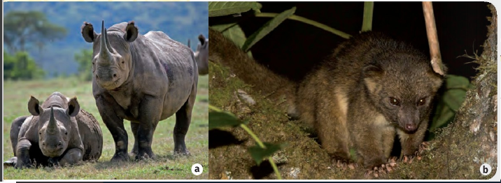
promjene organizama tijekom duljega vremenskog razdoblja i nastanak novih vrsta? Vjerojatno je da je od postanka našega planeta do danas izumrlo 99 % vrsta koje su ikada živjele na njemu. Nove vrste svakodnevno nastaju ili se tek otkrivaju, a neke postojeće nestaju (1.22. slika). Na bioraznolikost utječu mnogi čimbenici poput promjene temperature okoliša i duljine godišnjih doba, onečišćenja staništa i unosa stranih vrsta. Najveći uzrok izumiranja vrsta jest nestanak, odnosno promjena uvjeta na njihovim staništima, primjerice, nestanak šuma, otapanje ledenjaka i slično. Prisjeti se nekih vrsta kojima opstanak ovisi o navedenim tipovima staništa. Kako ti možeš utjecati na povećanje broja jedinki neke vrste?
Unatoč velikoj brojnosti živih bića svaki je organizam jedinstven, ali ujedno dijeli i mnoga obilježja sa svojim bliskim srodnicima. Svi organizmi koji imaju mnogo zajedničkih obilježja, mogu se međusobno razmnožavati i dati plodno potomstvo čine jednu vrstu. Pripadnost istoj vrsti nije određena jedinstvenim staništem. Primjerice, sve jedinke tigrastoga komarca, neovisno o tome nalazi li se dio populacija na području Azije, Europe ili nekoga drugog kontinenta, čine vrstu tigrasti komarac. Ljudi su od davnina nastojali svrstati živa bića u određene skupine prema zajedničkim obilježjima kako bi uveli organizacijski sustav za tako velik broj postojećih vrsta. Promatranjem vanjske građe organizama moglo se uočiti mnogo poveznica pa se nametnulo pitanje njihove međusobne srodnosti. U određivanju podrijetla i zajedničkoga pretka uvelike je pomogao razvoj evolucije i genetike. Temelje klasifikaciji živih bića kakvu danas poznajemo dao je švedski prirodoslovac Carl Linné u 18. stoljeću (1.23. slika).
Biološka klasifikacija postojala je i prije Linnéova vremena, ali su se imena vrsta često sastojala od mnogo riječi kojima bi se opisivala posebna morfološka obilježja neke vrste. Primjerice, prava mačja metvica (1.24. slika) dotad se nazivala metvica s cvjetovima položenim u klasovima na nasuprotnim cvjetnim stapkama.
Bilo je teško zapamtiti imena koja su se sastojala od mnogo riječi, a dodatni je problem nastao i kad bi različiti znanstvenici dali drukčije opisno nazivlje za istu vrstu.
Za bolje upoznavanje i razumijevanje bioraznolikosti bilo je važno dati ime svakoj vrsti. Imenovanje vrsta čovjeku olakšava njihovo proučavanje. Kad znanstvenici upoznaju neku vrstu, mogu pružiti informacije o tome kako je zaštititi te spriječiti njezino izumiranje, što je važan čimbenik očuvanja biološke raznolikosti.
Linné je nastojao pojednostaviti nazivlje mnogih biljaka i životinja, stoga je uveo model kojim se i danas koristimo. Svakoj je vrsti dao znanstveno ime koje se sastoji od dviju riječi pa je takav način imenovanja poznat kao dvoimeno nazivlje ili binarna nomenklatura. Znanstveno ime vrste piše se na latinskome jeziku, a uz njega stoje inicijali ili kratica prezimena znanstvenika koji ju je prvi imenovao i opisao, primjerice, L. za Carl Linné (1.25. slika).
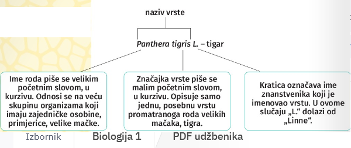
Sav živi svijet dijeli bar neka zajednička obilježja jer sve vrste, one izumrle i danas živuće, dijele zajedničkoga pretka. Prisjeti se što bi bilo zajedničko smeđoj hidri i crvenoj moruzgvi. A pužu barnjaku i risu? Promisli koje su dvije vrste srodnije. Kako bismo bolje proučili srodstvene odnose među živim bićima, osim njihova imenovanja i opisivanja, potrebno ih je smjestiti u određene skupine koje su hijerarhijski međusobno organizirane, tj. svaka je sljedeća nadređena prethodnoj. Grana biologije koja ima takvu zadaću naziva se sistematika,
a njezin je utemeljitelj već spomenuti znanstvenik Linné. Sistematika svrstava sva živa bića u nekoliko sistematskih kategorija s vrstom kao osnovnom kategorijom. Vrste koje su međusobno vrlo srodne pripadaju istomu rodu, a slični rodovi čine jednu porodicu itd. U 1.1. tablici prouči preostale sistematske kategorije koje su nadređene otprije navedenima.
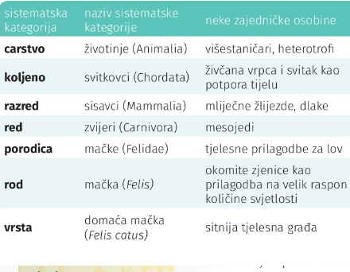
Koje je znanstveno ime vrste kojoj mi pripadamo? Koje sistematske kategorije dijelimo s domaćom mačkom? Prisjeti se s kojom smo vrstom u najbližem srodstvenom odnosu pa navedi koja su nam obilježja zajednička.
Savživi svijet možemo podijeliti naarheje, bakterijei eukariote. Arheje i bakterije su jednostanični organizmi. Njihove stanice nemaju organele pa takve stanice nazivamo prokariotskim
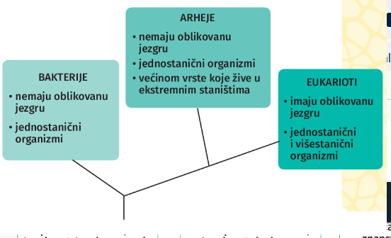
stanicama. Eukarioti su naziv dobili po eukariotskim stanicama koje izgrađuju njihovo tijelo. To su stanice čija je unutrašnjost membranama podijeljena na odjeljke koje nazivamo organelima. Središnji organel eukariotskih stanica jest jezgra. Evolucijska povezanost arheja, bakterija i eukariota prikazana je rodoslovnim stablom na 1.26. slici.
Eukariote možemo raščlaniti na carstva protoktista, gljiva, biljaka i životinja. Podjela organizama na carstva u skupini eukariota temeljena je na vrsti i broju stanica koje grade organizam, ali i na njihovu načinu prehrane (1.2. tablica).
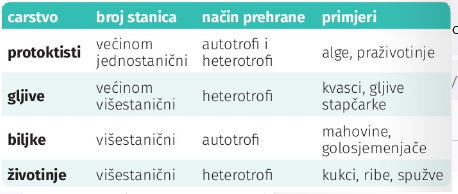
Neprestani napredak znanosti i otkrića novih vrsta utječu na sustav biološke klasifikacije i ona je podložna promjenama. Primjerice, nove spoznaje koje dobivamo analizom gena često ukazuju na drukčije srodstvene odnose pojedinih vrsta, stoga se javlja potreba za reorganizacijom trenutačne sistematizacije živih bića.
Promatrajući morfologiju jedinke, možemo uočiti detalje koji nam zorno pokazuju pripadnost nekoj skupini. Uzmimo za primjer člankonošce. Njima pripadaju i kukci i pauci koji dijele mnogo zajedničkih obilježja, ali je očita morfološka razlika kad promatramo broj nogu pauka u odnosu na kukce (1.27. slika).
Nasuprot promatranomu primjeru, blisko srodne vrste mogu se razlikovati u vrlo malo obilježja, primjerice, neke vrste pečurki u odnosu na pupavke. Zašto je važno dobro
prepoznati pojedine vrste gljiva? Koja je naša najpoznatija pupavka? Za identifikaciju određene jedinke biolozi se koriste identifikacijskim ključevima od kojih je najčešće upotrebljavan dihotomski ključ. Takav sustav određivanja vrste temelji se na dvama ponuđenim izborima koji se odnose na morfološka obilježja promatrane jedinke. Ako je riječ o dvjema promatranim gljivama, primjerice, kod vrganja lako uočavamo cjelovitost klobuka dok je kod smrčka klobuk šupljikav. Prouči jednostavnu inačicu dihotomskoga ključa na primjeru gljiva (1.28. slika). Važno je napomenuti da neke jestive gljive nalikuju otrovnim gljivama i stoga se ne smije olako upuštati u branje gljiva u prirodi. Ovo je pojednostavljeni dihotonski ključ čija uloga je samo da prikazuje princip na kojem se temelje ključevi za određivanje vrsta, a nije namijenjen za upotrebu pri branju gljiva.
Promatrajući detalje po kojima se jedinke dviju vrsta razlikuju i odabirom jednoga od dvaju ponuđenih izbora, možemo lako zaključiti kojoj vrsti promatrana jedinka pripada. Ključ se sastoji od tvrdnji koje su međusobno isključive i jedino tako u potpunosti funkcionira. Osim za identifikaciju gljiva dihotomski se ključevi mogu izrađivati za određivanje vrsta biljaka, životinja i sl. Primjerice, geolozi ih upotrebljavaju za identifikaciju minerala.
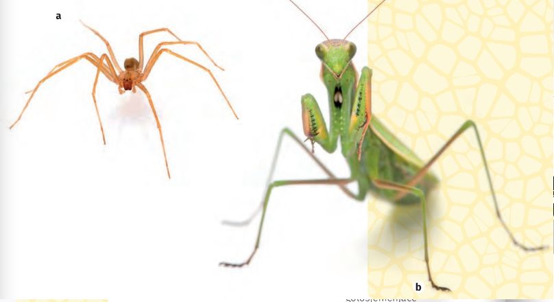
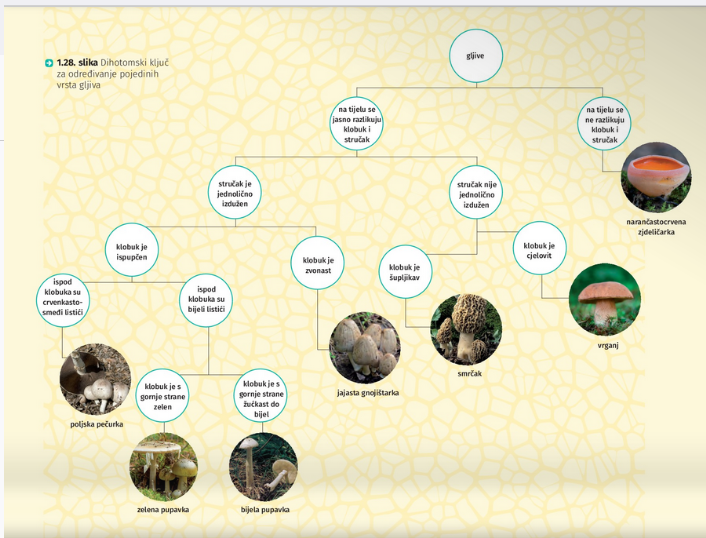
Istraživanja u biologiji
Promatranjem svijeta oko sebe znanstvenici često uočavaju neke neobjašnjene pojave i procese, a zatim provode istraživanja kako bi ih objasnili. Biolozi svoja istraživanja često provode u laboratoriju služeći se znanstvenom metodom. Znanstvena metoda jest postupak u kojemu dolazimo do novih otkrića postavljanjem pitanja na koja, koristeći se dosadašnjim znanjem, pokušavamo odgovoriti. Zatim postavljamo pokus kojim provjeravamo točnost svoje pretpostavke. Biolozi često provode i terenska istraživanja u prirodi, primjerice, ispitivanje brojnosti populacije medvjeda i vukova na Velebitu. Svako istraživanje u kojemu dolazimo do novih spoznaja o predmetu proučavanja naziva se znanstveno istraživanje. Takva istraživanja objavljuju se u brojnim znanstvenim časopisima i često služe kao temelj za neka nova istraživanja.
>
U RADU
Prehrambeni odnosi organizama u ekosustavu
Svaki je ekosustav na Zemlji jedinstven, a rezultat je interakcije brojnih organizama s neživom tvari u njihovu staništu. Ekosustav prije svega određuju klimatski uvjeti područja na kojemu se nalazi, poput godišnjih promjena temperature i količine padalina i vlage. Klimatski uvjeti određuju kakvom će biomu pripadati ekosustav, a zajedno s ostalim uvjetima poput količine svjetlosti, sastava tla i reljefa određuju koje će ga vrste organizama nastanjivati. Sastav biocenoze zatim utječe na promjene u staništu, u sastavu tla i u reljefu, čime se održava neprestani ravnotežni ciklus unutar ekosustava. Po čemu se razlikuju šuma u Gorskome kotaru i otočni zavičaj Jadrana? Usporedi klimatske i ostale uvjete tih ekosustava (2.1. slika).
Svakomu je organizmu potrebna hrana da bi preživio. Ona mu služi kao izvor energije za sve životne procese i izvor hranjivih tvari i minerala nužnih za rast, razvoj i razmnožavanje. Organizme možemo svrstati u dvije skupine s obzirom na način prehrane. Organizmi koji proizvode vlastitu hranu poput biljaka i algi zovu se autotrofni organizmi ili autotrofi. Oni koji ne mogu proizvoditi vlastitu hranu zovu se heterotrofni organizmi ili heterotrofi, a hrane se drugim organizmima, najčešće biljkama ili životinjama.
Autotrofni su organizmi osnova svakoga ekosustava i njegova hranidbenog lanca. Oni uzimaju energiju iz okoliša i koriste se njom za proizvodnju organskih spojeva bogatih energijom. Takav proces nazivamo primarnom proizvodnjom jer njime nastaju hranjive tvari potrebne za život svih organizama u ekosustavu, a autotrofne organizme koji je provode nazivamo proizvođačima.
Većina autotrofnih organizama obavlja primarnu proizvodnju fotosintezom, oni proizvode organske spojeve iz ugljikova(IV) oksida koristeći se svjetlosnom energijom Sunca i zovu se fotoautotrofi. Drugi autotrofni organizmi do energije za primarnu proizvodnju dolaze razgradnjom anorganskih kemijskih spojeva poput NH,, HS ili Fe2. To su uglavnom bakterije i arheje koje žive uz hidrotermalne izvore ili u drugim staništima bogatim anorganskim tvarima i zovemo ih kemoautotrofi (2.2. slika).
Ne proizvode svi ekosustavi jednaku količinu organske tvari. Produktivnost tipičnoga kopnenog ekosustava ovisi prije svega o količini dostupnoga svjetla, vode i ugljikova(IV) oksida za fotosintezu. Šume su općenito najproduktivniji kopneni ekosustavi zbog veličine biljnih zajednica koje tamo obitavaju (2.3. slika). Guste krošnje propuštaju malo svjetla do tla, što ukazuje na veliku iskoristivost dostupne Sunčeve energije. U vodenim staništima među najproduktivnijima su koraljni grebeni u kojima obitavaju simbiotske zajednice algi i koralja te močvarna područja u kojima primarnu proizvodnju imaju vodene biljke, alge i cijanobakterije.
Procesom fotosinteze energija pohranjena u organskim spo- jevima ugrađena je u tkivo autotrofnih organizama kojim se mogu hraniti heterotrofni organizmi koje zovemo potrošači. Proizvođači i potrošači povezani su u hranidbeni lanac koji prikazuje slijed kruženja tvari i protjecanja energije (2.4. slika). Biljkama se hrane biljojedi koje zovemo primarni potrošači ili potrošači prvoga reda, zatim se biljojedima hrane mesojedi koje zovemo potrošačima drugoga reda kojima se zatim mogu hraniti potrošači trećega reda itd. Životinje koje su na kraju hranidbenoga lanca zovu se vrhunski grabežljivci. Oni u svoje- mu ekosustavu nijednoj drugoj životinji nisu plijen (2.5. slika).
Jedna skupina heterotrofnih organizama naziva se razlagači jer se hrani mrtvim ostatcima drugih organizama te tako potpomaže razgradnju mrtve organske tvari. To su većinom gljive, bakterije i mnogi beskralježnjaci koji razlaganjem vraćaju mnoge mineralne tvari nazad u tlo iz kojega se autotrofni organizmi ponovno koriste tim tvarima za primarnu proizvodnju (2.6. slika). Neki se potrošači hrane mrtvim životinjama i biljkama koje nisu sami ulovili, a nazivamo ih strvinarima (2.7. slika).
lako hranidbeni lanci zorno prikazuju tko jede koga, unutar jedne biocenoze većina jedinki neće se hraniti samo jednom vrstom. Mnogo zorniji prikaz prehrambenih odnosa unutar jednoga ekosustava prikazuje hranidbena mreža.
U njoj se, kao i u hranidbenome lancu, prikazuje odnos proizvođača i potrošača, ali su prehrambeni odnosi u njoj umreženi (2.8. slika). Jedna vrsta u hranidbenoj mreži može se hraniti organizmima različitih vrsta i istovremeno biti, primjerice, potrošač prvoga i drugoga reda (2.9. slika).
Energija u ekosustav ulazi preko primarnih proizvođača, većinom fotoautotrofnih organizama, i putem hranidbenoga lanca protječe iz organizma u organizam. Biljke energiju dobivaju od sunca, a životinje energiju dobivaju hraneći se biljkama ili drugim životinjama. Onaj dio energije koju biljka iskoristi za rast, vezan je u obliku različitih organskih spojeva u tijelu biljke i u tome obliku može poslužiti kao hrana biljojedima. Biljojedi će na sličan način dio energije iz hrane iskoristiti za rast vlastitoga tijela, a organski spojevi koji grade njihovo tijelo bit će dostupni kao hrana mesojedima. Ostatak energije iz hrane organizmi troše na kretanje i na metaboličke procese kako što je stanično disanje. Pri svim navedenim procesima događaju se pretvorbe energije, a svakom pretvorbom dio energije izlazi iz sustava kao toplinska energija kojom se članovi hranidbenoga lanca više ne mogu koristiti (2.10. slika).
Uobičajeno je da je kod svakoga protjecanja energije iz jedne karike u sljedeću očuvano samo oko 10 % energije. Velik dio preostale energije utroši se na kretanje i metabolizam tijekom koje se pretvara u toplinu, a mnogi organizmi uopće i ne budu pojedeni te njihova mrtva tijela iskorištavaju strvinari i razlagači za svoje potrebe.
Iskoristivost energije koja protječe hranidbenim lancem vrlo je mala, što je razlog zašto unutar jednoga hranidbenog lanca nema više od 4 do 6 karika (2.11. slika).Ukupna masa jedinki unutar pojedine karike, odnosno njiho- va biomasa, u pravilu ne može biti veća od biomase organiza- ma u prethodnoj karici. Odnosi iskorištavanja energije orga- nizama u ekosustavu i veličina njihovih biomasa prikazuju se slikovito hranidbenim piramidama. Jedinka tune je vrhunski grabežljivac i da bi preživjela, ona u jednoj godini mora poje- sti skuše mase oko 10 puta veće od vlastite. Jedinka skuše isto tako u jednoj godini pojede srdele čija je ukupna masa oko 10 puta veće od mase skuše. Za prijelaz energije iz svakog do- njeg kata hranidbene piramide u gornji kat, potrebna je oko 10 puta veća biomasa jedinki plijena koja će podržavati jedin- ke predatora. Razlog tomu je što predator iskorištava samo oko 10 % energije sadržane u tijelu njegova plijena. Prisjeti se na što se utroši ostatak te energije.
Kruženje tvari u prirodi
Jesi li se ikada zapitao otkud dolazi toplina koja zagrijava tvoje tijelo? Otkud dolazi energija koja pokreće mišiće koji pomažu pticama u letu ili lignjama u plivanju? Dosad si naučio da svaki organizam, bilo jednostanični bilo višestanični, za preživljavanje treba svakodnevni unos hranjivih tvari iz kojih oslobađa potrebnu energiju. Prisjeti se pa navedi neke procese u organizmu kojima se oslobađa energija. Dio energije utroši se na svakodnevno obavljanje aktivnosti kako što su rad srca i pluća, obnavljanje tkiva ili proizvodnja hormona, a dio energije ostaje pohranjen u spojevima od kojih je organizam izgrađen.
Organizmi uzimaju tvari potrebne za život iz okoline preko površine svojega tijela. Mnogi organizmi imaju vrlo specijalizirano izgrađene dijelove tijela za unos hranjivih tvari, minerala i vode. Životinje hranu često usitnjavaju i razgrađuju do manjih sastavnica koje zatim unose u krv preko površine svojih crijeva. Gljive potrebne tvari većinom unose preko hifa, duguljastih tvorbi koje su razgranane u tlu. Biljke su autotrofni organizmi, stoga sami stvaraju svoju hranu, ali mnoge minerale potrebne za proizvodnju organskih tvari, primjerice spojeve dušika ili fosfora, uzimaju korijenom iz tla. Koji su kemijski spojevi biljkama nužni za fotosintezu? Kako one dolaze do tih kemijskih spojeva?
Poznato je da jednostanična ameba obavlja sve životne zadaće i funkcionira kao cjelokupan organizam kao što to na svoj način čini i višestanična žaba. Stanica amebe okružena je membranom koja je odjeljuje od njezine okoline. Preko membrane ameba izmjenjuje plinove, hrani se, upija vodu i izlučuje otpadne tvari. U organizmu žabe sve navedene uloge obavljaju različiti organi odnosno organski sustavi kao što su dišni sustav za izmjenu plinova ili bubrezi za izlučivanje, ali su i oni izgrađeni od brojnih specijaliziranih stanica. Učinkovitost izmjene tvari između stanica i njezina neposrednoga okoliša bolja je ako je stanica manjega volumena.
Promotri 2.12. sliku i usporedi kako dva okrugla tijela (stanice) različite veličine upijaju tvari iz okoline. Kroz površinu kojega će se tijela tvari brže upijati? Razmisli zašto su veliki organizmi građeni od mnogih manjih stanica.
Tijela većega volumena imaju proporcionalno veću potrebu za unesenim tvarima, no mnogo će se teže i sporije tim tvarima ispuniti jer će im relativna površina za unos tvari biti manja. Za tijela istoga oblika vrijedi da će omjer površine i volumena biti manji kako se tijelo povećava. Promotri sliku 2.13. i usporedi omjere površine i volumena prikazanih tijela.
Ipak, stanice nisu kockaste niti su sve međusobno istoga oblika. Mnoge stanice mogu izvrtanjem svoje membrane znatno uvećati svoju površinu za istu jedinicu volumena (2.14. slika).
Oblik i površina tijela organizama iznimno su važni za obavljanje njihovih životnih procesa. Organizmi ili njihovi dijelovi tijela koji imaju povećanu površinu, proporcionalno su izloženiji okolini, a izmjena je tvari uvećana. Mnoga tkiva i organi različitih organizama razgrananoga su oblika, imaju mnoga uvrnuća ili izbočenja upravo zbog uvećane površine preko koje je omogućen brži unos tvari (2.15. slika).
Ponekad velika površina tijela ne daje prednost organizmu. Primjerice, u vrućim i sušnim područjima preko velike površine tijela lakše se gubi voda. Mnogi stanovnici takvih krajeva prilagođeni su na različite načine kako bi spriječili prevelik gubitak vode iz organizma (2.16. slika).
Organizmi se energijom iz hrane koriste za brojne životne procese kako što su kretanje, rast i razmnožavanje. Tijekom svake pretvorbe kemijske energije hrane u energiju potrebnu za obavljanje životnih procesa dio se energije oslobađa iz sustava u obliku topline. Iako takvu toplinsku energiju organizmi više ne mogu iskorištavati, stabilni temperaturni uvjeti nužni su za održavanje na životu. Sukladno tomu, mnogi organizmi koji žive u hladnijim krajevima pokušat će zadržati više topline nego oni koji žive u toplijim krajevima.
Protjecanje toplinske energije, kao i izmjena tvari, odvija se preko površine tijela. Brzina protjecanja topline proporcionalna je temperaturnoj razlici tijela i okoline, što znači da će u hladnijemu staništu tijelo brže gubiti svoju toplinu. Iz takva načina protjecanja energije proizlazi nekoliko važnih prilagodbi.
1. Duljina tjelesnih nastavaka, primjerice uški, jedna je od prilagodba na temperaturne uvjete u okolišu. Preko njihove uvećane površine oslobađa se toplina u okoliš, stoga organizmi koji žive u hladnijim područjima imaju kraće uške od svojih srodnika u toplijim područjima (2.17. slika). Prisjeti se još primjera životinja s velikom površinom ušiju ili drugih tjelesnih nastavaka kojima se lakše hlade u toplijim krajevima.
2. Mnoge će životinje tijekom hladnijih razdoblja pokušati smanjiti površinu preko koje gube toplinu tako da se prigrle drugim jedinkama u populaciji (2.18. slika) ili da tjelesne nastavke velike površine kao što su noge ili rep prekriju vlastitim tijelom (2.19. slika).
3. Veličina tijela još je jedna prilagodba na temperaturne uvjete okoliša. Organizmi koji žive u hladnijim područjima češće su veći od svojih srodnika koji žive u toplijim područjima jer imaju manji omjer površine i volumena (2.20. slika). U
manjih je organizama taj omjer veći,
stoga teže zadržavaju toplinu.
4. Mali organizmi imaju brži metabolizam od velikih. Mali organizmi gube više topline zbog većega omjera površine i volumena, stoga moraju biti aktivniji i unositi više hrane po jedinici mase kako bi se taj gubitak nadoknadio. Zato će biti brži metabolizam miša u odnosu na sporiji metabolizam slona. Brži metabolizam znači oslobađanje više energije u jednakome vremenu, što je u skladu s njezinom visokom potrošnjom (2.21. slika).
Izmjenom tvari između organizama i okoliša dolazi i do pretvorbe energije iz jednoga oblika u drugi, primjerice, oslobađanje kemijske energije hrane u toplinsku energiju potrebnu za zagrijavanje tijela. Organizam iz hrane ne dobiva samo energiju, nego i molekule koje mogu poslužiti za izgradnju vlastitoga organizma. Primjerice, hraneći se bjelančevinama iz mišića lososa, sivi medvjed može iskoristiti njegove aminokiseline za izgradnju vlastitih bjelančevina. Dio će aminokiselina iskoristiti tako da od njih dobije energiju potrebnu za obavljanje svakodnevnih aktivnosti. Za oslobađanje energije iz hrane koristit će se kisikom koji stvaraju fotosintetski organizmi poput zelenih biljaka. Ugljikov(IV) oksid koji je sivi medvjed izdahnuo kao produkt metabolizma, zelene će biljke iskoristiti u procesu fotosinteze za stvaranje ugljikohidrata koji im služe kao vlastita hrana, a one će same poslužiti kao hrana biljojedima. Bakterije razlagači iskoristit će organsku tvar, primjerice izmet medvjeda, te ju razgraditi na jednostavnije anorganske spojeve kojima će obogatiti tlo i tako nadomjestiti zelenim biljkama prijeko potrebne minerale itd. Količina je tvari koja kruži u prirodi stalna, a tvari samo prelaze iz jednoga u drugi kemijski oblik, odnosno možemo reći da se recikliraju.
U tom neprestanom kruženju neživa tvar postaje sastavni dio živih bića, a oni nakon smrti postaju sastavni dio nežive prirode. Takvo kruženje atoma kemijskih elemenata i njihovih spojeva u prirodi nazivamo biogeokemijskim ciklusom. Promotrit ćemo kruženja najvažnijih tvari, među kojima se ističu makroelementi poput ugljika i dušika, mikroelementi poput fosfora te voda.
Kruženje ugljika
Ugljik se ističe kao jedan od najvažnijih kemijskih elemenata čiji atomi dolaze u sastavu živih bića. Zašto je baš ugljik ključan kemijski element u biološkim molekulama? Veći dio ugljika koji kruži unutar biogeokemijskih ciklusa vezan je u molekuli ugljikova(IV) oksida, a izmjenjuje se između atmosfere i hidrosfere, tj. oceana. Fotosintetski organizmi mogu ugljikov(IV) oksid iskorištavati za stvaranje hrane (2.22. slika). Ti su organizmi ujedno glavni izvor ugljika za potrošače i razlagače.
Nizom kemijskih reakcija ugljikov(IV) oksid otapanjem u morskoj vodi daje karbonate i hidrogenkarbonate. Tako postaje dostupan organizmima koji ga mogu iskoristiti za stvaranje ljuštura i drugih oblika skeleta. Ugljik je prisutan i u litosferi. Nalazimo ga u stijenama u obliku karbonata. Padaline ispiru karbonate koji odlaze u oceane.
Ugljik se vraća u atmosferu, primjerice, kao produkt nastao procesom staničnoga disanja. U stanicama živih bića dolazi do razgradnje šećera glukoze s pomoću kisika i tako se iz molekula šećera oslobađa pohranjena energija, a jedan od produkata razgradnje jest i ugljikov(IV) oksid.
Ugljik ugrađen u biomolekule uginulih organizama razlagači će opet ugraditi u ugljikov(IV) oksid koji može ponovno ući u proces fotosinteze. U dubljim će se slojevima Zemlje odvijati proces pougljenjivanja pa će nastati fosilna goriva. Izgaranjem fosilnih goriva nastaje golema količina ugljikova(IV) oksida koji odlazi u atmosferu (2.23. slika). Zašto povećanje količine ugljikova(IV) oksida u atmosferi može biti štetno? Količina ugljikova(IV) oksida u atmosferi mijenja se i ovisno o godišnjim dobima. Zimi kad biljke manje fotosintetiziraju, u atmosferi ga ima mnogo. U vrijeme pojačanoga rasta biljaka promjene u količini atmosferskoga ugljikova(IV) oksida vrlo su očite čak i u različito doba dana. Od izlaska Sunca do popodneva njegova se količina smanjuje, dok do zalaska Sunca količina opet poraste zbog smanjenja stope fotosinteze.
Dušik je jedan od iznimno važnih elemenata koji grade živa bića, neizostavni je dio bjelančevina i nukleinskih kiselina. Prisjeti se uloge tih biomolekula u organizmu. Svi organizmi, pa tako i biljke, trebaju dušik za normalan rast i razvoj. Zrak sadrži oko 78 % plinovitoga dušika (N,) koji je u tome obliku gotovo svim živim bićima neiskoristiv. Dostupnim ga čine nitrofiksacijske (dušikove) bakterije koje imaju sposobnost fiksacije dušika, odnosno vezanja dušika iz atmosfere te ga pretvaraju u oblik u kojemu ga mnoge biljke mogu iskoristiti, a to su nitrati ili amonijevi ioni. Bakterije koje fiksiraju dušik
obično žive u simbiozi s korijenjem biljaka mahunarki (2.25. slika), ali ih možemo naći i u suživotu s johom, vodenom paprati, tropskim travama, dok neke vrste takvih bakterija žive slobodno u tlu. Čak 90% dušika fiksacijom postane dostupno biljkama. Dušik je biljkama koje se njime koriste u obliku amonijevih iona dostupan djelovanjem gljiva i nekih vrsta bakterija koje stvaraju amonijeve ione od ostataka uginulih organizama. Većina se biljaka kao izvorom dušika koristi nitratima, a samo neke od njih mogu iskoristiti amonijeve ione. U daljnjoj pretvorbi amonijevih iona u nitrate pomaže posebna vrsta bakterija - nitrifikacijske (dušične) bakterije. Biljke su važan izvor dušika za sve biljojede, a oni su izvor dušika za mesojede. Dušik se iz organskih spojeva s pomoću bakterija razlagača ponovno pretvara u molekule dušika procesom denitrifikacije i kao takav odlazi u atmosferu. Ondje se može pregraditi u dušikove okside koji otopljeni u kapljicama kiše mogu ponovno dospjeti na Zemljinu površinu, i to u obliku nitrata. Izvor oksida mogu biti i ispušni tvornički plinovi.
Kruženje fosfora
Fosfor je važan sastavni dio molekula fosfolipida od kojih su izgrađene stanične membrane živih bića, a dolazi i kao važan sastojak u nukleinskim kiselinama. Najviše je fosfora u stijenama koji ispiranjem, odnosno oborinama dospijeva u tlo, stoga je u obliku fosfata dostupan biljkama. Biljojedi ga nadoknađuju uzimajući biljnu hranu, a u tlo se vraća izmetom i truljenjem uginulih organizama. U vodenim ekosustavima upijaju ga cijanobakterije, alge i više biljke kojima se hrane biljojedi. Razlaganjem uginulih organizama u vodi tijekom milijuna godina dolazi do postupnoga nastajanja sedimentnih stijena koje sadrže fosfor (2.26. slika).
Održivost ekosustava
Unutar nekoga ekosustava žive različiti organizmi. Već si se upoznao s ulogama pojedinih organizama u hranidbenim lancima i mrežama, neki su organizmi proizvođači, drugi su potrošači itd. Velik je broj različitih vrsta organizama u ekosustavu, stoga se oni često moraju natjecati za istu hranu ili za mjesto gdje obitavaju. Biljke se na isti način natječu za dostupnu vodu u staništu ili svjetlo kojim se koriste za proizvodnju vlastite hrane. U takvim uvjetima mnoge vrste koje bi se natjecale za istu hranu, specijaliziraju se za pojedine resurse u staništu, što im daje veće šanse za preživljavanje. Kulik i sabljarka jesu ptice koje se hrane malim vodenim beskralježnjacima unutar istih vodenih staništa, no one zbog svojih prilagodbi ne uzimaju jedna drugoj hranu (2.28. slika). Te ptice zauzimaju različite ekološke niše u svome staništu.
Ekološka niša jest mjesto pojedine vrste u ekosustavu, ona opisuje čime se ta vrsta može hraniti i gdje se hrani, ali i kako ona utječe na populacije drugih vrsta u istome staništu. Ekološka je niša svake vrste ograničena i uvjetima u okolišu i kao što su vlaga i temperatura, što znači da ima i prostorne granice. Vjetruša i sova su grabežljive ptice koje su prilagođene različitim uvjetima u okolišu. Njihove su ekološke niše zato prostorno odijeljene i ne preklapaju se (2.29. slika).
Što je vrsta specijaliziranija na tip prehrane, njezina je ekološka niša uža. Primjerice, ekološka niša koala u Australiji vrlo je uska, one se hrane samo listovima eukaliptusa, što im značajno ograničava širenje u nova staništa. Rakuni su pak svejedi koji se mogu hraniti plodovima biljaka, kukcima, jajima ptica i drugim životinjama. Ekološka je niša rakuna široka i mogu nastanjivati šira geografska područja i prilagoditi se nestašici pojedine vrste hrane. Mnogi veslonošci imaju relativno široku ekološku nišu, hrane se različitim fitoplanktonom i nemaju mnogo ograničavajućih čimbenika, stoga su rašireni u vodama cijeloga svijeta (2.30. slika).
Ekološku nišu neke vrste određuje i utjecaj te vrste na ostale članove ekosustava. Veslonošci su važna karika u hranidbenim lancima svojih ekosustava jer povezuju proizvođače u moru s potrošačima viših redova kao što su ribe i druge životinje. S obzirom da nastanjuju gotovo sva morska staništa na Zemlji, od iznimne su važnosti za cijelu hidrosferu. Mnoge su vrste pčela također bitne u biosferi. One su potrošači koji se hrane nektarom u cvjetovima biljaka i nehotice im omogućuju oprašivanje (2.31. slika). Uloga je pčela kao oprašivača mnogih biljnih vrsta nezamjenjiva u većini ekosustava. Učestalo korištenje pesticidima, gubitak staništa i neki nametnici znatno su utjecali na brojne populacije pčela u svijetu. Većina biljnih vrsta na Zemlji ovisi o oprašivačima, zato su pčele jedan od najvažnijih članova mnogih biocenoza. Koje su još životinjske vrste oprašivači?
Ekosustav je uravnotežen ako su hranidbene mreže u njemu stabilne. Veličina pojedine populacije u hranidbenoj mreži ovisi ponajviše o količini dostupne hrane. Svi su članovi u mreži ovisni jedni o drugima i promjena veličine populacije jedne vrste može utjecati na veličinu ostalih. Neke vrste utječu na stabilnost ekosustava više od drugih i mogu poremetiti uravnoteženo stanje ekosustava. Dabrovi su vrsta koja osim čovjeka možda najviše utječe na mnoge druge organizme u svome staništu. Dabrovi su biljojedi raznolike prehrane, no njihova je ekološka niša ograničena prostorom oko tekućica.
Dabrovi grade skloništa od kamenja, blata i drva koje zovemo brane i njima mijenjaju protok vode u svojim staništima (2.32. slika). Branama uzrokuju poplavna područja gdje ih prije nije bilo. U njima se zatim drastično mijenjaju uvjeti života i s vremenom ih nastanjuju nove vrste biljaka i životinja. Poplave uzrokuje propadanje mnogih stabala koja postaju novo stanište različitim vrstama razlagača. Dabrovi svojim djelovanjem ponekad drastično izmijene uvjete u staništu, a time i neke ekološke niše toga staništa. Ekosustav više nije uravnotežen jer neke vrste gube svoje stanište i izvor hrane. Otvaraju se i nove ekološke niše s novim izvorima hrane. Njih s vremenom mogu popuniti neke druge vrste prilagođene novim uvjetima u okolišu, čime se ekosustav vraća nazad u uravnoteženo stanje.
Uravnoteženo stanje u ekosustavu nikad nije statično. Promotri jednostavan primjer odnosa predatora i plijena u šumi. Ris je mačka koja se hrani kunićima i time direktno djeluje na veličinu njihove populacije. Kad je kunića dovoljno u populaciji, risovi se množe i raste njihov broj u staništu. Veći broj jedinki risa uzrokuje izlovljavanje kunića i njihov broj drastično pada. S padom brojnosti u populaciji kunića,
risovi gladuju i brojnost u njihovoj populaciji također opada, što omogućuje ponovni rast populacije kunića. Takvo se izmjenjivanje brojnosti ponavlja iz ciklusa u ciklus. lako se čini da su obje populacije često pred izumiranjem, njihov se odnos neprekidno vraća u ravnotežu (2.33. slika). Proces održavanja uravnoteženoga stanja u prirodi zovemo homeostaza.
Uspostavljanje uravnoteženoga stanja nije uvijek jednostavno. Nekad su promjene unutar ekosustava ipak prevelike da se stanje vrati u početno stanje ravnoteže. Ako se, primjerice, populacija risova ne oporavi tijekom jednoga od padova u brojnosti, ona može u potpunosti nestati na tome staništu. Nestanak samo jedne takve vrste može imati snažne posljedice u tome ekosustavu. Brojnost će kunića zbog nedostatka njihova prirodnoga neprijatelja porasti do te mjere da će ugroziti opstanak primarnih proizvođača, a prevelika gustoća populacije zečeva može olakšati i širenje bolesti. Vegetacija kojom se kunići intenzivno hrane dom je mnogim kukcima i drugim beskralježnjacima, a njihov nestanak dalje može utjecati i na opstanak mnogih ptica koje se njima hrane. Početno uravnoteženo stanje tada više nije održivo i opstanak je ekosustava ugrožen.
Mogući su brojni uzroci takva gubitka homeostaze. Najčešće su to prirodne katastrofe poput požara, poplava ili erupcija vulkana koje u kratkome roku mogu uništiti velik dio staništa. Dugoročni uzroci većinom su klimatske promjene poput promjene temperature ili količine padalina, ali oni mogu biti uzrokovani i ljudskim djelatnostima koje često rezultiraju onečišćenjem okoliša, globalnim zatopljenjem ili istrebljenjem pojedinih vrsta.
Što je veća bioraznolikost nekoga ekosustava, veća je njegova sposobnost uspostavljanja uravnoteženoga stanja. S većom bioraznolikosti bogatije su i složenije hranidbene mreže u ekosustavu koje mu daju stabilnost. Ako bi zbog nekoga razloga nestao ris u svome staništu, ekološku nišu predatora kunića mogla bi preuzeti neka druga vrsta - lisica ili vuk. Populacija bi kunića tada bila stabilnija i ne bi bila ugrožena čitava mreža drugih organizama u toj biocenozi. Dakle, bioraznolikost je možda najvažniji čimbenik u održavanju zdravih i uravnoteženih ekosustava, a i cijele biosfere.
Nakon mnogih prirodnih katastrofa stanište postaje djelomično ili potpuno opustošeno. Takvo stanište može biti naseljeno novim vrstama. Nakon vulkanske erupcije ogoljelo će tlo prvo nastaniti pionirske vrste biljaka kao što su trave, lišajevi i brojni mikroorganizmi. To su vrste prilagođene ogoljelim staništima koje s vremenom obogaćuju tlo
mineralnim tvarima potrebnim za rast ostalih biljnih vrsta (2.34. slika). Životinje nastanjuju takvo stanište tek kad nova vegetacija primarnom proizvodnjom daje dovoljno hrane za biljojede kojima se dalje mogu hraniti mesojedi itd. Takvi dugotrajni procesi uspostavljanja uravnoteženoga stanja zovu se sukcesije. One obično traju desetljećima, no nakon velikih izumiranja tijekom Zemljine povijesti trajali su i do nekoliko milijuna godina. Ako se sukcesija događa na potpuno ogoljelome području kao što je tlo nastalo izlijevanjem lave, ona se zove primarna sukcesija. U prirodi su mnogo češće sukcesije koje se događaju na tlu na kojemu je već prisutna vegetacija, ali je reducirana zbog požara, poplave, krčenja ili drugih sličnih događaja. Takve sekundarne sukcesije česte su, primjerice, u mediteranskome područje Hrvatske. Nakon požara u kojemu izgori veći dio šume hrasta crnike, tlo prvo nastanjuju nisko raslinje i trave koje su s vremenom zamijenjene makijom. Sukcesija završava kad na mjestu makije ponovno izraste šuma hrasta crnike, što ekosustav vrati nazad u uravnoteženo stanje (2.35. slika).
Razumno je povezati smanjenje dostupnih resursa i mineralnih tvari s negativnim učincima na ekosustav, no to nije nužno tako. Ponekad višak dostupnih mineralnih tvari može biti podjednako štetan. Eutrofikacija je primjer takvih promjena u ekosustavu. Eutrofikacija je uzrokovana povećanom količinom fosfatnih ili nitratnih spojeva u vodenome staništu, najčešće u jezerima, močvarama i morskim uvalama.
Povećana količina tih nutrijenata pogodna je za razvoj i razmnožavanje planktonskih algi i cijanobakterija koje u kratkome vremenu prekriju površinu vode i onemogućuju fotosintezu zaklonjenih algi koje žive pri dnu (2.36. slika). Takvo pretjerano razmnožavanje fitoplanktona naziva se cvjetanje voda. Odumiranje povećane količine planktonskih organizama dovodi do pojačane bakterijske razgradnje,
zbog koje se troši velika količina kisika u vodi i oslobađaju bakterijski toksini, što može dovesti do smrti mnogih životinja kao što su ribe.
Eutrofikacija se često dogada zbog izlijevanja kanalizacije, otpadnih voda koje sadrže deterdžente, i umjetnih gnojiva u mora ili kopnene vode. Toplija godišnja doba i vodena područja smanjenoga protoka vode pogoduju bržemu razvoju eutrofikacije (2.37. slika).
Raznolikost ekosustava
Raznolikost ekosustava određena je vrstama staništa i pripadajućim životnim zajednicama koje ih nastanjuju. Samo na području naše zemlje brojimo nekoliko stotina različitih staništa, što naglašava veliku raznolikost žive i nežive prirode, a tome doprinose nizinske, planinske i obalne regije.
Tipovi staništa određeni su i djelovanjem reljefa, što može rezultirati nastajanjem područja specifičnih za pojedinu zemlju, a njih nastanjuju organizmi s posebnim prilagodbama. Primjerice, u krškome području Velebita i Učke nailazimo na poseban tip staništa poznat kao točilo koje nastaje na strmim područjima s mnogo šljunka i odlomljenih dijelova stijena, a ispod takve mase jest tlo bogato vlagom. Takvi uvjeti pogoduju velebitskoj degeniji i velebitskoj gušterici (2.39. slika) koje su ujedno naši endemi. Razmisli zašto se na točilima razvio velik broj endemskih vrsta.
Dosada si naučio da su ekosustavi podložni promjenama. Prisjeti se koji čimbenici mogu značajno utjecati na uvjete koji vladaju u staništu kao i sastav biocenoza koje žive na njemu. Primjerice, širenje nametnika na drvenastim biljkama šumske zajednice može dovesti do njihova isušivanja i propadanja. Zato je na području Park-šume Marjan posječen velik broj stabala bora koja su se posušila zbog prekomjernoga razmnožavanja kukca iz skupine potkornjaka koji žive pod korom bora gdje svojim aktivnostima oštećuju tkivo debla (2.40. slika).
Očito je da je raznolikost ekosustava uvjetovana interakcijama okoliša i jedinki koje u njima žive, a rezultat toga je velika brojnost različitih tipova ekosustava na svijetu. Spomenut ćemo neke od najčešćih ekosustava, osobite uvjete koji u njima vladaju i prilagodbe organizama koji ih nastanjuju.
Vodeni ekosustavi jesu stabilni sustavi žive i nežive prirode u kojima je voda prevladavajući čimbenik. U njih ubrajamo morske ekosustave poput oceana, dubokih mora i koraljnih grebena te slatkovodne ekosustave poput jezerskih, riječnih, potočnih i močvarnih. U takvim je ekosustavima voda važan temperaturno stabilan medij jer zbog visokoga toplinskog kapaciteta nema velikih oscilacija temperature vodenih staništa. Neophodna je i za životne funkcije organizama jer je osnova svakoga metabolizma u svakome živom biću. Voda je izuzetno otapalo koje omogućuje slobodno kretanje mnogih molekula poput enzima, ugljikohidrata i otopljenih soli, ali i njihovu interakciju.
4
Morski se ekosustavi od slatkovodnih razlikuju po količini otopljene soli. Oni sadržavaju veću količinu otopljenih tvari, a često su prostorno mnogo veći od slatkovodnih i međusobno su povezani. Svaki ekosustav mora sadržavati primarne proizvođače. Ulogu tih autotrofnih oblika života imaju mikroskopski vidljivi organizmi, kao što su fitoplankton (2.41. slika) i makroskopske alge. Morski autotrofi provode fotosintezu u većoj mjeri nego kopneni. Makroskopski proizvođači u moru pripadaju skupinama zelenih, smeđih i crvenih algi. Njihovo tijelo nije podijeljeno na korijen, stabljiku i list, a u vodenim staništima nisu im ni potrebni. One obavljaju fotosintezu cijelim tijelom, a zbog svoje su građe vezane za morsko dno. Sunčeva svjetlost ne prodire kroz vodu lako kao kroz zrak, stoga proizvođače u moru nećemo naći ispod dubine od 200 m.
Životna zajednica koja nastanjuje morsko dno zove se bentos. Njega osim algi nastanjuju brojne životinje koje žive sjedilačkim načinom poput spužava (2.42. slika), koralja i školjkaša. Takvi su organizmi pričvršćeni za morsko dno, a hrane se filtriranjem organskih tvari u vodi. Slobodnopokretne životinje bentosa jesu rakovi, puževi, zvjezdače (2.43. slika), trpovi i ježinci koji se aktivno kreću po morskome dnu. Bijela riba poput zubatca, škarpinei modrulja živi samotnjačkim životom u bentosu. Primjer bentoskih ekosustava velike primarne proizvodnje i bioraznolikosti jesu koraljni grebeni. Nastali su dugotrajnim taloženjem mineralnih ostataka uginulih koralja.
U dubokomorskim područjima nalazimo bića koja su prilagođena na iznimno visok tlak i potpun nedostatak svjetla. Takvi organizmi čine biocenozu abisala. Na raspolaganju im je malo dostupne hrane, a temperatura je stalna, ali niska i kreće se od oko 3 °C do 4 °C. Glavni izvor hrane jesu ostatci organskih tvari koji dospijevaju iz viših dijelova mora te ostatci uginulih organizama kao što su kitovi. Životinje koje žive u dubokomorskim područjima često stvaraju svjetlo procesom bioluminiscencije. Dubokomorske ribe (2.44. slika) takvim svjetlom na svojim dugačkim nastavcima privlače plijen.
Proizvođači dubokomorskih biocenoza jesu kemoautotrofne bakterije. Prisjeti se na koji način ti organizmi stvaraju hranu. Te se bakterije nastanjuju oko hidrotermalnih izvora na oceanskome dnu koji u morsku vodu ispuštaju obilje plinova i minerala koji pogoduju razvitku kemoautotrofnih bakterija (2.45. slika). Temperatura oko izvora značajno je viša negoli je tipično za ostatak dubokomorskoga područja, a doseže i do nekoliko stotina Celzijevih stupnjeva. Faunu toga područja predstavljaju određene vrste rakova, školjkaša i cjevaša.
Pelagijal je životna zajednica u otvorenome moru udaljenom od obale, odnosno na pučini. Većinu organizama pelagijala čini plankton. Ti maleni organizmi lebde u moru nošeni morskim strujama i valovima. Primarne proizvođače te biocenoze čine fitoplankton poput algi kremenjašica i svjetlećih bičaša. Zooplankton uglavnom čine račići koji se hrane fitoplanktonom te meduze i ličinke brojnih drugih organizama. U tome području živi plava riba poput tune i srdele u velikim populacijama koje zovemo plove ili jata (2.46. slika). Životinje koje se aktivno kreću u vodi poput brojnih riba, kitova i dupina, pingvina i mekušaca poput lignji i sipa dio su nektona. Dio takvih morskih biocenoza jesu i brojne ptice koje se hrane organizmima tik uz površinu mora poput albatrosa, galebova i drugih (2.47. slika).
Slatkovodni ekosustavi jesu ekosustavi kopnenih voda, a za razliku od morskih imaju manje otopljenih soli i općenito su manjega volumena. Dijelimo ih na ekosustave tekućica poput rijeka i potoka te ekosustave stajaćica poput slatkovodnih jezera i močvara.
Stajaćice uključuju sve ekosustave u kojima se voda većinom ne kreće, a to su jezera, močvare, bare i lokve. Temperatura je vode promjenjiva tijekom godine. Voda je u takvim staništima ustajala i ljeti se zagrijava više nego mnoga mora, a zimi se često zamrzava. Pri većim je dubinama temperatura jezera uglavnom stalna i zimi na dnu iznosi oko 4 °C. Primarni proizvođači većinom su fitoplankton i poneke biljne vrste poput lopoča i lokvanja. Tipični stanovnici naših jezera jesu ribe poput štuke, soma i šarana te zmije poput bjelouški, mnogobrojni vodozemci, kukci i ptice. Što je u stajaćici više primarnih proizvođača, voda je zasićenija organskim tvarima, bogatija je životom, ali je i siromašnija kisikom koji se troši u velikoj mjeri. Zbog nedostatka kisika mnogi mikrobiološki stanovnici močvara prilagođeni su anaerobnomu načinu života. Močvare su bogat izvor hrane za mnoge životinje koje o njima ovise, ptice selice svoj dugi put prekidaju odmorom upravo u ovakvim staništima (2.48. slika).
Tekućice se odlikuju stalnim protokom vode. U takvim je uvjetima temperatura vode većinom niža nego u stajaćicama, a kretanje je vode brže, stoga je takva voda bogatija kisikom. Uvjeti u cijelome toku tekućice nisu isti i biocenoze se često izmjenjuju od izvora sve do ušća gdje uvjeti zbog širega i dubljega korita postaju sve sličniji stajaćicama. Primarni su proizvođači u tekućicama najvećim dijelom fitoplankton i biljke koje su pričvršćene za dno korita. Tipični stanovnici tekućica jesu pastrve (2.49. slika) u bržim i hladnijim vodama te šarani u sporijim i toplijim vodama. Neke ribe migriraju iz morskih staništa u slatkovodna staništa tekućicama poput lososa ili iz slatkovodnih staništa u morska staništa poput jegulja. Neki sisavci poput europske vidre dio svoga života provedu na kopnu, a dio u slatkoj vodi. Život mnogih vrsta rakova, vodozemaca i kukaca također je usko povezan s tekućicama.
Kopneni ekosustavi za razliku od vodenih podrazumijevaju veliku raznolikost uvjeta koji ih određuju. Razlike u temperaturi i količini vlage u zraku najvažniji su čimbenici koji utječu prvenstveno na vegetaciju pojedine vrste ekosustava. U glavne kopnene ekosustave ubrajamo tropske kišne šume, travnjake, pustinje, šume umjerenoga pojasa, tajge, tundre i polarne krajeve.
Tropske kišne šume
Ekosustavi tropskih kišnih šuma zauzimaju kopneni prostor oko ekvatora, zato ne podliježu promjenama godišnjih doba. Temperature su visoke tijekom cijele godine, količina je vlage vrlo velika, a obilne i dugotrajne kiše česta su pojava. Upravo takvi klimatski uvjeti s obiljem topline i vode uzrok su najveće bioraznolikosti na Zemlji. Područja tropskih šuma najveće bioraznolikosti naći ćemo na porječju Amazone, u središnjoj Africi i u Indoneziji. Kišne su šume ekosustavi najveće primarne proizvodnje na kopnu. Primarni su proizvođači većinom veoma gusto raspoređeno tropsko bilje velike površine listova. Krošnje su takvih šuma toliko guste da ne propuštaju svjetlo, stoga je vegetacija na tlu vrlo rijetka. Tipični kralježnjaci u tropima Južne Amerike jesu tapiri, jaguari, pume, velike zmije poput anakonde, kajmani, brojni
primati i otrovne žabe. U središnjoj Africi nalaze se čovjekoliki majmuni gorile i čimpanze, mandrili, krokodili, pitoni i kameleoni, a u azijskim tropima azijski tapir (2.50. slika), tigar, orangutan i panda.
Travnjaci
Travnjaci su ekosustavi u kojima prevladava vegetacija trave i niskoga raslinja. Razvoj većega bilja koči manja količina mineralnih tvari u tlu. Temperatura može biti visoka kao u afričkim savanama ili umjerena kao u stepama, pampasima i prerijama. Padalina i vlage u zraku mnogo je manje nego u
tropskim šumama. Primarna je proizvodnja stoga manja nego u šumskim ekosustavima, a osim trava i niskoga raslinja u vegetaciji možemo naći i rijetke grmove i stabla. U afričkim savanama nalazimo raznovrsne biljojede poput afričkih slonova, bijeloga i crnoga nosoroga, nilskoga konja, žirafa, zebri, gnuova, noja i gazela (2.51. slika). Veliki su predatori lavovi, leopardi, hijene i gepardi. Europske stepe prirodno su stanište divljim konjima, čaglju i jaku, južnoamerički pampasi ljami, ptici nandu, pasancu i oposumu, a sjevernoameričke prerije bizonima, čegrtušama, kojotima i kondorima. Većina je travnjaka presuhih klimatskih uvjeta za život vodozemaca koji su osjetljivi na direktnu Sunčevu svjetlost i nedostatak vlage.
Većina travnjaka u našoj zemlji nastala je antropogenim djelovanjem zbog sječe šuma, požara i sl. Takvi se travnjaci održavaju košnjom, stoga ih nazivamo livadama košanicama ili ispašom pa takve travnjake nazivamo pašnjacima (2.52. slika). Prirodne travnjake nalazimo, primjerice, u planinskome predjelu, kamenjarskome predjelu i u nizinskim predjelima naše zemlje. Ondje zbog ograničenja klimatskim uvjetima ne dolazi do prelaska travnjaka u šumu, stoga su takvi sustavi prirodno održivi. Prirodni travnjaci nizinskoga dijela nalaze se oskudno zastupljeni na području Baranje jer su zbog intenzivnoga razvoja poljoprivrede uvelike zamijenjeni oranicama.
Biljke koje rastu na travnjacima uglavnom pripadaju biljnoj porodici trava koje imaju sposobnost brzoga rasta iobnavljanja.
Raznolikost živoga svijeta travnjaka
ovisi i o količini dostupne vode, a posebno bogatstvo čine zakonom zaštićene vrste. Na vlažnim nizinskim područjima nalazimo ugroženu vrstu poput obične kockavice, a na vlažnim planinskim područjima raste livadni procjepak, endemična i strogo zaštićena biljka. Na suhim brdskim staništima uspijevaju vrste poput uspravnoga ovsika i srednjega trpuca. U nizinama prevladavaju runjavi zečji trni ovsenica pahovka. Bogatstvu životinjskoga svijeta doprinose brojni kukci, pauci, puževi, ptice, mali glodavci i gmazovi.
Šume umjerenoga pojasa nalaze se pretežno na sjevernoj Zemljinoj polutki s izmjenama godišnjih doba. Temperatura i vlaga u tome su staništu umjerene i mijenjaju se u skladu sa sezonskim klimatskim uvjetima. Primarna je proizvodnja velika, a provodi je šumska vegetacija uglavnom načinjena od bjelogoričnih stabala bukve, hrasta i graba te crnogoričnih jele i smreke. Tipična fauna šuma umjerenoga pojasa jesu velike zvijeri poput smeđega medvjeda, risa i vuka, brojni biljojedi poput srndaća, jelena, dabra te različite vrste ptica poput djetlića, fazana, sjenice i crvendaća (2.53. slika). Šume su važno stanište za kukce poput jelenaka, gubara, hrušteva, potkornjaka, mrava i mnogih drugih.
Šume u našoj zemlji zauzimaju oko 37 % ukupne površine, a najviše je šumskih ekosustava na području Gorskoga kotara, dijelu Velebita i u istočnoj Slavoniji. U gorskim krajevima nailazimo na šume bukve i jele, u primorskim dijelovima raste hrast crnika. U kontinentalnome području ovisno o vrsti staništa uz rijeku uspijevaju vrbe i topole (2.54. slika), a na višim područjima hrast, grab i drugi.
Osim što su važna staništa mnogih organizama, šume štite od erozije tla, stabiliziraju klimatske uvjete, velikim dijelom sudjeluju u stvaranju kisika i u trošenju ugljikova(IV) oksida.
Tajge su ekosustavi čija se vegetacija većinom sastoji od crnogoričnih stabala koja su uz lišaje i mahovine primarni proizvođači. To su staništa niskih temperatura smještena na sjevernim predjelima američkoga i euroazijskoga kontinenta. Prekrivaju velik dio Aljaske, Kanade, Skandinavije i Rusije. Fauna tajgi slična je šumama umjerenoga pojasa, a sastoji se od medvjeda, vukova i risova te sjevernih jelena, losova (2.55. slika), sibirskoga tigra i gorske kune. Od svih ptica koje naseljavaju tajgu, samo rijetke vrste poput suroga orla i gavrana tu borave cijelu godinu. Hladne zime i kratka ljeta ograničavaju raznolikost vrsta vodozemaca i gmazova. Ipak, neke su se vrste poput šumske žabe uspjele prilagoditi hladnomu razdoblju godine. Stanice žabe pojačano primaju glukozu koja djeluje kao antifriz. Ipak, nešto se više od polovine vode u tijelu žabe smrzne, a sve se tjelesne funkcije povrate dolaskom toplijega razdoblja godine.
Tundre su ekosustavi niske temperature i vlage te vrlo oskudne primarne proizvodnje. Vegetaciju čine mahovine, lišaji i nisko raslinje koje nalazimo samo u ljetnim mjesecima. Faunu tundre čine polarna lisica, polarni medvjed, leminzi, polarni zečevi, arktička sova, mufloni i sob (2.56. slika).
Polarne krajeve karakteriziraju vječni led i vrlo niske temperature. U arktičkim morima žive kitovi narvali i beluge, polarni medvjedi, morževi i polarne lisice (2.57. slika). Pingvini su vrste koje nalazimo samo južno od ekvatora (2.58. slika). lako su najpoznatije vrste carskoga i kraljevskoga pingvina stanovnici ledenih staništa Antarktika, mnoge druge vrste možemo naći i mnogo sjevernije. Galapagoškoga pingvina tako nalazimo i uz sam ekvator.
Podzemni ekosustavi nalaze se ispod površine tla, u špiljama, jamama i podzemnim vodama. Karakteriziraju ih uvjeti bez svjetla u kojima nema primarne proizvodnje te o hrani ovise o nadzemnim ekosustavima. Organizmi koji ondje žive većinom su male tjelesne mase jer hrane nema u izobilju. Hrane se uglavnom organskom tvari poput biljnih ostataka, izmeta šišmiša i zalutalih životinja iz nadzemnih područja, a mnogi od njih razlažu uginulu organsku tvar. Temperatura je u takvim ekosustavima uglavnom stalna. Obilježja faune takvih staništa jesu slab vid i nedostatak pigmenata u koži, a miris i dodir jače su razvijeni (2.59. slika). Zbog posebnih uvjeta života u podzemnim ekosustavima često nalazimo endemske vrste. Stanovnici podzemnih ekosustava jesu brojne gljive, kukci, stonoge, vodozemci, šišmiši (2.60. slika). Na području krških staništa endemska je vrsta čovječja ribica, jedan od najistaknutijih grabežljivaca. Od svih vrsta hrvatske podzemne faune posebno se ističe endemska spužva, ogulinska špiljska spužvica, koja je dosad jedina poznata vrsta slatkovodne podzemne spužve na svijetu.
Utjecaj čovjeka na ekosustave
U RADU
Zaštita prirode
Populacije u svome okolišu
Do sada si naučio kako svaku skupinu jedinki iste vrste koja živi na nekome području nazivamo populacijom. To može biti jedna skupina jazavaca koja se hrani i razmnožava u nekome šumskom staništu, a može biti i populacija rogoza koji rastu uz rub nekoga jezera (3.1. slika).
Jedan od najvažnijih podataka o nekoj populaciji jest njezina brojnost. Populacije različitih vrsta općenito se sastoje od različitoga broja jedinki. Krdo slonova većinom broji nekoliko desetaka jedinki, a mravlje kolonije mogu sadržavati i milijun radilica. Brojnost jedinki u nekoj populaciji nije stalna, ona se mijenja ovisno o uvjetima u staništu. Populacija će rasti u
staništu u kojemu vladaju povoljni uvjeti sve dok je dostupno dovoljno hrane, vode i drugih tvari potrebnih za njihov život. Za biljke će od presudne važnosti biti količina svjetla i sastav tla. Svako stanište ima ograničenu količinu takvih resursa, što znači da populacije različitih vrsta u njemu neće rasti u beskonačnost. Takvo ograničenje hrane, odnosno potrebnih tvari u okolišu nazivamo kapacitet okoliša (3.2. slika).
Osim kapaciteta okoliša, na rast populacije mogu utjecati mnogi drugi čimbenici. Na određenu populaciju snažno utječu predatori ili razvoj i širenje nekih bolesti. Svaka promjena uravnoteženoga stanja ekosustava utječe, ali i ovisi o brojnosti pojedinih populacija. Je li kapacitet okoliša nekoga staništa stalan? Prisjeti se kako populacija risa i populacija zeca međusobno utječu jedna na drugu.
Osim prema brojnosti jedinki populacije se mogu razlikovati i prema raspršenosti svojih jedinki. Unutar populacije jedinke mogu biti raspršene na tri načina (3.3. slika).
Jedinke su najčešće udružene u skupine koje su uglavnom okupljene oko nekih prirodnih resursa poput hrane ili vode. Međusobna je udaljenost među jedinkama malena, što im omogućuje međusobnu interakciju, olakšava razmnožavanje i pruža zaštitu. Većina životinja prati takav raspored unutar populacije tvoreći različita krda, čopore, jata ili plove (3.3.a) slika). Mnogo je rjeđa nasumična ili slučajna raspršenost u populaciji. U njima jedinke uglavnom ne ovise jedna o drugoj i nemaju međusobne interakcije. Takva raspršenost javlja se često u biljaka čije su sjemenke nasumično rasprostranjene vjetrom (3.3.b) slika). Raspršenost može biti i ujednačena ili ravnomjerna, pri kojoj su jedinke međusobno dovoljno udaljene da se ne natječu za resurse. Tako su najčešće raspoređene biljke u staništu niskoga kapaciteta okoliša poput pustinja siromašnih vodom (3.3. c) slika).
Promjena broja jedinki u populaciji i način njihove raspršenosti bitni su podatci za ekologe jer mogu ukazati na probleme u okolišu, odnosno na poteškoće u održavanju uravnoteženoga stanja nekoga ekosustava. U sklopu različitih programa zaštite prirode ekolozi prate brojnost populacija ugroženih vrsta kako bi na vrijeme mogli reagirati i spriječiti njihovo izumiranje. Metoda kojom se prati brojnost populacije jest hvatanje životinja u njihovu staništu i označavanje najčešće bojom, ogrlicama ili privjescima koji neće smetati životinjama (3.4. slika). Jedinka se zatim vraća u divljinu i pušta da se izmiješa s ostalim jedinkama svoje populacije.
Nakon nekoga vremena ponovno se nasumično hvataju jedinke te iste populacije i promatra se koliko uhvaćenih jedinki već nosi prethodno postavljenu oznaku. Što je udio označenih jedinki u novome ulovu veći, manja je njihova ukupna brojnost u staništu. U oznakama mogu biti umetnuti i GPS uređaji kojima se može pratiti kretanje i migracije pojedinih populacija.
Geografska raširenost i brojnost svake populacije ovisi o mnogo čimbenika u okolišu koje nazivamo ekološkim čimbenicima. Ako su uvjeti u okolišu određeni klimatskim uvjetima kao što su temperatura vode ili zraka, količina vlage i svjetla ili kvalitetom tla i reljefom, onda ih nazivamo abiotičkim čimbenicima. Ako na populaciju djeluju neki drugi organizmi poput uzročnika bolesti, predatora ili drugih, tada takve uvjete u okolišu nazivamo biotičkim čimbenicima. Svaka je vrsta prilagođena abiotičkim i biotičkim čimbenicima u svome okolišu, no neke mogu preživjeti u širim rasponima pojedinih uvjeta dok druge ne mogu.
Dvogrbe deve prilagođene su oštrim promjenama temperatura u azijskim pustinjama. One mogu preživjeti uvjete vrućih dana u kojima temperatura zraka ponekad doseže čak +40 °C, a noću ta temperatura može pasti i do -40 °C. Promotri grafički prikaz ovisnosti preživljavanja dvogrbe deve o temperaturi okoliša (3.5. slika).
Raspon nekoga ekološkog čimbenika unutar kojega populacije pojedine vrste mogu preživjeti zove se ekološka valencija. Najniža granica preživljavanja za taj čimbenik jest njezin ekološki minimum, a najviša granica jest njezin ekološki maksimum. Ekološki optimum jest raspon najpovoljnijih uvjeta za neki organizam i pri takvim će uvjetima brojnost populacije biti najviša. Izvan optimuma populacija i dalje može preživjeti, no zbog nepovoljnijih će uvjeta brojnost biti niža.
Utjecaj ekoloških čimbenika ne možemo uvijek gledati zasebno, ponekad se ekološki maksimum temperature neke vrste mijenja ovisno o količini vlage. Zašto teže podnosimo ljetne vrućine kada je visoka vlažnost zraka?
Svi ekološki čimbenici zajedno oblikuju areal pojedine vrste. Areal je geografsko područje u kojemu je rasprostranjena neka vrsta ili populacija. Neke vrste imaju širok areal i često ih nalazimo rasprostranjene po čitavim kontinentima ili u mnogim morima. Takve vrste nazivamo kozmopoliti. One su prilagođene širokomu rasponu uvjeta u okolišu, odnosno imaju široku ekološku valenciju i nisu izbirljive kada je riječ o prehrani. (3.6. slika).
Endemi su vrste koje imaju vrlo malen ili ograničen areal. Te su vrste najčešće povezane s nekim specifičnim uvjetima u okolišu ili su vrlo izbirljive u prehrani, što im ograničava širenje u nova područja (3.7. slika i 3.8. slika). Osjetljivi su na promjene u okolišu i zbog male brojnosti često su zakonom zaštićene vrste. Neki su endemi relikti. To su vrste koje su u prošlosti imale širok areal koji se do danas drastično smanjio. U Hrvatskoj su poznati glacijalni relikti, vrste koje su bile raširene diljem Europe za vrijeme ledenih doba. Promjenom klimatskih uvjeta te su vrste ostale raširene samo u dovoljno hladnim staništima
planinskih vrhova izvan kojih se ne mogu širiti. Vrste poput velebitske degenije i hrvatske sibireje endemi su čiji je areal ostao ograničen na području Velebita.
Ekološki čimbenici na različite načine određuju areal pojedine vrste djelujući ne samo na veličinu područja koji nastanjuju nego i na njegov oblik. Prateći utjecaj abiotičkih čimbenika, najčešće promatramo temperaturu u staništu, prisutnost vode i vlage te količinu dostupnoga svjetla.
Toplina je bitan čimbenik za aktivnost enzima, proteinskih molekula koje omogućuju i ubrzavaju sve životne procese nekoga organizma. Enzimi većinom imaju uski raspon temperature u kojemu imaju najveću učinkovitost. Ako se okolna temperatura previše snizi, životni se procesi mogu jako usporiti ili u potpunosti zaustaviti, što dovodi do smrti jedinke (3.9. slika). Povišenje temperature tijela uglavnom ubrzava aktivnost enzima, stoga je metabolizam takva organizma brži. Ipak, previsoka temperatura može uništiti molekule enzima, što dovodi do smrti.
Neke životinje mogu održavati svoju tjelesnu temperaturu stalnom. Takve životinje zovemo homeotermnim ili toplokrvnim
životinjama. Homeotermne životinje jesu ptice i sisavci čija tjelesna temperatura nije ovisna o temperaturi okoliša. Većina životinja ipak ne drži svoju tjelesnu temperaturu stalnom. To su poikilotermne ili hladnokrvne životinje čija se tjelesna temperatura mijenja u ovisnosti o temperaturi okoliša (3.10. slika).
Održavajući svoju tjelesnu temperaturu stalnom, homeotermne životinje omogućuju najveću učinkovitost svojih enzima neovisno o vanjskim uvjetima u okolišu. One su jednako aktivne u tropskim i polarnim krajevima, ljeti i zimi te u bilo koje doba dana. Takva im prilagodba uvelike širi areal i omogućuju im da se hrane na područjima i u vrijeme kad organizmi promjenjive tjelesne temperature to ne mogu (3.11. i 3.12. slika).
Održavanje stalne tjelesne temperature zahtijeva velik utrošak energije i resursa. Ptice i sisavci u odnosu na ostale životinje
jedu mnogo češće i uzimaju mnogo veće količine hrane kako bi održali tjelesnu temperaturu dovoljno visokom. Oni su i mnogo osjetljiviji na promjenu tjelesne temperature od poikilotermnih životinja. Kad mu se tjelesna temperatura spusti za 10 °C, gušteru će se samo usporiti metabolizam, ali homeotermne životinje takvu promjenu ne mogu preživjeti i zato pokušavaju na razne načine čuvati toplinu. Perje i krzno učinkovito čuvaju toplinu u hladnim uvjetima u okolišu zadržavajući zagrijani zrak oko tijela. Neki morski sisavci toplinu čuvaju debelim masnim slojem u koži koji se sporo hladi (3.13. slika). Ubrzavanjem metabolizma, odnosno sagorijevanjem veće količine zaliha hrane i tjelesnom aktivnosti dodatno oslobađaju toplinu ako je potrebno. Razmisli zašto vjeverica ima brži metabolizam od medvjeda.
Zbog svoje velike gustoće voda pruža i mnogo veći otpor pri kretanju organizma nego zrak. Zato su životinje koje pripadaju nektonu uglavnom hidrodinamičnoga oblika (3.14. slika). Njihovo je tijelo izduljeno i ne pruža velik otpor, a pokreću se perajama. Organizmi koji žive na kopnu trebaju vodu za život jednako koliko i oni koji žive u vodi, ali su u opasnosti da tu vodu izgube preko površine svoga tijela. Brzina kojom voda hlapi najviše ovisi o količini vlage - udjelu vodene pare u zraku. Što je vlažnost zraka niža, voda će brže hlapjeti. Pustinje su staništa s vrlo malo godišnjih padalina i s vrlo suhim zrakom u kojima će organizmi gubiti najviše vode. U mnogim su pustinjama temperaturne razlike u jednome danu jako visoke, danju mogu prelaziti 35 °C, a noću padaju blizu ledišta vode. Razmisli zašto su upravo u suhim područjima moguće toliko velike temperaturne razlike. Organizmi uglavnom sprječavaju gubitak vode prekrivajući površinu svojega tijela različitim zaštitnim tvorbama. Gmazove često nazivamo prvim pravim kopnenim kralježnjacima jer za razliku od vodozemaca nisu više ovisni o vlažnim područjima uz bare ili jezera. Koža gmazova prekrivena je suhim rožnatim ljuskama koje ih štite od isušivanja, a majke liježu jaja koja
su obložena ljuskom istoga rožnatog sastava (3.15. slika). Koža je vodozemaca tanka i vlažna, što je jedan od razloga zašto ih rijetko nalazimo u sušnim krajevima.
Površina nekih organizama prekrivena je voskom koji odbija vodu i sprječava hlapljenje (3.16. slika). Ptice i sisavci imaju debelu i suhu kožu koja ne propušta vodu.
Biljke koje žive u izrazito suhim uvjetima često imaju zadebljalo
tijelo ispunjeno vodom. Takve biljke nazivamo sukulentima. Tijelo biljaka kao što su kaktusi i agave u takvu mesnatom tkivu skladište vodu dobivenu tijekom rijetkih dana s padalinama. Njihovi su listovi često smanjene površine kako bi dodatno smanjili isušivanje, a korijen im je vrlo razgranan i dubok. Prisjeti se kakva je raspršenost populacija takvih biljaka.
Neke biljke naći ćemo djelomično uronjene u vodu. One su većinom ukorijenjene ispod razine vode, a na površini im plutaju listovi i cvijet (3.17. slika). Pojedine vrste biljaka poput ugrožene posidonije u potpunosti žive u moru, a neke cijele plutaju na površini poput plivajuće nepačke ili vodene leće. Takvo vodeno bilje služi kao zaštita mnogim životinjama na kojima mogu ostaviti svoja jajašca.
Aktivnost mnogih organizama ovisi o duljini dana, odnosno o trajanju dnevnoga osvjetljenja. Neke biljke poput pšenice i djeteline cvjetaju samo za vrijeme dužih dana, stoga se nazivaju biljke dugoga dana. Biljkama kratkoga dana za cvjetanje je potrebno kraće dnevno osvjetljenje (3.18. slika). Mnoge biljke poput tratinčice i maslačka ne ovise o duljini dnevnoga osvjetljenja. Paprati i mahovine prilagođene su manjoj količini dostupnoga svjetla. One žive u sjeni drugih biljaka gdje su zaštićene od prejakoga Sunčeva zračenja od kojega se mogu lako isušiti (3.19, slika). Razmisli što je uzrok da mahovine nekad rastu samo sa sjeverne strane kore drveta, a nekad ne. Možeš li uvijek s pomoću mahovine točno odrediti strane svijeta?
Duljina osvjetljenja djeluje i na životinje. Tako razlikujemo dnevne životinje koje su aktivne danju i noćne koje su aktivne noću. Životinje koje žive u dubokim morima ili u špiljama prilagođene su životu bez svjetla i često su zakržljaloga vida i bez pigmenata u koži.
Bitan abiotički čimbenik za život biljaka jest i sastav tla. Uz mora i oceane tlo je često zasićeno solju, a biljke koje žive uz obalu izložene su čestim zapljuskivanjima morske vode. Petrovac i mrižica su primjer biljaka koje žive uz našu obalu gdje mnoge druge ne bi uspjele preživjeti.
Biotički čimbenici
U borbi za opstankom i nastojanjem da se produlji vrsta organizmi stvaraju mnoge kompromise i prilagodbe koje se odnose na njihovu međusobnu interakciju. Tako organizmi svojim djelovanjima oblikuju ekosustav u kojemu žive. Do sada si naučio da međusobne utjecaje živih bića u ekosustavu nazivamo biotičkim čimbenicima, bilo da je riječ o interakciji jedinki iste vrste bilo različitih vrsta. Proučimo neke odnose među jedinkama i prilagodbe koje su stekle tijekom evolucijskoga razvoja.
Jedinke različitih vrsta često se udružuju i žive u nekom obliku suživota koji se tijekom evolucije pokazao boljim izborom od samostalnoga načina življenja. Jedinke jedne vrste koje su živjele u zajednici s jedinkama druge vrste imale su više šansi za preživljavanje od onih jedinka obiju vrsta koje nisu ostvarile takav odnos.
Pojam koji opisuje odnos jedinki koje su dugoročno međusobno ovisne jedna o drugoj nazivamo simbiozom. U takvu suživotu jedinke mogu imati obostranu korist, ali također jedna jedinka može imati korist na štetu druge. U posljednjemu slučaju jedna jedinka ima korist, a na drugu suživot nema posebnoga učinka.
Jedinke mogu ovisiti jedna o drugoj u tolikoj mjeri da za njih samostalan život gotovo ne postoji kao izbor. Primjer su gljive mješinarke koje žive u simbiozi s cijanobakterijama ili algama u zajednici koju poznajemo kao lišaj. Gljiva opskrbljuje lišaj vodom i mineralnim tvarima koje crpi svojim hifama iz tla, a alga ili cijanobakterija stvaraju potrebnu hranu i kisik (3.21. slika). Takav oblik simbioze gdje obje jedinke imaju korist od zajedničkoga života nazivamo mutualizam.
Kao i u slučaju lišaja, neke su vrste tijekom evolucije razvile posebne morfološke, fiziološke prilagodbe, ali i prilagodbe u ponašanju koje olakšavaju i pomažu suživotu. Jedna vrsta akacije, biljke iz porodice mahunarki, koja nastanjuje dio afričkoga kontinenta živi u suživotu s mravima (3.22. slika). Mravi štite akaciju od mogućih napada biljojeda poput žirafa, a akacija im omogućuje hranu u obliku nektara, koji se luči na vršnim dijelovima listova, i stanište u vidu posebnih zadebljanja smještenih na bazi trnova akacije. Ako se biljojed dovoljno približi akaciji, mravi će ga zasigurno agresivno otjerati grupnim napadom. Mravi također uklanjaju i sve mladice drugih biljaka koje rastu oko njihove akacije, a drugim kukcima, oprašivačima akacije, dopuštaju pristup samo u fazi potpunoga razvitka cvijeta. Prisjeti se otprije poznatoga primjera mutualizma koji uključuje biljke iz porodice mahunarki.
Nešto su rjeđi primjeri mutualizma gdje jedna vrsta štiti drugu. Neke vrste riba glavoča žive u suživotu sa škampima. Škampi grade nastambu u pješčanome morskom dnu, a glavoč snažnim kretnjama repa upozorava škampa u slučaju približavanja predatora. Obje jedinke noć provode u nastambi koju je načinio škamp (3.23. slika).
Koliko je mutualizam bitan način suživota u prirodi, govori činjenica da oko polovine biljaka koje žive u kopnenim ekosustavima ovisi o gljivama koje ih opskrbljuju mineralima iz tla. Primjerice, tartuf omogućuje crpljenje minerala iz tla stablu hrasta ili bora. Što tartuf dobiva zauzvrat od biljke?
Usko su povezani u suživotu i bičaši s termitima u čijemu probavilu žive. Bičaši u crijevima termita pomažu razgraditi celulozu iz drveta kojim se ovi kukci hrane, ondje za sebe
nalaze povoljne uvjete i obilje hrane, a izvan crijeva termitane mogu preživjeti (3.24. slika).
Oblik simbioze u kojemu jedna vrsta živi na štetu druge naziva se parazitizam. U takvu odnosu štetu ima jedinka koja je domaćin, a koristima jedinka parazit (nametnik). Nametnici su obično manji od svojih domaćina, ne ubijaju svoga domaćina odmah, već ga postupno crpe pa smrt može nastupiti nakon određenoga vremena. Ako nametnik živi u tijelu domaćina, poput trihinele, tada govorimo o endoparazitu. Trihinela je u potpunosti ovisna o svome domaćinu jer ne može živjeti izvan njegova tijela, stoga možemo reći da je time postigla najviši stupanj u razvoju nametničkoga života (3.25. slika). Trihinela pripada skupini oblića, a može živjeti u tijelu svinje, štakora, čovjeka, lisice i drugih životinja koje se hrane mesom. Njezine se ličinke začahure u najaktivnijim mišićima domaćina. Jedenjem zaraženoga mesa trihinela se prenosi u organizam drugoga domaćina.
Poznato je da nametnici stvaraju velik broj jaja u jednome navratu. Je li opravdano koristiti se s toliko mnogo energije za proizvodnju jaja s obzirom na broj potomaka koji se razvijaju iz njih? Objasni svoj odgovor. Tijekom dva do tri mjeseca jedna ženka trihinele može izbaciti i do 15 000 ličinki. Neke osobine nametnika, osim stvaranja velikoga broja jaja sa zaštitnom ovojnicom, mogu biti izostanak probavila i osjetila vida, zaštitna opna na tijelu, različiti tjelesni nastavci poput kukica i prianjaljki. Kako navedene prilagodbe omogućuju nametniku preživljavanje u organizmu domaćina?
Domaćini imaju i prilagodbe kojima sprječavaju prodor parazita. Mnogi kralježnjaci imaju dobro razvijen tjelesni pokrov koji priječi ulazak nametnicima. Sisavci se brane razvijenim imunosnim sustavom, a neke biljke luče
obrambene tvari. Nikotin u biljci duhana služi kao obrana od kukaca, a vrba luči kemijski spoj salicin koji sprječava razvoj nametničkih mikroorganizama.
Neki nametnici zahtijevaju posebne organizme prijenosnike, odnosno vektore kako bi inficirali domaćina. Primjeri takvih prijenosnika jesu muhe, komarci, krpelji i drugi. Ti organizmi mogu prenositi razne mikroorganizme koji će parazitirati u zaraženome domaćinu koji je bio u kontaktu s vektorom. Tako krpelj može prenijeti uzročnika upale moždane ovojnice čovjeku (3.26. slika). Krpelj je ujedno primjer nametnika koji živi prihvaćen na koži domaćina i tada govorimo o ektoparazitima.
I u svijetu biljaka postoje primjeri takva suživota. Vilina kosa prava je parazitska biljka koja crpi sve za život potrebne tvari od svoga domaćina, najčešće djeteline. Vilina kosa nema ni klorofil ni razvijene listove i korijen (3.27. slika). Biljka koja živi na mnogobrojnim vrstama drveća polunametničkim načinom života jest imela. Ona ima klorofil u listovima, stoga si može stvarati hranu, ali vodu i minerale crpi od domaćina.
I neke vrste gljiva mogu živjeti kao nametnici, poput gube koja parazitira na stablima breze ili bukve (3.28. slika). Crpi vodu i minerale iz stabla, a može uzrokovati njihovo sušenje i propadanje.
Ponekad organizam u istome domaćinu može imati ulogu nametnika, ali i mutualista, ovisno o uvjetima. Primjerice, bakterija E. coli u crijevu čovjeka živi kao mutualist jer pomaže apsorpciji nekih vitamina u debelome crijevu. Ta bakterija može biti i u parazitskome odnosu prelaskom u mokraćni sustav gdje izaziva infekciju.
Ličinke također mogu biti nametnici. Parazitska ličinka školjkaša bezupke za svoj rast i razvoj crpi potrebne hranjive tvari od ribe tako da se prikvači na njezine škrge. Ličinka bezupke ima posebne kukice kojima se pričvrsti za tijelo ribe, a na taj se način može i rasprostranjivati na druga staništa (3.29. slika).
Kad u simbiozi jedna od dviju vrsta ima određenu korist, a druga nema korist ni štetu, govorimo o komenzalizmu. Mnogo je rasprava o tome je li baš svaki dosad poznati primjer komenzalizma takav da za jednu vrstu postoji korist, a na drugu nema nikakva utjecaja jer se smatra da mnogi odnosi komenzalizma nisu do kraja istraženi. Jedan od općeprihvaćenih primjera jesu orhideje koje žive na stablima drveća tropskih kišnih šuma. Smatra se da orhideje tako imaju bolji položaj za upijanje Sunčeve svjetlosti, a ne narastu dovoljno velike kako bi oštetile jedinku kojom se koriste kao podlogom na kojoj rastu (3.30. slika).
Poznat je primjer riba priljepuša koja živi pričvršćena za peraje morskoga psa i hrani se ostatcima plijena koji morski psi ulove. Lažni štipavci uživaju zaštitu kukaca kornjaša jer žive pričvršćeni na njihova krila. Kukci im omogućuju i transport na veće udaljenosti. lako lažni štipavci nalikuju škorpionima, oni nemaju otrovne bodlje i vrlo su maleni, stoga se smatraju bezopasnima za kornjaša (3.31. slika).
Odnos dviju vrsta u kojemu jedna uvijek ima korist na štetu druge nazivamo predatorstvom. Riječ je o posebnome odnosu gdje su i predator i plijen razvili određene prilagodbe. Taj je odnos vrlo složen i prisutan je u pripadnika svih carstava živih bića. Prilagodbe koje su predatori razvili uključuju izoštrena osjetila, vrlo oštre zube ili kljun, jake kandže, često veliku brzinu kretanja, otrovne žlijezde i slično. Neke od navedenih osobina odnose se na vidru, životinju koja pretežno lovi ribu, stoga je izvrstan plivač i ronilac s vrlo razvijenim i oštrim zubima (3.32. slika).
Za razliku od vidre koja aktivno lovi plijen, riba kovač koja živi u našemu Jadranu nije dobar plivač, stoga svoj plijen lovi iz zasjede, a najčešće se hrani manjim ribama poput srdele. Kad se dovoljno približi plijenu, kovač izbaci svoju rastezljivu čeljust te usiše plijen s nešto vode (3.33. slika).
Za razliku od kovača koji lovi sam, neke su vrste poput dupina razvile strategiju lova u skupini. Dupini koji žive na obalama Floride udaranjem repova o morsko dno stvaraju zamućenje zbog kojih ribe iskaču direktno u zamku (3.34. slika).I kopnene su vrste razvile tehnike lova u skupini. Tako lavovi love u čoporu, što im olakšava hvatanje mnogo većega plijena od njih samih, primjerice bivola. Posebne strategije lova omogućile su im položaj vrhunskih predatora afričkih savana, što znači da ne postoji vrsta kojima bi lavovi bili plijen. I u svijetu je kukaca mnogo predatora. Posebno se ističu vretenca, izuzetno brzi letači, vrlo okretni, s izoštrenim osjetilom vida i usnim organima za griženje. Hrane se drugim kukcima, ali i paucima. Čak su i njihove ličinke koje žive u stajaćicama izraziti grabežljivci (3.35. slika).
Kako bi im životni put bio što bezbrižniji, jedinke koje su potencijalni plijen razvile su brojne prilagodbe uvjetima okoliša. Primjerice, obojenost i oblik tijela koji kukcu paličnjaku daju izgled grančice (3.36. slika) omogućuju mu da se dobro uklopi u izgled svojega staništa. Takav ga oblik tijela štiti od mogućih predatora kojima bi on mogao postati plijen. Jedinke koje mogu prilagoditi svoju boju i oblik tijela okolini radi zaštite posjeduju sposobnost mimikrije (3.37. slika). Poznaješ li neku vrstu koja ima tu sposobnost? Osim uhodanih tehnika skrivanja i oježanja, jedinke koje su u ulozi plijena prilagodile su se okolišu proizvodnjom kemijskih tvari za zaštitu pa i oponašanjem drugih, često otrovnih ili opasnih vrsta. Iako je i sama predator, jedna
posebna vrsta, mimikrijska hobotnica s područja Indonezije, može oponašati opasne morske životinje poput morskih zmija, riba i drugih kako bi zbunila predatora (3.38. slika). Neki organizmi poput plave otrovne žabe (3.39. slika) svojom obojenošću tijela šalju jasnu poruku upozorenja predatoru. Ako ju pojedu, bit će izloženi djelovanju jakoga otrova. U ekstremnim situacijama neki gušteri poput velikoga zelembaća podliježu autotomiji. U slučaju opasnosti zelembać otpušta rep koji se i dalje nastavlja gibati, čime zbunjuje predatora i ostavlja si vrijeme za bijeg. U mnogih se vrsta životinja tako odbačeni dijelovi tijela uspješno regeneriraju.
Osim tipičnih primjera gdje su predatori životinje poput zmija koje hvataju žabe ili lavova koji love gazele, treba spomenuti i biljke koje hvataju životinje, najčešće manje beskralježnjake. Takve mesojedne biljke žive na tlima siromašnim mineralnim
tvarima, osobito dušikom. Tu potrebu nadoknađuju hraneći se mesom životinja.
Mesojedne su biljke često živih boja i intenzivnoga mirisa, a mogu imati putokaze" koje usmjeravaju kukce da uđu u zamku. Kad kukci upadnu u zamku vrčonoše (3.40. slika), mogu po njoj kratko vrijeme hodati dok ne skliznu niz prevlaku od voska koja vodi do dna vrča. Ondje se luče probavni sokovi koji razgrade kukca.
U nekih je vrsta prisutna pojava kanibalizma. Označava hranjenje mesom pripadnika iste vrste. Kanibalizam je primijećen u štakora, miševa, zečeva, pauka i drugih. Svojim primjerom tu pojavu potvrđuje crna udovica (3.41. slika). Razlog je takva čina u tome što ženka konzumirajući mužjaka odmah nakon parenja daje svojemu tijelu energiju za razvitak oplođenih jajašaca. Slično je i u bogomoljke.
Unutar iste populacije jedinke se mogu međusobno natjecati za hranu, spolnoga partnera, životni prostor. Tada kažemo da su u odnosu kompeticije. U mužjaka jelena koji se natječu u snazi (3.42. slika), sukob u nekim slučajevima završi smrću.
Razlog takvu ulaganju napora jest u tome što je razmnožavanje bitno za očuvanje vrste, a svakoj je jedinki cilj da baš njezino potomstvo nastavi taj niz.
Kompeticija može biti prisutna i u jedinki u čoporu radi dokazivanja tko je najjači, odnosno zbog uspostavljanja hijerarhije. Alfa mužjak u čoporu vukova bit će prvi koji jede lovinu, a ostali će vukovi jesti ostatke njegova obroka (3.43. slika). Žabe su pak prilagođene tipu staništa i prehrani ovisno o životnoj fazi u kojoj se nalaze. Punoglavac mnogih vrsta žaba živi u vodenome staništu i hrani se algama, a odrasla žaba provodi dio vremena na kopnu i jede kukce. Tako se smanjuje kompeticija među jedinkama koje pripadaju istoj populaciji i povećava šansa za preživljavanjem većega broja organizama. Nasuprot navedenomu primjeru, u populacijama kukca brašnara kad ponestane hrane i gustoća populacije dosegne kritičnu veličinu, ličinke počinju jesti jaja, a odrasli kukci jedu kukuljice pripadnika svoje vrste. Očito je da se razvojni stadiji kukca brašnara natječu za hranu i životni prostor.
Kompeticija među jedinkama različitih vrsta javlja se najčešće kad je u nekome staništu ograničen izvor hrane. Lavovi, hijene i lešinari koji žive na afričkim savanama međusobno se natječu za lovinu (3.44. slika). Opstaju samo najbrži i najjači. Koji je oblik suživota među jedinkama različitih vrsta suprotan kompeticiji?
I biljojedi i svejedi natječu se za hranu, a neki od njih skupljaju i pospremaju, pa čak i kradu hranu od drugih. Ptica šojka rado se hrani žirovima. Šojka radi velike zalihe hrane pogotovo za ljetnih mjeseci kad će trebati prehranjivati svoje potomstvo (3.45. slika). Često slijedi i promatra vjeverice dok pospremaju svoje zalihe žirova, pa ih uzima i nosi u svoje skrovište. Hrastov žir bogat je šećerima, vitaminima i mineralima, a njime se hrane i svinje i jeleni, što predstavlja još veću kompeticiju za istim izvorom hrane.
Biljke se natječu za minerale i vodu iz tla koji su im potrebni za rast, stoga tako mnoge vrste iz porodice oraha proizvode posebnu tvar koja djeluje štetno, čak i pogubno na neke druge biljke. Biljka oraha proizvodi potencijalno opasnu tvar u svojim plodovima, listovima i granama, a korijenom ju ispušta u tlo. Zato u blizini oraha nećemo moći uspješno uzgajati mnoge biljne vrste poput rajčice, krumpira ili narcisa.
Kompeticija za životni prostor posebno je istaknuta u sjedilačkih životinja (3.46. slika). Rakovi vitičari i školjkaši jesu filtratori pre- ma načinu ishrane, a žive pričvršćeni za podlogu, što ih dovodi u položaj moguće kompeticije za životni prostor na kamenitome morskom dnu i hranu koja se sastoji pretežno od planktona. Kakve imaju prilagodbe kojima osiguravaju rasprostiranje?
Ekologija ponašanja
Već si naučio da organizmi žive u populacijama i da na njih utječu abiotički i biotički čimbenici. Ti čimbenici ne utječu samo na morfološka obilježja organizama, već i na njihovo ponašanje. Ponašanje je povezano s preživljavanjem jedinki i njezinim reproduktivnim uspjehom (stvaranjem potomaka) te se kao i fizička, odnosno fiziološka obilježja razvijalo tijekom dugoga niza godina pod utjecajem prirodnoga odabira. Ponašanje koje povećava šanse za preživljavanje i razmnožavanje jedinki te stvaranje potomaka predstavlja evolucijsku prednost.
Područje ekologije koje proučava utjecaj abiotičkih i biotičkih čimbenika na ponašanje životinja, evolucijski razvoj ponašanja i njegov doprinos preživljavanju i reproduktivnomu uspjehu naziva se ekologija ponašanja.
Puh orašar mali je sisavac koji nastanjuje gotovo cijelu Europu i dijelove Azije. Ujesen puhovi nakupljaju rezerve masti hraneći se pretežno lješnjacima te se tako pripremaju za hibernaciju (zimski san) koji provode u gnijezdu napravljenome od trave i lišća (3.47. slika). Tijekom hibernacije snižava im se tjelesna temperatura te im se usporava rad srca i brzina disanja kako bi trošili što manje energije.
Navedi još neke životinje koje zimu provode u stanju sličnomu snu koje nazivamo hibernacija. Kako puh zna da treba početi skupljati zalihe energije i kad je vrijeme za hibernaciju?
U nekih životinja javlja se stanje slično hibernaciji koje se naziva estivacija ili ljetni san. Estivacija je također odgovor na promjenu okolišnih uvjeta, ali u ovome slučaju na pojavu suše i visokih temperatura. Životinje tijekom estivacije troše manje energije i zadržavaju vodu u tijelu kako bi se spriječilo isušivanje. Taj proces primijećen je i u beskralježnjaka i u kralježnjaka, pogotovo u vodozemaca i gmazova. Primjer beskralježnjaka jest kopneni puž koji izlučuje sluz čijim sušenjem tijekom estivacije zatvara otvor svoje kućice i miruje dok ponovno ne nastupe povoljni uvjeti (3.48. a) slika). Primjer kralježnjaka jest krokodil koji kada rijeke presuše, u pijesku kopa jazbine u kojima estivira (3.48.b) slika). Poticaj za većinu tipova ponašanja životinja jest kombinacija vanjskih i unutarnjih čimbenika, stoga su tako i stanja hibernacije i estivacije osim promjenama u temperaturi odnosno vlazi potaknuta i hormonalnim promjenama u tijelu životinja.
Neke životinje preživljavaju nepovoljne okolišne uvjete tako da migriraju. Glavni uzrok migracija jesu sezonske promjene temperature i količine padalina, što dovodi do smanjenja dostupne hrane. Najpoznatije su migracije ptica selica (3.49. slika) koje nerijetko prelaze velike udaljenosti, za što su im potrebne velike količine energije. Većina ptica selica leti u V-formaciji kako bi smanjile otpor zraka i tako trošile manje energije. Svako ponašanje ima određeni energetski trošak, ali i određenu dobit. Da bi neki oblik ponašanja bio povoljan za preživljavanje jedinke, energija i vrijeme koju je životinja uložila u ponašanje trebaju biti manji od dobiti. Taj omjer očito je povoljan za ptice koje bi, kad ne bi migrirale, uginule zbog nedostatka hrane.
Sivi kitovi ljeto provode u polarnim vodama Beringova mora, a zimi migriraju Tihim oceanom na jug do obala Kalifornije gdje u toplim vodama rađaju mladunčad te se u proljeće vraćaju u polarne vode (3.50. slika). Tako sivi kitovi godišnje preplivaju više od 9 000 km, za što im je potrebna golema količina energije. Na prvi pogled čini se da takvo ponašanje nije ekonomično u smislu potrošnje energije jer kitovi napuštaju područje u kojemu imaju izobilje hrane kako bi krenuli na dugo i iscrpljujuće putovanje s nesigurnim izvorom hrane. S obzirom da imaju velik potkožni sloj masti koji djeluje kao izolacija, ni promjena temperature ne može biti uzrok toj migraciji. Razlog tomu putovanju krije se u razvoju mladih kitova. Mladunčad sivih kitova ne rađa se s izolacijskim slojem masti, stoga je energetski učinkovitije njihovo rođenje u toplim vodama gdje većinu energije koju dobiju od majčina mlijeka mogu utrošiti na ubrzani rast dok bi njihov rani razvoj u hladnim vodama podrazumijevao trošenje velike količine energije na zagrijavanje tijela.
Nakon što se izlegu iz jaja, mlade morske kornjače napuštaju svoja pješčana gnijezda i kreću prema moru (3.51. slika). Takvo je ponašanje naslijeđeno od roditelja i određeno je genima, stoga ga nazivamo urođenim ponašanjem.
Određeni oblici ponašanja mogu se razviti i djelovanjem okoliša, odnosno naučiti od drugih jedinki. Takvo ponašanje koje se oblikovalo pod utjecajem iskustva nazivamo naučenim ponašanjem. U zoološkim vrtovima životinje mogu biti odvojene od posjetitelja električnim ogradama. Ako životinja u kontaktu s električnom ogradom osjeti lagani udar struje, ona će poučena iskustvom izbjegavati dodir s ogradom. Genetska osnova ima ulogu i u naučenome ponašanju jer geni određuju granice unutar kojih je neki organizam sposoban učiti. Među najinteligentnije životinje ubrajamo primate (pogotovo čovjekolike majmune), dupine, ptice, a među beskralježnjacima se inteligencijom izdvajaju glavonošci. Navedene skupine životinja imaju razvijenu vještinu rješavanja problema. Primjerice, vrane koje žive u gradovima naučile su da mogu razbiti orah koji žele pojesti tako da ga stave na pješački prijelaz, pričekaju da automobili prijeđu preko njega i otvore ga. Kad se upali zeleno svjetlo na pješačkome semaforu, bez opasnosti pokupe i pojedu orah (3.52. slika). Promatranjem u prirodi dokazano je da se čimpanze često koriste oruđem kako bi došle do hrane, primjerice, posebno oblikovanim grančicama kojima vade termite iz termitnjaka (3.53. slika).
Većina tipova ponašanja životinja kombinacija je djelovanja nasljednih čimbenika i okoliša, a razlika je u tome što su neki tipovi ponašanja više pod utjecajem genetike, a drugi su više pod utjecajem okoliša. Primjerice, mužjaci ptica pjevica nasljeđuju gene koji im omogućuju da u određenome razdoblju u životu, slušajući odrasle mužjake, nauče pjevati. Ako je ptić izoliran od odraslih mužjaka, on neće naučiti pravilno pjevati, a to je sposobnost koja je važna za privlačenje ženki.
U ptica je posebno izražena vrsta učenja koja se naziva imprinting (engl. imprinting - utiskivanje), a moguća je samo tijekom ograničenoga vremenskog razdoblja u ranoj fazi života mlade ptice. Tim oblikom učenja ptice prepoznaju svoje roditelje, odnosno najčešće majku. Kad se ptić izleže iz jaja, zahvaljujući imprintingu uspostavlja vezu s prvim živim bićem ili pomičnim predmetom koje vidi te ga smatra majkom i slijedi ga tijekom odrastanja. Jednom kad se uspostavi imprinting, on trajno djeluje na životinju i njezin socijalni život. Osim za prepoznavanje obilježja svojih roditelja imprinting je bitan i za prepoznavanje drugih pripadnika svoje vrste, što je važno kad jedinka dosegne spolnu zrelost i krene u potragu za spolnim partnerom. Osim u ptica imprinting je prisutan i u sisavaca, no glavni podražaj koji omogućuje taj način učenja u sisavaca jest miris za razliku od ptica gdje su vidni i slušni podražaji najvažniji za uspostavljanje imprintinga.
Značaj imprintinga prepoznat je i u različitim programima uzgoja ugroženih vrsta divljih ptica koje se kasnije puštaju
u divljinu radi reintrodukcije ili povećanja brojnosti jedinki ugrožene vrste na nekome području. Primjer je uzgoj američkoga ždrala, vrste ptice koju su pretjerani lov i uništavanje staništa doveli do ruba izumiranja. Kako bi se spriječilo izumiranje te vrste, znanstvenici su pokrenuli program uzgoja tih ptica i njihove reintrodukcije u divljinu. Znanstvenici tek izlegnute ptiće drže u inkubatorima i uče ih kako da se hrane koristeći se posebno dizajniranim rukavicama u obliku glave odrasloga ždrala. Kasnije ih uče letjeti obučeni u odijela u kojima nalikuju odraslim ždralovima (3.54. slika).
Za spolni oblik razmnožavanja potrebno je pronaći jedinku suprotnoga spola. U slučaju trakavice koja živi u crijevu čovjeka, to je gotovo nemoguća misija. Stoga su trakavice i neki drugi nametnici sami sebi spolni partneri. Prilagođene su tako što imaju i ženske i muške spolne organe - dvospolci su. I neke su životinje koje žive slobodno u prirodi dvospolci, no vrlo rijetko same sebe oplođuju. Zašto?
Postoje različiti načini privlačenja spolnoga partnera koji se temelje na raznim kemijskim, vidnim ili zvučnim podražajima ili na složenim oblicima ponašanja. Mnoge životinje, primjerice neki kukci, izlučuju feromone. To su kemijske tvari koje se izlučuju u malim količinama i neke od njih imaju ulogu privlačenja jedinki suprotnoga spola. U životinjskome svijetu
većinom su mužjaci ti koji se bore za naklonost ženke, stoga mužjaci ptica često imaju lijepo obojeno perje kojim privlače ženke (3.55. slika). Mnogi mužjaci troše velike količine energije kako bi privukli ženku. Primjerice, mužjaci žaba satima će kreketati, a mužjaci mnogih vrsta sisavaca upuštat će se u opasne borbe kako bi osvojili ženku. Prisjeti se koji su ostali razlozi kompeticije među pripadnicima iste vrste. Potrošnja energije i riskiranje ozljeda u borbama za ženku isplativi su ako mužjak uspije prenijeti gene na potomke.
Mužjaci australskih tobolčara vrste smeđi tobolčarski miš (3.56. slika) izgledom podsjećaju na miševe. Imaju kratak život od svega 11 i pol mjeseci, a završavaju ga dvotjednom sezonom parenja. U to vrijeme sve druge životne potrebe zanemaruju i usredotočeni su isključivo na parenje sa što više ženki. Nakon ta dva iscrpljujuća tjedna njihov imunosni sustav pod utjecajem stresa u potpunosti oslabi te ugibaju od raznih infekcija i unutarnjih krvarenja. lako mužjaci nakon sezone parenja ugibaju, to je ponašanje s evolucijskoga stajališta učinkovito jer su prenijeli svoje gene na potomke ako je došlo do oplodnje. Ženke nadžive svoje muške partnere i spremaju njihovu spermu na nekoliko dana u svome tijelu nakon čega spermiji kreću u borbu za jajne stanice. Samo najjači spermiji uspiju u tome pokušaju i naposljetku svaka ženka u prosjeku jednim okotom na svijet donese deset potomaka od nekoliko različitih očeva. Kao iu ostalih tobolčara, ti mladunci nisu u potpunosti razvijeni te svoj razvoj dovršavaju prihvaćeni za mliječne žlijezde svoje majke.
Mnoge životinje brinu se o svome potomku kako bi osigurale njihovo preživljavanje. U beskralježnjaka briga o potomstvu u
pravilu ne postoji. Zato oni stvaraju brojno potomstvo kako bi osigurali preživljavanje bar nekim jedinkama. I u riba ne postoji briga o potomstvu, a briga vodozemaca i gmazova odnosi se na čuvanje jaja od grabežljivaca. Mladunčad nekih životinja odmah je nakon okota ili izlaska iz jajeta sposobna za samostalan život. Oni mogu sami pronalaziti hranu i izbjegavati predatore. Tako je mladunčad morskih sisavaca, poput kitova i dupina, odmah sposobna za samostalno plivanje. Mladunčad
zebre i ostalih biljojeda, koji su meta grabežljivcima, također moraju od prvoga dana biti sposobna za bijeg od predatora. Mnoge ptice i sisavci imaju potomke koji su neko vrijeme potpuno nesposobni za samostalan život (3.57. slika). Stoga je briga o potomstvu najizraženija u tih skupina životinja. Oni se često radaju slijepi i bez perja, odnosno dlake, ne mogu se samostalno kretati, a hranu dobivaju od roditelja. Navedi neke primjere takvih životinja. U većine životinja brigu o potomstvu preuzimaju majke. Ponekad se u brigu o pomlatku uključuju i druge odrasle jedinke. Takav način brige o mladunčadi prisutan je u životinja koje žive u zajednicama poput slonova, vukova, lavova, žirafa, merkata i drugih.
Nastanak prve stanice
Nedugo nakon nastanka Zemlje oceani su bili prepuni različitih kemijskih spojeva od kojih su neki organskoga sastava.
Jednostavni organski spojevi u oceanima ulazili su u kemijske reakcije te su nastali složeniji organski spojevi koji su se pasivno povezivali u veće molekule.
Veće molekule svojim udruživanjem stvorile su tvorbe, odnosno praorganizme koje nazivamo protobionti, a od njih su se oblikovale prve stanice.
Pasivno udruživanje prvih organskih molekula kojim nastaju prve stanice jest proces koji zovemo abiogeneza.
Pretpostavlja se da se događao velik broj pokušaja i promašaja prije nego što je nastala prva stanica jer je trebala polupropusnu membranu i molekulu koja se mogla umnažati i omogućiti cijeloj stanici dijeljenje i daljnji razvoj bez sudjelovanja žive roditeljske stanice.
Prve stanice su najvjerojatnije nastale u dubinama oceana, u hidrotermalnim odušcima. Hidrotermalni odušci jesu pukotine Zemljine kore kroz koje izlazi voda zagrijana toplinom iz podzemnih vulkana i rijeka magme (1.1. sl.). Takva su mjesta izvori topline koji su sudjelovali u katalizi (ubrzavanju) kemijskih reakcija i stvaranju protobionata, ali i drugih kemijskih spojeva kojima su se prve stanice mogle koristiti kao izvorom energije. Na pitanje kad se pojavio život na Zemlji, postojalo je mnogo teorija, ali su svi dokazi donedavno ukazivali na to da se život pojavio jednu milijardu godina nakon oblikovanja planeta Zemlje. Prema novopronađenim fosilima mikroorganizama čija se starost procjenjuje na oko 3,7 4,2 milijarda godina,
smatra se da su prve stanice nastale prije 4,4 milijarda godina, što je ubrzo nakon oblikovanja Zemlje.
Fosili navedenih mikroorganizama pronađeni su u stijenama nekadašnjih hidrotermalnih odušaka u Kanadi.
Prvi pronađeni značajni fosili jesu stromatoliti koji su se smatrali najstarijima. Predstavljaju okamine cijanobakterija u stijenama.
Pronađeni su u Australiji i stari su 3,5 milijarda godina (1.2. sl.).
Ta dva primjera fosiliziranih mikroorganizama samo su neki od najstarijih fizičkih dokaza koji ukazuju na prve početke života na Zemlji.
Život u vodi i prijelaz života na kopno
Prve nastale stanice trebale su molekulu koja bi sadržavala uputu kako izgraditi stanične dijelove i omogućiti razmnožavanje. Smatra se da je to bila jednostavna molekula RNA od koje je kasnije postala molekula DNA. Na samome početku život je pripadao tzv. RNA svijet jer je glavna molekula naslijeđa bila RNA, a kasnijom evolucijom u molekulu DNA prelazi se u DNA svijet u kojemu se i danas nalazimo jer sva živa bića imaju molekulu DNA kao glavnu nasljednu tvar (1.3. sl.).
Prve stanice bile su prokariotske, bez staničnih organela i jezgre. Imale su velikih poteškoća kao što su dobivanje energije za rad i za razmnožavanje. Vjeruje se da je postojao izuzetno velik broj različitih vrsta prokariotskih stanica, ali je samo mali broj njih uspio preživjeti.
Razmnožavanje je bilo pravi izazov i moguće je bilo tek kad se oblikovala stanica koja je sadržavala nasljednu tvar obavijenu staničnom membranom. Na početku je razmnožavanje bilo jednostavno - dvojno dijeljenje stanica (nespolno, kloniranje). S vremenom se razvija složeniji način razmnožavanja (spolni). Svi procesi u tijelu trebaju energiju pa tako i razmnožavanje. Jedna od teorija je da su prve stanice energiju dobivale od organskih spojeva kojih je bilo na pretek u okolnoj vodi. Nakon što su se te zalihe spojeva potrošile, razvile su se kemijske reakcije u stanicama koje su im osigurale energiju, ali i razgradnju tvari, tj. razvija se prvi oblik metabolizma. Na početku praatmosfera nije sadržavala kisik (0), stoga se
prvo javlja anaeroban način života kojim su se osiguravale tek male količine kemijske energije. Pojavom cijanobakterija i nekih drugih bakterija, koje su provodile proces fotosinteze, dolazi do oslobađanja kisika u atmosferu (1.4. sl.).
lako postoje dokazi o pojavi fotosinteze stari 4 milijarde godina, prva velika nakupljanja kisika u atmosferi nastupaju prije 2,4 milijarde godina. Kisik se na početku vezao za minerale u tlu, a kasnije se oslobađao u atmosferu, čime je započela velika promjena klime na Zemlji. Slobodni je kisik u atmosferi postupno prelazio u ozon te se oblikovao zaštitni sloj oko Zemlje. Tako se smanjila količina štetnoga zračenja sa Sunca. To je olakšalo organizmima preživljavanje bliže površini vode, a kasnije i njihov prijelaz na kopno. Povećanje količine kisika ujedno je značilo i mogućnost prelaska na aeroban način života, čime su se uz sudjelovanje kisika oslobadale veće količine kemijske energije. Stanice su morale razviti i način obrane od oksidacije kisikom, stoga tako većina stanica posjeduje enzim katalazu koja razgrađuje nastali vodikov peroksid (H,O,) na kisik (0,) i vodu (H,O).
Prijelaz s anaerobnoga na aeroban način života značio je povećanje dostupne energije koja se trošila za održavanje života, ali i za procese razmnožavanja. Aerobni način život značio je više energije koja se mogla utrošiti na unutarnji razvoj stanice, stoga dolazi do obavijanja nasljednoga materijala biomembranama čime nastaje jezgra, jedan od prvih organela. Promjene u hranjenju gdje su se veće stanice hranile onim manjima rezultirale su razvojem mitohondrija i kloroplasta. Ti organeli nastaju procesom endosimbioze, pojedene aerobne bakterije (mitohondriji) i cijanobakterije (kloroplasti) ostale su nerazgrađene i ušle u simbiozu sa stanicom koja ih je pojela (1.5. sl.). Tim su procesom nastale prve eukariotske stanice prije 1,8 milijardi godina.
Eukarioti su velika skupina različitih organizma. Razlike su vidljive u gradi njihovih stanica, stoga razlikujemo dva tipa eukariotskih stanica: biljnu i životinjsku (animalnu). Osim toga, postoje i razlike u broju stanica, stoga eukarioti mogu biti jednostanični ili višestanični. Jednostanični eukarioti mogu se razlikovati, primjerice, u veličini svojih stanica i materijala DNA, načinima kretanja, hranjenja itd. Kvaščeve gljivice imaju relativno malu molekulu DNA i velike su oko 6 μm, a ameba je značajno veća i prilikom istezanja može biti velika oko 1 mm (1.6. sl.).
Zahvaljujući metabolizmu koji im je osiguravao više energije nego u prokariota, u eukariota dolazi do pojave višestanične grade prije 1,7 milijarda godina. U početku su se stanice sjedinile u nakupine od velikoga broja stanica, što predstavlja evolucijski prijelaz prema višestaničnim organizmima. Primjerice, zelena alga volvoks predstavlja takvu nakupinu gdje je velik broj stanica skupljen u jedinstvenu koloniju (1.7. sl.). Budući da su se u takvim kolonijama stanice sve više specijalizirale za različite uloge, polako se razvila prava višestaničnost. Daljnjom specijalizacijom i podjelom rada među stanicama dolazi do složenosti i raznolikosti među višestaničnim organizmima kakvu poznajemo danas.
Prvotne stanice morale su funkcionirati u okolišu (morska voda) koji ima višu koncentraciju otopljenih tvari nego u stanicama, a manji udio vode. To je značilo da su stanice morale razviti mehanizme zadržavanja vode i nepropuštanja otopljenih tvari koje bi se kretale difuzijom. Primjerice, u izvanstaničnim tekućinama u čovjeku možemo uočiti da one imaju sličan sastav koncentracija otopljenih tvari (primjerice natrija i klora) kao i morska voda. Način i uvjeti preživljavanja prvih stanica u morskoj vodi preslikani su na višestanične organizme. Višestanični organizmi vjerojatno su nastali kao rezultat podjele rada među stanicama, odnosno do pojave različitih tipova stanica. To u konačnici dovodi do razvoja kompleksnih organskih sustava kakve pronalazimo kod organizama danas.
Promjena staništa iz vodenoga ekosustava na kopneni nosi svoje izazove. Prvi organizmi prilagođeni životu na kopnu bile su biljke koje su evolucijski nastale od zelenih algi. One su morale razviti zaštitne površinske slojeve, mehanizme provođenja vode i hranjivih tvari kroz svoje tijelo te zaštititi nespolne i spolne organe od isušivanja. Taj uspjeh prve su ostvarile biljke slične današnjim mahovinama jetrenjarkama (1.8. sl.). Ubrzo nakon toga pojavljuju se i druge razvijenije biljke bez korijena veličine oko 10 cm, a nakon njih pojavljuju se i veće drvenaste biljke s razvijenim sustavom korijenja. U relativno kratkome vremenu nastaju sve skupine biljaka koje i danas postoje, osim biljaka cvjetnica, odnosno kritosjemenjača.
Prijelaz iz vode na kopno bio je zahtjevan i za životinje koje su morale razviti zaštitu od isušivanja, biti sposobne disati, kretati se neovisno o vodi, prilagoditi se novim načinima prehrane i izlučivanja nepotrebnih tvari (ekskrecija) te razviti unutarnju oplodnju. Među prvim kopnenim životinjama ističu se kukci iz skupine člankonožaca, i to predci današnjih stonoga (1.9. sl.). Kukci su imali jako dobro razvijene sustave od egzoskeleta (vanjskoga skeleta koji daje zaštitu tijelu), člankovite noge, a neki su imali krila i bili prve životinje koje su poletjele.
>
Kralježnjaci su prolazili sličan razvoj, ali zbog veće težine tijela problem je bila sila teža i kako joj se oduprijeti. Težina tijela morala se rasporediti duž cijeloga kostura, pogotovo kralježnice. Zato dolazi do jačanja kralježaka i pojave većega broja rebara kako bi se težina rasporedila i preko udova prenijela na tlo. Prvi kopneni kralježnjaci bili su predci današnjih vodozemaca i još uvijek su bili djelomice povezani s vodom jer njihova koža nije imala dobru zaštitu od isušivanja te su oplodnja i razvoj embrija povezani s vodom (1.10. sl.). Gmazovi se smatraju prvim pravim kopnenim kralježnjacima jer su uz ostalo razvili i sustav protiv isušivanja te im voda više nije bila ključna za oplodnju i razvoj embrija.
Sistematika živog svijeta
Razvrstavanje (klasifikacija) pripadnika živoga svijeta započinje u antičkoj Grčkoj kad su se organizmi razvrstavali na temelju opasnosti za ljude. Sve do 18. stoljeća klasifikacija organizama nije bila razrađena ni uniformna za sve znanstvenike. Tada Carl von Linné (2.1. sl.) uvodi niz pravila kojima se regulira imenovanje i klasifikacija živih bića.
Razlikujemo sistematiku i taksonomiju. Sistematika je grana biologije koja se bavi imenovanjem vrsta, njihovim razvrstavanjem i proučavanjem evolucijske povezanosti. Taksonomija je dio sistematike koji se bavi imenovanjem i razvrstavanjem vrsta.
Linné je postavio temelje sistematike i taksonomije i tih se pravila držimo i danas. I sistematika i taksonomija fokusiraju se na pojam vrste koja danas ima mnogo različitih definicija i središte je rasprava i polemika znanstvenika. Radi jednostavnosti vrsta se definira kao skup jedinki neke populacije koje se mogu stvarno ili potencijalno razmnožavati i davati plodno potomstvo.
Sistematika razvrstava sve vrste na Zemlji u posebne kategorije koje nazivamo sistematske kategorije, a njihov broj od početka sistematike do danas značajno je veći. Služit ćemo se s osam sistematskih kategorija poredanim od viših prema nižima: domena, carstvo, koljeno, razred, red, porodica, rod i vrsta. Vrsta je osnovna sistematska kategorija. Cijeli živi svijet mora se razvrstati u te kategorija tako da u zadnjoj kategoriji postoji samo jedna vrsta. Polazeći od viših
do nižih kategorija, broj će se vrsta smanjivati (domene će imati najveći broj vrsta, a rodovi će imati najmanji broj) kao što je prikazano na 2.2. slici.
Svaka od osam sistematskih kategorija zastupljena je nekoliko puta (postoje tri domene, šest carstva itd.) i dobiva svoje posebno ime. Neke od poznatih imena sistematskih kategorija dosada si već upoznao tijekom svoga školovanja: svitkovci (koljeno), sisavci (razred), zvijeri (red), vuk (vrsta) itd. Osim tih osnovnih osam sistemskih kategorija, na nekim ćemo mjestima spomenuti i neke druge kategorije poput potkoljena (primjerice kralježnjaci). U tu klasifikaciju ne spadaju virusi jer ih ne smatramo živima i oni imaju svoju posebnu sistematiku.
Živi se svijet na najvišoj razini dijeli na tri domene: arheje, bakterije i eukariote. Domene arheja i bakterija sadrže samo jedno carstvo istoimenoga naziva: cartsvo arheja i carstvo bakterija. Domena eukariota dijeli se na četiri carstva: biljke, životinje, gljive i protoktiste. Na 2.3. slici prikazana je podjela živoga svijeta popularno zvana stablo života.
Taksonomija je uvela svojevrsni red u biologiji da bi se znanstvenici mogli lakše sporazumjeti. Svakoj se vrsti dalo jedno uniformno ime neovisno o njezinu narodnom imenu. Za potrebe imenovanja upotrebljavaju se dvije sistematske kategorije: rod i vrsta. Linné je takvo imenovanje nazvao dvoimeno nazivlje ili binomna nomenklatura. To je sustav imenovanja živih bića na latinskome jeziku gdje se ime sastoji od dviju riječi od kojih prva predstavlja ime roda, a druga ime vrste. Na kraju imena dodaje se prezime znanstvenika koji je opisao vrstu i godina opisa, što obično izostavljamo osim u znanstvenim publikacijama. Na slici 2.4. prikazan je način imenovanja nekih vrsta koje pripadaju istome rodu.
U određenim slučajevima opisuju se i podvrste čije se latinsko ime unosi u dvoimeno nazivlje. Podvrstu čine jedinke iste vrste koje se nalaze izolirane jedne od drugih, stoga se ne razmnožavaju međusobno i poprimaju nove osobine po kojima ih razlikujemo. Na već spomenutome primjeru lava možemo upoznati njegove najznačajnije podvrste, a to su sjevernoafrički i južnoafrički lav. Sjevernoafrički lav jest Panthera leo ssp. leo, a južnoafrički jest Panthera leo ssp. melanochaita. Primjećuješ li nešto novo u imenu? Osim treće riječi na latinskome jeziku, obično se navodi skraćenica ssp. (sub species), što znači podvrsta.
Još jedan česti dodatak imenovanju možemo pronaći u biljaka kad imenujemo kultivare. Kultivari su biljke koje uzgajamo radi nekoga određenog obilježja (boja ili oblik cvijeta, veličina ploda i sl.). Svaki kultivar potječe od neke vrste u prirodi, stoga se na njezino latinsko ime dodaje epitet kultivara na raznim jezicima označen apostrofima, primjerice Passiflora caerulea 'Constance Elliot' (2.5. slika). Ime kultivara određuje osoba koja ga uzgojila, stoga možda jednoga dana i ti nazoveš svoj kultivar.
U modernije vrijeme podjela živih bića temelji se na njihovoj srodnosti. U početcima su se koristili sličnošću organa i građe kao metodom podjele, a danas se koristimo i usporedivanjem sličnosti molekule DNA Linné je u 18. st. predložio podjelu života na dva carstva: biljke i životinje. Ernst Haeckel je u 19. st. uveo i treće carstvo jednostaničnih eukariota - protiste. Početkom 20. st. dolazi do podjele života na prokariote i eukariote (zbog razlike u gradi stanice), što su bile kategorije iznad carstva. Krajem 60-ih godina raspoznaje se novo carstvo eukariota, gljive, koje su dotada bile dio biljaka. Podjelu na tri domene i šest carstava, koju navodimo u ovome udžbeniku, uvodi Carl Richard Woese i suradnici 1990. godine. Do danas je uvedeno još nekoliko sličnih, ali i različitih sistematskih podjela živoga svijeta i svakih nekoliko godina dolazi do manjih ili većih promjena. S obzirom na to da još uvijek ne postoji dogovor medu znanstvenicima da se prihvati jedna sistematska podjela, zbog praktičnosti i jednostavnosti podjele u ovome smo se udžbeniku priklonili podjeli prema Woeseu. Ta će ti podjela pomoći u lakšemu
praćenju i snalaženju u mnoštvu različitih živih bića s kojima dijelimo ovaj planet, a jedan dio spominjat ćemo i u ovome udžbeniku.
Koliko vrsta živi na planetu Zemlji? Na to pitanje ne postoji točan odgovor. S obzirom na to da postoji velik broj ekosustava koji nisu dovoljno istraženi, ne možemo znati točan broj. Do danas smo zabilježili 1,3 milijuna vrsta, a procjenjuje se da ih sveukupno ima oko 8,7 milijuna. To znači da smo opisali i zabilježili svega 15 % živućih vrsta.
Plan građe organizama
Plan građe tijela organizama govori nam mnogo o njima: kako se kreću, kako reagiraju na promjene u okolišu i kako osiguravaju energiju za život.U planu građe organizama razlikujemo građu jednostaničnih i višestaničnih organizama. Jednostanični organizmi imaju plan građe određen građom jedne stanice. Plan je građe višestaničnih organizama drukčiji. Njihov je organizam fizička struktura koja nastaje od više međusobno udruženih stanica. U ovome ćeš se poglavlju upoznati s kratkim pregledom nekih vrsta svih domena i njihovim planovima građe.
Arheje su organizmi o kojima još uvijek znamo vrlo malo. Prema staničnoj su građi prokarioti (bez jezgre i drugih staničnih organela) i zato su u prijašnjim podjelama pripadale u istu skupinu kao i bakterije, ali njihov metabolizam i enzimi u stanici više nalikuju na eukariote. Prve otkrivene arheje pronalazile su se na ekstremnim staništima (velika slanost, visoke temperature i sl.), ali danas ih pronalazimo i u drugim ekosustavima. Dolaze prirodno u flori našega tijela i imaju bitnu ulogu u radu crijeva, usta i kože. Neke su arheje koje nalazimo u crijevima metanogene i pomažu nam kod probave, a kao nusprodukt stvaraju plin metan (2.6. sl.). Arhejama se danas koriste i u industriji za pročišćavanje otpadnih voda. Možemo ih pronaći i u tlu gdje vjerojatno sudjeluju u ciklusu dušika i ugljika, a dolaze i u vodi te se smatra da su jedni od najzastupljenijih organizama u planktonu.
Domeni bakterija pripadaju bakterije i cijanobakterije. Bakterije su prokariotski jednostanični organizmi jedinstvene stanične grade. Fizički se međusobno razlikuju po obliku stanice, stoga ih obično dijelimo na tri skupine: koki, bacili i ostali oblici kao što je prikazano na 2.7. slici. U pravilu su pokretne i nalazimo ih u svim ekosustavima svijeta gdje obavljaju različite uloge i svojom brojnošću nadmašuju bilo koje druge organizme. Obično možemo pronaći 40 milijuna jedinki bakterija u gramu tla i milijun u mililitru vode što ih čini najbrojnijim organizmima na Zemlji. Bakterije su najpoznatije kao razlagači i bez njih ne bi bio moguć život na Zemlji kakav poznajemo. Nalazimo ih i kao dio svakoga organizma, pa tako u čovjeka najviše bakterija pronalazimo na koži i u crijevima. Njihov broj jednak je ili veći od broja čovjekovih stanica, a pomažu nam u održavanju zdravlja tijela poput stvaranja vitamina B i K ili u razgradnji nekih hranjivih i štetnih tvari. Takve bakterije zovemo mutualisti jer u tome odnosu obje vrste imaju korist. Dio bakterija uzročnici su bolesti u čovjeka poput tuberkuloze, gonoreje, sifilisa, kuge, tetanusa i sl. Bakterije koje mogu uzrokovati bolesti zovemo patogenima. Domeni bakterija pripadaju i cijanobakterije koje su fotosintetski slabo pokretni prokarioti.
Protoktisti su carstvo koje čine organizmi koji nemaju tkiva, odnosno svi jednostanični i neki višestanični eukarioti. Naziv protisti odnosio se samo na jednostanične eukariote, a noviji naziv protoktisti uključuje i višestanične eukariote bez tkiva. Protoktiste dijelimo prema prehrani na autotrofne (alge i autotrofni bičači) i heterotrofne (praživotinje i sluznjače).
Alge su naziv za sve fotosintetske protoktsite. One se dijele na nekoliko skupina od kojih su najznačajnije: kremenjašice, zelene, smeđe i crvene alge. Sve alge sadrže biljni tip eukariotske stanice. Mogu biti jednostanične ili višestanične, a razlikuju se većinom po sastavu pigmenata koji im daju različitu boju. Tijelo višestaničnih algi zovemo steljka ili talus, a može biti vrlo neuglednoga oblika ili vrlo nalik na biljke. Ako je steljka razgranana, onda je svaki ogranak podijeljen na dva nova ogranka koji se svaki dalje grana na sljedeća dva, što nazivamo dihotomsko grananje (2.8. sl.). To je često obilježje i nekih jednostavnih biljnih organizama (alge i neke mahovine). Razgranatost steljke pomoći će u učinkovitijem upijanju svjetlosti.
Kremenjašice ili dijatomeje jednostanične su alge mikroskopskih veličina čije stanice imaju zaštitnu ljušturu i mogu biti zasebne (solitarne) ili zadružne (kolonijalne). Svaku jedinku obavija ljuštura od kremena (SiO). Ljušture mogu biti različitoga oblika i služe kao svojstvo u determinaciji vrsta (2.9. slika). U prirodi kremenjašice možemo pronaći u svim tipovima voda i čine glavninu fitoplanktona na Zemlji. Upravo zbog svoje brojnosti smatraju se najvećim proizvođačima kisika na Zemlji. Ako kod kuće ili u školi imaš akvarij, pokušaj pronaći smećkaste naslage na biljkama, staklu ili nekim drugim objektima te ih stavi pod mikroskop. Vjerojatno ćeš primijetiti velik broj kremenjašica.
Crvene alge većinom su višestanične i žive pretežito u slanoj vodi. Osim klorofila glavni je pigment fikoeritrin koji primarno upija plavu svjetlost, a reflektira crvenu, stoga otuda dolazi njezina boja. Plava svjetlost može mnogo dublje prodrijeti u stupcu vode pa ćemo crvene alge moći pronaći u većim dubinama. Ponekad mogu imati veću količinu klorofila zbog čega imaju izraženu zelenu boju. Među čestim vrstama
Jadranskoga mora koje pronalazimo i u plićemu moru možemo primijetiti vrste iz roda Corallina koje često rastu u velikim nakupinama (2.10. sl.).
Smeđe alge isključivo su višestanične alge koje primarno žive u hladnijim morima. Osim klorofila glavni im je pigment fukoksantin (smeđe boje) koji može bolje apsorbirati svjetlost u vodenome mediju i većina fotosinteze provodi se preko njega. Steljka smeđih algi gotovo je uvijek građena od dijelova koji nalikuju na listove, korijen i stabljiku pravih biljaka. Takvi dijelovi zovu se filoidi ili listići (dio steljke koji nalikuje na listove), kauloid ili stabljičica (nalikuje na stabljiku) i rizoidi ili korjenčići (nalikuju na korijen). Steljka sadrži i aerociste što su strukture s plinovima kako bi steljka bila uspravna u stupcu vode kao što je prikazano na 2.8. slici. Veličina steljke varira od nekoliko centimetara do stotinu metara. Najveće
vrste pronalazimo u sjevernijim hladnim morima i pripadaju skupini velikih smeđih algi koje zovemo kelp. Kelp predstavlja manji ekosustav o kojemu ovisi velik broj vrsta kao izvor hrane, skloništa ili staništa (2.11. sl.). U Hrvatskoj nalazimo mali broj vrsta smeđih algi od koji se ističe Padina pavonica jer je brojna i česta u sjevernome Jadranu (2.12. sl.). Druga značajna vrsta jest jadranski bračić koji je endem Jadranskoga mora. Zelene alge većinom su jednostanične, a u manjemu su broju višestanične alge i žive pretežito u slatkoj vodi. Glavni im je pigment klorofil, stoga su zelene boje. Jednostanične zelene alge mogu biti pojedinačne ili kolonijalne gdje će razina udruženosti određivati bolje preživljavanje nego da se nalaze
zasebno. Jedan takav primjer jest kolonija roda Volvox gdje je velik broj stanica okružen zaštitnim slojem cenobijem, a svaka stanica u koloniji ima svoje zaduženje: fotosintezu ili razmnožavanje (2.13. sl.).
Kod višestaničnih algi nalazimo jednostavnu i složenu građu steljke. Morska salata ima steljku bez ikakvih glavnih dijelova i nepravilna je oblika s velikom površinom. Velika površina steljke omogućuje takvim algama bolje upijanje hranjivih tvari jer nemaju nikakve sustave provođenja tvari kroz steljku (2.14. a) sl.). Parožine s druge strane imaju složenu steljku kao i smeđe alge, a možemo ih pronaći u slatkim vodama (2.14. b) sl.). Svojim izgledom jako podsjećaju na prave biljke, stoga se smatra da su se iz njih evolucijski razvile biljke.
Praživotinjama pripadaju svi jednostanični eukarioti sa životinjskom stanicom, a dijelimo ih na bičaše, trepetljikaše, truskavce i sluzavce. Većina je pokretna zahvaljujući bičevima ili trepetljikama. Praživotinje su većinom heterotrofne. Neke su vrsni predatori, stoga mogu lako probavljati manje stanice praživotinja ili drugih organizama. Bičaši su brzo pokretne praživotinje zahvaljujući strukturama bičevima po kojima su dobili ime. Oni su jedine praživotinje s autotrofnim predstavnicima poput roda Euglena (2.15. a) sl.). Ona sadrži kloroplaste koji su vjerojatno dobiveni od djelomice razgrađenih algi kojima mogu fotosintetizirati. Zahvaljujući bičevima i organelu očne se pjege mogu kretati prema izvoru svjetla ako zatreba. Trepetljikaši sadrže velik broj malih trepetljika duž svoje pelikule i obično imaju velike stanice u odnosu na druge praživotinje. Najpoznatiji trepetljikaš jest papučica (2.15. b) sl.). Truskavci su parazitske praživotinje koje nepovoljne uvjete preživljavaju u obliku spora. Paraziti
su u životinjama, a dva najznačajnija truskavca su plazmodij (uzročnik malarije) i toksoplazma (uzročnik toksoplazmoze). Sluzavci su slabo pokretne praživotinje bez stalnoga oblika stanice. Kreću se s pomoću izvrtanja stanice u tzv. lažne nožice, primjerice ameba (2.15. c) sl.).
Sluznjače čine jednostanični organizmi nalik na gljive koji se mogu udružiti u višestanične strukture radi potrebe razmnožavanja i tada ih vidimo golim okom (2.16. sl.). One su jedini kopneni protoktisti, ali su i dalje ovisni o vlazi u svome okolišu. Hrane se mikroorganizmima ili razgrađuju uginuli biljni materijal.
Carstvo gljiva čine eukariotski organizmi građeni od životinjskih stanica sa staničnom stijenkom. Većinu carstva čine višestanični i neki jednostanični organizmi poput kvaščevih gljivica koji zbog svoje grade stanica ne pripadaju protoktistima. Stanice gljiva izdužene su i zovu se hife, a velik broj hifa tvori tijelo gljive koje se zove micelij. Micelij gljive glavni je njezin dio, a njegova se veličina može mjeriti u kilometrima. Obično se protežu u površinskim slojevima tla kod najčešćih gljiva i iznad tla se pojavljuju tek prilikom razmnožavanja. Dio micelija koji sudjeluje u razmnožavanju zovemo plodište i ono nosi organe sporangije koji stvaraju rasplodne stanice spore. Kad pomislimo na gljivu, zapravo nam prvo pada na pamet njezino plodište. Gljive dijelimo na tri skupine: algašice, mješinarke, stapčarke. Algašice su jednostavne gljive čiji micelij nalikuje na steljku algi po čemu su i dobili ime. Ne stvaraju plodišta i imaju male micelije. Najpoznatija algašica jest plamenjača ili peronospora koja uzrokuje čestu bolest na vinovoj lozi (2.17. sl.).
Za razliku od algašica, micelij kod mješinarki i stapčarki obično stvara plodište, stoga su nam one mnogo poznatije. Te se dvije skupine razlikuju prema tipovima sporangija. Među mješinarke spadaju raznolike vrste gljiva poput zelene plijesni, tartufi, smrčak i već spomenuti kvasac (2.18. sl.).
Gljive koje često konzumiramo u prehrani pripadaju stapčarkama. To su vrganj, šampinjoni i bukovače. Među stapčarkama nalazimo i neke vrlo otrovne gljive kao što su muhare i zelene pupavke (2.19. sl.).
Lišajevi čine mutualistički odnos gljiva sa zelenim algama ili cijanobakterijama. Većinom se radi o gljivama mješinarkama, a izdvajaju se u zasebnu skupinu jer te gljive ne mogu preživjeti bez odnosa s algama i obrnuto. U takvu organizmu gljive pružaju zaštitu od isušivanja i hranjive tvari za algu, a ona im omogućuje hranu (šećere) koje je proizvela fotosintezom (2.20. sl.). Lišajevi obično obitavaju na mjestima niskoga onečišćenja zraka, stoga predstavljaju bioindikatore čistoće zraka.
Carstvo biljaka čine pretežito fotosintetski, isključivo višestanični eukarioti s biljnom stanicom. Za razliku od alga, kod biljaka se razvijaju tkiva i organski sustavi.
lako postoje vodene biljke, većina je biljaka kopnena i evolucijski su razvile različite načine zaštite od isušivanja i gubitka vode, prijenosa vode kroz tijelo, preživljavanje nepovoljnih dijelova godine i sl. Njihovo tijelo obično je građeno od stabljike, korijena i listova gdje svaki od tih organa ima određenu ulogu. Stabljika daje glavnu potporu tijelu i pomaže u prijenosu tvari do drugih dijelova tijela, listovi provode fotosintezu i pomažu kod transpiracije, a korijen služi za učvršćivanje stabljike i za primanje tvari iz tla. Tijelo biljaka prilagođeno je uvjetima staništa u kojemu žive. Primjerice, kod kaktusa dolazi do preobrazbe listova u trnove kako bi se smanjila transpiracija i gubitak vode. Zato stabljika preuzima ulogu fotosinteze, stoga je često nalik na list (zelena i spljoštena) (2.21. sl.).
Podjela carstva biljaka vrlo je kompleksna i radi lakšega razumijevanja ovdje smo naveli podjelu na neformalne skupine (one koje nisu sistematske kategorije). Biljke dijelimo na mahovine, papratnjače i sjemenjače.
Mahovine su jednostavne biljke bez provodnih tkiva čiji život i razmnožavanje ovisi o vodi, stoga ih nalazimo u vlažnim uvjetima. Jednostavne mahovine poput jetrenjarki imaju dihotomski razgrananu steljku (2.22. sl.).
Papratnjače su biljke kod kojih se prvi put u evoluciji pojavljuju provodna tkiva, što im omogućuje da imaju veće tijelo nego mahovine. Slično kao i kod mahovina, razmnožavanje im je povezano s vodom. Neke od poznatih papratnjača su jelenak, četverolisna raznorotka i bujad koji su prikazani na 2.23. slici. Sjemenjače su prve biljke čije razmnožavanje ne ovisi o vodi što im je omogućilo da dominiraju kopnom. Dijelimo ih na golosjemenjače i kritosjemenjače. Golosjemenjače ne stvaraju plodove i sve su višegodišnje, obično drvenaste biljke poput smreke, jele, bora i ginka (2.24. sl.).
Kritosjemenjače su sjemenjače koje stvaraju prave plodove i najbrojnije su biljke danas. Dijelimo ih na jednosupnice i dvosupnice. Jednosupnice imaju čupavi korijen bez glavne osi, listove s paralelnim žilama i ne mogu rasti u širinu. Neke od poznatih porodica jednosupnica su ljiljani, kaćuni (orhideje), lukovi, sunovrati i trave. Dvosupnice imaju korijen s glavnom osi, listovi imaju mrežaste žile i mogu rasti u širinu. Poznate porodice su ruže, usnjače, bukve, žabnjaci, mahunarke i glavočike (2.25. sl.).
Carstvo životinja čine višestanični eukariotski organizmi sa životinjskom stanicom čije je tijelo većinom građeno od tkiva, organa i organskih sustava. Jedino spužve nemaju tkiva i organe, a žarnjaci nemaju organe. Dijelimo ih na sljedeća koljena: spužve, žarnjake, plošnjake, obliće, mekušce, kolutićavce, člankonošce, bodljikaše, polusvitkovce i svitkovce. Spužve su vodene životinje bez tkiva i organa čije tijelo nema pravilan oblik (2.26. sl.). Tok vode kroz tijelo bitan je zbog opskrbe stanica kisikom i planktonom za prehranu. Žarnjaci su vodene životinje bez organa, ali sadrže tkiva. Tijelo dolazi u dva oblika: polip i meduza (2.27. sl.). Oba su oblika slične građe i sadrže lovke s pomoću kojih se hrana hvata i uvlači u probavnu šupljinu. Razlikuju se po kretanju jer je polip sjedilačka (sesilna) generacija, a meduza pokretna. Za razliku od spužava, kroz njihovo tijelo ne struji voda, stoga moraju aktivno hvatati veće plantkonske organizme.
Plošnjaci su životinje koje posjeduju tkiva i organe (2.28. slika). Zbog nedostatka provodnoga i dišnoga sustava plosnata su oblika kako bi se tvari lakše izmjenjivale difuzijom. Dijelimo ih na virnjake, metilje i trakavice. Metilji i trakavice nametnički su plošnjaci, a virnjaci su predatori u vodama.
Oblići su životinje obloga tijela koje nastanjuju sve ekosustave na Zemlji (2.29. slika). Oblici su prvi organizmi koji su u evoluciji naselili kopno. Dio ih živi parazitski (dječja glista, zavojita trihina, bijela glistica), a velika većina slobodno su živući i uz kukce smatraju se najbrojnijim životinjama na Zemlji.
Mekušci su životinje mekanoga tijela koje je sastavljeno od stopala (snažni mišić za kretanje), plašta (sloj na površini koji štiti tijelo i stvara ljušturu) i egzoskeleta. To su evolucijski prve životinje kod kojih se razvija dišni i krvožilni sustav. Dijelimo ih na puževe, školjkaše i glavonošce (2.30. slika).
Kolutićavci su životinje čije je tijelo podijeljeno na jedinstvene segmente zvane kolutići. Kod njihova plana tijela javlja se nova evolucijska etapa gdje se tijelo dijeli na ponavljajuće segmente i taj plan zadržava se kod svih narednih životinjskih koljena, samo u izmijenjenome obliku. Segmentacija omogućuje mnogo bolju izmjenu tvari kroz tijelo, ali i izlučivanje štetnih i otpadnih tvari. Kolutićavci se kreću skupljanjem tijela, što nalikuje na harmoniku. Dijelimo ih na maločetinaše i mnogočetinaše. Najznačajniji su kolutićavci gujavice iz skupine maločetinaša (2.31. slika).
Člankonošci su životinje čije je tijelo građeno od raznolikih kolutića, koji su međusobno srasli, i prekriveno je hitinskim egzoskeletom. Srasle kolutiće nazivamo tagme i one čine glavne dijelove tijela (primjerice glava, prsa i zadak). Jedna od glavnih odlika člankonožaca jesu člankoviti tjelesni privjesci koji su zglobovima podijeljeni na dijelove (članke). Kod različitih skupina preobraženi su i poprimaju različite uloge i omogućuju im hranjenje, plivanje i kretanje po tlu.
Koljeno člankonožaca dijelimo na potkoljena: trorežnjaci (trilobiti), klještari, rakovi, šesteronošci i stonoge. Kukci su razred unutar šesteronožaca. Građa tijela može im varirati, stoga kod klještara postoje dvije tagme (prednje i stražnje tijelo (2.32. sl.), kod kukaca tri (glava, prsa, zadak) (2.33. sl.) i kod rakova dvije (glavopršnjak i zadak (2.34. sl.). Člankonošci dolaze u svim ekosustavima svijeta, a zahvaljujući brojnosti kukaca to su najbrojnije životinje na Zemlji.
Bodljikaši u odnosu na člankonošce imaju tri kolutića u svome tijelu i čine evolucijski prijelaz na malokolutićave životinje kao i sve ostale nakon njih. Tijelo im je sastavljeno od čvrstoga endoskeleta, sadrže vodožilni sustav čije su funkcije: pokretanje, hranjenje, izmjena plinova i izlučivanje te služi kao osjetilo. Slabo su pokretne morske životinje. Dijelimo ih na ježince, zvjezdače, zmijače, trpove i stapčare. Polusvitkovci su morske životinje čija je potpora tijela kratki štapičasti endoskelet koji smatramo prethodnikom svitka. Najpoznatiji predstavnik jest žiroglavac čija glava treba potporu endoskeleta kako bi se mogao lakše ukopavati u morski sediment.
Svitkovci su zadnje koljeno u carstvu životinja koje se evolucijski pojavilo. Čine ga životinje čije tijelo sadrži svitak, endoskelet koji daje potporu tijelu i predstavlja veliki evolucijski napredak jer je istovremeno čvrst i fleksibilan, što omogućuje lakšu funkciju mišića. Dijelimo ih na tri potkoljena: plaštenjake, svitkoglavce i kralježnjake.
Svitak je prisutan tijekom cijeloga života samo kod svitkoglavaca, a kod plaštenjaka i kralježnjaka samo
u određenome stadiju. Plaštenjaci čine morske životinje čije tijelo podsjeća izgledom na tijelo spužve. Sadrže dva otvora gdje kroz jedan voda ulazi zajedno s planktonom, a kroz drugi izlazi sa svim drugim tjelesnim izlučevinama (2.35. slika). Svitak je prisutan u stadiju ličinke. Dijelimo ih na mješčićnice i salpe (bačvice).
Svitkoglavci su male životinje morskoga dna gdje se svitak proteže duž cijeloga tijela i omogućuje im lakše ukopavanje u sediment gdje žive. Ukopane u sediment filtriraju plankton kojim se i hrane. Najpoznatija je kopljača.
Kod kralježnjaka svitak prelazi u kralježnicu, a tijelo im se dijeli na glavu, trup i rep (2.36. sl.). Glava sadrži glavninu osjetila, tijelo nosi dva para udova i glavninu unutarnjih organa, a rep služi kod pokretanja. Dijelimo ih u sedam razreda: bezčeljuste, hrskavičnjače, koštunjače, vodozemce, gmazove, ptice i sisavce. Primjećuješ da nismo spomenuli ribe jer su one neformalna skupina koju čine bezčeljusti, hrskavičnjače i koštunjače. Kralježnjaci se evolucijski pojavljuju u vodi i tek s vodozemcima prelaze na kopno. Tom promjenom staništa dolazi do izmjene u planu tijela gdje se hidrodinamičan
vretenasti oblik riba i peraje kao udovi zamjenjuju udovima za hodanje (2.37. sl.). Kod gmazova (zmije) i vodozemaca (rijači) postoje skupine koje nemaju udove za kretanje, već ovise o zmijolikim kretnjama tijela. Razlika u veličinama tijela kralježnjaka određena je potrebom za energijom gdje su kitovi najveće životinje danas i imaju značajno veću potrebu za energijom od, primjerice, vodozemaca. S obzirom na to da čovjek pripada među sisavce, tj. kralježnjake, upravo ćeš u ovome udžbeniku najviše naučiti o njima.
Bezčeljusti su najjednostavniji kralježnjaci kod kojih nema razvijenih čeljusti za hranjenje. Većina je pripadnika izumrla, a danas su preživjele paklare i sljepulje. Cijelu skupinu obilježav hrskavični kostur i vretenasto tijelo, stoga ih se svrstava u neformalnu skupinu riba. Paklare su nametnici na drugim životinjama, najčešće ribama te se hrane njihovom krvi prihvaćeni negdje na tijelu (2.38. sl.). Dolaze u slatkoj i slanoj vodi. Sljepulje su isključivo morske životinje koje žive na dnu i karakteristične su po tome što su jedini kralježnjaci bez kralježnice. Prema prehrani su oportunisti i hrane se drugim živim ili uginulim životinjama na dnu.
Hrskavičnjače su prvi kralježnjaci s razvijenim čeljustima i time evolucijski kreće prijelaz na aktivni lov i hranjenje. Još uvijek zadržavaju kostur od hrskavice. Dijelimo ih na tri skupine: morske pse, raže i himere (2.39. sl.). Morski psi i raže imaju sličnu građu, osim što su raže izrazito trbušno-leđno spljoštene. Himere su dubokomorske hrskavičnjače neobična izgleda i imaju neke sličnosti s morskim psima.
Koštunjače čine najbrojniju skupinu kralježnjaka na koje često pomislimo kad kažemo ribe. Evolucijski su prvi kralježnjaci s kosturom građenim od kalcija. Dijelimo ih na dvije glavne skupine: zrakoperke i mesoperke. Zrakoperke su koštunjače sa zrakasto raspoređenim kostima u perajama i 99 % vrsta pripada u tu skupinu. Ribe koje često konzumiramo u prehrani pripadaju zrakoperkim koštunjačama: srdela, tuna, pastrva, šaran i sl.(2.40. sl.). Mesoperke su skupina s većinom izumrlih pripadnika, osim dviju vrsta latimerija i šest dvodihalica (2.41. sl.). Dvodihalice mogu djelomice udisati zrak i od njih su evoluirali vodozemci.
Vodozemci su prvi četveronožni kopneni kralježnjaci koji još uvijek ovise o vodi radi razmnožavanja. Nastanjuju različite ekosustave s visokom vlagom i slatkom vodom. Jedini su kralježnjaci koji prolaze preobrazbu iz ličinačkoga stadija. Dijelimo ih na bezrepce, repaše i beznošce (2.42. sl.). Bezrepci nemaju rep i čine ih žabe i krastače, vrstama najbrojnija skupina vodozemaca. U repaše spadaju daždevnjaci i vodenjaci. Oni imaju razvijene udove i rep. Beznošci su zmijoliki vodozemci bez udova koji većinom žive u vodama i dolaze u tropskim područjima. Najpoznatiji su rijači.
Gmazovi su prvi potpuni kopneni kralježnjaci kod kojih razmnožavanje ne ovisi o vodi. Njihova jaja razvijaju zaštitu od isušivanja, a i kod gmazova koji su se naknadno vratili u vodu polaganje jaja odvija se na kopnu. Dijelimo ih na premosnike, ljuskaše, kornjače i krokodile (2.43. sl.). Premosnici su većinom izumrli i danas jedina živuća vrsta jest pilasti premosnik na Novome Zelandu. Ljuskaše čine zmije i gušteri, a karakterizira ih tijelo prekriveno ljuskama. Najbrojnija su skupina gmazova. Kornjače imaju oklop razvijen od rebara i žive na kopnu i u vodi. Krokodili su vodeni gmazovi povezani s tropskim i suptropskim pojasom Zemlje. Najsrodnija su im skupina dinosauri i ptice.
Ptice su kralježnjaci prekriveni perjem i prednjim udovima preobraženim u krila. Iako je let glavna odlika te skupine, jedan dio ptica ne leti i dio ih pliva. Dijelimo ih na bezgrebenke i grebenke. Razlika je u posjedovanju grebena prsne kosti, posebne izrasline na koju se vežu letni mišići. Bezgrebenke su sve neletačice i tu pripadaju noj, emu, kazuar, kivi i sl. (2.44. sl.). Grebenke su ptice koje imaju greben i u većini slučajeva sposobne su letjeti. Dijelimo ih na sljedeće skupine: vrapčarke, sove, sokolovke, guščarice, kokoške i mnoge druge (2.45. sl.).
Sisavci su kralježnjaci prekriveni dlakom (krznom) i brinu se o potomstvu koje siše majčino mlijeko. Dijelimo ih na jednootvore, tobolčare i plodvaše. Jednootvori su jedini sisavci koji liježu jaja i tu pripadaju čudnovati kljunaš i kljunati ježak (2.46. sl.). Žive samo u Australiji i Indoneziji. Tobolčari su sisavci kod kojih ženka ima razvijenu maternicu, ali nema razvoja posteljice, što znači da se mladunče rađa nerazvijeno. Nakon poroda mladunče mora doći do posebne komore na tijelu (tobolac) gdje se nalazi sisa i gdje će se razvoj završiti. Među tobolčare pripadaju klokani, koale, oposumi i sl. (2.47. sl.). Plodvaši su najbrojnija skupina sisavaca kod kojih se većina razvoja zametka odvija unutar maternice jer stvaraju posteljicu. Dijelimo ih na velik broj skupina: šišmiše, kukcojede, glodavce, zvijeri, kitove, parnoprstaše i neparnoprstaše te primate u koje pripadamo i mi ljudi (2.48. sl.).
Organizacija, veličina i oblik organizma
Organizmi mogu biti jednostanični i višestanični. Tijelo jednostaničnih organizama čini stanica koja sama izvršava sve životne funkcije. Višestanični organizmi mogu imati tijelo gdje se stanice ujedinjuju u svojoj ulozi i gradi. Razine organizacije višestaničnoga tijela su sljedeće: tkiva, organi i organski sustavi. Tkiva čini skup svih stanica iste grade i zajedničke funkcije te u evolucijskome smislu predstavljaju sustav u živim bićima gdje dolazi do podjele rada stanica čime je omogućena ekonomičnija raspodjela energije. Tijelo nekih višestaničara nema tkiva (alge, sluznjače, spužve, jetrenjarke) i kod njih možemo primijetiti da nema tjelesnih tekućina, a time ni velikoga volumena tijela. Razvojem prema složenijoj gradi tijela, došlo je do razvoja tkiva i organa kako bi se mogao održavati unutarnji okoliš organizama (homeostaza). Tijelo građeno od različitih tipova tkiva raspoznajemo kod biljaka i životinja. Biljna tkiva dijelimo na tvorna tkiva (meristemi) i trajna tkiva. Meristemi su tkiva koja omogućuju rast biljaka. Trajna tkiva sadrže više tipova među kojima su najznačajnija kožna, provodna, mehanička i osnovna tkiva. Kožna tkiva pokrivaju cijelu biljku i odgovorna su za zaštitu biljke od gubitka vode, mehaničkih oštećenja, prevelikoga zagrijavanja i dr. Provodna tkiva omogućuju prijenos vode, minerala, hranjivih i štetnih tvari kroz tijelo biljke. Najznačajnija provod na tkiva jesu ksilem (provodi vodu i minerale) i floem (provodi organske tvari). Mehanička tkiva omogućuju tijelu biljke da zadrži svoj oblik. Osnovna tkiva ili parenhim tvore najveći dio mase biljke i imaju različite uloge od kojih su najznačajniji asimilacijski (provode fotosintezu) i spremišni parenhim (pohranjuje hranjive tvari poput škroba). Kod životinja tkiva dijelimo na pokrovno (epitelno), vezivno, mišićno i živčano. Pokrovno tkivo građeno je od stanica koje pokrivaju sve unutarnje organe, tjelesne otvore (primjerice probavni sustav) i cijelo tijelo (koža). Njegova je uloga mehanička zaštita od ozljeda, mikroorganizama i isušivanja te ograđuje tkiva organa od izvanstaničnoga okoliša. Vezivno tkivo građeno je od stanica koje okružuje neživi materijal poput tekućine (kod krvi) ili čvrsti materijal (kod kosti). Ono omogućuje potporu tijelu, oblik organa i povezuje sve stanice u tijelu. Vezivna tkiva u tijelu su sljedeća: koštano, hrskavično i vlaknasto vezivno tkivo te krv. Mišićno tkivo građeno je od mišićnih stanica koje se zbog specifičnih proteina (aktin i miozin) mogu stezati (kontrahirati) i otpuštati (relaksirati) pod djelovanjem živčanoga signala. To tkivo gradi tri tipa mišića: glatki, skeletni i srčani (miokard). Glatkim se mišićima ne upravljaju voljno i nalazimo ih posvuda u tijelu poput glatkih mišića sfinktera probavnoga sustava, leće u oku ili u krvnim žilama arterijama. Skeletnim mišićima upravljamo voljno, a to su pretežito mišići kostura. Srčani mišić gradi srce i njime također ne upravljamo voljno. Živčano tkivo gradi živčani sustav u životinja i tvore ga dva tipa stanica: živčane stanice (neuroni) i glija-stanice (neuroglija). Neuroni su jedine stanice u kojima može nastati živčani signal, a glija-stanice služe kao potpora neuronima i prehranjuju ih.
Organi su skup tkiva ujedinjeni svojom funkcijom i građom, a organske sustave čine organi iste građe i funkcije. Svi organski sustavi čine jedan organizam i djeluju zajedno kako bi ga održali na životu. Organizacijska razina organskih sustava raspoznaje se kod životinja, prvi put kod plošnjaka. Organski su sustavi sljedeći: dišni, krvožilni, probavni, sustav za izlučivanje, endokrini (sustav žlijezda s unutarnjim lučenjem), metabolički, živčani s osjetilima, imunosni, potporni, pokrovni i spolni (2.1. tablica).
Navedeni organski sustavi prisutni su u čovjeka, a u drugih životinja njihova prisutnost, grada i funkcija mogu varirati. Primjerice, pokrovni sustav plošnjaka imat će ulogu izmjenu plinova jer plošnjaci nemaju dišni sustav, a u viših se životinja pojavljuje zasebno dišni sustav koji će preuzeti tu ulogu na sebe. Većinu razlika u sustavima obradit ćemo u ovome udžbeniku.
Veličina tijela, ali i stanica također može varirati među organizmima. Veličina tijela, ali i stanica također može varirati među organizmima. Stanice su obično toliko male da nam treba mikroskop kako bi ih vidjeli. Ne bi li odgovorili na pitanje zašto je to tako treba napomenuti da stanice moraju stalno izmjenjivati tvari s okolinom ne bi li preživjele. Izmjena tvari odvija se preko stanične membrane koja mora ravnomjerno opskrbiti svaki dio citoplazme. Što je stanica veća njezin volumen raste i stanična membrana se izdužuje. Nažalost, povećanje volumena je veće nego oplošja (stanična membrana) pa se time smanjuje relativna veličina oplošja po jedinici volumena. U konačnici nema dovoljno dostupnog oplošja da se zadovolje potrebe unutrašnjosti stanice za izmjenom tvari. Cijeli ovaj problem svodi se na omjer oplošja i volumena (O:V). Taj omjer predstavlja odnos između tih dviju mjera gdje je veličina geometrijskoga tijela obrnuto proporcionalna omjeru oplošja i volumena. To znači da ako se povećava veličina tijela (ili stanice), omjer oplošja i volumena bit će manji. Primjerice, uzmimo dvije stanice kubičnoga oblika (stanice kože). Ako želimo izračunati taj omjer, to možemo učiniti tako da oplošje i volumen prikažemo u obliku razlomka O: V = 6a2: a3. Neka je stranica jedne kocke 1 cm, a druge 2 cm. Uvrstimo li te vrijednosti u formulu, vidimo da je omjer O: V prve kocke 6 cm1, a druge 3 cm. Primijenimo li to na stanice, tada bi veća stanica teže opskrbila svoju
citoplazmu hranjivih tvarima i izbacila štetne tvari zbog povećanoga volumena. U tome slučaju stanica mora nekako povećati svoje oplošje ili smanjiti volumen. Zato je većina stanica vrlo male veličine (mjerimo ih u um) jer inače ne bi mogle preživjeti. Ujedno će jedna velika stanica imati manje oplošje nego više manjih stanica koje bi
Na organizaciju tijela utječe i simetrija, tj. sposobnost da neko tijelo podijelimo na dva ili više zrcalnih dijelova. Podijeljeni dijelovi predstavljaju ravnine koje su određene osima. lako je simetrija primjenjiva na sve organizme, ovdje ćemo je spomenuti kod biljaka i životinja. Kod biljaka simetrije se primjenjuju na cvijetu kritosjemenjača. Osim asimetrije tijela, postoje dva osnovna tipa simetrije: zrakasta (radijalna) simetrija i bilateralna simetrija.
Asimetrija je nemogućnost podjele životinje ili cvijeta na zrcalne dijelove. Kod životinja asimetrične su spužve i puževi s kućicom, a kod biljaka primjer je cvijet vrste roda Canna (2.52. sl.).
Zrakasta ili radijalna simetrija jest podjela tijela na više od dva jednaka dijela gdje kroz središte tijela prolazi zajednička os oko koje se dijelovi nižu. Tijelo se može podijeliti na onoliko zrcalnih dijelova koliko ima tjelesnih privjesaka (primjerice krakova, lovki, latica i sl.) Kod životinja zrakasto simetrični su žarnjaci i bodljikaši, a kod biljaka najčešća je zrakasta simetrija cvijeta (2.53. sl.).
Dvobočna ili bilateralna simetrija jest podjela tijela na dva zrcalno simetrična dijela. Većina životinja i cvjetovi nekih biljaka dvobočno su simetrični (2.54. sl.). Kod životinja pokretnost tijela uvelike ovisi o tipu simetrije, stoga su slobodno pokretne životinje dvobočno simetrične, one sa zrakastom simetrijom ili asimetrične slabo su pokretne ili u
potpunosti sjedilačke životinje.
Živčani sustav čovjeka i životinja
Dotakneš li, primjerice, školjkaša dagnju, zatvorit će svoju ljušturu koja je dotada bila djelomice otvorena. Nakon nekoliko minuta opet će je otvoriti. Ponoviš li postupak, reakcija će biti jednaka, ali će ljušturu otvoriti nešto kasnije nego prvi put. Kao da je upamtila prvi dodir. Reakciju dagnje izazvanu dodirom omogućio je živčani sustav. Dakle, živčani sustav služi za primanje, prijenos, obradu i pohranu brojnih informacija (podražaja) iz tijela i okoline. Pohranjene informacije pamti i njima se služi po potrebi u bilo koje vrijeme. Tako živčani sustav osigurava optimalnu reakciju organizma kojoj je cilj zaštita i održanje jedinke te uvjetuje cjelokupno ponašanje jedinke. Kod mnogih organizama živčani sustav razvija svijest, emocije, inteligenciju, a kod čovjeka i razum.
Zajedno s hormonskim (endokrinim) sustavom, živčani sustav koordinira svim životnim radnjama u organizmu. Dok živčani sustav regulira organizam svojim električnim i kemijskim djelovanjem, hormonski to čini kemijskim putom. Njihovim zajedničkim radom organizam djeluje kao organizirana i jedinstvena cjelina, zato se ta dva sustava nazivaju i kontrolnim sustavima.
Živčani sustav čini živčano tkivo koje je raspoređeno po cijelome tijelu kao složena isprepletena komunikacijska mreža. Živčano tkivo građeno je od dviju vrsta stanica već spomenutih. Jedne su glija-stanice (neuroglija) koje su odgovorne za potporu, zaštitu, ishranu i sveobuhvatno održanje živčanoga sustava. Druge su živčane stanice ili neuroni (3.1. sl.).
Osnovna građevna i funkcionalna jedinica živčanoga sustava jest živčana stanica ili neuron. Sastoji se od tijela neurona (some) iz kojega se pruža veći broj kraćih citoplazmatskih nastavaka dentrita i po jedno duže živčano vlakno, akson ili neurit (3.2. sl.). Dendriti su obično dobro razgranani, poput krošnje stabala. Njihovo postojanje jako povećava površinu koja prima informacije. Slično je razgranat i krajnji dio dužega aksona koji sliči korijenu biljke. Aksoni prenose podražaje iz tijela živčane stanice drugim živčanim stanicama ili izvršnomu organu. Aksoni mogu biti vrlo dugački, pa i više od metra. Aksoni većine živčanih stanica obavijeni su mijelinskom ovojnicom koja poput kabela u električnome vodu izolira akson i ubrzava prijenos podražaja. Na završetku aksona nalaze se mala zadebljanja tzv. završne nožice koje su zadužene za oslobađanje prijenosnika podražaja, neurotransmitera.
Živčana stanica ima svojstva podražljivosti i provodljivosti. Ta dva svojstva omogućuju rad cijelog živčanog sustava. Sve živčane stanice u stanju mirovanja imaju električni naboj koji je s vanjske strane pozitivan, a s unutarnje negativan. Kao posljedica podraživanja živčane stanice (npr. svjetlost, zvuk, okus, dodir, grč mišića itd.) događa se promjena u sastavu iona u živčanoj stanici i izvan nje. Pri tome se stvara kratkotrajna električna struja koju nazivamo električni (živčani) impuls. Nastali električni impuls putuje od dendrita i tijela živčane stance do završnih nožica dugog živčanog vlakna. Mjesto između završnih nožica jedne živčane stanice i dendrita druge živčane stanice ili površine izvršnoga organa ili žlijezde nazivamo sinapsa (3.3. sl.). Na tim mjestima kemijski prijenosnici (neuroprijenosnici ili neurotransmiteri) procesom difuzije prolaze prostorom između dviju stanica i prenose živčani podražaj na drugu živčanu stanicu. Preko sinapse se živčani podražaj (impuls) prenosi samo u jednome smjeru.
Promatrate li mikroskopom preparat živca u prerezu, vidjet ćete da se živac sastoji od mnoštva živčanih vlakana ili aksona. Ti snopovi živčanih vlakana obavijenih ovojnicom od vezivnoga tkiva koji prenose živčani signal čine živac (3.4. sl.). Živci mogu biti različite duljine i debljine te različitih funkcija.
Prema funkciji mogu se razlikovati tri vrste živaca. Obavijesti iz osjetnih organa do središnjega živčanog sustava gdje se stječu sve obavijesti iz različitih dijelova tijela provode osjetilni (senzorni ili aferentni) živci.
Razmješteni su na površinskim, ali i u dubljim dijelovima tijela. Živci koji provode podražaj do izvršnoga organa i stavljaju ga u djelovanje jesu pokretački (motorni ili eferentni) živci. U živcima su obično pomiješana osjetilna i pokretačka živčana vlakna, stoga govorimo o mješovitim živcima. Živci se prema periferiji razgranjuju na sve manje ogranke i na kraju samo pojedina živčana vlakna pristupaju pojedinim mišićnim vlaknima ili stanicama izvršnih organa te osjetnim stanicama u koži ili u organima.
Poput aksona i
dendriti neurona se zajedno s tijelom živčane stanice često sjedinjuju u nakupine živčanoga tkiva tzv. ganglije. Kod beskralježnjaka gangliji predstavljaju glavno središte za koordinaciju, tj. obavljaju funkciju središnjega živčanog sustava. Kod kralježnjaka gangliji su manje ili veće nakupine živčanih stanica u perifernome živčanom sustavu.
Već si naučio da je živčani sustav preuzeo ulogu posrednika između okoliša i unutarnje organizacije organizma. Živčani je sustav regulator i kontrolor svih procesa u živome organizmu. Tako se, primjerice, prema promjeni temperature životinje ne ponašaju pasivno, nego traže druga skloništa, kopaju rupe, sele se u druga područja i sl. Drugim riječima, reagiraju na vanjske podražaje. Takav oblik prilagodbe tijekom evolucije dovodi do promjena u ponašanju, što je opet omogućeno s pomoću živčanoga, hormonskoga i drugih sustava. Krajnji cilj takvih promjena jest održavanje stalnih i optimalnih životnih uvjeta, tj. homeostaze.
U najjednostavnijih višestaničnih životinja, spužvi, nisu pronađene živčane stanice. To su životinje koje se velikim dijelom nalaze na staničnoj razini, što znači da svaka stanica obavlja gotovo sve životne radnje potrebne za život. To je ujedno i razlog da se u spužvi tijekom evolucije nije razvio sustav višega stupnja razvoja koji bi kontrolirao, koordinirao i ujedinjivao rad životnih funkcija. Međutim, kod spužvi možemo govoriti o podražljivosti jer je svaka pojedinačna stanica osjetljiva na podražaje iz okoline, ali nema prenošenja i komunikacije među njima. Drugim riječima, ne postoji živčani sustav koji bi ih objedinio u jednu cjelinu.
Za razliku od spužvi, kod žarnjaka pronalazimo vrlo jedno- stavan splet živčanih stanica koje su međusobno povezane poput mreže. Posljedica takva mrežastog rasporeda živčanoga tkiva jest difuzno prenošenje podražaja u svim smjerovima od početno podraženoga mjesta. Podražaji se prenose sporo i na njih reagira cijeli organizam. Mrežasti (difuzni tip) raspored živčanoga tkiva karakterističan je za početne faze razvoja or- ganizama kad je interakcija živih bića postojala u vodenome okolišu primitivnoga oceana.
Pojava dvobočne simetrije u plošnjaka za posljedicu je imala polarizaciju tijela na prednji i stražnji dio, što je omogućilo osvajanje novih životnih prostora. Jedna od evolucijskih prekretnica koja se prvi put pojavljuje u plošnjaka jest razvoj glave (cefalizacija) na prednjemu dijelu tijela. Cefalizacija tijela dovela je do pojave koncentriranosti živčanoga sustava u području glave, što je pak omogućilo bolje snalaženje u prostoru i kretanju. To nas upućuje da se evolucijski razvoj osjetilnoga i živčanoga sustava dogadao paralelno i istodobno. Plošnjaci imaju jednostavan (vrpčasti) živčani sustav koji se sastoji od ganglija u području glave i živčanih vrpci koje se protežu duž ostatka tijela.
Uorganizama,
evolucijskome razvoju životinjskih koncentriranjem živčanoga tkiva dolazi do centralizacije živčanoga sustava, obično udaljenoga od organa i žlijezda koje inervira, as periferijom tijela povezan živčanim vlaknima (3.5. sl.). Za razliku od mrežasto raspoređenoga živčanog tkiva, centralizirani živčani sustav omogućuje organizmima brz i koordiniran odgovor na promjene u okolini.
Posebno je graden živčani sustav u oblića. Sastoji se od velike mase živčanih stanica (ganglija) na prednjemu dijelu tijela, koje tvore živčani prsten koji okružuje ždrijelo. Od okoždrijelnoga živčanog prstena pružaju se živčane vrpce prema prednjemu i stražnjemu dijelu tijela.
U jednostavnijih mekušaca još uvijek postoji vrpčasti živčani sustav, ali je u većine vrsta složeniji. Čine ga četiri para međusobno povezanih ganglija koji su živčanim vrpcama povezani sa svim dijelovima tijela. Najrazvijeniji živčani sustav mekušaca imaju glavonošci, što je rezultiralo vrlo složenim ponašanjem. Gangliji koji se nalaze u njihovoj glavi međusobno su spojeni i čine mozak.
U kolutićavaca živčani sustav svojim izgledom podsjeća na ljestve, stoga govorimo o ljestvičavome živčanom sustavu. U člankonožaca tijekom evolucije dolazi do daljnjega razvoja živčanog sustava. Živčani se sustav postupno sjedinio u uzdužnome i poprečnome pravcu, stoga se često prvobitni ljestvičav raspored jedva raspoznaje, što je osobito vidljivo u nekih kukaca. Sastoji se od mozga (cerebralni ganglij) smještenoga unutar glave i živčanih vrpci međusobno povezanih s ganglijima u ostalim dijelovima tijela. U mozgu člankonožaca, a osobito zadružnih kukaca, razvijena su posebna asocijativna središta.
Živčani sustav bodljikaša čini okoždrijelni živčani prsten iz kojega se do periferije tijela pružaju zrakasto raspoređeni živci. Živčani sustav žiroglavaca sastoji se od živčane vrpce smještene na leđnoj strani tijela. Bodljikaši i žiroglavci nemaju mozak.
Kod najjednostavnijih svitkovaca, svitkoglavaca i plaštenjaka, živčani se sustav sastoji od leđnoga cjevastog konopa koji se proteže duž tijela iznad svitka. Svitkoglavci i plaštenjaci nemaju mozak. Od glavne cijevi izlaze parovi živaca u ostale dijelove tijela.
Evoluciju kralježnjaka obilježava postupni razvoj živčanoga sustava koji je tekao paralelno sa sve jače izraženim razvojem glave, tj. mozga. Živčani sustav svih kralježnjaka, pa tako i čovjeka, sastoji se od mozga i leđne moždine koji čine središnji živčani sustav te živaca i ganglija koji čine periferni živčani sustav (3.6. sl.).
U kralježnjaka je mozak najsloženije građe i sastoji se od prednjega mozga, međumozga, srednjega mozga, stražnjega mozga, primozga (produžena moždina) te maloga mozga (3.7. sl.). U sebi ima sustav komorica (klijetki) ispunjenih tekućinom likvorom, a obavijen je moždanim ovojnicama koje ga štite i odvajaju od koštanih dijelova. Ribe imaju samo jednu moždanu ovojnicu, vodozemci, gmazovi i ptice imaju dvije, a sisavci imaju tri moždane ovojnice. S osvajanjem kopnene
sredine ubrzan je razvoj mozga. Na površini mozga nalazi se siva tvar sastavljena od tijela živčanih stanica među kojima je potporno tkivo (glija-stanice). U središnjemu dijelu mozga nalazi se bijela tvar izgrađena od živčanih vlakana što izlaze iz živčanih stanica sive tvari. Tijekom evolucije razvijali su se novi, viši centri u mozgu, koji su omogućivali sve skladnije udruživanje te sve profinjenije odgovore i ponašanje jedinke. Čovjek je dosegnuo najviši stupanj razvoja živčanoga sustava koji mu omogućuje visok stupanj prilagodbe na vanjske uvjete.
lako nismo najjača, ni najveća, ni najbrža, a ni najbrojnija živa bića na Zemlji, ipak smo Zemljom ovladali. To nam je omogućio upravno razvoj našega živčanog sustava, posebno mozga.
Središnji živčani sustav
Mozak je najveći, visokorazvijeni dio središnjega sustava i obuhvaća veliki mozak, mali mozak i mozgovno deblo (3.8. sl.). Prosječna masa ljudskoga mozga iznosi 1400 grama (2% tjelesne mase čovjeka). Mozak se nalazi dobro zaštićen u lubanji.
Veliki mozak zaprema najveći dio lubanjske šupljine. Podijeljen je na dvije uzdužne polovine ili hemisfere: lijevu i desnu. Površina velikoga mozga nije glatka, već se sastoji od brojnih vijuga i udubina. Moždana je kora naborana, stoga je i površina velikoga mozga mnogo veća i iznosi oko 2200 cm2. Time je omogućeno da se na manjemu prostoru rasporedi veći broj neurona i poveća njegova funkcionalnost.
Mozak u čovjeka, kao i u ostalih sisavaca, obavijen je trima moždanim ovojnicama koje štite mekane dijelove mozgovine (3.9. sl.). Vanjska tvrda ovojnica prirasla je za unutarnju stranu kostiju lubanje. Ispod nje i uz nju pripojena je paučinasta ovojnica. Treća ovojnica nalazi se ispod paučinaste i priljubljena je uz površinu mozga. To je meka ovojnica i ona sadrži krvne žile. Između paučinaste i meke ovojnice tanki je prostor ispunjen moždanom tekućinom likvorom. Likvor se stvara u mozgu, a ispunjava i prostor među ovojnicama i šuplje prostore u mozgu (moždane komore) te ulazi i u kralježnički kanal.
Mozgovina velikoga mozga sastavljena je od dvaju osnovnih slojeva: vanjskoga - sivog, tj. kore i unutarnjega - bijelog, tj. srži. Sivu tvar čine tijela neurona i glija-stanica, a bijelu tvar mijelinizirana vlakna aksona i neuroglija (3.10. sl.).
Ispod uzdužne pukotine koja dijeli veliki mozak na dvije hemisfere i moždanoga debla nalazi se međumozak. To je nakupina živčanih stanica (ganglija) građenih od sive tvari. Međumozak sadrži dvije glavne moždane strukture: talamus i hipotalamus. Talamus je bitan za povezivanje informacija što dolaze iz nižih regija mozga s moždanom korom. Hipotalamus, koji leži ispod talamusa, autonomno je središte koje upravlja za život bitnim (vitalnim) funkcijama: izmjenom tvari, ravnotežom prometa vode i soli u tijelu, održavanjem
stalne tjelesne temperature, spavanjem i mnogim drugim. Istodobno, hipotalamus upravlja i radom žlijezda s unutarnjim izlučivanjem te preko žlijezde hipofize, smještene u donjemu djelu velikoga mozga poput privjeska, predstavlja poveznicu endokrinoga i živčanoga sustava.
Iz baze velikoga mozga izlaze mozgovni živci (3.11. sl.). Ima ih ukupno 12 pari. Njihovo područje djelovanja jesu glava i vrat te svi unutarnji organi u predjelu prsne i trbušne šupljine. Kora velikoga mozga podijeljena je većim udubinama na pojedine režnjeve, i to na čeoni (frontalni), tjemeni (parijetalni), sljepoočni (temporalni) i zatiljni (okcipitalni). Različita grada pojedinih dijelova moždane kore upućuje na to da svakomu od tih područja pripada i posebna funkcija. U kori mozga nalaze se nakupine živčanih stanica koje upravljaju pojedinim aktivnostima. One čine moždana središta
Veliki mozak preko svojih receptora i osjetila u glavi prima raznolike informacije, međusobno ih usklađuje i sređuje, po potrebi na njih reagira voljnom reakcijom ili ih pohranjuje, odnosno pamti. Ljudski je mozak vrlo kompliciran. Osim što obavlja milijune svakodnevnih uobičajenih radnji, analizira, uči, misli realno i apstraktno, mozak je izvor ljudskih osjećaja, ponašanja, doživljaja, ali i svojevrsno spremište sjećanja i samosvijesti. Mozak određuje našu svijest, pozornost, osobitost, budnost, a odgovoran je za spavanje, snove i dr. I dok smo zahvaljujući njemu spoznali kako funkcioniraju mnoge pojave u svijetu koji nas okružuje, još nismo do kraja spoznali kako funkcionira naš vlastiti mozak. A ipak, sve što smo ikada napravili ili ćemo napraviti, pod njegovom je kontrolom.
Mozak je metabolički vrlo aktivno tkivo. U usporedbi s drugim organima, mozak treba veliku količinu energije. lako ljudski mozak zauzima 2 % ukupne tjelesne mase, za njegov je rad potrebno 25 % glukoze i 20 % kisika iz tijela. Potrošnja energije mozga ne mijenja se u velikoj mjeri tijekom vremena, ali aktivna područja moždane kore potroše nešto više energije od neaktivnih područja. Da bi se organizam, posebice mozak, energetski obnovio i odmorio te sintetizirao neurohormone, iz stanja budnosti prelazimo u stanje spavanja. San je fiziološka pojava svih složenijih živih bića koja se izmjenjuje sa stanjem budnosti u okviru ritma dana i noći. Tijekom spavanja mišići se opuštaju, smanjena je mogućnost odgovora na vanjska zbivanja, usporava se srčani rad, krvni optok, disanje i metabolizam. Tijekom spavanja mozak je također aktivan.
Mali mozak smješten je u stražnjemu dijelu lubanje ispod velikoga mozga. Kao i veliki mozak, građen je od vanjske sive i unutarnje bijele tvari. Kora mu je također izbrazdana, ali paralelnim vijugama i udubinama. Ima dvije hemisfere (3.12. sl.). Mali je mozak povezan živčanim vlaknima s velikim mozgom i produženom moždinom te s periferijom tijela. On ima vrlo značajnu ulogu u održavanju ravnoteže, koordinaciji mišićnih kretnji, kontroli mišićnoga tonusa i brojnih refleksnih radnji. Služi poput prekidača za impulse koji idu iz mozga u tijelu. Na temelju iskustva te impulse mali mozak može oslabiti ili pojačati. Život je bez maloga mozga moguć, ali su sve mišićne reakcije nekontrolirano snažne.
Moždano deblo povezuje mozak s kralježničnom moždinom. Obuhvaća srednji mozak, most i produženu moždinu. Srednji mozak povezan je stražnjim krajem na most i mali mozak, a s prednje strane nadovezuje se na međumozak. Most (pons) nalazi se na prijelazu iz velikoga i maloga mozga u produženu moždinu. Most i srednji mozak sadrže bitna središta autonomnoga živčanog sustava i mozgovne putove koji tuda prolaze.Produžena moždina smještena je ispod velikoga mozga i ispred maloga mozga. Završava kod velikoga zatiljnog otvora odakle se dalje u kralježnicu nastavlja ledna moždina. Sastoji se od živčanih vlakna i živčanih središta koja pripadaju autonomnomu živčanom sustavu. U njoj se križaju živčana vlakna koja ulaze iz jedne polovine tijela u drugu polovinu mozga, što je razlog da svaka polovina mozga upravlja suprotnom stranom tijela. Jedna vrsta vlakna u produženoj moždini provodi podražaje iz tijela u mozak, a druga iz mozga u leđnu moždinu (3.13. sl.). Tako se omogućuje povezanost između mozga i leđne moždine. Uloga produžene moždine jest regulacija mnogih životnih (vegetativnih) funkcija kao što su disanje, krvni tlak, peristaltika crijeva, rad srca i dr., stoga se često naziva i čvor života. Oštećenjem produžene moždine, tj. središta za disanje, nastupa smrt. Za razliku od velikoga i maloga mozga, produžena moždina ima bijelu tvar izvana, a sivu tvar iznutra.
Leđna (kralježnična) moždina smještena je u kralježnici u kralježničkome kanalu, debljine je kao palac ruke, a dugačka je oko 43 cm. Poput produžene moždine, njezin vanjski dio čini bijela tvar, a unutarnji dio siva tvar (u obliku leptira) (3.14.
sl.). Kroz sredinu sive tvari prolazi središnji kanal ispunjen (cerebrospinalnim
tekućinom
tekućinom
moždano-kralježničkom likvorom) koji povezuje leđnu moždinu sve do šupljih komora unutar velikoga mozga ispunjenih tekućinom (likvorom). Iz ledne moždine izlazi 31 par spinalnih ili moždinskih živaca. Kralježnična moždina može se usporediti s mnoštvom kabela koji vode signale iz glave u tijelo (primjerice mišiće) i obrnuto.
Uloga je leđne moždine da prenosi podražaj iz periferije tijela u središnji živčani sustav i obrnuto te sudjeluje u refleksnim radnjama. Refleksna reakcija (refleks) jest neobično brza, nesvjesna, svrsishodna, motorička i automatska reakcija organizma na primljeni podražaj. Refleksi su usmjereni na zaštitu organizma i utim reakcijama ne sudjeluje kora velikoga mozga. Put od živčanoga podražaja preko leđne moždine do organa ili žlijezde koji reagira kretnjom ili lučenjem zove se refleksni luk. Refleksni luk ima pet osnovnih sastavnica:
1. receptor, osjetno tjelešce specifično za prepoznavanje određenoga podražaja koji zatim pretvara u živčani impuls 2. osjetilni neuron koji prenosi nastali živčani impuls do ledne moždine
3. sinapsu koja prenosi signal između osjetilnoga i motoričkoga neurona
4. motorički neuron koji prenosi signale iz sinapse do organa
5. organ (primjerice mišić) ili žlijezda koji reagiraju.
Jednostavan primjer refleksa jest naglo odmicanje ruke od upaljene svijeće (3.15. sl.). Kad opečemo prst na ruci, receptori za bol i toplinu registriraju doticanje plamena svijeće. Osjetilnim se neuronima podražaj refleksnim lukom prenosi u leđnu moždinu gdje se odmah preko sinapsi živčani impuls prenosi s osjetilnih neurona na motoričke neurone. Motorička živčana vlakna vežu se završnim nožicama na mišićna vlakna da bi svojom kontrakcijom izazvali odmicanje ruke od svijeće i tako spriječili moguće oštećenje tkiva. To je tzv. živčano- mišićna veza koja dovodi do kontrakcije cijeloga mišića. Refleksna reakcija uklanjanja ruke već je završena, a mozak,
tj. naša svijest tek sa zakašnjenjem spoznaje već završenu refleksnu reakciju.
Pojedini su refleksi prirođeni. Novorođenče već ima uhodani refleks sisanja, gutanja, kašljanja, kihanja, mokrenja i pražnjenja crijeva. Drugi oblik refleksnih reakcija jesu oni stečeni na temelju iskustva, primjerice hodanje i održavanje ravnoteže.
Autonomni (neovisni) živčani sustav
Autonomni (neovisni, vegetativni) živčani sustav dio je živčanoga sustava koji za razliku od somatskoga (voljnog) živčanog sustava djeluje neovisno o našoj volji i uglavnom nadzire funkciju većine unutarnjih organa. Nalazi se u svim dijelovima tijela te samostalno upravlja organima čije je djelovanje prijeko potrebno za održavanje života (vegetativne funkcije), primjerice radom srca, mišićima crijeva i krvnih žila, izlučivanjem žlijezda i dr. Ono što osobito upada u oči pri djelovanju toga sustava jest brzina i intenzitet njegova djelovanja. Primjerice, za 35 sekunda frekvencija srca može se udvostručiti. Aktivacija cijeloga autonomnog sustava povezana je sa središtima koji se nalaze u kralježničnoj moždini, moždanome deblu i hipotalamusu.
Autonomni živčani sustav čine živčana vlakna dvaju sustava koji uz izuzetke djeluju na ciljne organe suprotno (antagonistički). To su simpatikus i parasimpatikus (3.16. sl.). Simpatikus stimulira rad pojedinih organa neurohormonom noradrenalinom i hormonom iz nadbubrežne žlijezde - adrenalinom, dok parasimpatikus stimulira rad organa neurohomonom acetil-kolinom. Simpatikus u pravilu povećava sposobnost organizma za napore, priprema organizam za pojačani rad i za opasnost. Primjerice, pri skakanju iz zrakoplova padobranom simpatikus će dovesti do povećanja razine adrenalina u krvi, frekvencije disanja i rada srca, bržega optoka krvi, rada bubrega, češćega mokrenja, sekrecije probavnih sokova, širenja zjenica itd. Podraženi parasimpatikus djelovat će na te organe suprotno.
Bolesti i poremećaji živčanoga sustava
Neke bolesti živčanoga sustava možemo spriječiti zdravim načinom življenja. Pojedine se bolesti mogu otkriti zahvaljujući vidljivim promjenama u živčanim stanicama ili na živčanim vlaknima. Nazivamo ih živčane bolesti, a one mogu biti nezarazne ili zarazne.
Epilepsija ili padavica jest teška i veoma rasprostranjena bolest živčanoga sustava. Često se pojavljuje u djetinjstvu te katkad ostaje tijekom cijeloga života. Prepoznatljiva je po povremenim napadima grčenja tijela, gubitku svijesti, pojavi pjene na ustima, uz duboko disanje. Bolest je posljedica ozljede moždanoga tkiva. Katkad se epilepsiji ne zna uzrok, a može biti i nasljedna. Osobi koja doživi epileptični napad treba hitno pružiti prvu pomoć. Za vrijeme napada osobu je potrebno staviti u ležeći (bočni) položaj s postavljenim jastukom ili mekanom odjećom ispod glave kako ne bi došlo
do gušenja i ozljeda glave (3.17. SL). Osobi se ne smije umetati ikakav predmet medu zube jer se i tako osoba može ozlijediti. Epilepsija se ne može izliječiti, ali u 70 % slučajeva napade je moguće kontrolirati lijekovima.
Pri jačemu udarcu glave može doći do potresa mozga. Simptomi su prolazni, a javljaju se kratkotrajna nesvjestica i zaboravljanje događaja te bljedilo, mučnina i glavobolja. Liječenje uključuje mirovanje, najčešće u stabilnome položaju. Naučio si da je mozak organ koji troši najveće količine glukoze i kisika u tijelu. Ako mozak ne dobiva dovoljnu opskrbu kisikom i glukozom, može doći do moždanoga udara. Moždani je udar naglo nastali neurološki poremećaj. Može biti uzrokovan ugruškom koji začepi arteriju i onemogući protok krvi kroz nju ili puknućem krvne žile, što dovodi do prodiranja krvi u okolno tkivo. Najčešći uzroci nastanka moždanoga udara jesu nakupljanje masnih naslaga, ugrušaka i vezivnoga tkiva na stijenci krvne žile koji dovode do njezina začepljenja. Suženje krvnih žila-aterosklerotične promjene mnoge bolesti, stresan način života i loše životne navike također su povezane s učestalošću nastanka moždanoga udara. Ovisno o dijelu mozga, posljedice moždanoga udara mogu biti paraliza organa ili dijela tijela čijim radom upravlja oštećeni dio mozga. Moždani udar jedan je od vodećih uzroka smrti u Hrvatskoj.
Tumori mozga i leđne moždine predstavljaju nakupinu abnormalnih stanica koje se nekontrolirano dijele. Neovisno o tome je li tumor dobroćudni ili maligni, on oštećuje živčano tkivo jer ne može rasti prema van zbog kostiju lubanje i kralježnice, stoga pritišće i otežava lokalni krvotok. Kod rane dijagnostike nekih tumora moguć je kirurški zahvat. Ako se ne liječe, tumori mozga trajno će oštetiti živčano tkivo i u većini slučajeva izazvati smrt.
Jedno od najčešćih neurodegenerativnih kroničnih bolesti središnjega živčanog sustava jest multipla skleroza. Bolest je nepoznatoga uzroka i nepredvidljivoga tijeka, a javlja se kod odraslih osoba od 20. do 50. godine. Rezultati brojnih istraživanja ukazuju da je multipla skleroza autoimuna bolest koja nastaje djelovanjem čimbenika okoline, ali i utjecajem genske sklonosti. To je bolest koja prvenstveno napada bijelu masu središnjega živčanog sustava, pogada aksone na kojima pojedini dijelovi mijelinske ovojnice upalno reagiraju i propadaju. U neurodegenerativne bolesti ubrajamo i demenciju, Alzheimerovu i Parkinsonovu bolest.
Uzročnici nekih bolesti živčanoga sustava mogu biti bakterije i virusi. Rijetka, ali opasna bolest koju karakterizira upala moždanih ovojnica i ovojnica kralježnične moždine jest meningitis. Ako su upalu moždanih ovojnica uzrokovale bakterije, razvija se gnojni meningitis. Gnojni je meningitis vrlo teška bolest, stoga može završiti smrću. Liječi se antibioticima. Virusni meningitis manje je opasan od gnojnoga meningitisa, lako je izlječiv, rjeđe su komplikacije i uglavnom prolazi bez štetnih posljedica za živčani sustav. Česti prijenosnici meningitisa mogu biti inficirani krpelji, stoga se nakon dugoga boravka u prirodi tijekom toplijih mjeseci valja dobro pregledati. Bjesnoća je virusna bolest koja zahvaća središnji živčani sustav. Uzrokuje upalu mozga i leđne moždine. Primarno je bolest životinja, a čovjek može oboljeti nakon ugriza bijesne životinje u čijoj se slini virus nalazi (3.18. sl.). Najčešći simptomi bijesne životinje jesu agresivno ponašanje, pretjerano lučenje sline i nedostatak mišićne koordinacije tijela.
Danas se djeca redovito cijepe protiv dječje paralize ili poliomijelitisa, bolesti živčanoga sustava uzrokovane virusom. Time se izbjegava obolijevanje od teške bolesti u kojoj virus napada središnji živčani sustav, osobito lednu moždinu. Bolest se očituje kao paraliza (uzetost) trupa i udova.
Katkad se ponašanje osobe mijenja zbog poremećenoga prijenosa električnih impulsa među živčanim stanicama. Svaki poremećaj u funkciji mozga koji utječe na čovjekovo razmišljanje, ponašanje i osjećaje te njegovu sposobnost da komunicira sa svojom okolinom pripada psihičkim ili duševnim bolestima. Takvo stanje obično onemogućuje
osobi da uspostavi kvalitetan odnos s drugim ljudima i da izlazi na kraj sa svakodnevnim životnim problemima i obvezama. U duševne bolesti ubrajamo depresiju, tjeskobu, raznolike fobije, opsesije, shizofreniju, hipohondriju itd. Uz odgovarajuću liječničku i psihološku pomoć oboljeli mogu živjeti kvalitetnim, sretnim i smislenim životom. Potrebno je naglasiti da na funkciju i zdravstveno stanje živčanoga sustava štetno djeluje konzumiranje alkohola, pušenje, tj. nikotin i posebice različite droge.
Osjetila životinja i čovjeka
Svaka energetska promjena koja se događa u vanjskoj okolini ili unutar tijela organizma djeluje na organizam kao podražaj. Nastali podražaj, tj. promjenu primaju receptori određenoga osjetila te se putem osjetilnih živaca podražaj provodi i prenosi u živčani sustav (3.19. sl.). Primanjem podražaja organizam se može prilagoditi i uskladiti s novonastalim promjenama u okolini. Dakle, osjetljivost je proces kojim organizam trajno uspostavlja sebi prikladnu ravnotežu.
U tijelu višestaničnih životinja i čovjeka nalaze se milijuni osjetila različite strukture i složenosti. Stoga osjetila mogu biti na razini organela, stanica, tkiva i organa. U najjednostavnijemu slučaju osjetilo čine pojedinačne stanice raspoređene po čitavoj površini tijela. Često se osjetne stanice udružuju i tako čine lokalizirane osjetne organe povezane s perifernim i središnjim živčanim sustavom. Tako se osjetilo vida u čovjeka i večine životinja sastoji od oka, vidnoga živca i središta za vid u mozgu. U višestaničnih životinja i čovjeka razlikujemo više vrsta osjetila koja sudjeluju u stvaranju i doživljavanju osjeta. To su vid, miris, okus, njuh, sluh, dodir, ravnoteža, toplo, hladno, bol te položaj i kretanje tijela. Postoje i osjeti iz unutrašnjosti tijela, odnosno iz unutrašnjosti organa kao što su glad, žed, mučnina, seksualni osjeti itd.
U životinja su neka osjetila razvijenija nego u ljudi, primjerice njuh u pasa ili vid u ptica grabljivica. Neke životinje imaju osjetila kojih u ljudi nema, primjerice ribe imaju osjetila za zamjećivanje strujenja i dubine vode, a ptice imaju posebna osjetila za orijentaciju.
Sve su životinje više ili manje osjetljive na podražaj svjetla, ali primanje svjetlosnih podražaja nije uvijek povezano s postojanjem očiju. Tako većina životinja nema posebnih organa za primanje svjetlosnih podražaja, kao ni biljke i gljive, ali ipak reagiraju na njih. Za primanje svjetlosnih podražaja mnoge životinje i čovjek imaju posebna osjetila za svjetlost, fotoreceptore. Fotoreceptori mogu biti različite grade i uloge. Pojedini fotoreceptori mogu razlikovati svjetlo i tamu, raspoznati kretanje predmeta ili pak stvoriti oštru i potpunu sliku predmeta.
Kod različitih skupina životinja moguće je postupno pratiti usavršavanje različitih struktura za primanje svjetlosnih podražaja. Tako virnjaci, zvjezdače, pojedine vrste meduza i oblića imaju jednostavne oči ili ocele koje razlikuju jačinu svjetlosti, ali ne vide sliku predmeta. To su nakupine fotoreceptora na površini organizma. Medu fotoreceptorima često se nalaze pigmentne stanice koje ocelama daju crnu ili crvenu boju (3.20. sl.). Neke životinje, primjerice gujavice i kopljače, imaju osjetne vidne stanice raspoređene po cijelome tijelu koje im omogućuju razlikovanje intenziteta svjetlosti. Većina beskralježnjaka ne može stvarati detaljnu sliku jer ne posjeduje dovoljan broj fotoreceptora. Njihov broj može biti dovoljan za opažanje kretanja nekoga tijela, ali ne i za pružanje dovoljno informacija o obliku toga tijela.
U člankonožaca, osim jednostavnih očiju, nalazimo poseban tip vidnoga organa, složene (sastavljene, mrežaste) oči (3.21. sl.). Složene oči građene su od mnoštva manjih okašaca. Okašca su jedan od drugoga odijeljeni pigmentnim stanicama tako da svaki djeluje samostalno i prima mali dio slike, a svi zajedno proizvedu sliku predmeta. Broj okašca različit je u različitih vrsta člankonožaca, primjerice, u oku nekih vretenca ima ih 20 000. U usporedbi s jednostavnim očima, složene oči imaju širok kut gledanja te mogu opaziti brze kretnje, a u nekim slučajevima i polarizaciju svjetlosti.
Viši stupanj u razvoju osjetila za primanje svjetlosnih podražaja imaju mekušci. Većina puževa ima male oči na bazi ticala, a napredniji imaju prave oči s lećom i rožnicom tzv. mjehuraste oči smještene na vrhovima posebnih optičkih ticala (3.22. sl.).
Savršenije oko postoji u glavonožaca (3.23. sl.). Njihove oči smještene su u dubini glave, a raspored očnih struktura sličan je očima kralježnjaka. Oči glavonožaca sposobne su stvarati jasnu sliku i sposobne su vidjeti boje.Oči kralježnjaka nisu, kao oči drugih životinja, na površini tijela, nego se nalaze u očnim šupljinama u lubanji, a čine ga glavni i pomoćni dijelovi.
Glavni dio oka kralježnjaka čini očna jabučica i vidni živac Ako pažljivo razrežeš goveđe oko, ustanovit ćeš da je očna jabučica goveda, pa tako i čovjeka, obavijena trima ovojnicama: bjeloočnicom,žilnicom i mrežnicom (3.24. sl.). Gotovo cijelu očnu jabučicu izvana obavija bjeloočnica. Kako joj i naziv kaže, bijele je boje, neprozirna, pa kroz nju svjetlost ne prolazi. S prednje strane oka bjeloočnica prelazi u prozirnu ovojnicu rožnicu. Bjeloočnica i rožnica imaju zaštitnu ulogu. Ispod bjeloočnice je žilnica, ovojnica bogata kapilarama koje opskrbljuju oko hranjivim tvarima i kisikom. Treća, unutarnja, ovojnica oka jest mrežnica. Sadrži vidne stanice koje primaju svjetlosni podražaj. S prednje strane oka žilnica se nastavlja u šarenicu koja sadrži pigment melanin o kojemu ovisi boja očiju. Između rožnice i šarenice nalazi se prostor ispunjen očnom vodicom. U središnjemu dijelu šarenice okrugao je otvor, zjenica.
Glatki mišići šarenice (pupilarni mišići) svojim stezanjem i i opuštanjem refleksno mijenjaju veličinu zjenice i tako povećavaju ili smanjuju prolaz zraka svjetlosti u oko. To je tzv. pupilami refleks, odnosno prilagodba oka na svjetlo i tamu (3.25. sl.). Iza zjenice i šarenice prozirna je i elastična leća koja je naokolo učvršćena tankim mišićnim vlaknima cilijarnoga mišića koji se nalaze unutar očne jabučice. Cilijarni mišić svojim radom čini očnu leću više ili manje ispupčenom i tako omogućuje prilagodbu (akomodaciju) oka pri gledanju na blizinu i daljinu. Što je bliži predmet koji gledamo, leća će se jače ispupčivati i time jače lomiti svjetlost. Što je predmet dalji, leća će se izravnavati te svjetlost lomiti sve slabije (3.26. sl.). Unutrašnjost očne jabučice ispunjena je prozimom i želatinoznom tvari, staklovinom. Najvažniju zadaću oka ima mrežnica, a sastoji se od vidnih stanica, tj. fotoreceptora, štapića i čunjića koji se sinaptički povezuju živčanim vlaknima vidnoga živca. Čunjićima gledamo danju i njima raspoznajemo boje. Štapića ima znatno više. Nisu osjetljivi na boju i služe za raspoznavanje predmeta pri slabome svjetlu, primjerice noću, te pri orijentaciji u prostoru. Mjesto na mrežnici gdje su štapići i čunjići najgušće raspoređeni nazivamo žuta pjega. Žuta pjega najosjetljivija je na svjetlosne zrake, stoga predstavlja dio gdje je slika najoštrija. Na bazi oka, gdje se nakupljaju živčana vlakna vidnoga živca, nema vidnih stanica. To mjesto nazivamo slijepa pjega.
Pomoćni dijelovi oka štite oko od prašine, bakterija i prejake svjetlosti. To su gornji i donji kapci (vjeđe), trepavice, obrve, suzne žlijezde, suzno-nosni kanal i mišići pokretači oka koji pokreću očnu jabučicu prema promatranome predmetu (3.27. SL.).
Za razliku od ljudi i primata, gotovo svi kralježnjaci imaju i treći (neparni) kapak, migavicu (3.28. sl.). Treptanjem očnih kapaka razmazuju se suze po očnoj jabučici koja se time stalno ispire i čisti. Suzne žlijezde koje imaju svi kopneni kralježnjaci neprestano stvaraju suze, a višak suza odvodi se iz oka u nosnu šupljinu kroz suzno-nosni kanal.
Zrake svjetlosti koje se odbijaju od osvijetljena predmeta prolaze kroz prozirne dijelove oka: rožnicu, leću i staklovinu (3.29. sl.). Ti su dijelovi gušći od zraka, stoga se u njima svjetlost lomi. Drugim riječima, zrake se sijeku i mijenjaju smjer. Leća ih usmjerava tako da na mrežnicu bacaju oštriju sliku koja je umanjena i obrnuta. Slika je najjasnija u žutoj pjezi, točno nasuprot zjenici, zbog najgušćega rasporeda vidnih stanica. Ako slika predmeta pada na slijepu pjegu, nećemo je vidjeti. Zrake svjetlosti pokreću niz kemijskih reakcija, pri čemu nastaje električni potencijal koji se prenosi živčanim vlaknima mrežnice i dalje vidnim živcima iz oba oka do mozga. Tek
tamo nastaje uspravna i stvarna slika, tj. vidimo ono što smo gledali. U hipotalamusu se živčana vlakna vidnih živaca djelomice križaju u tzv. optičkoj hijazmi tako da vidna kora i desne i lijeve polutke mozga dobiva podražaje iz oba oka (3.30. sl.). Oči su razmaknute nekoliko centimetara, stoga svakim okom vidimo nešto drukčiju sliku. Kad se obje slike ujedine u jednu, dobivamo dojam plastičnosti ili prostornosti, što nam omogućuje točniju procjenu udaljenosti predmeta.
Položaj i veličina očiju pojedine vrste ovise o staništu i ulozi organizma u hranidbenome lancu, tj. o ekološkim čimbenicima. Oči noćnih životinja često su vrlo velike, a u nekih dubokomorskih glavonožaca i riba razvile su se teleskopske oči s jako produljenom optičkom osi. Pojedine vrste (primjerice mačka, pas, jelen) imaju i dodatni sloj tkiva u oku koji se ponaša kao zrcalo i omogućuje čunjićima da u oku uhvate maksimum dostupne svjetlosti. Zato mnogim životinjama svijetle oči u mraku (3.31. sl.). Grabežljivci svoj pogled moraju snažno usmjeriti na plijen kako bi ga mogli uloviti, a organizmi koji predstavljaju plijen imaju oči na glavi smještene postrance što im omogućuju široko vidno polje, a time i bolji pregled sa strane. Primjerice, ris ima vidni kut od 180°, a zec od 360°.
Među različitim osjetilima postoji vrlo izravna povezanost. Ako se zbog bilo kojega razloga pojedino osjetilo slabo razvije, drugo se pojača. To je evolucijska prilagodba za preživljavanje i opstanak vrste u njezinu okolišu. U životinja koje žive u mraku često zakržljaju oči, ali su razvijenija osjetila za opip i njuh, primjerice u mnogih špiljskih životinja (3.32. sl.).
Sluh je osjet kojim se zamjećuju zvukovi i tumači njihovo značenje. Temelji se na prijenosu titraja izazvanih zvučnim valovima te na pretvorbi i provođenju tih titraja u živčane impulse do mozga. Zvuk je bitno sredstvo komunikacije kod velike većine vrsta. S pomoću njega one komuniciraju, bitan im je za dozivanje partnera, stvaranje jata ili plova te za uočavanje predatora ili plijena. Nekim životinjskim vrstama sluh je primarno osjetilo. lako mnoge životinje čuju puno bolje od čovjeka, čovjek je mogućnost sluha iskoristio za stvaranje govora i glazbe. Jezik nam je omogućio da bolje komuniciramo i napredujemo na ljestvici evolucije. Osjetilo sluha najbolje je razvijeno kod vrsta koje i same imaju sposobnost proizvodnje glasova: kukaca i kralježnjaka.
Jednostavni organi sluha u kukaca su timpalni organi (3.33. sl.). Ovisno o vrsti, smješteni su na različitim dijelovima tijela, primjerice na nogama i zatku. To su udubine u kutikuli prekrivene opnom ili bubnjićem, poput kože na bubnju. Zbog kontakta sa zvučnim valovima opne titraju, a titranje primaju osjetne stanice koje nastali podražaj dalje prenose u moždana središta. Kod kukaca zvuk najčešće proizvode mužjaci radi dozivanja ženki.
Osjetilo sluha u kralježnjaka čine uho, slušni živac i središte za sluh u velikome mozgu. Uho kralježnjaka građeno je mnogo složenije od odgovarajućih organa kod kukaca. Ribe i vodozemci koji žive isključivo u vodi (primjerice, vodenjaci, ličinke žaba - punoglavci) imaju unutarnje uho, a titraji zvuka prenose se izravno preko bubnjića koji se nalazi na površini glave. Unutarnje uho riba povezano je s plivačim
mjehurom koji im kod sluha služi kao pojačivač zvuka (rezonator). U vodozemaca i gmazova koji se djelomice ili potpuno zadržavaju na kopnu, u građi organa sluha, osim bubnjića i unutarnjega uha, javlja se i srednje uho. Srednje uho povezano je s usnom šupljinom preko Eustahijeve cijevi, a ona služi kako bi izjednačila tlak srednjega uha s atmosferskim tlakom. Eustahijeva je cijev zatvorena, ali se otvara pri gutanju, zijevanju i kihanju. Za razliku od ostalih gmazova, zmije nemaju bubnjić i srednje uho, stoga ne čuju zvukove koji se šire zrakom, ali preko kostiju donje čeljusti vrlo dobro osjećaju vibracije tla.
U ptica se razvija i vanjsko uho, ali je kod većine vrsta prekriveno perjem (3.34. a) sl.). Uho ptica nema vanjsku ušnu školjku, osim sove koja ima ušku izgrađenu od perja (3.34. b) sl.). Razlog tomu je što se ptice koriste cijelom svojom glavom kako bi otkrile izvor zvuka.
U sisavaca je potpuno razvijeno vanjsko uho i uška koja se s pomoću mišića može usmjeravati u smjeru iz kojega zvuk dolazi. U kopnenih je sisavaca uška reducirana na različite načine, a vodeni je sisavci (kit, tuljan) i podzemni sisavci (krtica) nemaju.
Vanjsko uho čine uška i zvukovod (3.35. sl.). Uška je gradena od hrskavice te poput lijevka dobro usmjerava zvukove u zvukovod. Zvukovod je obložen kožom u kojoj su, osim dlaka i žlijezda lojnica, žlijezde koje izlučuju ušnu smolu. Ušna smola ima zaštitnu ulogu od ulaska raznih kukaca (odbija ih mirisom), mikroorganizama i čestica nečistoće. Zvukovod
seže do bubnjića, vezivne opne koja odjeljuje vanjsko uho od srednjega.
Srednje uho nalazi se između bubnjića i unutarnjega uha. Smješteno je u šupljini sljepoočne kosti i ispunjeno je zrakom. Zrak dolazi u srednje uho iz ždrijela kroz Eustahijevu cijev, stoga se tlak u srednjemu uhu izjednačuje s vanjskim, atmosferskim tlakom. U srednjemu se uhu na bubnjić nastavljaju tri slušne koščice: čekić, nakovanj i stremen stremen kojima se zvučni valovi prenose s bubnjića na ovalni prozorčić pužnice.
Unutarnje uho nalazi se u najtvrđemu dijelu sljepoočne kosti, iza ovalnoga prozorčića. Sastoji se od pužnice, ušnih vrećica i polukružnih kanalića bitnih za održavanje ravnoteže. U pužnici se nalaze slušne stanice, tj. receptori za sluh. Slušne stanice s membranom tvore tzv. Cortijev organ. Iz slušnih stanica Cortijeva organa izlaze živčana vlakna koja se udružuju u slušni živac. Zbog svoje složene grade unutarnje uho nazvano je i labirint.
Kad zatitra, primjerice, žica gitare, ona svojim titranjem uzrokuje titranje zraka. Kad zvučni valovi stignu do uha, hvata ih uška te prenosi kroz zvukovod do bubnjića koji zatitra istom frekvencijom. Titranje se bubnjića prenosi na slušne koščice. Svojim titranjem slušne koščice pojačavaju zvuk koji
postaje i do 20 puta jači od izvornoga zvuka pri ulasku u uho. Titranje se dalje prenosi na ovalni prozorčić koji zatitra te u unutarnjemu uhu pokreće tekućinu. Titraj tekućine podražuje slušne stanice koje zvučni podražaj pretvaraju u električne impulse. Impulsi putuju slušnim živcem u središte za
sluh u velikome mozgu. Zdravo uho čovjeka može razlikovati tonove od 16 do 20 000 Hz, ali
ta sposobnost starenjem slabi,
stoga u starosti razlikuje tonove visine do 10 000 Hz.
Zvuk veće frekvencije od 20 000
Hz naziva se ultrazvuk. Ljudsko uho
ne osjeća ultrazvučne frekvencije, ali neke
životinje poput šišmiša, dupina, kitova i nekih vrsta ptica mogu čuti ultrazvuk visokih frekvencija, i to do 125 000 Hz. Te životinje, osim što čuju, imaju i sposobnost proizvoditi ultrazvučne valove za orijentaciju i komunikaciju. Takav biološki sonar nazivamo eholokacija. Te životinje emitiraju zvučne valove u okoliš i primaju jeku koja se odbija od različitih objekata u okolišu (3.36. sl.). Uspoređujući odlazni signal i povratnu jeku (koja je modificirani oblik signala), mozak stvara sliku okoline. Životinje se njom tako koriste za identifikaciju objekata i određivanje njihove udaljenost. Eholokacija kod većine vrsta služi za snalaženje u okolini te pronalazak plijena u različitim staništima.
Osjetila za ravnotežu i orijentaciju registriraju položaj tijela u prostoru prema sili teži. Pritom sudjeluju i drugi receptori (primjerice u mišićima i zglobovima), vid te brojni refleksi. Primjerice, u bestežinskome stanju ili kad imamo zatvorene oči nije moguće odrediti položaj tijela u prostoru. Osnovni je plan grade i djelovanja organa za ravnotežu jednostavan i u pravilu je sličan kod svih životinja i čovjeka.
Kod beskralježnjaka osjetila za ravnotežu i orijentaciju čine tekućinom ispunjeni mjehurići, tzv. statociste. U njima su kristali kalcijeva karbonata ili kalcijeva sulfata - statoliti Statoliti prenose pritisak na osjetilne neurone čiji se dendriti prema pokretanju životinje okreću u smjeru sile teže. U tijelu beskralježnjaka statociste mogu biti na različitim mjestima.
Primjerice, u meduze se nalaze po vrhu klobuka, u rakova na bazi ticala, a u puževa i školjkaša u blizini nožnih ganglija. U čovjeka i ostalih kralježnjaka organi za ravnotežu i orijentaciju tijela u prostoru smješteni su u unutarnjemu uhu, tj. u labirintu. Čine ih predvorje s dva proširenja, tzv. ušne vrećice i tri polukružna kanalića. Polukružni kanali ispunjeni su perilimfom. Osjetilni neuroni za ravnotežu smješteni su u ampulama, proširenim dijelovima polukružnih kanalića. Ravnotežne stanice s dlačicama, tj. osjetilni neuroni bilježe promjene položaja i pokrete glave cijeloga tijela. Nad dlačicama, koje su zapravo dendriti ravnotežnih stanica, nalazi se gusta sluzava tekućina. U nju su kao i kod beskralježnjaka uloženi uglavnom sitni kristali kalcijeva karbonata (statoliti). Gibanjem tijela dolazi do gibanja sluzave tekućine i statolita, što uzrokuje podražaj ravnotežnih stanica. Podražaj se pretvara u električni impuls koji živčana vlakna prenose ravnotežnim živcima u primozak, mali i veliki mozak. Promijenimo li položaj glave ili nagnemo li glavu, primjerice, unatrag, automatski se izbočuju koljena i kukovi kako bi se spriječio pad ili gubitak ravnoteže (3.37. sl.). Dakle, informacije o promjeni položaja tijela prima mali mozak koji podražuje specifičnu skupinu mišića radi održavanja ravnoteže.
Kemijska osjetila (kemoreceptori), kao najstariji osjetilni sustav, predstavljaju organizmima izvor informacija iz okoliša, a pomažu im u preživljavanju, hranjenju i razmnožavanju. U kemijska osjetila ubrajamo osjetila za okus i njuh. Kemoreceptori njuha reagiraju na plinovite tvari, a okusni samo na tvari otopljene u tekućini (primjerice u vodi, slini itd.).
Evolucijska uloga kemoreceptora za osjet okusa omogućila je organizmima razlikovanje sigurne hrane od one koja organizmu može naškoditi. Kod beskralježnjaka kemoreceptori za okus nalaze se uglavnom oko usnoga otvora i u usnoj šupljini, tj. na mjestima gdje životinja prvo dolazi u dodir s hranom. U beskralježnjaka okusna osjetila mogu biti i na drugim dijelovima tijela. Primjerice, u člankonožaca se mogu nalaziti u području čeljusti, na prednjim nogama i ticalima. Gujavica ih sadrži po čitavoj koži, a hobotnica ih ima i na kracima. U kralježnjaka se kemoreceptori za okus nalaze u usnoj šupljini, i to uglavnom na jeziku, ali mogu biti i na nepcu. Na površini jezika kralježnjaka nalaze se brojne okusne bradavice ili papile koje su najizraženije na korijenu jezika, iako ih ima manjih po čitavoj površini jezika. Papile ovisno o vrsti mogu biti različite veličine i oblika. U vanjskoj stijenci okusnih bradavica nalaze se još sitnije oku nevidljive skupine okusnih stanica - okusni pupoljci (3.38. sl.). U jednome okusnom pupoljku najčešće se nalazi od 4 do 20 okusnih stanica iz kojih izlaze živčana vlakna. Okusne stanice osjetljive su na kemijski podražaj tek kad se tvar (hrana) otopi u slini, tj. u vodi. Kemijski se podražaj pretvara u živčani impuls te dalje okusnim živcem putuje do središta za okus u velikome mozgu.
U načelu razlikujemo pet osnovnih okusa: gorko, slatko, slano, kiselo i umami (mesni okus). Razlikovanje pet osnovnih okusa nije jednak za sve organizme. Primjerice, mačka, vidra i morski lav ne osjećaju slatko, a čovjek osjeća svih pet okusa. Svi okusi dolaze sa svih dijelova jezika. Usprkos tomu što su otkriveni receptori za pet osnovnih okusa, organizmi, pa tako i čovjek, mogu razlikovati beskonačno mnogo okusa i aroma. Osjet okusa uvijek upotpunjuje osjet njuha jer zbog visokoga tlaka u ustima zrak u kralježnjaka dospije i u njušno područje. Primjerice, kad ti je nos začepljen zbog prehlade vjerojatno manje uživaš u okusu hrane. Vrlo je bitna i temperatura hrane. Hladni ćevapi i topao sok imaju sasvim drukčiji okus od toplih ćevapa i hladnoga soka. Okus može ovisiti i o hrani koju smo jeli neposredno prije. Tako će sok od naranče imati posve drukčiji okus ako ga popijemo nakon što smo pojeli nešto kiselo.
Osjet njuha također prenosi informacije o hrani, ali i o mirisima iz okoline. U beskralježnjaka se kemoreceptori za njuh i za okus nalaze na različitim mjestima u tijelu. Također u mnogih organizama nema jasne razlike između organa njuha i okusa. Iznimka su kukci, rakovi i kopneni puževi kod kojih ticala nose mnogobrojna osjetila njuha te vodeni mekušci koji imaju razvijeno osjetilo njuha u blizini škrga. S pomoću toga osjetila mekušci uglavnom ispituju kvalitetu vode kojom se koriste za disanje.
U kralježnjaka kemoreceptori za njuh najčešće se nalaze u sluznici gornjega dijela nosne šupljine. Sluznica je puna žlijezdnih stanica koje izlučuju sluz, stoga je nos iznutra stalno vlažan. Među žlijezdnim stanicama nalaze se njušne stanice koje na jednome kraju završavaju osjetnim dlačicama, što strše u sluznici i djeluju kao receptori za mirisne tvari, a na
drugome kraju završavaju aksonima koji se povezuju u njušni živac. Njušenjem unosimo u nos zrak s mirisnim molekulama. Otopljene molekule podražuju živčane završetke (osjetne dlačice) njušnih stanica u objema nosnim šupljinama pri čemu nastaju električni impuls koji se njušnim živcem prenose u mirisnu regiju mozga (3.39. sl.). Mnogi sisavci, posebno mesojedi, imaju izrazito razvijen njuh (primjerice pas). Osjet njuha u čovjeka, majmuna i ptica mnogo je slabiji. Glavni organ za osjet mirisa u zmija i guštera jest Jacobsonov organ (3.40. sl.). Bitnu ulogu taj organ ima u identifikaciji plijena te za pronalazak partnera ili za otkrivanje prisutnosti predatora.
Jacobsonov organ ima i većina sisavaca, ali mu je uloga drukčija u odnosu na zmije i guštere. Nalazi se u kosti vomer koja se nalazi između nosa i usta. Kod ljudi i primata taj je organ zakržljao i nema više nikakvu funkciju. Funkcija vomeronazalnoga organa kod životinja povezana je s otkrivanjem feromona, kemijskih tvari koje izmjenjuju jedinke iste vrste. Zrak prelazi preko toga organa kad životinja zavrne usnu (flehmenska reakcija), što omogućuje feromonima da dospiju do vomeronazalnoga organa. Feromoni nisu mirisi, ali njušni podražaji potaknuti feromonima olakšavanju pronalaženje i biranje partnera te služe za označivanje teritorija i signalizaciju opasnosti (3.41. sl.).
Osjeti mirisa mogu biti ugodni i neugodni. Već i sam osjet mirisa može nas spasiti od trovanja pokvarenom hranom. Mirisni i okusni receptori relativno se brzo prilagođavaju na podražaj, a to znači da nakon jedne do dvije minute više ne osjetimo isti intenzitet primarnoga mirisnog ili okusnog podražaja.
Mehanička osjetila ili mehanoreceptori jesu osjetne stanice koje mogu biti podražene dodirom, tlakom, vibracijama, zvukom itd. Živčani završetci mehanoreceptora mogu biti slobodni ili zatvoreni u kapsuli od vezivnoga tkiva unutar koje se granaju završetci živčanih vlakana.
Uglavnom se nalaze raspoređeni po cijeloj površini tijela, ali mogu biti i koncentrirani na pojedinim dijelovima tijela, primjerice na ticalima rakova i kukaca ili na lovkama žarnjaka.
U beskralježnjaka za osjet dodira služe osjetne stanice sa slobodnim dlačicama ili četinama. Jedni od bolje proučenih mehanoreceptora jesu žarne stanice žarnjaka u kojima se nalaze organele pod nazivom žarnice. Žarnica (knida, žarnik) sadrži jedan smotani bodežić i otvor. Prilikom mehaničkoga ili kemijskoga podražaja aktivira se okidač žarnice, bodežić se zabija i ubrizgava neurotoksin u ciljani organizam te ga paralizira (3.42. sl.).
U kralježnjaka, pa tako i u čovjeka, razlikujemo više vrsta mehanoreceptora koji se razlikuju po svojoj gradi i fiziološkim svojstvima (primjerice, po osjetljivosti, brzini itd.). Mehanoreceptori se najčešće nalaze u organima tijela koji su u izravnoj vezi s vanjskom okolinom, primjerice u koži, kljunu ptica, vrhu njuške i osjetnim dlakama sisavaca.
om ili zvukom ■ćinu u me pruge
Tjuske
sjetilne stanice lju signal ema mozgu
Tako razlikujemo osjetilna tjelešca koja svojim slobodnim živčanim završetcima detektiraju površinski pritisak, primjerice lagani dodir (3.43. sl.). Najbrojniji su u području tvrdoga nepca, folikula dlake, njuške itd. Duboki pritisak i vibracije detektiraju osjetilna tjelešca koja se nalaze u dubljim slojevima kože, ali i u sluznicama te unutarnjim organima, primjerice, u gušterači, penisu, prostati itd. Zahvaljujući njima, primjerice, osjećamo razlike kad obuvamo i izuvamo cipele. Za osjećanje teksture predmeta zaslužna su osjetilna tjelešca koja su posebno brojna u vrhovima prstiju i
usnama.
Mehanoreceptorima pripada i bočna pruga u riba i punoglavaca koja prima podražaje nastale od strujanja vode (3.44. sl.). Sastoji od osjetnih stanica spojenih u liniju duž obiju strana tijela. Kroz otvore na ljuskama ribe ili koži punoglavca ulazi voda te podražuje osjetne stanice sa živčanim nastavcima. Samo s pomoću bočne pruge riba može osjetiti snagu i smjer strujenja vode te njezino približavanje čvrstim predmetima.
Termoreceptori su slobodni živčani završetci koji zamjećuju promjenu temperature, tj. toplo i hladno. Nalaze se neposredno ispod kože. Termoreceptori za hladno su u većini dijelova tijela 3 do 10 puta brojnija i smještena su blizu površine kože, stoga su vrlo osjetljiva na hladnoću, tj. na temperaturu nižu od 20 °C. Hladnoću najviše osjećamo na prsima i trbuhu. Termoreceptori za toplo nalaze se dublje u koži, a najgušće su raspoređena na obrazima i usnama. Uglavnom su osjetljiva na temperaturu iznad 45 °C.
Tijekom evolucije organizmi su razvijali i usavršavali različite načine regulacije temperature u odnosu na svoju okolinu i način života. Previsoka ili preniska temperatura kod homeotermnih organizama (ptica i sisavaca) uzrokuje refleksne mehanizme regulacije kojima mogu sniziti ili povisiti tjelesnu temperaturu (znojenje, dahtanje, drhtanje, nakostriješenost dlaka i perja, sužavanje i širenje krvnih žila u koži). Termoreceptori stalno odašilju električne potencijale do termoregulatornih središta u hipotalamusu, bilo da je riječ o opčemu osjetu okolne temperature bilo o promjeni temperature kože. Neki sisavci svoju temperaturu mogu regulirati i mehanizmima ponašanja koji su najbolje proučeni u slonova. Njihova veličina otežava gubitak viška topline jer imaju znatno manju površinu u odnosu na volumen u usporedbi s manjim organizmima, stoga je izuzetno bitno spriječiti dodatno primanje temperature. Slonovi stoga izbjegavaju boravak na suncu i traže hlad. Ako nema hlada, ulaze u vodu ili se njome polijevaju koristeći se surlom, a često se i posipaju pijeskom ili zemljom. Temperaturna osjetljivost osobito je bitna za poikilotermne organizme kao što su svi beskralježnjaci te ribe, vodozemci i gmazovi kod kralježnjaka.
Osjet bola, odnosno podražaje uzrokovane čimbenicima koji oštećuju tkiva (primjerice, udarac, iskrivljenje ili opeklina), omogućuju nocireceptori. To su slobodni živčani završetci koji se uglavnom nalaze blizu površine kože, ali zalaze i u različita tkiva, stoga bol možemo osjetiti i u unutrašnjosti tijela, primjerice u organima trbušne šupljine, mišićima, kostima itd.
Neke životinje razvile su posebna osjetila, elektroreceptore, koji im omogućuju da otkriju sićušnu razliku električnoga potencijala. Najpoznatiji primjer jesu Lorencijeve ampule u riba hrskavičnjača (3.45. sl.). Te specijalizirane živčane stanice smještene u malim rupicama na površini kože sadrže vodljiv gel te mogu otkriti slabe električne struje koje stvaraju druge životinje. Njima najčešće detektiraju žrtvu skrivenu u pijesku preko električnih promjena impulsa tijekom disanja ili kucanja srca.
Nepravilan oblik očne jabučice uzrokuje neke od čestih poremećaja vida. Kod miopije ili kratkovidnosti očna je jabučica izduljena, stoga se zrake svjetlosti skupljaju u žarištu (fokusu) nešto ispred mrežnice, a ne na njoj. Osobe s kratkovidnošću vide jasno bliske predmete, ali se udaljeniji predmeti vide zamućeno. Kratkovidnost se ispravlja nošenjem udubljenih (konkavnih) leća (3.46. a) sl.). Suprotan poremećaj od kratkovidnosti jest dalekovidnost ili hiperopija. Dalekovidna osoba ne vidi oštru sliku bližih predmeta, primjerice slova u knjizi. Slika nastaje iza mrežnice jer je očna jabučica prekratka. Dalekovidnost se ispravlja nošenjem ispupčenih (konveksnih) leća (3.46. b) sL). Kod astigmatizma očna jabučica nije okrugla, već više ima oblik lopte za ragbi. Zbog toga se slika stvara ne na jednom, već na dva mjesta na
mrežnici, što uzrokuje zamućen vid. Korigira se cilindričnim lećama (3.46. c) sl.).
Teža mana oka jest slabovidnost. Slabovidna osoba tek razaznaje predmete oko sebe, čak i uz posebne naočale. U starijih ljudi slabovidnost može biti posljedica nastanka sive mrene (katarakte) koja uzrokuje zamućenje očne leće. Leća se može operirati ili zamijeniti umjetnom (3.47. SL).
Sljepoća je potpuni gubitak vida. Može biti urođena ili nastati bolešću ili ozljedom osjetila vida. Slijepe osobe mogu se naučiti služiti opipom i sluhom bolje nego zdrave osobe jer tada se ta osjetila više izvježbavaju i upotrebljavaju u doživljavanju okolnoga svijeta. Tako slijepe osobe mogu naučiti i čitati opipom posebnih ispupčenih znakova na papiru poznatih kao Brailleovo pismo.
Daltonizam je poremećaj prepoznavanja boja. Osobe koje pate od daltonizma imaju poteškoća s prepoznavanjem određenih boja poput plave, žute, crvene ili zelene. Uzroci daltonizma povezuju se s manjkom ili potpunim izostankom određenih tipova čunjića. Daltonizam se utvrđuje testom vida za prepoznavanje boja (3.48. sl.).
Oko može biti inficirano i različitim bakterijama ili virusima pri čemu dolazi do upale oka ili konjuktivitisa. Bakterijski konjuktivitis najčešće uzrokuju bakterije koje u oko dospiju
zbog nepravilne higijene, a najčešće putem neopranih ruku kojima je zaražena osoba trljala oko. Liječi se uglavnom antibiotskim mastima. Virusni konjuktivitis lakši je oblik upale te najčešće prode sam od sebe.
Poremećaji osjetila sluha uglavnom se javljaju u srednjemu uhu, na bubnjiću. Najčešća je upala srednjega uha koja je obično uzrokovana bakterijskom ili virusnom infekcijom koja se proširila iz grla kroz Eustahijevu cijev. Ta infekcija može izazvati puknuće (perforaciju) bubnjića. Liječi se antibioticima. Do puknuća bubnjića može doći i iznenada zbog udarca u uho, eksplozije tijekom ronjenja ili letenja, ali i kao posljedica neravnoteže izmedu tlaka zraka u srednjemu i vanjskomu uhu. Javlja se jaka bol, krvav iscjedak iz uha i djelomični gubitak sluha (nagluhost). Teži oblici poremećaja sluha jesu djelomična ili potpuna gluhoća na jedno ili oba uha. Oslabljenomu sluhu pomoći će aparatić za sluh ili ugradnja umjetne pužnice (3.49. sl.). Zaglušujuća buka može oštetiti unutarnje uho i uzrokovati trajni gubitak sluha. Gluhoća može biti urođena. Ako je dijete rođeno gluho, neće naučiti govoriti jer se govor uči slušanjem. Ostat će gluhonijemo. Gluho dijete može učiti čitati s usana te izgovarati, iako ne čuje.
Hormonska regulacija u životinja i čovjeka
Živčani sustav svojim električnim djelovanjem usklađuje brojne životne procese u organizmu. Osim električnoga djelovanja usklađivanje tih procesa može biti i kemijske prirode, a zasniva se na prenošenju kemijskih tvari s određenim djelovanjem - hormonima. Hormoni su signalne molekule koje u organizmu imaju ulogu kemijskih glasnika. Drugim riječima, hormonima se obavlja kemijski prijenos poruka u organizmu. Dok je živčano djelovanje brzo, često trenutačno, hormonsko je djelovanje najčešće polagano, ali trajnije.
Funkcije su hormona različite. Neovisno o tome je li riječ o hormonima biljke, beskralježnjaka ili kralježnjaka, hormoni su odgovorni za regulaciju i kontrolu bitnih životnih funkcija u organizmu. Tako upravljaju i reguliraju rast i razvoj organizma, stanični metabolizam, spolni razvoj i razmnožavanje, probavu, koncentraciju iona u tjelesnim tekućinama, obojenje, regeneraciju dijelova tijela i dr. Dok se u biljaka i gotovo svih beskralježnjaka hormoni proizvode na staničnoj razini, tijekom evolucije organizam kralježnjaka bivao je razvijeniji i složeniji, stoga se razvio tzv. endokrini ili hormonski sustav, poseban specijalizirani sustav žlijezda za proizvodnju i izlučivanje hormona.
Endokrini sustav čini sustav žlijezda s unutarnjim izlučivanjem koje svoje produkte (hormone) izlučuju izravno u krv ili u međustaničnu tekućinu. Nazivamo ih još i endokrine žlijezde. Zato su u pravilu prožete gustim spletom krvnih kapilara. Za
razliku od endokrinih žlijezda, egzokrine žlijezde ili žlijezde s vanjskim izlučivanjem (primjerice znojnice, slinovnice, jetra) svoje produkte luče kroz izvodne kanale izvan tijela ili u tjelesne šupljine, primjerice na površinu kože, u probavni sustav i sl. (3.50. sl.).
Beskralježnjaci, kao i kralježnjaci, imaju posebne stanice ili žlijezde za stvaranje i izlučivanje hormona. Za razliku od kralježnjaka, beskralježnjaci nemaju odvojene hormonske i živčane funkcije. U beskralježnjaka hormonsku djelatnost obavljaju živčane stanice, stoga se još nazivaju i neurosekretorne stanice. One su razmještene po različitim dijelovima središnjega živčanog sustava. Kod spužvi i žarnjaka nisu pronađene tvari s hormonskim djelovanjem. Kod glavonožaca su otkriveni hormoni koji zajedno sa živčanim sustavom reguliraju rad pigmentnih stanica u koži (3.51. sl.).
Jedni od najbolje proučenih hormona u beskralježnjaka, prvenstveno u člankonožaca jesu hormon koji zaustavlja rast i koči preobrazbu ličinke u odrasloga kukca i hormon koji utječe na presvlačenje hitinske kutikule u gotovo svih člankonožaca (3.52. sl.). U mnogih beskralježnjaka otkriveni su i spolni hormoni koji utječu na razvoj sekundarnih spolnih oznaka.
U kralježnjaka, pa tako i čovjeka, sustav žlijezdi s unutarnjim izlučivanjem obuhvaća hipofizu, epifizu, štitnu žlijezdu, doštitne žlijezde, prsnu žlijezdu, gušteraču, nadbubrežne i spolne žlijezde (3.53. sl.). Osim specijaliziranih žlijezda, u kralježnjaka hormone luče i brojna druga tkiva i organi, primjerice želudac, tanko crijevo, srce, bubreg itd. Između živčanoga i endokrinoga sustava preko hipotalamusa postoji suodnos: živčani sustav nadzire rad endokrinih žlijezda, a pojedini hormoni utječu na djelatnost središnjega živčanog sustava.
Hipofiza je jedna od najbitnijih endokrinih žlijezda (3.54. sl.). Ima glavnu ulogu u hormonskoj regulaciji u tijelu i jedna je od najbolje proučenih žlijezda. U čovjeka je veličine zrna graška i kod svih je kralježnjaka, pa tako i kod čovjeka smještena na bazi velikoga mozga. Preko hipotalamusa je povezana sa živčanim sustavom. Hipofiza se sastoji od tri posebna dijela ili režnja: prednjega režnja ili adenohipofize koja čini 70% žlijezde, stražnjega režnja ili neurohipofize te srednjega režnja. Srednji režanj hipofize nije razvijen u svih kralježnjaka.
Adenohipofiza na poticaj neurohormona iz hipotalamusa izlučuje nekoliko hormona koji imaju vrlo veliku važnost. Primjerice, to su hormon rasta (somatotropin) i stimulacijski hormoni koji nadziru rad gotovo svih drugih endokrinih žlijezda i organa. Hormon rasta djeluje na metabolizam, rast i razvoj gotovo svih stanica u tijelu. U većim se količinama oslobađa u razvojnoj dobi. Rast nije tako jednostavna pojava, stoga na njega, osim hormona rasta, utječu i neki drugi hormoni te genski čimbenici i niz vanjskih čimbenika (primjerice pravilna prehrana).
Neurohipofiza na poticaj živčanih impulsa izlučuje dva hormona: antidiuretski hormon (ADH) i oksitocin. Ti hormoni ne nastaju u hipofizi, nego u hipotalamusu, a u neurohipofizi se pohranjuju i iz nje se oslobađaju prema potrebi. Oksitocin potiče kontrakcije glatkih mišića maternice pri porodu i glatkih mišića dojke za istiskivanje mlijeka pri sisanju. Antidiuretski
hormon ili vazopresin djeluje na bubreg da reapsorbira vodu i manje vode izluči u mokraću. Djeluje antidiuretski, tj. čuva vodu.
Srednji režanj hipofize u fetalnome razdoblju čovjeka i ostalih kralježnjaka proizvodi melanotropni hormon koji uzrokuje otpuštanje pigmenta melanina u stanicama kože. Kod čovjeka u odrasloj dobi srednji je režanj hipofize vrlo malen ili potpuno nestane. Neke životinje, primjerice dupin, uopće ga nemaju, a u nekih je dobro razvijen, primjerice u psa i konja.
Rad hipofize pod kontrolom je hipotalamusa koji na osnovi brojnih informacija što dolaze iz organizma u središnji živčani sustav potiče ili koči oslobađanje hormona hipofize. Neurohipofizu nadziru živčani signali iz hipotalamusa, a rad se adenohipofize regulira utjecajem neurohormona iz hipotalamusa koji stimuliraju ili inhibiraju lučenje nekoga hormona iz hipofize. Oni dolaze posebnim spletom krvnih žila izravno u hipofizu, a nazivaju se hormoni oslobađanja ili hormoni inhibiranja. Dakle, sustav hipotalamus - hipofiza jest dirigent, a sve ostale žlijezde sastavnice su orkestra. On održava homeostazu, tj. postojanost unutarnjega okoliša tijela.
Kako se regulira koncentracija hormona u krvi? Razmotrimo to na primjeru tiroksina, hormona štitnjače koji upravlja metabolizmom. Ako se u stanicama organizma u kojima se odvija metabolizam smanji količina tiroksina, živčani završetci autonomnoga živčanog sustava oko tih stanica šalju obavijest o tome u hipotalamus. Hipotalamus je potaknut na pojačano lučenje neurohormona (hormoni oslobađanja) koji ulaze u adenohipofizu i tamo izaziva lučenje tireotropnih stimulacijskih hormona (TSH) koji krvlju dolaze do štitnjače. Njime potaknuta, štitnjača pojačava lučenje hormona tiroksina koji krvlju dolazi do stanica i u njima metabolizam opet postaje normalan. Ako je koncentracija tiroksina u krvi previsoka, tiroksin će mehanizmom negativne povratne sprege blokirati aktivnost hipotalamusa koji će smanjiti lučenje neurohormona za oslobađanje TSH iz adenohipofize (3.55. sl). Tako je sekrecija hormona regulirana po fizikalnome principu servomehanizma, tj. slično kao što je automatski regulirano održavanje konstantne temperature s pomoću termostata.
Epifiza (pinealna žlijezda) jest endokrina žlijezda u mozgu koja izlučuje hormon melatonin koji kontrolira dnevno-noćni ritam. Tama stimulira izlučivanje melatonina, a svjetlost ga inhibira. Osim dnevno-noćnoga ritma, melatonin kod nekih skupina kralježnjaka ima ulogu u reguliranju spolnoga nagona, ponašanja, rasta krzna, kamuflaže i zimskoga sna. Štitna žlijezda (štitnjača) nalazi se na prednjoj strani vrata, ispod i ispred grkljana (3.56. sl.). Nalikuje na slovo H. Žlijezdne stanice štitnjače oblikuju mjehuriće (folikule) i u njih izlučuju svoje glavne hormone. Jedan od njih jest tiroksin. Hormoni štitnjače djeluju na sva tkiva u tijelu. Kad se lučenje tih hormona poveća, često dolazi do smanjenja tjelesne mase, ali i obratno, ako se stvaranje hormona jako smanji, masa se tijela poveća. Osim navedenoga djelovanja, hormon tiroksin omogućuje preobrazbu punoglavca u žabu, mitarenje ptica
te pojavu zimskoga sna kod nekih sisavaca (3.57. sl.). Štitna žlijezda izlučuje i kalcitonin, hormon koji sudjeluje u regulaciji koncentracije kalcijevih iona u tjelesnim tekućinama.
U bliskome kontaktu sa štitnjačom jesu doštitne (paratiroidne ili nuzštitne) žlijezde po čemu su i nazvane (3.56. sl.). Obično ih je četiri i nalaze se sa stražnje strane štitnjače. Doštitne žlijezde izlučuju paratireoidni hormon koji uz kalcitonin štitnjače ima bitnu ulogu u okoštavanju i razvoju koštanoga tkiva. Bez paratohormona u čovjeka i životinja javlja se teško grčenje i ukočenost mišića od čega brzo nastupa smrt.
Prsna žlijezda ili timus smještena je u gornjemu dijelu prsnoga koša, iza prsne kosti (3.58. sl.). To je jedna od najvećih žlijezda u doba rasta, ali se pojavom spolnih hormona od puberteta smanjuje i zakržlja (atrofira) te od nje preostane samo malo veziva i masno tkivo. Bez timusa u najranijoj životnoj dobi nemoguć je razvitak cjelokupnoga imunosnog sustava.
Nadbubrežne (suprarenalne) žlijezde poput trokutastih kapa pokrivaju gornje polove lijevoga i desnoga bubrega. U nadbubrežnoj žlijezdi razlikujemo dva sloja: koru i srž (3.59. sl.).
Kora nadbubrežne žlijezde izlučuje niz različitih hormona koji se jednim imenom nazivaju kortikosteroidi. Neki od njih djeluju na volumen tjelesnih tekućina i na krvni tlak, a neki su bitni u regulaciji metabolizma hranjivih tvari (osobito glukoze) i u svladavanju posljedica stresa i smanjenja upale. Srž nadbubrežnih žlijezda luči hormone adrenalin i noradrenalin, koji slično djeluju. Ti se hormoni izlučuju prilikom stresa i imaju gotovo istovjetne učinke kao i simpatikus. Oni
ubrzavaju rad srca, uzrokuju vazodilataciju krvnih žila u koži, skraćuju vrijeme zgrušavanja krvi tako da smanjuju vjerojatnost gubitka krvi prilikom ranjavanja. Osim navedenoga, povećavaju frekvenciju disanja, znojenje, širenje zjenica čime oči postaju osjetljivije. Sve reakcije koje se dogode u stresu, a koje su posljedica djelovanja adrenalina i noradrenalina, imaju zadatak pripremiti tijelo na brzo djelovanje kako bi organizam što prije savladao stres. Ponavljani ili dugoročni stresovi u konačnici mogu dovesti do oštećenja krvnih žila, a time i do srčanoga ili moždanoga udara. Gušterača ilipankreas jest neparna žlijezda koja osimendokrine uloge ima i egzokrinu ulogu (3.60. sl.). Egzokrina uloga gušterače očituje se u lučenju brojnih enzima i iona koji sudjeluju u probavi. Među stanicama koje izlučuju probavne enzime nalaze se brojne nakupine endokrinih stanica koje izlučuju dva bitna hormona: inzulin i glukagon. Inzulin aktivira prijenos glukoze iz krvi u stanicu kad je koncentracija glukoze povišena u krvi. Glukagon ima učinke suprotne učincima inzulina, tj. on povećava koncentraciju glukoze u krvi tako što stimulira razgradnju skladišnoga šećera glikogena iz jetre i mišića kad je razina glukoze u krvi niska. Za razliku od ostalih žlijezda koje su pod nadzorom hipofize, gušterača je izravno stimulirana ili inhibirana povišenom ili sniženom koncentracijom glukoze u krvi.
Spolne žlijezde (gonade) parne su žlijezde koje slično gušterači imaju endokrinu i egzokrinu ulogu: proizvode hormone te utječu na nastajanje i dozrijevanje spolnih stanica (gameta). Muške spolne žlijezde (sjemenici ili testisi) izlučuju muške spolne hormone, koje zajedničkim imenom nazivamo androgeni. Među njima je najbitniji testosteron koji utječe na razvoj primarnih (rast i razvoj muških spolnih organa) i sekundarnih muških spolnih obilježja (raspored dlakavosti, produbljivanje glasa i dr.). Ženske spolne žlijezde (jajnici ili ovariji) izlučuju estrogen i progesteron. Ti hormoni utječu i na razvoj primarnih (rast i razvoj spolnih organa, menstruacijski ciklus) i sekundarnih ženskih spolnih oznaka (rast dojki, pohrana veće količine potkožne masti). Više riječi o ulozi spolnih žlijezda i spolnih hormona bit će u nastavnoj cjelini Životni ciklusi i razmnožavanje.
lako je izlučivanje hormona pod strogom kontrolom živčanoga i endokrinoga sustava, katkad se u organizmu naruši homeostaza. Zbog bolesti endokrinih žlijezda dolazi do povećanoga ili smanjenoga lučenja hormona, pri čemu nastaju lakši ili teži hormonski poremećaji. Hormonski poremećaji mogu se očitovati i duševnim smetnjama.
Ako hipofiza u djetinjstvu ili mladosti luči prekomjernu koncentraciju hormona rasta, uzrokovat će prekomjeran rast svih dijelova tijela. Tada govorimo o divovskome rastu ili gigantizmu. Ako hipofiza ne stvara dovoljne količine hormona rasta u razvojno doba, javlja se patuljasti rast ili nanosomija (3.61. sl.). To stanje može biti vidljivo kod rođenja, kasnije u djetinjstvu ili u adolescenciji. Davanjem injekcija hormona rasta, koji se danas dobiva iz genski modificirane bakterije Escherichia coli u koju je ugrađen ljudski gen za hormon rasta, postiže se normalan rast kod takve djece.
Nedostatkom joda u hrani štitnjača izlučuje manje tiroksina. Taj nedostatak u dječjoj dobi može prouzročiti zaostajanje u tjelesnome i psihičkome razvoju (kretenizam). Zbog manjka joda u organizmu ili pak zbog prekomjernoga lučenja hormona tiroksina štitnjača raste. Povećanu štitnjaču zovemo guša ili struma, a bolest gušavost (3.62. sl.). Liječi se lijekovima koji smanjuju izlučivanje tiroksina ili operativnim odstranjenjem tkiva štitnjače. Ako štitnjača proizvodi previše tiroksina, ubrzava se izmjena tvari. Osoba mršavi, postaje preaktivna i razdražljiva. Ubrzava se bilo i raste tjelesna temperatura.
Zbog nedostatka hormona inzulina koji luči gušterača, glukoza se nakuplja u krvi što dovodi do nastanka šećerne bolesti ili dijabetesa. Bolest se očituje u oštećenju živaca,
bubrega, srčanožilnoga sustava i slabljenja vida. Tipični su simptomi šećerne bolesti učestalo mokrenje, pojačana žed i glad, mršavljenje unatoč pojačanomu apetitu, smetnje vida, sklonost infekcijama, umor i iscrpljenost. Postoje dvije vrste dijabetesa: dijabetes ovisan o inzulinu (dijabetes tipa 1) i dijabetes neovisan o inzulinu (dijabetes tipa 2). Dijabetes tipa 1 karakterizira apsolutni nedostatak inzulina u organizmu, stoga ga je nužno nadoknaditi u obliku injekcija. U drugome slučaju bolest nastaje zbog smanjenja osjetljivosti stanica na inzulin i najučestaliji je oblik šećerne bolesti. Nadzire se dijetom, umjerenim vježbanjem i održavanjem odgovarajuće tjelesne mase.
Regulacija stalnog sastava tjelesnih tekućina u životinja i čovjeka
Svi se organizmi, neovisno o tome gdje žive, najvećim dijelom sastoje od vode s brojnim otopljenim anorganskim i organskim tvarima. Udio vode u organizmu, ovisno o vrsti i okolišu u kojemu organizam živi, kreće se uglavnom od 50 do 80 %. Ta se voda nalazi dijelom u stanicama, a dijelom izvan njih. Tjelesnu tekućinu koja se nalazi unutar stanica višestaničnoga organizma nazivamo stanična ili unutarstanična tekućina, a tekućina koja ispunjava prostor među stanicama čini izvanstaničnu ili međustaničnu tekućinu. Razlika u sastavu tih dviju tjelesnih tekućina bitna je za mnoge biološke procese kao što su podražljivost stanice te transport tvari i vode kroz staničnu membranu.
Za održavanje homeostaze nužno je održavati razmjerno stalni volumen i kemijski sastav tjelesnih tekućina.
Već si ranije usvojio gradivo o difuziji i osmozi. Nalaze li se s obje strane polupropusne membrane stanica otopine različitih koncentracija, molekule vode difuzijom će se kretati iz područja manje koncentracije otopljenih tvari u područje veće koncentracije otopljenih tvari. Taj proces nazivamo osmoza. Gibanjem molekula vode procesom osmoze nastaje osmotski tlak. Osmotski je tlak veći što su razlike u koncentraciji otopina veće. Isto je i s organizmima: što je veća razlika u osmotskome tlaku među organizmima i okoliša ili stanica višestaničnoga organizma i njihova okoliša, to je osmotski tlak veći.
lako su procesi osmoze i difuzije pasivni procesi, organizmi na osmotske promjene u tijelu ili okolini u kojoj se nalaze reagiraju aktivno. Aktivnu regulaciju osmotskoga tlaka tjelesnih tekućina radi održavanja homeostaze kemijskoga sastava tjelesnih tekućina nazivamo osmoregulacija. Održavanje osmoregulacije u organizmu protivno fizikalnim silama difuzije i osmoze traži ulaganje energije i specijalizirane organe za izlučivanje ili zadržavanje vode i iona u tijelo ili iz tijela. U kralježnjaka, pa tako i u čovjeka, to su u prvome redu bubrezi, a u većine beskralježnjaka razvijen je sustav cjevčica ili nefridija. Osim navedenih organa u osmoregulaciji sudjeluju i drugi organi kao što su pluća, škrge i pokrovni sustav, primjerice koža, hitinska kutikula itd.
Bubrezi u kralježnjaka i čovjeka te nefridiji u većine beskralježnjaka ne sudjeluju samo u osmoregulaciji, već i u izlučivanju štetnih tvari iz organizma nastalih izmjenom tvari u organizmu, tj. metabolizmom. To čine stvaranjem tekuće mokraće (urina) u kojoj su otopljeni štetni produkti metabolizma. U vodenih je organizama to uglavnom amonijak, a životinje na kopnu i čovjek prerađuju amonijak u manje štetne spojeve kao što su mokraćevina (urea) i mokraćna kiselina (3.63. sl.). Da se navedeni produkti ne izlučuju iz organizma, došlo bi do pojave različitih poremećaja i bolesti te uginuća jedinke.
U spužvi, žarnjaka i bodljikaša ne postoje posebni organi za izlučivanje i osmoregulaciju jer sastav njihovih tjelesnih tekućina ima istu koncentraciju kao i morska voda, tj. okoliš u kojemu žive. Izmjena tvari s okolišem događa se uglavnom procesom difuzije. Prve organe za izlučivanje i osmoregulaciju nalazimo u plošnjaka i oblića. To su protonefridiji nastali uvratom kože u unutrašnjost njihova tijela. Protonefridije čini sustav izvodnih cjevčica smještenih u osnovnome tkivu životinje. Svaka cjevčica završava tjemenom stanicom kroz čiju se membranu apsorbiraju produkti metabolizma. Cjevčice se na površini tijela otvaraju malim otvorom - porom kroz koju se izbacuju produkti metabolizma i suvišna voda.
U mekušaca i kolutićavaca organe za izlučivanje i osmoregulaciju čine metanefridji nastali izvratom stijenke tjelesne šupljine prema van (3.64. sl.). To su otvorene cjevčice koje na vrhu imaju trepetljikavi lijevak koji skuplja izlučevine iz tjelesne šupljine. U cjevčicama se stvara mokraća i izbacuje kroz otvore metanefridija van.
U člankonožaca koji su se prilagodili kopnenomu načinu života, organe za izlučivanje i osmoregulaciju čine Malpigijeve cjevčice (3.65. sl.). To su cjevasta izbočenja crijeva u tjelesnu šupljinu. Produkti izmjene tvari filtriraju se u cjevčice i pražnjenjem crijeva izlaze van. Za razliku od ostalih člankonožaca, rakovi štetne produkte metabolizma izlučuju s
pomoću jednoga para ticalnih (antenalnih) žlijezda. Ti organi po podrijetlu odgovaraju metanefridijima.
U kralježnjaka, kao što je već rečeno, izlučivanje štetnih tvari i regulaciju sastava tjelesnih tekućina obavljaju bubrezi filtriranjem krvi. Štetni se produkti i višak vode izlučuju mokraćom koja iz bubrega mokraćovodima ulazi u mokraćni mjehur (ptice ga nemaju, što je jedna od prilagodbi za let) i nastavlja put mokraćnim cijevima do izlaska iz tijela. Svi navedeni organi koji sudjeluju u izlučivanju mokraće čine sustav organa za izlučivanje ili mokraćni sustav. Detaljniju gradu i ulogu mokraćnoga sustava upoznat ćemo na primjeru mokraćnoga sustava čovjeka.
Sobzirom na to da različite vrste kralježnjaka, ali i beskralježnjaka žive u različitim uvjetima fizičkoga okoliša (more, vode na kopnu, kopno), tijekom evolucije organizmi su razvili različite fiziološke prilagodbe koje im omogućuju opstanak. Kako morski organizmi rješavaju osmotske probleme? Kod morskih jednostaničnih organizama i gotovo svih beskralježnjaka sastav tjelesnih tekućina ima istu koncentraciju kao i morska voda čime su izbjegnuti osmotski problemi. Kemijski sastav tjelesnih tekućina morskih kralježnjaka takav je da je njihova koncentracija manja u odnosu na more. S obzirom na to da žive u takvu okolišu, morski kralježnjaci moraju zadržati ione i spriječiti gubitak vode iz tijela. Tako morske ribe gubitak vode osmozom kroz škrge i kožu nadoknađuju gutanjem morske vode unoseći tako i velike količine soli u tijelo. Bubrezi nastoje zadržati vodu, a višak soli izbacuje se kroz škrge ili putem koncentriranoga urina (3.66. a) sL).
Da bi mogli jesti hranu poput morske ribe ili morske trave te piti slanu vodu, neke morske ptice (galeb, pingvin) i gmazovi (glavata želva, morske iguane) tijekom evolucije, osim bubrega koji sudjeluju u osmoregulaciji, razvili su solne
ili slane žlijezde s pomoću kojih izlučuju suvišnu sol (3.67. sl.). Morski sisavci (plavetni kit, dupin) za osmoregulaciju se koriste isključivo bubrezima koji zbog svoje specifične građe određenih dijelova mogu stvarati mokraću koja ima veću koncentraciju soli od morske vode.
Kako životinje koje žive u vodama na kopnu rješavaju osmotske probleme? Usporedbom koncentracije otopljenih soli u vodama na kopnu s morskom vodom uočava se da je koncentracija otopljenih soli u vodama na kopnu mnogo manja. Dakle, tjelesne tekućine slatkovodnih organizama imaju višu koncentraciju u odnosu na okoliš u kojemu žive. Primjerice, u slatkovodnih riba voda stalno ulazi preko površine tijela putem škrga, kože i usnoga epitela. Da bi održale stalni kemijski sastav svojih tjelesnih tekućina, višak vode oslobađaju ekskrecijom jako razrijeđenoga urina u odnosu na okoliš u kojemu žive (3.66. b) sl.). Da prilikom ekskrecije vode ne bi izgubile i sve soli iz tijela, imaju posebne stanice u škrgama koje apsorbiraju ione iz okolne vode. Vodozemci izlučuju i razrijeđeni urin.
Kad govorimo o osmoregulaciji čovjeka i životinja koji žive na kopnu, najveću opasnost za te organizme predstavlja prevelik gubitak vode. Voda se gubi mokraćom, disanjem, fekalijama i isparavanjem. Stoga čovjek i kopnene životinje svoju unutarnju koncentraciju vode i soli reguliraju putem uravnoteženoga uzimanja i gubitka vode i soli. Osim navedenoga, čovjek i životinje su na različite načine prilagođeni životu na
kopnu. Primjerice, deva je razvila niz prilagodbi za bolje korištenje vode u ekstremnim životnim uvjetima. Urin im je vrlo koncentriran, a i izmet je gušći nego u ostalih sisavaca. Da bi se spriječio gubitak vode disanjem, može disati vrlo polagano, 8 do 16 puta u minuti. U grbi se pohranjuje i mast čijom razgradnjom nastaje metabolička voda. To su samo neki od načina osmoregulatornih procesa kojima deva održava unutarnju homeostazu tjelesnih tekućina.
Mokraćni sustav čovjeka čine dva para bubrega koji proizvode mokraću, dva mokraćovoda koji odvode mokraću iz bubrega, mokraćni mjehur u kojemu se skuplja mokraća i mokraćna cijev koja izvodi mokraću iz organizma (3.68, sl.).
Bubrezi su parni organi smješteni na leđnoj strani trbušne šupljine. Dugački su oko 12 cm i oblikom slični zrnu graha. Obavijeni su masnom čahurom koja im održava stalnu toplinu i štiti ih od mehaničkih oštećenja. Na prerezu bubrega vidljiv je površinski tamniji dio - bubrežna kora i unutarnji svjetliji dio - bubrežna srž (3.69. sl.). U svaki bubreg ulaze bubrežna arterija i bubrežna vena. Arterija dovodi oksigeniranu krv u bubrege, a vena odvodi pročišćenu krv. Mokraća nastala filtriranjem krvi izvodi se u bubrežnu čašicu te se skuplja u bubrežnoj nakapnici, a zatim odlazi mokraćovodom u mokraćni mjehur.
Osnovnu građevnu i funkcionalnu jedinicu bubrega čini nefron (3.70. sl.). Sastoji se od bubrežnoga tjelešca koje čini kapilarno klupko (glomerul) uloženo u Bowmanovu čahuru i bubrežnoga kanalića na kojemu razlikujemo proksimalni i distalni kanalić. Proksimalni i distalni kanalić nefrona povezuje suženi silazni i uzlazni dio kanalića tzv. Henleova petlja koja ima oblik slova U. Na distalni kanalić nefrona nastavljaju se sabirne cijevi koje skupljaju mokraću nastalu u nefronima i odvode je u bubrežnu čašicu, a iz nje u bubrežnu nakapnicu. Svaki bubreg sadrži otprilike 2 milijuna nefrona smještenih u kori bubrega, ali je u funkciji manje od milijun. Ostali su u pričuvi. Zato možemo bez većih teškoća živjeti samo s jednim bubregom. Kroz bubreg protječe velika količina krvi (oko 1,2 L/min) koja se ondje filtrira.
Dnevno kroz arterije oba bubrega protječe oko 1800 L krvi. Od toga se filtrira samo oko 10 %, odnosno oko 180 L. Najveći se dio vraća u krvožilni sustav, dakle reapsorbira se, a tek manji dio oko 1400 mL gubimo mokraćom. Mokraća je zdravoga čovjeka bistra, kisela (pH-vrijednost oko 6) otopina svjetlije ili tamnije žute boje i specifična mirisa koji je često ovisan o hrani koju jedemo (3.71. sl.). Žuta boja mokraće potječe od pigmenta bilirubina nastaloga razgradnjom hemoglobina u crvenim krvnim stanicama. Najveći dio mokraće (oko 90 %) čini voda s organskim i anorganskim tvarima. Boja i kemijski sastav mokraće također ovisi o tome što jedemo i pijemo te o našemu zdravlju. U mokraći zdravoga čovjeka ne nalaze se glukoza, proteini, leukociti i crvene krvne stanice i bijele
krvne stanice.
Mokraća se iz bubrega izvodi u mokraćovod (ureter), parni mišićni cjevasti organ, dužine 25 cm koji se nastavlja u mokraćni mjehur. Na mjestu ušća u mokraćni mjehur nalazi se nabor koji zatvara mokraćovod kad je mjehur pun i tako sprječava vraćanje mokraće u mokraćovode odnosno u bubrege.
Mokraćni mjehur jest neparni šuplji mišićni organ u kojemu se skuplja mokraća nastala u bubrezima. Volumen mokraće koji mokraćni mjehur može primiti jest oko 500 mL. Na izlasku iz mokraćnoga mjehura nalaze se dva prstenasta mišića (sfinktera): unutarnji i vanjski (3.72. sl.). Oni imaju
bitnu ulogu u stvaranju refleksa mokrenja. Mišići se mjehura stežu, a istovremeno se relaksira unutarnji sfinkter, a vanjski se sfinkter opusti našom voljom. Tada mokraća pod tlakom ulazi u mokraćnu cijev i nastupa mokrenje ili mikcija. Nakon mokrenja će se relaksirati mišići mjehura i kontrahirati unutarnji sfinkter. Radom oba bubrega ponovno se puni mokraćni mjehur do novoga pražnjenja.
Mokraćna cijev (uretra) također ima dobro razvijen mišićni sloj. Mokraćna cijevu žena predstavlja završni dio mokraćnoga sustava, a u muškaraca je ona završni dio i mokraćnoga i spolnoga sustava.
Sastav je tjelesnih tekućina konstantan i održava se s pomoću različitih mehanizama. Najznačajniji organ koji u tome sudjeluje jest bubreg. Tjelesne tekućine neprestance su izložene promjenama u koncentraciji različitih tvari u organizmu. Do poremećaja u kemijskome sastavu tjelesnih tekućina najčešće dolazi zbog manjka (deficita) ili viška (suficita) određene tvari.
Jedan od najčešćih poremećaja kemijskoga sastava tjelesnih tekućina jest poremećaj povezan s koncentracijom iona u tijelu. Najčešće nastaje zbog nepravilne prehrane, no mogu ga uzrokovati i druga stanja poput dehidratacije ili hiperhidratacije, pojačanoga znojenja i mokrenja, povraćanja, proljeva, promjena kiselosti (pH) tjelesnih tekućina i dr. Svi su ioni jednako bitni i nedostatak ili prekomjerni unos bilo kojega od njih može imati ozbiljne posljedice za zdravlje organizma. Bitno je da su te tvari u ravnoteži, a ona se postiže pravilnom prehranom i zdravim načinom života.
Izvanstanične tekućine imaju pH-vrijednost između 7,34 i 7,45, a stanične tekućine oko 7,0. U tim uskim granicama pH-vrijednosti svi tjelesni organi najbolje funkcioniraju. Organizam je osjetljiv na promjene pH-vrijednosti tjelesnih tekućina, ponajprije krvi, stoga posjeduje snažne mehanizme održavanja njihove pH-vrijednosti. Održavanje stalnoga stupnja pH-vrijednosti tjelesnih tekućina nazivamo acidobazna ravnoteža
Ako se u tjelesnim tekućinama poveća koncentracija vodikovih iona(H),tj.njihova je koncentracijaveća od koncentracijelužina (baza), dolazi do smanjene pH-vrijednosti tjelesnih tekućina (pH < 7,3). To stanje nazivamo acidoza. Suprotno acidozi, ako se u tjelesnim tekućinama nalazi veća koncentracija lužnatih tvari, dolazi do povećanja pH-vrijednosti tjelesnih tekućina (pH > 7,4). To stanje nazivamo alkaloza. Acidoza može nastati zbog prekomjernoga konzumiranja kisele hrane i napitaka, smanjenja frekvencije disanja i povećanoga metabolizma, što dovodi do prekomjernoga nakupljanja CO, u organizmu. Kemijskom reakcijom CO, i vode nastaje karbonatna (ugljična
kiselina) koja brzo disocira, a oslobođeni vodikovi ioni snižavaju pH-vrijednost tjelesnih tekućina. Suprotno acidozi, alkaloza nastaje zbog prekomjernoga unosa lužnate hrane i napitaka ili zbog dublje i povećane frekvencije disanja koja uzrokuje brže uklanjanje CO, iz organizma od čega dio CO, potječe od ugljične kiseline.
Čovjek može podnijeti vrlo malu promjenu pH-vrijednosti: od idealnih 7,4 na minimalno 7,2 do maksimalno 7,6. Svaka veća promjena uzrokuje acidoznu ili alkaloznu komu, a smrtnost je s većim poremećajima pH-vrijednosti velika. Većoj promjeni pH-vrijednosti odupiru se, primjerice, bubrezi koji mogu po potrebi izlučiti u mokraću višak ili manjak vodikovih i hidrogenkarbonatnih iona. Stoga mokraća nije ujednačene vrijednosti i kreće se u rasponu od pH 5,0 do 6,5.
Poremećaji u radu mokraćnoga sustava mogu biti raznoliki. Jedan od najčešćih poremećaja jest pojava bubrežnoga kamenca pri čemu se javlja jaka bol u leđima u području bubrega izazivajući iritaciju ili začepljenje (3.73. sl.). Najčešće nastaju u osoba između tridesete i pedesete godine života. Češće obolijevaju muškarci, a u njihovu nastanku ulogu imaju sjedilački način života i prehrana bogata kalcijevim fosfatima i oksalatima. Bubrežni kamenac stvara se od sitnih kristalnih čestica spomenutih spojeva koji se talože iz mokraće i nakupljaju na unutarnjim površinama bubrega. Ako kristali ostanu dovoljno sitni, putovat će kroz mokraćni sustav i izaći iz tijela mokraćom a da to osoba i ne primijeti. Dakle, većina kamenaca može se liječiti bez operacije tako da se konzumira velika količina tekućine koja pomaže kamencu da se spusti. Ako kamenac zbog svoje veličine, priječenja protoka mokraće, učestalih infekcija nakon razumnoga vremena ne izađe van, potrebno ga je kirurški ukloniti ili pretvoriti u prašinu ultrazvučnim valovima tzv. razbijanjem kamenca.
Poremećaj u radu mokraćnoga sustava mogu uzrokovati i infekcije različitim mikroorganizmima koji čine fiziološku floru crijeva. Najčešći je uzročnik bakterija Escherichia coli. Infekcije mokraćnoga sustava uzrokuju upalu mokraćne cijevi, upalu mjehura i bubrega. Upala mokraćnog mjehura izrazito je česta bolest i najčešće se javlja u žena zbog kraće mokraćne cijevi, Smetnje koje se javljaju jesu bolno mokrenje, učestalo mokrenje malih količina mokraće, jak nagon na mokrenje. Katkad se može javiti i krv u mokraći. Ako se upala mokraćnoga mjehura proširi prema bubregu, dolazi do upale bubrega ili pijelonefritisa, gdje se osim navedenih simptoma upale
mjehura javlja i bol u leđima te povišena tjelesna temperatura. Sve infekcije mokraćnoga sustava zahtijevaju specifičnu terapiju antibioticima i obilniji unos tekućine koji potiče često mokrenje i ispiranje bakterija iz mokraćnoga mjehura.
Najteži oblik bolesti bubrega jest zatajenje bubrega obilježen brzim i jakim padom bubrežne filtracije. Stanja koja mogu dovesti do zatajenja bubrega jesu dijabetes, učestale infekcije bubrega, smanjena opskrba bubrega kisikom, nefrotoksini (tvari koje oštećuju bubreg, primjerice teški metali), mehanička oštećenja tkiva bubrega i dr. Smanjena bubrežna funkcija dovodi do porasta metaboličkih otpadnih tvari u krvi kao što je urea. Velike koncentracije ureje u krvi uzrokuju otrovanje organizma, tj. nastaje uremija. Ako je zatajio samo jedan bubreg, čovjek uz određenu brigu može normalno živjeti s jednim bubregom. Zataje li oba bubrega, primjenjuje se posebna vrsta liječenja hemodijaliza ili umjetno pročišćavanje krvi (3.74. sl.). Dakle, funkciju bubrega preuzima poseban uređaj hemodijalizator ili umjetni bubreg.
Regulacija u biljaka i drugih skupuina
Za razliku od životinja, biljke ne posjeduju osjetila ni živčani sustav kojima bi osjećale promjene u okolišu ili mogle upravljati procesima u svojemu tijelu. U biljaka postoje složene interakcije među kemijskim molekulama. Takve molekule zovemo signalne molekule i one mogu uvjetovati i pokretati različite reakcije u stanici, slično kao hormoni u životinja. Postoji mnogo nepoznanica oko načina rada kemijskih reakcija tih molekula, no ovdje ćemo se dotaknuti spoznaja koje razumijemo. Jedna skupina signalnih molekula jesu biljni hormoni ili fitohormoni. Oni reguliraju čitav niz reakcija u tijelu biljke poput svih segmenata biljnoga rasta, razvoja embrija, određivanja veličine organa, obrane od biljnih predatora i patogena, tolerancije na stres i razvoj spolnih dijelova. S obzirom na to da većina biljnih hormona djeluje na različite aspekte rasta, još se nazivaju i biljni regulatori rasta. Za razliku od životinjskih hormona ne stvaraju ih određene žlijezde, već nastaju u svim stanicama. Neke od biljnih hormona stvaraju alge, a zabilježeni su i u gljiva i bakterija. Ovisno o kemijskoj strukturi molekula kojima pripadaju, biljni su hormoni podijeljeni na tzv. klase hormona. Ovdje ćemo spomenuti najznačajnije.
Apscizinska kiselina (ABA) jest najznačajniji biljni inhibitor rasta. Najčešće se stvara u listovima i sprječava rast u meristemima te potiče zadnje nastale listove da zaštite meristeme unutar strukture pupa. Time potiče proces mirovanja (dormancija) koja je kod drvenastih biljaka
uzrokovana niskim temperaturama početkom zime. Stvara se i tijekom stresnih uvjeta za biljku (visoke i niske temperature, stres uzrokovan viškom vode i sl.). Za vrijeme zime niske temperature i voda uništit će apscizinsku kiselinu čime će se početkom proljeća potaknuti izlazak biljke iz mirovanja i početak novoga rasta meristema (3.75. sl.).
Etilen je plinoviti biljni hormon koji se oslobađa u listovima i također je inhibitor rasta kao i ABA. Kod klijanaca koji klijaju iz sjemenaka u tami (primjerice tlu) sprječava razvoj listova sve dok biljka ne dođe u doticaj sa svjetlom kad se stvaranje etilena sprječava i listovi se razvijaju. Slično se stvara i kad biljka kod rasta dotakne neku prepreku i ne može dalje rasti, tada će etilen spriječiti da se stabljika dalje izdužuje, ali će rasti u stranu kako bi izbjegla prepreku. Etilen utječe na otpadanje listova (apscizija) tijekom ulaska u mirovanje i zajedno s apscizinskom kiselinom pomaže u povlačenju hranjivih tvari iz listova u stablo (3.76. sl.). Potiče i dozrijevanje plodova.
Auksini su tipovi hormona koji potiču rast tako da djeluju na poticanje rasta meristema u pupovima i korijenu. Nastaju u meristemima izdanaka. Njihovo djelovanje najsnažnije je u vršnim pupovima stabljike. Auksini sprječavaju i razvoj bočnih pupova čime sprječavaju grananje biljke sve dok vršni pup ne bude dovoljno udaljen od bočnih pupova. Tada će djelovanje auksina biti oslabljeno. Takav izraženi rast glavne osi stabljike i sprječavanje grananja zovemo apikalna dominacija. Kod podzemnoga rasta potiču razvoj bočnoga korijenja.
Citokinini su hormoni koji potiču rast tako da utječu na diobu stanica i razvoj izdanaka. Nastaju u meristemima korijena. Potiču razvoj glavne osi korijena i otuda se prenose prema bočnim izdancima, čime se pokreće njihov razvoj te se tako
prekida apikalna dominacija. Sprječavaju starenje kod biljke. Citokinini djeluju zajedno s auksinima na oprečan način i razlike u njihovoj koncentraciji uvjetovat će izraženiji rast određenih dijelova stabljike.
Giberelini su hormoni koji potiču rast tijekom razvoja biljke iz sjemenke. Sjemenke sadrže male količine vode, a klijanje se obično potiče bubrenjem sjemenke (primanjem vode i povećanjem volumena). Voda će potaknuti aktivnost giberelina koji potiču oslobađanje hranjivih tvari i rast embrija. Prilikom razvoja klijanaca potiču izduženje stanica. Giberelini potiču i stvaranje cvjetova. U velikim količinama stvaraju se tijekom niskih temperatura, stoga zajedno s apscizinskom kiselinom potiču mirovanje.
Osim dosada spomenutih regulatora rasta među biljne hormone spadaju i tvari koje služe u obrani biljaka od patogena poput salicilne i jasmonske kiseline. Salicilna kiselina pomaže u obrani od parazitskih patogena, ali pomaže i biljkama tijekom vodnoga i temperaturnoga stresa (suša, visoke temperature i sl.) Prvi je put izolirana iz kore vrbe (rod Salix, otuda i ime) i upotrebljava se u farmaciji za proizvodnju aspirina. Jasmonska kiselina djeluje na sličan način, ali u obrani od biljojeda gdje se s oštećenih listova oslobada i dalje zrakom nosi do drugih listova biljke čime se signalizira napad. Budući da se lako prenosi zrakom, može i drugim biljkama signalizirati potencijalni napad biljojeda.
Biljke u usporedbi sa životinjama imaju neobičan način rasta i on je uvijek limitiran na tvorna tkiva ili meristeme. Meristeme u biljaka možemo podijeliti na dvije skupine, a to su vršni i bočni meristemi. Vršni meristemi (primarni ili apikalni) dolaze u pupovima na granama drvenastih biljaka, vršnim dijelovima stabljike u zeljastih biljaka i vršnim dijelovima korijena (3.77, sl.).
Bočni (sekundarni) meristemi dolaze u posebnome tkivu zvanom vaskularni kambij koji prolazi središtem žila u stabljici i korijenu golosjemenjača i drvenastih dvosupnica te izgleda kao nepravilan prsten (3.78. sl.).
Vršni i bočni meristemi zaduženi su za tri oblika rasta: 1. rast u duljinu
2. primarni rast u debljinu
3. sekundarni rast u debljinu.
Za rast u duljinu zaduženi su samo vršni meristemi i predstavljaju mjesto gdje se stanice mogu dijeliti i povećavati kako bi se stabljika izdužila. Svaka je biljka sposobna rasti u duljinu (u visinu stabljikom i u dubinu korijenom). Brzina rasta u duljinu vrlo je raznolika, no u idealnim uvjetima biljka raste oko 7 mm/dan uz izuzetak primjerice izdanka bambusa (57 cm/dan). Primarni rast u debljinu odvija se u blizini vršnoga meristema i traje ograničeno vrijeme. Biljke koje rastu primarno u debljinu ne stvaraju obilno drvenasto tkivo, stoga ostaju tanke cijeli život. To primjećujemo u svih jednosupnica. Glavna svrha toga rasta jest stvoriti debele izdanke koji će kao ovratnik obavijati stabljiku kao kod palmi. Biljke koje rastu primarno u debljinu nemaju sposobnost sekundarnoga rasta u debljinu.
Sekundarni rast u debljinu uključuje stvaranje
drvenastoga tkiva širenjem vaskularnoga kambija i započinje odmah nakon rasta u duljinu i traje do uginuća biljke. Tako stabljika biljke postaje drvenasta (stablo) i takav rast možemo primijetiti kod golosjemenjača i drvenastih kritosjemenjača. Biljke rastu sekundarno brže tijekom povoljnih dijelova godine (proljeće i ljeto), a tijekom nepovoljnih (jesen) rastu jako malo, što se na posječenome stablu može vidjeti linijama koje zovemo godišnji prirast ili godovi. Širi dio predstavlja
rast tijekom povoljnoga dijela godine, a uži dio (linija) predstavlja rast tijekom nepovoljnoga dijela godine (3.79. sl.). Početkom povoljnoga dijela godine započinje razdoblje koje označujemo kao vegetacijska sezona kad biljke pojačano rastu i razmnožavaju se zbog dotoka energije procesom fotosinteze. Brojenjem godova možemo utvrditi starost stabla, ali i procijeniti koje je godine vegetacijska sezona bila povoljna (širi godovi) ili nepovoljna (uži godovi).
U višestaničnih algi rast i razvoj odvija se primarno na temelju poticanja diobe stanica i njihova izduživanja. Alge sadrže mnoge hormone kao i biljke te oni kod njih obavljaju iste uloge. Zbog nedostatka meristemskih tkiva alge nemaju različite tipove ni dijelove steljke koji su zaduženi za rast, već se svi dijelovi mogu slobodno dijeliti. Veličina steljke može varirati između nekoliko centimetara do nekoliko desetaka metara koje dostižu smeđe alge kelpa (oko 30 m). Izmjena tvari s okolinom provodi se na principu pasivnoga prijenosa (difuzija) preko cijele steljke između stanica i okolne vode. Jednostanične alge ne rastu.
Kod gljiva je rast sličan kao i kod algi jer ne posjeduju posebne specijalizirane dijelove tijela za rast. Micelij kod njih raste diobom i izduživanjem stanica hifa.
lako svojom gradom nisu slične, praživotinje i bakterije imaju sličan način života i suočene su sa sličnim izazovima. Oba organizma trebaju vodu da bi preživjela, stoga ih uvijek pronalazimo u vodenome mediju. Najčešći medij jest slatka voda koja u odnosu na stanicu ima manju koncentraciju iona i veću količinu vode nego stanica. U tome će slučaju voda osmozom (difuzijom) ulaziti u stanicu, a stanica će bubriti. Ako se radi o bakteriji, stanična će stijenka spriječiti da se stanica rasprsne od pritiska vode, no praživotinja nema zaštitu stanične stijenke i postoji mogućnost puknuća stanice. Da do toga ne bi došlo, praživotinje imaju stezljivi mjehurić
ili kontraktilnu vakuolu. To je organel u obliku mjehurića u kojemu se skuplja višak vode koja prirodno ulazi u stanicu. Zatim se u određenim intervalima prazni tako da ispušta taj višak vode natrag u okolnu vodu (3.80. sl.).
U morskih praživotinja stanica ima manju koncentraciju otopljenih tvari od okolne morske vode. Da nije razvila mehanizme održavanja osmotske ravnoteže, gubila bi vodu. U nekih praživotinja (rod Euglena, bičaši) i jednostaničnih algi (rod Chlamydomonas, zelene alge) pojavljuje se očna pjega ili stigma. To je fotoreceptivni organel koji omogućuje stanici prepoznavanje smjera i intenziteta svjetlosti te ovisno o tome reagira plivanjem prema izvoru svjetlosti ili od njega. Očna pjega omogućuje stanici pronaći okoliš s optimalnim svjetlom za fotosintezu. Ako je stanica izložena svjetlosnomu šoku (obasjavanju jakim svjetlom), tada dolazi do plivanja u suprotnome smjeru od izvora svjetlosti.
Potpora i kretanje životinja
Svaki je ekosustav na Zemlji jedinstven, a rezultat je interakcije brojnih organizama s neživom tvari u njihovu staništu. Ekosustav prije svega određuju klimatski uvjeti područja na kojemu se nalazi, poput godišnjih promjena temperature i količine padalina i vlage. Klimatski uvjeti određuju kakvom će biomu pripadati ekosustav, a zajedno s ostalim uvjetima poput količine svjetlosti, sastava tla i reljefa određuju koje će ga vrste organizama nastanjivati. Sastav biocenoze zatim utječe na promjene u staništu, u sastavu tla i u reljefu, čime se održava neprestani ravnotežni ciklus unutar ekosustava. Po čemu se razlikuju šuma u Gorskome kotaru i otočni zavičaj Jadrana? Usporedi klimatske i ostale uvjete tih ekosustava (2.1. slika).
Svakomu je organizmu potrebna hrana da bi preživio. Ona mu služi kao izvor energije za sve životne procese i izvor hranjivih tvari i minerala nužnih za rast, razvoj i razmnožavanje. Organizme možemo svrstati u dvije skupine s obzirom na način prehrane. Organizmi koji proizvode vlastitu hranu poput biljaka i algi zovu se autotrofni organizmi ili autotrofi. Oni koji ne mogu proizvoditi vlastitu hranu zovu se heterotrofni organizmi ili heterotrofi, a hrane se drugim organizmima, najčešće biljkama ili životinjama.
Autotrofni su organizmi osnova svakoga ekosustava i njegova hranidbenog lanca. Oni uzimaju energiju iz okoliša i koriste se njom za proizvodnju organskih spojeva bogatih energijom. Takav proces nazivamo primarnom proizvodnjom jer njime nastaju hranjive tvari potrebne za život svih organizama u ekosustavu, a autotrofne organizme koji je provode nazivamo proizvođačima.
Većina autotrofnih organizama obavlja primarnu proizvodnju fotosintezom, oni proizvode organske spojeve iz ugljikova(IV) oksida koristeći se svjetlosnom energijom Sunca i zovu se fotoautotrofi. Drugi autotrofni organizmi do energije za primarnu proizvodnju dolaze razgradnjom anorganskih kemijskih spojeva poput NH, HS ili Fe2. To su uglavnom bakterije i arheje koje žive uz hidrotermalne izvore ili u drugim staništima bogatim anorganskim tvarima i zovemo ih kemoautotrofi (2.2. slika).
Ne proizvode svi ekosustavi jednaku količinu organske tvari. Produktivnost tipičnoga kopnenog ekosustava ovisi prije svega o količini dostupnoga svjetla, vode i ugljikova(IV) oksida za fotosintezu. Šume su općenito najproduktivniji kopneni ekosustavi zbog veličine biljnih zajednica koje tamo obitavaju (2.3. slika). Guste krošnje propuštaju malo svjetla do tla, što ukazuje na veliku iskoristivost dostupne Sunčeve energije. U vodenim staništima među najproduktivnijima su koraljni grebeni u kojima obitavaju simbiotske zajednice algi i koralja te močvarna područja u kojima primarnu proizvodnju imaju vodene biljke, alge i cijanobakterije.
Procesom fotosinteze energija pohranjena u organskim spo- jevima ugrađena je u tkivo autotrofnih organizama kojim se mogu hraniti heterotrofni organizmi koje zovemo potrošači. Proizvođači i potrošači povezani su u hranidbeni lanac koji prikazuje slijed kruženja tvari i protjecanja energije (2.4. slika). Biljkama se hrane biljojedi koje zovemo primarni potrošači ili potrošači prvoga reda, zatim se biljojedima hrane mesojedi koje zovemo potrošačima drugoga reda kojima se zatim mogu hraniti potrošači trećega reda itd. Životinje koje su na kraju hranidbenoga lanca zovu se vrhunski grabežljivci. Oni u svoje- mu ekosustavu nijednoj drugoj životinji nisu plijen (2.5. slika).
Jedna skupina heterotrofnih organizama naziva se razlagači jer se hrani mrtvim ostatcima drugih organizama te tako potpomaže razgradnju mrtve organske tvari. To su većinom gljive, bakterije i mnogi beskralježnjaci koji razlaganjem vraćaju mnoge mineralne tvari nazad u tlo iz kojega se autotrofni organizmi ponovno koriste tim tvarima za primarnu proizvodnju (2.6. slika). Neki se potrošači hrane mrtvim životinjama i biljkama koje nisu sami ulovili, a nazivamo ih strvinarima (2.7. slika).
- hranidbena mreža
- mnogo zorniji prikaz prehrambenih odnosa unutar ekosustava
- također se prikazuje odnos proizvođaća i potrošaća, ali bolje umreženi
Energija u ekosustav ulazi preko primarnih proizvođača, većinom fotoautotrofnih organizama, i putem hranidbenoga lanca protječe iz organizma u organizam. Biljke energiju dobivaju od sunca, a životinje energiju dobivaju hraneći se biljkama ili drugim životinjama. Onaj dio energije koju biljka iskoristi za rast, vezan je u obliku različitih organskih spojeva u tijelu biljke i u tome obliku može poslužiti kao hrana biljojedima. Biljojedi će na sličan način dio energije iz hrane iskoristiti za rast vlastitoga tijela, a organski spojevi koji grade njihovo tijelo bit će dostupni kao hrana mesojedima. Ostatak energije iz hrane organizmi troše na kretanje i na metaboličke procese kako što je stanično disanje. Pri svim navedenim procesima događaju se pretvorbe energije, a svakom pretvorbom dio energije izlazi iz sustava kao toplinska energija kojom se članovi hranidbenoga lanca više ne mogu koristiti (2.10. slika).
Uobičajeno je da je kod svakoga protjecanja energije iz jedne karike u sljedeću očuvano samo oko 10 % energije. Velik dio preostale energije utroši se na kretanje i metabolizam tijekom koje se pretvara u toplinu, a mnogi organizmi uopće i ne budu pojedeni te njihova mrtva tijela iskorištavaju strvinari i razlagači za svoje potrebe.
Iskoristivost energije koja protječe hranidbenim lancem vrlo je mala, što je razlog zašto unutar jednoga hranidbenog lanca nema više od 4 do 6 karika (2.11. slika).
Ukupna masa jedinki unutar pojedine karike, odnosno njiho- va biomasa, u pravilu ne može biti veća od biomase organiza- ma u prethodnoj karici. Odnosi iskorištavanja energije orga- nizama u ekosustavu i veličina njihovih biomasa prikazuju se slikovito hranidbenim piramidama. Jedinka tune je vrhunski grabežljivac i da bi preživjela, ona u jednoj godini mora poje- sti skuše mase oko 10 puta veće od vlastite. Jedinka skuše isto tako u jednoj godini pojede srdele čija je ukupna masa oko 10 puta veće od mase skuše. Za prijelaz energije iz svakog do- njeg kata hranidbene piramide u gornji kat, potrebna je oko 10 puta veća biomasa jedinki plijena koja će podržavati jedin- ke predatora. Razlog tomu je što predator iskorištava samo oko 10 % energije sadržane u tijelu njegova plijena. Prisjeti se na što se utroši ostatak te energije.
Kruženje tvari u prirodi
Organizmi uzimaju tvari potrebne za život iz okoline preko površine svojeg tijela.
Mnogi organizmi imaju vrlo specijalizirano izgrađene dijelove tijela za unos hranjivih tvari, minerala i vode.
Životinje hranu često usitnjavaju i razgrađuju do manjih sastavnica koje zatim unose u krv preko površine svojih crijeva.
Gljive potrebne tvari većinom unose preko hifa, duguljastih tvorbi koje su razgranate u tlu.
Biljke su autotrofni organizmi pa sami stvaraju svoju hranu, ali mnoge minerale potrebne za proizvodnju organskih tvari, poput spojeva dušika ili fosfora, uzimaju korijenom iz tla.
Poznato je da jednostanična ameba obavlja sve životne zadaće i funkcionira kao cjelokupan organizam kao što to na svoj način čini i višestanična žaba. Stanica amebe okružena je membranom koja je odjeljuje od njezine okoline. Preko membrane ameba izmjenjuje plinove, hrani se, upija vodu i izlučuje otpadne tvari. U organizmu žabe sve navedene uloge obavljaju različiti organi odnosno organski sustavi kao što su dišni sustav za izmjenu plinova ili bubrezi za izlučivanje, ali su i oni izgrađeni od brojnih specijaliziranih stanica. Učinkovitost izmjene tvari između stanica i njezina neposrednoga okoliša bolja je ako je stanica manjega volumena.
Tijela većega volumena imaju proporcionalno veću potrebu za unesenim tvarima, no mnogo će se teže i sporije tim tvarima ispuniti jer će im relativna površina za unos tvari biti manja. Za tijela istoga oblika vrijedi da će omjer površine i volumena biti manji kako se tijelo povećava. Promotri sliku 2.13. i usporedi omjere površine i volumena prikazanih tijela.
Oblik i površina tijela organizama iznimno su važni za obavljanje njihovih životnih procesa. Organizmi ili njihovi dijelovi tijela koji imaju povećanu površinu, proporcionalno su izloženiji okolini, a izmjena je tvari uvećana. Mnoga tkiva i organi različitih organizama razgrananoga su oblika, imaju mnoga uvrnuća ili izbočenja upravo zbog uvećane površine preko koje je omogućen brži unos tvari (2.15. slika).
Ponekad velika površina tijela ne daje prednost organizmu. Primjerice, u vrućim i sušnim područjima preko velike površine tijela lakše se gubi voda. Mnogi stanovnici takvih krajeva prilagođeni su na različite načine kako bi spriječili prevelik gubitak vode iz organizma (2.16. slika).
Organizmi se energijom iz hrane koriste za brojne životne procese kako što su kretanje, rast i razmnožavanje. Tijekom svake pretvorbe kemijske energije hrane u energiju potrebnu za obavljanje životnih procesa dio se energije oslobađa iz sustava u obliku topline. Iako takvu toplinsku energiju organizmi više ne mogu iskorištavati, stabilni temperaturni uvjeti nužni su za održavanje na životu. Sukladno tomu, mnogi organizmi koji žive u hladnijim krajevima pokušat će zadržati više topline nego oni koji žive u toplijim krajevima.
Čovjek i Zemlja
- Održivi razvoj
- manja potrošnja od sposobnosti obnavljanja prirodnih dobara, zaštite bioraznolikosti i čuvanje okoliša za generacije
- cilj takva načina življenja je poboljšanje kvalitete života svakoga u svakom pogledu i mogućnosti daljnjega napretka znanosti
- uzrok ovakvoj promjeni jest intenzivni porast ljudske populacije, zbpg čega je porasla potrebe za proizvodnjom i potrošnjom što rezultira nedostatku svih neobnovljivih izvora (Plodno tlo, pitka voda, nafta i zemni plin) i smanjenje populacija ostalih kralježnjaka
- neke od njihovih mjera
- očuvanje okoliša i prirodnih dobara
- socijalno i teritorijalno povezivanje
- potrošnja i proizvodnja u skladu s održivim razvojem
- koristi platnene vrećice
- dobra su zamjena za plastične vrečice budući da su izrađene od prirodnih i neštetnih materijala koje nisu šteta okolišu
- razvrstaj otpad
- većina otpada kojeg bacamo može se reciklirati ili prenamijeniti
- neki od takvih otpada su plastika, staklo, papir i metal
- kupuj hranu od lokalnih proizvođaća
- preferiraj ovakve proizvođaće jer hrana izvan lokalnog područja zahtjeva velike količine fosilnih goriva za dostavu na tvoj tanjur
- takva hrana također zbog boljeg izgleda polazi pod brojne kemikalije
- Putuj biciklom i javnim prijevozom
- smanjena emisija ugljikova (IV) oksida i drugih plinova koji nastaju izgaranjem
- Racionalno se koristi vodom
- Veća je potrošnja vode ukoliko je koristiš pri kupanju umjesto tuširanja
- zatvori slavinu pri pranju zubi
- Isključi elektroničke uređaje ako se njima ne koristiš
- ovako uštediš mnogo električne struje koja nastaje iz fosilnih goriva,
- Posadi stablo
- doprinosiš proizvodnji kisika i potrošnji ugljikova (IV) oksida
- kukcima, pticama i manjim sisavcima omogućuješ nastambu
Ekološki otisak
- način kojim mjerimo čovjekov utjecaj na okoliš (mjeri potrošnju čovjeka usprkos prirodi koja ih obnavlja)
- neki od zahtjeva su poljoprivredne proizvodnje, sirovine, prostor, izvori energije i mogućnost planeta za primanje otpadnih tvari
- mjeri se u globalnim hektarima (gha)
Obnovljivi izvori energije
- U današnje se vrijeme kvaliteta življenja čovjeka značajno povećala u odnosu na uvjete koji su vladali prije stotinjak godina
- Kvalitetnijim uvjetima pridonijeli su bolji higijenski uvjeti, poboljšana prehrana, medicinski napredak i bolja dostupnost pitke vode.
- Životni se vijek ljudi povećao za tridesetak godina u odnosu na početak dvadesetoga stoljeća kad su mnogi, posebno mladi ljudi,
- uzrok tome bi bilo obolijevanje i umiranje od bolesti poput gripe, tuberkuloze, difterije, upale pluća, poliomijelitisa i drugih.
- Većina je tih bolesti svedena na minimum u drugoj polovini dvadesetoga stoljeća nakon uvođenja cijepljenja u dječjoj dobi.
- pandemija
- zaraza organizama određenim uzročnikom bolesti koja se globalno širi
Potpora i kretanje životinja
- kretanje životinjama omogućuje lakše pribavljanje hrane
(osnovni izvor energije za odvijanje procesa u njihovu
tijelu)
- Potporni (skeletni sustav)
- uloga
- daje čvrstoću, oblik i zaštitu tijelu
- služi kao osnova za uporište i hvatište mišića
- određuje položaj organa u tijelu
- u životinja razlikujemo 3 tipa potpornog sustava (ovisi o
veličini, načinu života i pokretljivosti životinje)
- hidroskelet
- čini ga tjelesna šupljina/međustanični prostor ispunjen
tjelesnom tekućinom
- tekućina u unutrašnjosti tijela stvara pritisak i omogućuje
uporište mišićima
- sadrže plošnjaci, oblići, kolutićavci, većina žarnjaka i
mekušaca
- egzoskelet (vanjski kostur)
- sadrže člankonožci i većina mekušaca
- može biti građeno od hitina i/ili vapnenca s dodatcima
proteina
- ograničava rast životinje (obavija tijelo s vanjske strane)
- u mekušaca stvara plašt (kod puževa je jednodijelna (puževa
kućica, kod školjaka je dvodijelna ljuštura (školjka)
- sedef
- sudjeluje u izgradnji bisera kad neko tijelo zapne između
plašta i egzoskeleta školjkaša - člankonožci
- njihov je egzoskelet primarno građen od hitina (rakovi i
stonoge imaju dodatke vapnenca)
- egzoskelet pravilno prati njihov izgled tijela i prekriva
svaki dio površine
- kako bi mogli rasti, presvlače se (odbacuju stari egzoskelet
na vrlo kratko razdoblje i zamjenjuju većim egzoskeletom)
- endoskelet (unutarnji kostur)
- sadrže spužve, glavonošci, bodljikaši, polusvitkovci i
svitkovci (svitkovci i bodljikaši sadrže pravi endoskelet jer
služi kao vezanje mišićima i osnova je kretanja)
- spužve
- nemaju pravi kostur (sadrže sloj tijela koji je ispunjen
spikulama (anorganske strukture građene od kremena/vapnenca))
- nekim spužvama daje potporu protein spongin, ali on daje
mekaniju
- glavonošci (sipa i lignja)
- sadrže sipinu kost od vapnenca koju stvara plašt
- bodljikaši
- građen od niza povezanih osikula (vapnenasta tjelešca)
- polusvitkovci i svitkovci
- građen od štapićasto rasporedanih osikula (struktura kod
svitkovaca je elastičnija (svitak))
- svitak
- može biti prisutan ličinskom stadiju (plaštenjaci)
- nestaje tijkom embrionalnog razvoja (kralježnica i kostur)
- može biti cijeli život (svitkoglavci)
- kralježnjaci
- u početku jest građen od hrskavica,a nadalje se razvija u
kosti dodavanjem vapnenca i organskoh tvari
Kretanje životinja - omogućuje organizmima promjenu položaja s
jednog na drugo mjesto -razlozi kretanja - potraga za hranom,
spolnim partnerima, odgovarajuće stanište - bijeg od predatora -
načini kretanja - aktivno (trčanje, plivanje, let, skakanje,
...) - pasivno (kretanje strujama vode i vjetrom) - načini
kretanja (ovisno o staništu) - u vodi - u zraku - na kopnu
Kretanje životinja u vodi - životinje ovisne o kretanju dijelimo
na plankton, nekton, bentos - plankton - organizmi čije je
kretanje ovisno o strujanju vode - osim životinja i pripadaju i
protoktisti, fitoplanktoni (fotosintentski jednostaničari),
zooplanktoni (jednostavne životinje i praživotinje) - nekton -
Kretanje životinja u zraku Kretanje životinja na kopnu -
hodanje, trčanje, skakanje, puzanje - važni čimbenik uključuje
održavanje ravnoteže - čovjek i ptice kreće s dvije noge,
kralježnjaci s 4, kukci sa šest, pauci s osam
Razmnožavanje i životni ciklus organizama
Razmnožavanje (reprodukcija) jest jedno od osnovnih svojstava živih bića koje omogućuje nastanak novih jedinki nekoga organizma i tako osigurava održavanje vrste. To je biološki proces kojim roditeljski organizmi stvaraju potomke koji su, ovisno o vrsti razmnožavanja, genski identični roditelju ili sadrže kombinaciju genskoga materijala (molekule DNA) obaju roditelja.
Postoje dva osnovna načina razmnožavanja svih živih organizama: nespolno i spolno razmnožavanje.
Nespolno razmnožavanje jest prvobitni oblik razmnožavanja koji je omogućio postanak višestaničnih organizama dijeljenjem stanica. Pojavom višestaničnih organizama nespolno razmnožavanje nije nestalo, nego se i dalje zadržalo, ali u drukčijemu obliku. Nespolnim razmnožavanjem organizmi stvaraju genski identične potomke bez prisutnosti genskoga materijala druge jedinke iste vrste. Takvim načinom razmnožavanja, za koji je potreban jedan roditelj, razmnožavaju se ne samo jednostanični organizmi (prokarioti i protoktisti) već i neki višestanični organizmi poput biljaka, spužava, žarnjaka i sl. (4.1. sl.). Budući da su sve jedinke nastale nespolnim razmnožavanjem identične (klonovi), takvo razmnožavanje ne osigurava gensku raznolikost pa time ni prilagodbu na promijenjene uvjete okoliša i otpornost na djelovanje vanjskih štetnih čimbenika. Smatra se da je nespolno razmnožavanje pogodno za brzi
rast populacije u kratkome vremenu i to u situacijama kad vladaju povoljni ekološki uvjeti.
Većina živih bića razmnožava se spolno. Spolno razmnožavanje uključuje oplodnju, tj. spajanje muških i ženskih spolnih stanica (gameta). U spolnome razmnožavanju uglavnom sudjeluju dvije jedinke suprotnoga spola. Izuzetci su vrste koje posjeduju i muške i ženske spolne organe i kod kojih u rijetkim slučajevima dolazi do samooplodnje. Spolne stanice nastaju mejozom i, u usporedbi s tjelesnim stanicama, uvijek imaju polovičan ili haploidan (n) broj genskoga materijala. Tako, primjerice, tjelesne stanice ovce sadrže 54 molekule DNA, a spolne stanice (spermij i jaje) 27 molekula DNA. Spajanjem spermija i jajne stanice, tj. oplodnjom nastat će diploidna stanica - zigota (2n), iz koje se nizom mitotičkih diobi i diferencijacijom stanica razvija diploidan organizam. Dakle, spolnim razmnožavanjem svaka roditeljska jedinka daje potomku pola genskoga materijala koji se prilikom oplodnje kombinira (4.2. sl.).
lako spolno razmnožavanje daje manji broj potomaka te zahtijeva više vremena i energije za, primjerice, traženje spolnoga partnera u životinja ili sintezu mirisnih spojeva u biljaka koji privlače oprašivače, ono predstavlja evolucijsku prednost. Jedinke nastale spolnim razmnožavanjem genski se razlikuju od svojih roditelja, ali i međusobno (4.3. sl.). Time se postiže visoka genska varijabilnost potomaka što omogućuje bolju prilagodbu populacije u promjenljivim uvjetima okoliša i preživljavanje otpornijih jedinki (4.1. tablica). Zato je spolno razmnožavanje osnovni pokretač evolucijskoga razvoja živih bića.
Životni ciklus predstavlja vremensko razdoblje koji protekne od razmnožavanja roditeljskoga organizma pa sve do spolne zrelosti, tj. razmnožavanja njegovih potomaka. Životni ciklus treba razlikovati od životnoga vijeka organizma, tj. maksimalne starosti koju može postići neki organizam. Kao primjer opisat ćemo životni ciklus europske jegulje, ribe koštunjače, koja i u Hrvatskoj naseljava vodotoke rijeka jadranskoga i crnomorskoga sliva (44. sl.). Nakon spolne zrelosti koje dostižu između 9. i 20. godine života, sve spolno zrele jedinke putuju iz europskih slatkovodnih vodotoka na razmnožavanje u Sargaško more. Na dubini većoj od 300 m za vrijeme razmnožavanja ženka polaže oko milijun jajašaca (ikru) u vodu, a mužjaci istodobno ispuštaju mliječ s mnogo spermija. Do oplodnje dolazi u vodi, a iz oplođenoga jajeta razvija se mlada ličinka. Nakon mrijesta odrasle jedinke ugibaju. Ličinke europske jegulje nosi golfska struja od mjesta mrijesta kroz cijeli Atlantski ocean do obala Europe. U četvrtoj godini mlade jegulje migriraju u rijeku gdje ostaju sve dok ne postanu spolno zrele.
Duljina životnoga ciklusa nekoga organizma ovisi o brzini razmnožavanja, trajanju embrionalnoga razvoja, brzini odrastanja i dostizanju spolne zrelosti potomaka te o uvjetima staništa. Prokarioti (bakterije i cijanobakterije) imaju vrlo kratak životni ciklus te se njihovi potomci mogu podijeliti već za nekoliko sati. Od eukariota najkraće životne cikluse imaju jednostanični autotrofni i heterotrofni protoktisti. Kod većine beskralježnjaka životni je ciklus u povoljnim uvjetima staništa također kratak. Tako neke vrste muha i komaraca imaju životne cikluse koji traju tek tjedan ili dva. Veće životinje i biljke kopnenih staništa imaju godišnji ili višegodišnji životni ciklus.
Razmnožavanje i životni ciklus životinja
Životinje se mogu razmnožavati spolno i nespolno.
Kod višestaničnih životinja razlikujemo dva oblika nespolnoga razmnožavanja: pupanje i partenogenezu. Pupanjem roditeljski organizam stvara izrasline ili pupove iz kojih se razvijaju novi organizmi koji se odvajaju od matičnoga tijela. Pupanjem se najčešće razmnožavaju spužve i neke vrste žarnjaka, primjerice hidre (4.5. sl.).
Za partenogenezu je karakterističan razvoj nove jedinke iz neoplođene jajne stanice. Takav način razmnožavanja dio je normalnoga životnog ciklusa pojedinih vrsta člankonožaca, primjerice pčele, paličnjaka, vodenbuhe i sl. (4.6. sl.). lako rjede, partenogeneza je uočena i kod nekih vrsta kralježnjaka (riba, vodozemaca, gmazova) i to isključivo u situacijama kad mužjaci nisu prisutni duže vremensko razdoblje, pri čemu obično nastaje jedno mlado.
Spolno razmnožavanje jest najčešći oblik razmnožavanja životinja u kojemu su uglavnom uključena dva roditelja suprotnoga spola. Izuzetci su dvospolci (hermafroditi), vrste koje posjeduju muške i ženske spolne organe i kod kojih u rijetkim slučajevima može doći do samooplodnje (primjerice, spužve, plošnjaci, kolutićavci).
Već si naučio da spolno razmnožavanje uključuje stvaranje muških i ženskih spolnih stanica i oplodnju. Oplodnja u životinja može biti vanjska i unutarnja. Vanjska oplodnja odvija se u vodi, a jajne se stanice stapaju sa spermijima izvan tijela ženke. Voda omogućuje spermijima plivanje i sprječava isušivanje jajne stanice. Spolne stanice uglavnom se ispuštaju istodobno u velikome broju, što nazivamo mrijest (4.7. sl. a)). Tako se razmnožavaju gotovo svi vodeni beskralježnjaci i neki kralježnjaci (ribe, vodozemci). Organizmi koji imaju vanjsku oplodnju stvaraju velik broj gameta. Što misliš zašto? Unutarnja oplodnja nastaje kad mužjak prilikom parenja (kopulacije) ispusti spermu u tijelo ženke, a odvija se u jajovodu (4.7. b) sl.). Tako se razmnožava većina kopnenih životinja (kukci, gmazovi, ptice, sisavci). U odnosu na vanjsku oplodnju, unutarnja oplodnja pokazuje visoku stopu preživljavanja embrija.
Razvoj životinjskoga organizma, uključujući i čovjeka, započinje oplodnjom, pri čemu nastaje zigota koja se razvija u novi organizam. Nakon oplodnje nastala se zigota učestalim mitotičkim diobama dijeli procesom brazdanja. U tijeku mnogobrojnih dioba oblikuje se loptasta nakupina stanica zvana morula. Daljnjim brazdanjem oblikuje se skup stanica zvan blastula. Stanice blastule (blastomere) rasporede se periferno tako da unutarnji središnji sloj blastule čini šupljina ispunjena tekućinom. Nju nazivamo blastocel, a sloj periferno raspoređenih stanica tvori blastoderm. Stanice blastule ne rastu istom brzinom kojom se dijele, već im se volumen prepolovi, stoga je veličina blastule približna veličini jajne stanice.
U sljedećoj etapi zametnoga razvoja nastaje gastrula. Stanice na jednome kraju blastule počinju se brže dijeliti i taj se dio blastoderma postupno uvlači u blastocel. Taj se proces zove gastrulacija. Možemo ga usporediti s uleknućem koje nastaje zbog pritiska na površinu balona. Tako nastala gastrula ima dva zametna sloja: vanjski ektoderm i unutarnji endoderm. Endoderm zatvara šupljinu (pracrijevo) iz kojega se kasnije razvija crijevo. Pracrijevo je povezano s okolišem preko prausta (blastopora). Kasnije se u blastocelu između endoderma i ektoderma javlja i mezoderm, treći zametni sloj. Iz svakoga zametnog sloja stvaraju se različita tkiva - histogeneza i organi - organogeneza. Sva su tkiva i organski sustavi u višestaničnih životinja i čovjeka nastala od ta tri zametna sloja (4.8. sl.).
Organogeneza obuhvaća dva osnovna procesa: diferencijaciju i morfogenezu. Diferencijacijom se stanice pripremaju i specijaliziraju za izvršavanje posebnih uloga u organizmu. Nakon diferencijacije dolazi do procesa morfogeneze. Tim se procesom stanice izgledom organiziraju u funkcionalne cjeline. U tome razdoblju iz ektoderma se razvija epiderma (koža, žlijezde, živčani sustav i dr.). Iz mezoderma se stvara vezivno tkivo, krvožilni i imunosni sustav, bubrezi, spolne žlijezde te kostur s mišićima. Iz endoderma se oblikuju crijeva i epitel probavnih organa (jetra, pluća, gušterača, štitnjača).
Zametak životinja može se razvijati izvan tijela ili u tijelu ženke. Životinje se prema načinu donošenja potomka na svijet dijele na oviparne i viviparne (4.9. SL). Ženke oviparnih životinja legu jaja te se zametak razvija izvan tijela (primjerice, kukci, glavonošci, većina riba koštunjača, gmazovi, vodozemci i sve ptice). Kod viviparih životinja se nakon oplodnje zametak razvija u tijelu ženke do određenoga stupnja zrelosti, stoga ženka rada živo mlado (sisavci, ribe hrskavičnjače). Ovisno o temperaturi staništa, neke životinje mogu biti viviparne i oviparne (primjerice, čovječja ribica).
Spolno razmnožavanje može zahtijevati velik utrošak energije, vremena i napora u pronalaženje partnera, proces oplodnje i razdoblje koje slijedi nakon oplodnje. Vrijeme potrebno da određena životinja završi svoj ciklus varira od skupine do skupine. Beskralježnjaci će obično imati značajno
kraće životne cikluse od kralježnjaka. Sukladno tomu utrošak energije kod kralježnjaka bit će značajno veći. Vjerojatno si primijetio da i broj potomaka može biti različit. Kukci će uvijek imati velik broj potomaka u odnosu na ptice ili sisavce. Osim pupanjem (nespolnim razmnožavanjem) spužve i žarnjaci razmnožavaju se i spolno. Tijekom evolucije tih organizama nisu se razvile spolne žlijezde kao posebni i samostalni organi. Njihove gamete nastaju od određenih epidermalnih stanica tijela. Većina je spužvi dvospolna. Muške spolne stanice izlaze iz spužve kroz veliki otvor te nošene strujom dospiju u druge jedinke gdje oploduju ženske spolne stanice. Nakon oplodnje razvija se trepetljikava ličinka koja neko vrijeme pliva, a zatim se pričvrsti za podlogu i izraste u spužvu. To kratko vrijeme pokretnoga života omogućuje spužvi da se proširi na veće udaljenosti.
Najveći broj žarnjaka razmnožava se izmjenom spolne i nespolne generacije koja se naziva metageneza (4.10. sl.). Primjerice, polip ušatoga klobuka, koji živi u Jadranskome moru, poprečno se podijeli stvarajući mnogobrojne mlade meduze koje se otkidaju i nastavljaju samostalan život. Kad postanu spolno zrele, ženke proizvode jaja, a mužjaci spermije. Nakon oplodnje i zametnoga razvoja razvija se ličinka koja se prihvati na dno i razvije u polip. Polipi se najčešće razmnožavaju nespolno, a meduze spolno.
Spužve i žarnjaci imaju veliku sposobnost regeneracije (obnove oštećenih dijelova tijela), stoga se to svojstvo iskorištava kod uzgoja spužvi i koralja u gospodarske svrhe.
Plošnjaci su većinom dvospolci, a razmnožavaju se uglavnom spolno. Za razliku od virnjaka, nametnički plošnjaci imaju složen životni ciklus. Kao primjer možemo opisati životni ciklus ovčjega metilja, nametnika u žučovodu i jetri ovce (4.11. sl.). Sjemenici i jajnici metilja proizvode velik broj spolnih stanica koje se oplode već u tijelu metilja (samooplodnja). Da bi se jaja razvila, moraju iz metilja dospjeti u vodu. Ondje se razvijaju u trepetljikavu ličinku koja pliva sve dok ne naiđe na maloga puža barnjaka, posrednika u razvoju metilja (međudomadar). U tijelu puža trepetljikava se ličinka razvija u novu ličinku s repićem. Ličinke s repićem izlaze iz puža, slobodno plivaju, odbacuju rep i začahure se na vodenome bilju. Kad ovca ili govedo, pasući travu na močvarnome pašnjaku, pojede travu s čahurom, u crijevu se razvije mladi metilj koji se u žučovodu i jetri razvija u spolno zrelu jedinku. Čovjek se također može uključiti u razvojni ciklus ovčjega metilja tako što u prirodi iz navike grickajući vlat trave pojede začahurenu ličinku metilja. Nakon razvoja u crijevu, metilj dospijeva u jetru i uzrokuje čitav niz anatomskih deformacija i slabljenje njezine funkcije. Bolest se naziva metiljavost.
Za razliku od plošnjaka, oblići su životinje razdvojena spola. Mužjaci oblića manji su od ženki. Tjelesne razlike između mužjaka i ženke iste vrste nazivamo spolni dimorfizam (4.12. sl.).
U spolno zrelih jedinki tijekom parenja oplodnja je unutarnja. Najopasniji nametnički oblić za čovjeka jest zavojita trihina koja uzrokuje bolest trihinelozu. Osim u čovjeku, zavojita trihina parazitira i u psu, mački, štakoru, svinji i dr. Svinje se najčešće zaraze jedući zaražene uginule strvine, primjerice strvinu štakora. Razvojni ciklus trihine nema međudomadara. Kao i kod trakavice, čovjek se najčešće zarazi kad pojede nedovoljno kuhano ili pečeno zaraženo svinjsko meso. U crijevu iz trihinoznih čahura izađu trihine koje se prihvate za stijenku crijeva i isisavaju limfu. Nakon kopulacije ženke prodiru iz crijeva u limfni sustav gdje izlegu žive mlade koji dospijevaju do mišića. Da bi se organizam zaštitio, oko mladih trihina u mišićima stvara čahure od vezivnoga tkiva (4.13. sl.). Da bi se spriječila trihineloza, obvezan je veterinarski pregled mesa.
Mekušci su uglavnom razdvojena spola (školjkaši i glavonošci), a manji broj vrsta su dvospolci (puževi). Naime, plodila mekušaca uglavnom su parna, osim kod većine puževa koji imaju jedinstvenu dvospolnu žlijezdu u kojoj najprije sazrijevaju spermiji, a zatim i jajne stanice (4.14. sl.).
Školjkaši imaju vanjsku oplodnju, a glavonošci i puževi unutarnju. Iz oplođenoga jajeta razvoj jedinke može biti izravan ili može teći preko trepetljikave, slobodno plivajuće ličinke, što je karakteristično za morske i slatkovodne vrste (4.15. sl.).
Kopneni i slatkovodni predstavnici kolutićavaca su dvospolci, a morski su predstavnici razdvojena spola. Kod gujavice su muške i ženske spolne žlijezde, sjemenici i jajnici, razmješteni odvojeno u nekoliko kolutića u prednjemu dijelu tijela. Tijekom parenja gujavice se priljube, a na području kolutića sa spolnim žlijezdama (klitelum ili pojas) dolazi do izlučivanja sluzi koja slijepi dvije jedinke (4.16. sl.). Spermiji i jaja izlaze van parnim sjemenovodima i jajovodima. Oplodnja je naizmjenična. Oplođena jaja gujavica zamota u sluz i ostavlja ih u zemlji.
Svi su člankonošci razdvojena spola. Oplodnja je unutarnja, osim rakova koji imaju vanjsku oplodnju. Kod rakova mužjak s pomoću prvoga para nogu, koje su prilagođene za parenje, lijepi paketiće spermija na zadak ženke. Zatim ženka izbacuje jajašca te dolazi do oplodnje (4.17. sl.). Nastale ličinke nekoliko se puta presvlače do odrasloga oblika.
U klještara, primjerice pauka križara, mužjaci su obično manji od ženki. Nakon oplodnje ženka oplodena jajašca najčešće liježe u zapretke (kokone) koji su građeni od niti paučine. Ženke nekih vrsta pauka nose jajašca sa sobom na zatku kako bi mladi do izlijeganja uvijek bili uz nju (4.18. sl).
Kukci također liježu jaja, ali poznati su i živorodni oblici. Kao i ostali člankonošci, imaju parne spolne žlijezde. Nakon oplodnje ženke odlažu jaja na različita mjesta prema načinu života: na lišće, pod koru drveća, na strvinama, ispod kamenja, u gnoju, vodi i dr. Neke vrste polažu jajašca u ličinke drugih kukaca (primjerice muhe gusjeničarke).
Iz oplođenih jaja kukaca razvijaju se ličinke koje ovisno o vrsti prolaze preobrazbu ili metamorfozu kako bi se razvile u odrasle jedinke. Razlikujemo dva tipa preobrazbe: potpunu i nepotpunu preobrazbu (4.19. sl.). Kod potpune preobrazbe iz jajeta izlazi crvolika ličinka (primjerice gusjenica leptira) koja nema krila i aktivno se hrani, a zatim prelazi u stadij mirovanja (kukuljicu) tijekom kojega se razvija odrasla jedinka. Nepotpunu preobrazbu karakterizira stadij bez kukuljice. Ličinke su slične odraslima, no nemaju krila i spolne organe (primjerice skakavci i žohari). Kod pojedinih vrsta kukaca i klještara parenje pogubno završava za mužjaka jer ga ženka nakon parenja pojede kako bi osigurala izvor hrane za buduće potomke.
Bodljikaši, žiroglavci i svitkoglavci većinom su razdvojena spola, a plaštenjaci su uglavnom dvospolci (primjerice mješčićnice). Oplodnja je vanjska. Iz oplođenoga jajeta navedenih skupina razvija se slobodno plivajuća ličinka koja živi planktonski, što
joj omogućuje rasprostranjivanje na veće udaljenosti. Nakon odredenoga vremena ličinka se vraća na morsko dno gdje se razvija u odraslu jedinku.
Ribe su u pravilu razdvojena spola. Kao što je opisano u životnome ciklusu jegulje, koštunjače uglavnom imaju vanjsku oplodnju. Broj jaja varira od nekoliko desetaka (raža kamenica), preko stotinu tisuća (klen) do više od dva milijuna (iverak). Za razliku od većine koštunjača, hrskavičnjače imaju unutarnju oplodnju (primjerice morski pas). Ribe koje imaju unutarnju oplodnju su viviparne. Jajovod u ženki i sjemenovod u mužjaka u većine se riba otvara u nečisnicu, a u nekih se riba nalazi posebni otvor. Nečisnica (kloaka) jest vrečasto proširenje završnoga dijela crijeva u koji se ulijevaju sadržaj crijeva, mokraća i spolne stanice. Osim riba nečisnicu imaju vodozemci, gmazovi i ptice, a od sisavaca samo jednootvori. Vodozemci se u pravilu razmnožavaju u proljeće. Posjetiš li u proljeće neku baru ili močvaru, uočit ćeš mnoštvo žaba. Prvo se pojave mužjaci koji svojim glasnim kreketanjem nastoje privući ženke. Mužjaci oplođuju jaja držeći se na ženki (4.20. sl.). Roditelji se u pravilu ne brinu o potomstvu te se nakon oplodnje vraćaju u svoja staništa. Nakon vanjske oplodnje slijedi razvoj zametka u ličinku punoglavac. U većine daždevnjaka i vodenjaka oplodnja je unutrašnja. Ličinke Žaba - punoglavci po mnogočemu su slični ribama. Imaju dvije do
tri parne škrge, dvodijelno srce, neparnu repnu peraju, bočnu prugu, a i raspored žila je kao u riba. Postupna preobrazba od ličinke punoglavca do odrasle žabe traje nekoliko tjedana. Koji hormon regulira preobrazbu punoglavca u odraslu jedinku? Tijekom preobrazbe iz punoglavca u žabu razvijaju se pluća, stoga osim škržnoga disanja jedinka ima i plućno disanje. Pritom se mijenja i raspored krvnih žila. Razvoj nogu prati redukcija škrga i repa, okoštavanje kostura itd., sve dok se ne razvije odrasla jedinka. Razdoblje do spolne zrelosti vodozemaca razlikuje se od vrste do vrste, odnosno o skupine do skupine. Neke vrste vodozemaca doživotno ostaju u stadiju ličinke te su neprekidno vezani za vodu, primjerice čovječja ribica. Ona zadržava vanjske škrge tijekom cijeloga života i kao takva doseže spolnu zrelost i pari se. Takvo se stanje naziva neotenija.
Za razliku od vodozemaca, tijekom evolucije gmazovi su se oslobodili povezanosti svodom za potrebe razmnožavanja.Zato ih možemo smatrati prvim pravim kopnenim kralježnjacima. To je bilo moguće zbog dviju ključnih evolucijskih prilagodbi. Prva je ta da mužjaci imaju kopulacijski organ (penis) koji omogućuje unos spermija izravno u ženku, a ne u okolnu vodu. Druga je prilagodba amniotsko jaje s tvrdom ljuskom te ovojnicom za sprečavanje od isušivanja (4.21. SL). Korak dalje otišli su i određeni izumrli gmazovi, ali i danas živući poput nekih zmija (primjerice morske zmije, poskok), koje jaje čitav embrionalni razvoj zadržavaju unutar vlastitoga tijela te u konačnici radaju žive mlade.
Amniotsko jaje predstavlja minijatrno jezero" u kojemu se razvija zametak, stoga mu više nije potreban vodeni okoliš. U jajovodu se oko žumanjca izgradi najprije ovoj bjelanca (albumina), a zatim i čvrsta vanjska ljuska od kalcijeva karbonata koja predstavlja fizičku zaštitu i zaštitu od isušivanja. Da bi se zametak u jajetu mogao razviti, ljuska jajeta sadrži pore koje su propusne za izmjenu plinova i relativno nepropusne za vodu. Osim navedenoga, tijekom zametnoga razvoja iz zametnih slojeva oko jajeta pojavljuju se tri zametne ovojnice. Prva je amnion, ovojnica ispunjena tekućinom koja štiti embrij od isušivanja i mehaničkih podražaja. Druga je alantois, prokrvljena mnogim kapilarama i dovoljno udaljena od samoga zametka jer pohranjuje štetne tvari njegova metabolizma. Na kraju zametak izgradi i treću ovojnicu - serozu ili korion koja ima ulogu u izmjeni plinova između embrija i okoliša te štiti embrij kao i amnion. Osim gmazova zametne ovojnice imaju i ptice i sisavci, stoga ih nalazimo pod zajedničkim nazivom amniota.
Oplodena jaja gmazovi polažu u zemlju ili pijesak, gdje ih grije toplina sunca. Za razliku od vodozemaca, nakon izlaska iz jajeta gmazovi su posve slični roditeljima i sposobni su za samostalan život (potrkušci) (4.22. sl.). S prijelazom na kopneni način života ponašanje životinja postajalo je sve složenije. Tako se u nekih vrsta gmazova javlja briga o potomstvu. Primjerice, ženka krokodila bit će uvijek u blizini položenih jaja kako bi ih zaštitila od grabežljivaca. Neke vrste morskih kornjača brižljivo zakopavaju snesena jaja u pijesak na morskoj obali također radi zaštite.
Ptice se razmnožavaju sezonski, a njihove su spolne žlijezde najčešće aktivne u jednome dijelu godine. U ženki je došlo do potpune redukcije desnoga jajnika i desnoga jajovoda radi manje mase tijela što im omogućuje uspješniji let. Sjemenovodi i jajovod otvaraju se u nečisnicu. Mužjaci nekih ptičjih vrsta imaju spolni organ za kopulaciju (npr. divlji gusak). Prije parenja mužjaci većine ptica imaju ritual ritual snubljenja ženki (4.23. sl.). Do kopulacije dolazi tako da se nečisnice obaju spolova izvrnu prema van i pritisnu zajedno. U stvaranju jajeta veliku ulogu ima jajovod koji stvara nekoliko ovojnica oko jajeta. Površinska je ovojnica tvrda lupina. Ispod nje se nalazi dvostruka jajna opna, a ispod nje bjelanjak čija je uloga zaštitna. U sredini je žumanjce koje služi za prehranu zametka u razvoju. Ono je odijeljeno od bjelanca žumančanom opnom (4.24. sl.). Jajovod također stvara sluz koja pomaže u nesenju jaja.
Budući da su ptice toplokrvne životinje, snesena jaja za zametni razvoj trebaju inkubaciju, tj. zagrijavanje ležanjem roditelja na njima (oko 40 °C) (4.25. sl.). Vrijeme ležanja (inkubacije) različito je za svaku vrstu ptica, a ovisi o veličini jajeta, debljini lupine i klimi.
Tijekom zametnoga razvoja oko zametka se stvaraju zametni ovoji: amnion, alantois i seroza (4.26. sl.). Nakon određenoga vremena inkubacije iz svakoga se jajeta ne mora izleći ptić jer nije svako jaje oplođeno. Sve ptice ne leže na jajima. Neke zakapaju jaja u jame pokrivene trulim lišćem i stalno provjeravaju je li temperatura optimalna. Druge podmeću svoja jaja u tuđa gnijezda da se same ne moraju brinuti o njima, primjerice kukavica. Jaja ptica uglavnom su obojena tako da se uklapaju u okoliš i da su što manje vidljiva (zaštitna obojenost). Zanimljivo je da jaja nisu pravilno okrugla, nego su uža na jednome kraju tako da se ne mogu otkotrljati iz gnijezda. Mladunci ptica, ovisno o vrsti, legu se kao potrkušci ili čučavci (4.27. sl). Potrkušci su dobro razvijeni. Imaju otvorene oči, paperje, mogu trčati, samostalno se hraniti i snalaziti se u prostoru. To su mladunci ptica (primjerice kokoši, ždralovi, šljuke, gnjurci) koje se gnijezde na tlu ili na drugim nezaštićenim mjestima gdje nisu zaštićeni od neprijatelja. Suprotno potrkušcima, čučavci su slijepi, bez perja i nesposobni za samostalan život. Roditelji ih hrane sve dok ne napuste gnijezdo. To su mladunci ptica (primjerice ptice pjevice, golubovi, čaplje, sokolovke) koje se gnijezde na zaštićenome mjestu.
Već si naučio da se podjela sisavaca temelji na gradi spolnih organa i na embrionalnome razvoju. Prema tome razlikujemo tri skupine sisavaca: jednootvore, tobolčare i prave sisavce (plodvaše). Jednootvori su jedini sisavci koji nesu jaja poput ptica i gmazova (primjerice čudnovati kljunaš). Spolni, mokraćni i crijevni otvor završavaju u nečisnici. Nemaju razvijene bradavice na sisama, stoga mlado ne siše, nego liže mlijeko s mliječnih polja - specifična produžena dlaka.
Tobolčari su dobili ime po tobolcu koji većina ženki ima na trbuhu (primjerice klokan i oposum). Ženka nema posteljicu (placentu). Ženke tobolčara imaju dvije maternice i dvije vagine, a mužjaci jedan rascijepljeni ili dvostruki penis. Okoćeni su potomci mali i nerazvijeni. Daljnji razvoj nastavlja se u tobolcu gdje je mlado povezano s majčinim mliječnim žlijezdama (4.28. sl.).
Kod svih pravih sisavaca spolni sustav ima načelno istu gradu. Spermiji nastaju u pranim sjemenicima i organom za kopulaciju unose se prilikom parenja u spolnicu ženke. Jajne stanice sazrijevaju u parnim jajnicima. Proces izbacivanja zrelih jajnih stanica u trbušnu šupljinu zove se ovulacija. Proces ovulacije ponavlja se u određenim vremenskim razmacima, što varira od vrste do vrste i pod kontrolom je gonadotropnih i spolnih hormona. Ovulacija se u krupnijih sisavaca događa obično jednom godišnje, u manjih nekoliko puta godišnje, a u čovjeka periodično svakih 28 dana. U mnogih se sisavaca tada javlja nagon za parenjem. Često prije samoga parenja ženke sisavaca pokazuju lordozu, odnosno položaj tijela koja pokazuje spremnost za parenje (4.29. sl.) Takva je pozicija tijela prepoznatljiva po uvijanju u donjemu dijelu leđa prema naprijed. Nakon parenja jajne se stanice oplođuju u jajovodu na putu prema maternici.
Oplođeno se jaje brazda i prihvati se za sluzavu stijenku maternice. Oko zametka se stvaraju zametni ovoji amnion, alanotis i seroza. Posteljica se razvija tako da alantois i seroza srastu u resasti ovoj korion pun krvnih žilica, koji opet sraste sa stijenkom maternice. Ona je također ispunjena kapilarama. Takva povezanost onemogućuje miješanje krvi između zametka i majke. Hranjive tvari i kisik iz kapilara maternice difuzijom prelaze u kapilare zametka. Tako je osigurana veza kojom zametak dobiva hranu i kisik iz optjecajnoga sustava majke. Kod poroda se stezanjem mišića maternice izgura najprije mlado, a zatim i posteljica. Povezanost između zametka i posteljice (pupčane vrpce) prekine se sama ili je majka pregrize, stoga rođeno mlado započinje sa samostalnim životom. Većina ženki sisavaca nakon okota jezikom očisti mlado i pojede posteljicu da miris ne privuče grabežljivce. Nakon nekoliko sati mlado instinktivno traži sisu i počinje sisati (4.30. sl.).
Reproduktivno ponašanje mužjaka i ženki često je vrlo različito. Mužjaci najčešće započinju udvaranje i međusobno se bore oko ženke. S druge strane, ženke se rijetko bore oko mužjaka i često odbijaju udvarače. Zašto? Budući da su spermiji mali i proizvode se u velikome broju, mužjaci većine vrsta mogu poboljšati svoj reproduktivni uspjeh pareći se s više ženki. S druge strane, jajne stanice najčešće su puno veće od spermija i proizvode se u relativno malome broju, stoga se reproduktivni uspjeh ženke neće povećati s brojem mužjaka s kojima se pari.
lako briga o mladima zahtijeva mnogo vremena i energije, visok stupanj brige o potomstvu, karakterističan za sisavce, povećava vjerojatnost njihova preživljavanja.
Razmnožavanje i životni ciklus čovjeka
Životni ciklus čovjeka, kao i svakoga organizma, uključuje rast, razvoj i razmnožavanje. Razdoblje ljudskoga života u kojemu tijelo dječaka i djevojčice spolno sazrijeva nazivamo pubertet. Pubertet u djevojčica započinje oko 10. do 13. godine, a u dječaka jednu do dvije godine kasnije. Normalno je ako promjene započnu prije ili poslije toga vremena. Svatko se razvija i raste različitom brzinom. Pubertet traje nekoliko godina, a završava između 16. i 18. godine. Cijeli taj proces usmjeren je na pripremanje za budući spolni život koji sa sobom donosi niz bitnih odluka. Spolni život čovjeka ne uključuje samo biološku potrebu za razmnožavanjem, već i emotivno zbližavanje sa spolnim partnerom. Na tome putu postoje rizici od spolno prenosivih bolesti i neželjene trudnoće. Upravo zato ćeš se u ovoj cjelini upoznati s pojedinostima o čovjekovu spolnom sustavu i životu.
Pubertet započinje lučenjem gonadotropnih hormona iz prednjega režnja hipofize koji krvlju stižu do spolnih žlijezda i stimuliraju ih na stvaranje spolnih stanica i lučenje spolnih hormona. Djevojčice se suočavaju s prvom mjesečnicom koja je znak oslobađanja jajne stanice iz jajnika. Kod dječaka dolazi do prvih polucija. To je spontano izbacivanje sperme, najčešće noću. Normalna je pojava i znak je stvaranja spermija u sjemenicima. Osim navedenih primarnih spolnih obilježja, u pubertetu dolazi do razvoja i sekundarnih spolnih obilježja. Osim što je razdoblje biološkoga sazrijevanja, pubertet
je i doba psihičkoga sazrijevanja, odnosno oblikovanja osobnosti, razvijanja osobnih stajališta i načela, postignuća emocionalnoga osamostaljenja od roditelja, izgrađivanje odnosa s vršnjacima, usvajanje spolnoga identiteta te učenja i izgradnje socijalno odgovornoga ponašanja.
Muški spolni sustav sastoji se od unutarnjih organa: sjemenika (testisa), dosjemenika (pasjemenika), sjemenovoda i prostate te vanjskih organa: spolnoga uda (penisa) s mokraćnom cijevi i mošnje (4.31. sl.).
Sjemenik (testis) parna je muška spolna žlijezda jajolika oblika. Građena je od mnoštva sjemenih kanalića i stanica. U sjemenim kanalićima iz nezrelih zametnih stanica - spermatogonija dnevno procesom spermatogeneze nastaje oko nekoliko milijuna muških spolnih stanica, spermija. Na zrelome spermiju razlikujemo glavu, vrat bogat mitohondrijima i pokretni rep (4.32. sl.). U glavi spermija nalazi se jezgra, a na prednjemu je dijelu glave struktura akrosom koja sadržava enzime za razgradnju vanjske membrane jajne stanice. Spermatogeneza se odvija pod utjecajem hormona testosterona koji se luči iz žljezdanih (intersticijskih ili Leydegovih) stanica sjemenika. Lučenje hormona testosterona i spermatogenezu reguliraju gonadotropni hormoni prednjega režnja hipofize: folikulostimulirajući hormon (FSH) i hormon za stimulaciju intersticijskih stanica (ICSH).
Nakon nastanka u sjemeniku spermiji se izlijevaju u dosjemenik (epididymis) koji tvore izvodni kanali sjemenika. U njemu spermiji borave otprilike 16 18 sati kako bi sazreli mitohondriji smješteni u vratu spermija. Mitohondriji procesom staničnoga disanja daju energiju repu spermija za pokretanje. Osim što dozrijevaju, u sjemeniku se i pohranjuje dio zrelih spermija. Prilikom snošaja (ejakulacije) spermiji iz dosjemenika kontrakcijom mišića sjemenika, dosjemenika i sjemenovoda bivaju istisnuti u stražnji dio mokraćne cijevi. U isti se dio mokraćne cijevi istodobno izlučuju sekreti iz žlijezde prostate (kestenjače) i sjemenih mjehurića koji zajedno sa spermijima čine spermu. Sekreti prostate sadrže lužnatu tekućinu čija je zadaća neutralizirati kiselost spermija koja potječe od CO, nastaloga staničnim disanjem i kiselost sekreta rodnice koja pogubno djeluje na spermije. Sekreti sjemenoga mjehurića sadrže hranjive tvari poput šećera fruktoze, enzima i aminokiselina čija je uloga prehranjivanje spermija do trenutka potencijalne oplodnje jajne stanice.
Sjemenici nastaju u trbušnoj šupljini gdje se otprilike dva mjeseca prije rođenja spuštaju u mošnju djelovanjem fetalnoga testosterona. Mošnja (scrotum) jest vrečasti nastavak kože podijeljen na dva dijela. U svakome se djelu nalazi jedan sjemenik. Spuštanje sjemenika u mošnje događa se zato što je za pravilnu spermatogenezu potrebna temperatura koja je za otprilike 2 °C niža od tjelesne temperature. Nakon spuštanja sjemenika, pa sve do puberteta, tj. spolne zrelosti, sjemenici ne luče testosteron, stoga do toga razdoblja nema spermatogeneze. Proizvodnja spermija i endokrina aktivnost sjemenika od puberteta traje gotovo čitav život iako se donekle usporava u srednjoj dobi i opada u starosti.
Spolni ud (penis) jest vanjski erektilni organ koji služi za razmnožavanje i mokrenje. Kroz donji dio spolnoga uda prolazi mokraćna cijev kroz koju prolazi urin i ejakulat. Spolni ud sastoji se od tijela penisa i glavića. Penis je građen od tzv. spužvastog tkiva koji čine elastično vezivno i glatko mišićno tkivo dobro opskrbljeno krvnim žilama i živcima. Uglavnom su to šupljikava tkiva koja se tijekom erekcije (ukrućenosti spolnoga uda) pune krvlju i povećaju. Erekcija spolnoga uda omogućuje ulaz spolnoga uda u rodnicu. Spolni ud prekriven je elastičnom kožom koju nazivamo prepucij. Kod erekcije se prepucij povlači s glavića spolnoga uda. Na glaviću se nalaze brojni osjetilni receptori. Mehaničkim podraživanjem tih receptora dolazi do nastanka autonomnih refleksnih reakcija što dovodi do izbacivanja sperme, tj. ejakulacije. Metoda kojom se utvrđuje broj, pokretljivost i oblik spermija, tj. analiza ejakulata naziva se spermiogram.
Kod ženskoga spolnog sustava razlikujemo unutarnje organe jajnike, jajovode, maternicu i rodnicu te vanjske organe stidnicu i dražicu (klitoris) (4.33. SL).
Jajnici su parne ženske spolne žlijezde ovalna oblika i veličine badema. Jajnici imaju dvojaku ulogu: oogenezu i lučenje spolnih hormona: estrogena i progesterona. Za razliku od muškoga spola, novorođena djevojčica u svojim jajnicima ima oko 400 000 nezrelih jajnih stanica oogonija koje miruju do puberteta. U pubertetu počinje njihovo sazrijevanje te u pravilu svakih 28 dana u jajnicima sazrijeva jedna jajna stanica. Sazrijevanje jajne stanice događa se u mjehuriću (Graafovu folikulu) koji je obavijen stanicama i ispunjen tekućinom. Zbog porasta tlaka tekućine Graafov folikul na rubu jajnika pukne i izbaci jajnu stanicu u jajovod (4.34. sl.). Tu pojavu zovemo ovulacija.
Na jajnik se nastavlja jajovod, parni cjevasti organ s trepetljikama čija je uloga provođenje izbačene jajne stanice u maternicu. Na jajovode se nadovezuje maternica (uterus), šuplji kruškoliki organ s debelom mišićnom stijenkom. Unutrašnja stijenka maternice obložena je sluznicom - endometrijem koja se u vrijeme mjesečnice ljušti (otuda i krvarenje), a u trudnoći se u njoj razvija posteljica ili placenta.
Vrat maternice s vanjskim spolovilom povezuje rodnica (vagina), cjevasti organ s naboranim i rastezljivim mišićnim stijenkama. Pri porođaju se proširi, što omogućuje prolaz djeteta. Otvor rodnice leži ispod vanjskoga otvora mokraćne cijevi. U predvorju rodnice smješten je djevičanski zalistak (himen), tanka opna s otvorima kroz koju istječe menstruacijska krv. Pri prvome spolnom odnosu djevičanski zalistak puca uz pojavu blage boli i mogućega kratkotrajnog krvarenja. Na prednjemu dijelu ulaza u rodnicu nalazi se dražica (klitoris), vanjski organ koji se pri spolnome uzbuđenju kao i spolni ud muškarca puni krvlju. Stidnicom se nazivaju svi vanjski dijelovi ženskih spolnih organa: velike i male usne, otvor mokraćne cijevi, vanjski otvor rodnice i dražica.
Jednako kao i muškaraca, fiziološku aktivnost ženskih spolnih organa regulira adenohipofiza lučenjem dvaju gonadotropnih hormona: folikulstimulirajući hormon (FSH) i hormon luteinizacije (LH). Lučenje gonadotropnih hormona nadzire hipotalamus. Koncentracija lučenja gonadotropnih hormona ovisi o koncentraciji estrogena i progesterona u krvi. Smanjena koncentracija tih hormona potiče lučenje, a povećana ga koncentracija koči (mehanizam negativne povratne sprege).
Ovarijski ili menstruacijski ciklus jest naziv za cikličke hormonalne i morfološke promjene u jajnicima i maternici povezane sa sazrijevanjem i oslobađanjem jajne stanice. Menstruacijski ciklus računamo od prvoga dana menstruacije do zadnjega dana prije sljedeće menstruacije. Obično traje 28 dana, ali razlike u trajanju ciklusa mogu varirati od 21 do 42 dana. Menstruacijski ciklus dijeli se na tri uzastopne faze. Promotri 4.35. sliku koja prikazuje menstruacijski ciklus u trajanju od 28 dana. Prva je folikularna faza koja počin- je mjesečnicom, tj. menstruacijskim krvarenjem u trajanju od 3 do 5 dana. U toj fazi pod utjecajem folikulskoga stim-
ulirajućeg hormona započinje sazrijevanje jajne stanice u već spomenutome Graafovu mjehuriću. Folikularna faza traje oko 12 dana. Druga faza jest ovulacijska faza i traje 2 do 3 dana. U toj fazi dolazi do nagloga porasta folikulskoga stimulirajućeg hormona i hormona luteinizacije te do istodobnoga smanjivan- ja estrogena i blagoga povećanja koncentracije progesterona. Te promjene rezultiraju konačnim sazrijevanjem jajne stanice i ovulacijom po čemu je ovulacijska faza i dobila ime. Neposred- no prije ovulacije povećava se bazalni metabolizam žene, što dovodi do povećanja tjelesne temperature od 0,2 do 1 °C. Treća faza jest sekrecijska (lutealna) faza i traje od 15. do 28. dana menstruacijskoga ciklusa. U toj fazi stanice oko Graafova foli- kula, koji ostaje u jajniku, dijele se i povećavaju nakupljajući u sebe velike količine masti i žutoga pigmenta luteina. Tu tvorbu nazivamo žuto tijelo. Žuto tijelo izlučuje velike koncentracije estrogena i progesterona
koji djeluju na zadebljanje sluznice maternice, tj. njezinu prokrvljenost čineći je time pripravnu za mogući prihvat oplođene jajne stanice. Ako nije došlo do oplodnje, neo- plođena jajna stanica prolazi kroz maternicu i rodnicu te izlazi iz tijela. Četrnaestoga dana nakon ovulacije, zbog potrošnje zaliha masti, žuto se tijelo smanjuje, a time se smanjuje i lučenje hormo- na estrogena i progesterona. Žuto tijelo propada i od nje- ga nastaje tzv. bijelo tijelo. Ono ostaje kao trajni ožiljak ispunjen vezivnim tkivom. Pa- dom koncentracije estrogena i progesterona, prethodno zadebljala sluznica materni- ce ljušti se i zajedno s krvlju izlazi kroz rodnicu, tj. nastupa opet mjesečnica, a time i ra- zvoj nove jajne stanice.
U dobi između 45. i 55. godi- ne mjesečnice postaju nere-
dovite i postupno izostaju. To razdoblje do zadnje mjesečnice zovemo klimakterij. Klimakterij može trajati i nekoliko godina. Potpunim izostankom mjesečnice nastupa menopauza, raz- doblje u kojemu jajne stanice više ne dozrijevaju.
Tijekom spolnoga odnosa spermiji izbačeni kroz spolni ud muškarca u spolni sustav žene mogu preživjeti do pet dana. Vlastitim kretanjem s pomoću repa i kontrakcijom mišića maternice spermiji se pomiču dublje u maternici do početnoga dijela jajovoda. Na svome putu kroz rodnicu prema jajovodu milijuni će spermija uginuti. Ako je došlo do ovulacije, jajna stanica putuje kroz jajovod gdje se može susresti sa spermijima. Jajna je stanica oplodno sposobna između 12 i 24 sata. Plodno razdoblje žene traje u pravilu pet dana prije i tri dana poslije ovulacije koja uvijek nastupa 14 dana prije sljedeće menstruacije. Budući da u tim danima žena može zatrudnjeti, ti se dani još nazivaju i plodni dani u ciklusu koji traje 28 dana. Ako spermij uđe u jajnu stanicu, dolazi do oplodnje (začeća). Oplodnja se događa u prvoj trećini jajovoda. Nakon prodora prvoga spermija u jajnu stanicu membrana jajne stanice zadeblja i onemogućuje ulazak drugim spermijima, tj. polispermiju (4.36. sl.). Glava spermija koji je ušao u jajnu stanicu počinje bubriti, a repni dio spermija otpada. Tako nastaje oplođena jajna stanica (zigota) i započinje trudnoća.
Trudnoća je razdoblje koje traje otprilike 280 dana (40 tjedana) od prvoga dana zadnje mjesečnice. Najčešći znak trudnoće jest izostanak mjesečnice. Nakon oplodnje zigota se učestalim mitotičkim aktivnostima dijeli, tj. brazda. Prolazeći kroz jajovod i dalje u maternicu, rani zametak (embrio) hranjive tvari dobiva procesom difuzije i osmoze izlučene od žljezdanih stanica jajovoda i maternice. Otprilike 72 sata nakon oplodnje brazdanjem zigote razvija se višestanični oblik sastavljen od većega broja diferenciranih stanica koji se u čovjeka i ostalih sisavaca naziva blastocista. Na blastocisti razlikujemo vanjski sloj stanica trofoblast i unutarnju nakupinu stanica - embrioblast (4.37. sl.).
Iz embrioblasta će se, kao što mu i samo ime govori, razviti embrij, a iz trofoblasta će se razviti posteljica. Otprilike sedam dana nakon oplodnje stanice trofoblasta luče enzime za razgradnju endometrija pa se blastocista ugnježđuje (implantira) u sluznicu maternice (4.38. sl.). Na mjestu implantacije blastociste tkivo sluznice maternice dobro se prokrvljuje nakupljajući u sebe veću količinu hranjivih tvari. Te će hranjive tvari preko stanica trofoblasta, koje urastaju u tkivo maternice, difundirati u stanice embrija te će ga prehranjivati prvih osam do dvanaest tjedana do potpunoga razvoja posteljice. Nakon brazdanja usađena blastocista ulazi u drugu fazu zametnoga razvoja - gastrulaciju. U toj se fazi pojedine skupine stanica svrstavaju u stanične slojeve, tj. zametne listiće (ektoderm, mezoderm i endoderm) iz kojih će se histogenezom i organogenezom razviti tkiva i organski sustavi.
U sedmome tjednu trudnoće zametak je veličine 1,5 cm (4.39. sl.). U njemu već kuca srce i razvija se optok krvi. Rastom zametka rastu i njegove potrebe za energijom. Više mu nije dovoljna difuzija hranjivih tvari i kisika iz dobro prokrvljene sluznice maternice, stoga se razvija posteljica. Posteljica je organ koji omogućuje izmjenu kisika, ugljikova(IV) oksida te hranjivih i otpadnih tvari a da se izravno ne miješa krv majke i zametka. Nastaje sjedinjenjem tkiva sluznice maternice i tkiva zametka. Posteljica je sa zametkom povezana pupčanom vrpcom kroz koju prolaze krvne žile zametka (4.40. sl.).
Tri mjeseca nakon oplodnje zametak je dug oko 7 cm. Stvorena je osnova svih njegovih organa. Otada pa do rođenja zovemo ga plod (fetus). U trudnoći će se ti organi razvijati, postajati sve složeniji, a plod će rasti i dobivati na težini. Plod od pet mjeseci sve je više nalik na novorođenče, a dug je oko 25 cm. Plod je u maternici smješten unutar ovojnice koju zovemo vodenjak (amnion) koji je ispunjen plodovom vodom (amnionskom tekućinom). Plodova voda jest tekućina koja štiti plod od udaraca i naglih pomaka koje stvara kretanje majčina tijela.
U trudnoći događaju se i značajne hormonalne promjene. U ranoj fazi trudnoće stanice trofoblasta luče placentrani gonadotropni hormon (PGTH) koji nakon ovulacije sprječava propadanje žutoga tijela. Time žuto tijelo u trudnoći pojačano luči estrogen i progesteron. U kasnijoj fazi trudnoće žuto tijelo propada, a PGTH i spolne hormone luči posteljica. Ti hormoni sprječavaju novu mjesečnicu jer bi uzrokovala gubitak ploda. Otprilike 40 tjedana nakon oplodnje dijete je dovoljno razvijeno i spremno za izlazak iz majčina tijela. Razvijeni plod glavicom pritišće vrat maternice koji je na kraju trudnoće jako osjetljiv na podražaje. Ti mehanički podražaji šalju signale hipotalamusu da se preko neurohipofize izlučuje hormon
oksitocin koji izaziva kontrakcije mišića maternice i uzrokuje porod. Tu pojavu nazivamo trudovi. Istovremeno pri kraju trudnoće opada razina estrogena i raste razina progesterona, što predstavlja dodatni hormonalni signal za porod. Svakim trudom plod se snažno potiskuje, a grlić maternice postupno se proširuje što dovodi do pucanja vodenjaka s plodovom vodom u kojemu je plutao fetus. To je tzv. prvo porođajno doba. Nakon pucanja vodenjaka i istjecanja plodove vode nastupa drugo porođajno doba, doba istiskivanja ploda. Mišići maternice i trbušni mišići stežu se i potiskuju plod kroz grlić maternice i rodnicu u tzv. porođajni kanal. U većini slučajeva prvo se pojavi glava, a zatim preostali dio tijela. Čim dijete izade, pupčana se vrpca veže u čvor i prereže. Time se aktivira autonomno disanje i preusmjerava se na krvotok bez pupčanih žila i bez posteljice. Novorođenče tada prvi put udahne i puni pluća zrakom što uzrokuje plač. Od toga trenutka novorođenče je sposobno za život neovisno o majčinu krvotoku i dišnome sustavu. Porođaj završava odvajanjem posteljice od stijenke maternice i njezinim izlaskom iz majčina tijela. To je tzv. treće porođajno doba. Gubitkom posteljice smanjuje se količina estrogena i progesterona u majčinoj krvi. Zbog toga adenohipofiza počinje lučiti velike količine prolaktina koji stimulira žljezdane stanice da u mliječnim mjehurićima dojke sintetiziraju mlijeko (4.41. sl.). Time nastupa razdoblje laktacije ili dojenja. Mlijeko se luči kao reakcija na podražaj djeteta pri sisanju. Ti podražaji živčanim putom dolaze do hipotalamusa koji će izazvati lučenje oksitocina koji će potaknuti potiskivanje mlijeka iz bradavice dojke. Prva dva do tri dana nakon poroda, prije lučenja pravoga mlijeka, luči se kolostrum, prvo majčino mlijeko bogato protutijelima i hranjivim tvarima s malom količinom masti. Nakon porođaja potrebno je oko šest tjedana da se maternica smanji i vrati u normalno stanje. To je tzv. razdoblje babinja. Dojenje obično sprečava menstruaciju, odnosno nove ovulacije. Nakon nekoliko mjeseci dojenja počinju se opet lučiti dovoljne količine gonadotropnih hormona, što će izazvati nove ovulacije, odnosno mjesečnice. Djecu rođenu prije vremena (prije navršenog 37. tjedna) zovemo nedonoščad. Njihova je porođajna težina niska, imaju tanku i nježnu kožu osjetljivu na hladnoću, a često i nerazvijena pluća. Stoga se nedonoščad stavlja u inkubatore (4.42. sl.), prostore koji se zagrijavaju i po potrebi opskrbljuju kisikom. Dijete ostaje u inkubatoru dok ne ojača.
Spolni se partneri svjesno i slobodno odlučuju za roditeljstvo. Planiranje obitelji može obuhvaćati odlučivanje o broju djece, odluku da neće imati djecu te životnu dobu kojoj će ih imati. Na planiranje obitelji utječu i različiti vanjski čimbenici kao što su bračno stanje, poslovna karijera, financijsko stanje, poteškoće s kojima se osoba može susresti i sl. Dobri i odgovorni roditelji pružit će svojoj djeci obilje ljubavi. Zdravo i ispunjeno djetinjstvo imat će djeca koja odrastaju u zadovoljnoj i brižnoj obitelji. Briga o djetetu započinje već u trudnoći. Odgoj djeteta pruža mnogo radosnih trenutaka, ali je često teška zadaća za roditelje. Ako spolni partneri ne mogu ostvariti biološko potomstvo, djecu, jedan od načina ostvarivanja roditeljstva jest posvajanje djeteta.
Prirodne metode planiranja obitelji temelje se na pažljivome i redovitome praćenju ženina mjesečnog ciklusa. Žena koja poznaje svoj ciklus procjenjuje ovulaciju i plodne dane. U slučaju da partneri žele dijete, preporučuje se spolni odnos u to vrijeme. Opisana se metoda planiranja još naziva i Knaus- Oginova metoda.
Kodseksualno aktivnih osoba planiranje obitelji može uključivati i korištenje kontracepcije. Kontracepcija podrazumijeva metode i sredstva sprečavanja oplodnje i začeća. Za zaštitu od trudnoće primjenjuju se različite metode kontracepcije.
Najstariji način sprečavanja neželjene trudnoće prirodnim putom jest prekinuti snošaj. Muškarac prekida spolni odnos vađenjem penisa iz rodnice prije ejakulacije. Ta je metoda jedna od najnesigurnijih jer se i prije ejakulacije kroz mokraćno-spolnu cijev oslobada dio spermija koji mogu oploditi jajnu stanicu.
Jedno od sredstava koje je sigurno ne samo za neželjenu trudnoću nego i za zaštitu od spolno prenosivih bolesti jest uporaba kondoma. Žene se ponekad odlučuju za umetanje spirale ili dijafragme koje su se pokazale kao vrlo djelotvorne metode u sprečavanju trudnoće. Mogu se odlučiti i za korištenje, primjerice, tableta (antibebi pilula) koje djeluju tako da u ženinu organizmu uzrokuju privremenu i prolaznu sterilnost (4.43. sl.).
Za oba partnera bitan je otvoren razgovor i donošenje zajedničke odluke o tome koje će sredstvo ili metodu primijeniti. Pritom je bitno da izabrano sredstvo pruži sigurnost bez zdravstvenih tegoba. Korisne savjete partneri mogu doznati od liječnika ili u savjetovalištima za planiranje obitelji. Neplanirana i neželjena trudnoća potencijalna je opasnost od početka do kraja spolne aktivnosti. U nas su vrlo česte neplanirane trudnoće, prije svega kao posljedica nedovoljnoga poznavanja vlastite anatomije i fiziologije spolnoga sustava. Neplanirana trudnoća donosi niz osobnih, socioloških, medicinskih i etičkih problema. Inducirani prekid trudnoće (pobačaj ili abortus) najlošiji je, ali još prečest način reguliranja radanja potomstva. Inducirani pobačaj razlikuje se od spontanoga pobačaja. Prema današnjim spoznajama, nasilni prekid trudnoće može dovesti do raznih poremećaja poput dugotrajnoga krvarenja, neredovitih i prečestih menstruacija, upale ženskih spolnih organa i neplodnosti. Osim toga, u žena se mogu javiti i različite psihičke poteškoće, primjerice potištenost, strah, ali i druga opterećenja etičke prirode. Zato je nužno poznavati biološke i medicinske osnove sprječavanja neželjenoga začeća.
Spolni organi kao i svi ostali organi mogu oboljeti. Od bolesti spolnoga sustava na prvome mjestu treba naglasiti infekcijske (zarazne) bolesti poput klamidijske zaraze, sifilisa i gonoreje. lako su neke bolesti spolno prenosive, ne smatramo ih bolestima spolnoga sustava (primjerice, hepatitis B, AIDS) jer od njih ne obolijevaju spolni organi.
Klamidijska zaraza najraširenija je spolno prenosiva bolest, osobito u mladih ljudi. Uzročnik je bakterija klamidija (4.44. sl.). Posebno ugrožena skupina jesu mlade djevojke koje
su rano započele sa spolnim odnosima. Zbog nezrelosti njihovih spolnih organa upalni se procesi brže razvijaju i težega su oblika. U većine je žena zaraza klamidijom bez simptoma. Za to vrijeme bakterija uzrokuje upalu koja se širi na sve dijelove spolnih organa. Kod muškaraca dolazi do upale mokraćne cijevi. Neliječena bolest dovodi do neplodnosti i spontanih pobačaja. Zato je bitno za spolno aktivne partnere da se testiraju na tu bakteriju. Ona se uspješno liječi antibioticima, a liječenje treba započeti što ranije. Liječiti se trebaju oba partnera, a tijekom liječenja treba izbjegavati spolne odnose. Mikoplazme, bičaš trihomonas (Trichomonas vaginalis) i gljivica kandida (Candida albicans) žive u sekretu rodnice, mokraćnoj cijevi, mjehuru i završnome crijevu (4.45. sl.). Ti česti infekti uzrokuju pojačani, oblini i dugotrajni iscjedak iz vagine ili mokraćno-spolne cijevi u muškaraca te peckanje i svrbež. Ako se ne liječe, mogu uzrokovati promjenu na grliću maternice i razvitak predstadija tumora.
U spolno prenosive bolesti ubrajamo i virusne bolesti poput hepatitisa B, genitalnoga herpesa i AIDS-a.
Hepatitis B jest virusna upala jetre koja dovodi do oštećenja tkiva jetre (ciroze). Dakle, hepatitis B nije bolest spolnih organa, već bolest jetre, ali se virus hepatitisa B prenosi najčešće spolnim putom. Neliječenje hepatitisa dovodi do raka jetre i prestanka njezine funkcije. U ranim fazama bolest se uspješno liječi. U Hrvatskoj je kao prevencija zaraze hepatitisom B uvedeno obvezno cijepljenje djece u dobi od 12 godina.
Slično hepatitisu B, bolest koja nije bolest spolnih organa, ali se ubraja u spolno prenosive bolesti jest sindrom stečenoga
gubitka imunosti (hrv.kopnica; engl. AIDS; franc. SIDA). Sindrom je pojam koji opisuje skupinu različitih simptoma (znakova) bolesti. Uzročnik AIDS-a jest HIV (humani imunodeficijenti virus) (4.46. sl.). Virus ulazi u organizam čovjeka najčešće izravnim kontaktom putem krvi ili spolnim kontaktom sa zaraženom osobom bez uporabe prezervativa. Ulaskom u ljudski organizam virus napada specifičnu vrstu obrambenih bijelih krvnih stanica, T-limfocite. Time je onemogućena obrana organizma protiv bolesti. Primjerice, osoba koja nosi HIV mogla bi umrijeti od prehlade. Ne postoji lijek ni cjepivo protiv AIDS-a. Zato je bitno spriječiti zarazu. Prevencija zaraze HIV-om podrazumijeva korištenje zaštite (prezervativa) tijekom spolnoga odnosa, edukaciju i testiranje. HIV se ne prenosi uobičajenim društvenim kontaktima kao što je rukovanje, zagrljaj, kapljičnim putom (kihanjem, kašljanjem), korištenje zajedničkoga pribora za jelo, pićem, ljubljenjem, tj. putem sline.
Poremećaji menstruacijskoga ciklusa i menstruacijskoga krvarenja u mladenačkoj i adolescentnoj dobi vrlo su česti. Jedan od takvih poremećaja jest izostanak mjesečnice (amenoreja) koji može biti privremeni ili stalni. Ako mjesečnica izostane dulje razdoblje, a nije u pitanju trudnoća, liječnik će ustanoviti uzrok i propisati terapiju, primjerice hormonsku. U poremećaje menstruacijskoga ciklusa ubrajamo i obilne menstruacije (menoragije) praćene produljenim i obilnim krvarenjem uz izbacivanje većih ugrušaka krvi. Pretjerani gubitak krvi može dovesti i do težih oblika malokrvnosti, stoga je potrebno obratiti se ginekologu za pomoć.
Rak maternice počinje se razvijati u sluznici maternice, a zatim se širi u njezinu stijenku. Ako se ne liječi, širi se na jajovode i jajnike te na druge organe. Javlja se uglavnom u žena nakon menopauze, i to češće u žena koje nisu imale djecu. Sve je češći i u djevojaka mlađe dobi. Simptomi su krvav iscjedak iz rodnice, a može izazvati bol poput onih za vrijeme menstruacije. Slične simptome uzrokuje i rak grlića maternice. Uzročnik je u 99 % slučajeva humani papiloma virus (HPV). Infekcija HPV-om često nema nikakve simptome, a ako ih ima, javljaju se u obliku bradavičastih tvorbi u području spolnih organa. HPV je vrlo raširen virus među ženama, ali i među muškarcima. Prenosi se spolnim kontaktom. Rak maternice ili grlića maternice treba što prije liječiti. Svaka žena treba redovito, barem jednom godišnje, otići ginekologu na pregled rodnice radi uzimanja brisa vrata i grlića maternice. Uzeti bris sadrži spontano oljuštene stanice koje se histološkom
tehnikom oboje i pod mikroskopom analiziraju. Metoda je poznata pod imenom papa-test. Test je negativan ako ne sadrži tumorske stanice. Ako je nalaz pozitivan, liječnik će provesti odgovarajuće liječenje. U Hrvatskoj se protiv HPV-a mogu cijepiti djevojčice i djevojke od 9 do 26 godina i tako steći imunološku zaštitu od toga virusa.
Najčešća zloćudna bolest u žena jest rak dojke. Ranim otkrivanjem raka dojke prognoza bolesti značajno se poboljšava. U početku bolest nema nikakvih simptoma, a prvi koji se javlja jest pojava kvržice u području dojke ili ispod pazuha. Bitnu ulogu u ranome otkrivanju raka dojke ima samopregled grudi te redovite ultrazvučne i rendgenske metode (mamografija). Samopregled dojki obavlja se pipanjem (palpacijom) dojki, pazuha, područja ispod i iznad ključne kosti i donjega dijela vrata (4.47. sl.). Preporuča se samopregled obaviti jedanput mjesečno već nakon 25. godine života. Prilikom samopregleda posebnu pozornost treba obratiti na sljedeće znakove: otkrivanje kvržice pri opipu, zadebljanje u dojci, povećanje jedne dojke, iscjedak iz bradavice, bolovi u dojci. Ako žena uoči bilo koji od navedenih simptoma, obvezno se treba obratiti liječniku.
U muškaraca su tegobe spolnoga sustava drukčije nego u žena zbog specifične anatomije i fiziologije toga sustava. Već si naučio da se sjemenici otprilike dva mjeseca prije rođenja spuštaju u trbušnu šupljinu. U oko 5 % muške djece jedan se sjemenik (rjeđe oba) zadržavaju u trbušnoj šupljini. Poremećaj spuštanja testisa u mošnju naziva se kriptorhizam. Ako se sjemenik ne spusti u mošnju, primjenjuje se hormonska terapija ili operativno liječenje. Nespušteni testisi mogu izazvati smanjenu plodnost i povezani su s karcinomom sjemenika.
Jedan od poremećaja koji se javlja u 2 % muškaraca adolescentske dobi jest fimoza, stanje u kojemu se prepucij ne može prevući preko glavića penisa. Lakši oblici fimoze uspješno se liječe vježbanjem prevlačenja prepucija tijekom tuširanja i kortikosteroidnim kremama, a teži se oblici fimoze liječe operativnim zahvatom, tj. cirkumcizijom ili obrezivanjem. Raksjemenika, iako rijetka bolest, najčešći je oblik raka mladih muškaraca u dobi od 20. do 35. godine. Taj maligni tumor relativno lako metastazira te se tumorske stanice šire limfnim žilama tako da bolesnik često obolijeva od sekundarnih tumora, primjerice u plućima. Redovit samopregled sjemenika (4.48. sl.) vrlo je bitan jer rano otkrivanje tumora značajno povećava izglede za njegovo potpuno izlječenje.
Razmnožavanje i životni ciklus biljaka i drugih skupina organizama
Kao i kod životinja, razmnožavanje algi, gljiva i biljaka može biti nespolno (vegetativno) ili spolno (generativno).
Kod nespolnoga razmnožavanja nema stvaranja spolnih stanica, već se najčešće diobama stanice jedinka umnaža. U većini slučajeva u pitanju je mitoza kojom nastaju genski identične jedinke (klonovi). Kvaščeve gljivice nespolno se razmnožavaju pupanjem. To je razvoj nove jedinke u obliku izrasline (pupa). Pup nastaje mitotičkim diobama. U početku je malen, ali se razvija i raste te se na koncu odvoji od matične jedinke i postaje samostalan organizam (4.49. SL). Nespolno je razmnožavanje kod biljaka vrlo raznoliko i često. Ono se može odvijati stvaranjem rasplodnih struktura ili razvojem klonova iz oštećenih dijelova biljke -reznice. Najčešće rasplodne strukture čine rizomi (podanak, podzemna stabljika), lukovice, gomolji i vriježe (pužuća stabljika) koje
mogu tijekom razvoja stvoriti izrasline iz kojih će se razviti jedinke koje su klonovi (4.50. sl.).
Reznice dobivamo kad određene dijelove odvojimo od matičnoga tijela biljke, primjerice, reznice stabljike dobijemo kad stabljiku neke razgranane biljke poput kaline izrežemo na male komade i stavimo ih u zemlju da se ukorijeni (4.51. sl.). Reznice možemo uzimati od korijena, stabljike i listova, ali samo kod određenih biljaka jer ne možemo svaku biljku razmnožiti svim tipovima reznica.
Svrstavanje algi i biljaka pod zajednički ciklus ne čudi zbog njihove evolucijske povezanosti i sličnosti u gradi i metabolizmu, ali gljive na prvi pogled od njih odskaču. To je djelomice istina, ali upravo ih njihov neobični životni ciklus već stoljećima čini sličnijim biljkama nego životinjama u čovjekovim očima.
Kod spolnoga razmnožavanja uključene su spolne stanice. Životni ciklus algi, biljaka i gljiva svodi se na generacije koje se stalno izmjenjuju, stoga to nazivamo izmjena generacija. Postoje dvije generacije: gametofit i sporofit. Sporofit i gametofit mogu biti zasebne generacije kao i kod nekih papratnjača ili se nalaziti na jednome tijelu kao kod sjemenjača. Gametofit stvara spolne stanice (gamete) i u pravilu ima polovičan broj kromosoma (haploidan) u odnosu na sporofit. Spolne stanice nastaju mitozom i spajaju se procesom oplodnje, čime nastaje zigota, a daljnjim diobama iz nje se razvija sporofit. Nastaju li spolne stanice mitozom i kod životinja? Ovisno o razvijenosti biljne skupine, mogu postojati određeni dijelovi unutar kojih nastaju spolne stanice. Sporofit stvara stanice spore i u pravilu ima dvostruki broj kromosoma u odnosu na gametofit (diploidan). Spore nastaju mejozom, ali se dalje dijele mitozom te će se razviti u gametofit. Sporofit sadrži strukturu unutar koje se obavlja stvaranje spora i zove se sporangij. Spore nisu spolne stanice i stvaraju se u velikom broju. S obzirom da će se svaka razviti u gametofit i time se broj jedinki gametofita povećati smatramo ih nespolnim načinom razmnožavanja.
Životni je ciklus algi, gljiva i biljaka kružan i u njemu će svaka jedinka prilikom stvaranja potomstva proći sve faze ciklusa. Ti organizmi imaju vrlo sličan princip ciklusa, stoga ćemo ga objasniti na primjeru biljaka. Princip je ciklusa jednak, ali postoje dvije inačice prisutne u carstvu biljaka: izosporna i heterosporna izmjena generacija. U izospornoj izmjeni generacija postoji jedan tip spore iz koje se razvija jednospolan gametofit sposoban stvarati oba tipa spolnih stanica (4.52. sl.). U heterospornoj izmjeni generacija postoji veći (makrospora)
i manji (mikrospora) tip spore. Makrospora stvara ženski gametofit koji dalje proizvodi jajne stanice, a mikrospora stvara muški gametofit koji proizvodi spermalne stanice (4.53. sl.).
Veličina je gametofita i sporofita oprečna: što je sporofit veći, to je gametofit manji. To je bitna evolucijska etapa u carstvu biljaka jer se može pratiti uzastopno povećanje sporofita od mahovina do sjemenjača, a smanjenje gametofita. Također postoji opće pravilo da je jedna generacija dominantna (veća) i druga o njoj često ovisi jer je manja i reduciranija. Kod biljaka je pravilo da mahovine imaju dominantan gametofit, a papratnjače i sjemenjače imaju dominantan sporofit.
Kako razlikovati gametofit i sporofit u prirodi? Kad vidiš tijelo neke biljke, već prema spomenutome pravilu možeš odrediti koju generaciju gledaš. Ako naiđeš u šumi na mahovine, tada je ono što vidiš gametofitska generacija jer je ona dominantnija, a sporofit se razvija vrlo kratko nakon oplodnje. Kad vidiš listove papratnjača ili velika stabla sjemenjača, to je sporofit, a njihov je gametofit reduciran i obično jedva vidljiv okom (4.54. sl.).
Izmjena generacija kod sjemenjača malo je složenija nego kod drugih biljaka. One imaju heterospornu izmjenu generacija, a gametofitska je linija mikroskopske veličine. Gametofit kritosjemenjača, najrazvijenih biljaka, povezan je s cvijetom. Cvijet je građen od dvaju osnovnih dijelova: nespolnoga i spolnoga dijela (4.55. sl.). Nespolni dio građen je od ocvijeća koji čine posebno preobraženi listovi lapovi i latice. Skup svih lapova naziva se čaška. To su vanjski najčešće zeleni listovi ocvijeća. Skup svih latica jest vjenčić. On je često različitih boja i to je često prvo što primijetimo na cvijetu. Spolni dio građen je od andreceja i gineceja. Andrecej je skup svih prašnika koji su građeni od prašnice i prašničke niti. U peludnicama se stvaraju mikrospore koje zovemo peludna zrna koja kliju u muški gametofit koji zovemo peludna mješinica. Ginecej je skup svih tučaka građenih od njuške, vrata i plodnice. Unutar plodnice prvo nastaje megaspora, a iz nje se razvija ženski gametofit (embrionska vreća).
Da bi se oplodnja mogla odviti, peludno zrno treba doći do njuške tučka za koju se zalijepi i započinje proces klijanja. Prijenos peludnoga zrna na tučak zovemo oprašivanje, a može se obaviti na različite načine (vjetrom, kukcima, pticama i sl.) Klijanjem se razvija peludna mješinica koja mora doći sve do embrionske vreće u plodnici ne bi li tamo ostavila spermalnu stanicu. Nakon oplodnje zigota i kasnije embrij bit će zaštićeni unutar posebne strukture zvane sjemenka (4.56. sl.). Sjemenka štiti embrij biljke, koči njegov razvoj do povoljnih uvjeta i sadrži hranjive tvari za razvoj. Sjemenke su dio strukture koju nazivamo plod i nastaje većinom od plodnice tučka. Plod služi za rasprostranjivanje sjemenaka i nalazimo ga samo kod kritosjemenjača. Postoje različiti tipovi ploda. On može sadržavati jednu sjemenku (primjerice trešnja) ili nekoliko milijuna (primjerice orhideje). Plodovi mogu biti raznovrsni s obzirom na rasprostranjivanje koje mogu obavljajati životinje, vjetar, voda i dr. Ako rasprostranjivanje čine životinje, tada plodovi mogu biti sočni da bi ih životinja pojela, a sjemenke probavom negdje dalje izbacila ili mogu imati različite kukice kojima će se prihvatiti za površinu životinje i tako biti odneseni dalje. Kod oprašivanja vjetrom plodovi su obično suhi i lagani kako bi sjemenke bile lako nošene vjetrom.
Jedna biljka može imati veći broj pojedinačnih cvjetova (primjerice jabuka) ili sadržavati veći broj skupnih cvjetova (primjerice maslačak), što nazivamo cvat (4.57. sl.).
U životnome ciklusu biljaka evolucijski je dolazilo do velikih promjena. Jednu smo takvu promjenu već spomenuli (smanjenje gametofita, a povećanje sporofita), a druga promjena predstavlja odmak od vode kao neophodnoga čimbenika oplodnje. Kod mahovina i papratnjača voda pomaže u prijenosu spermalnih stanica do jajne stanice, što znači da te biljke moraju rasti blizu vode ili u jako vlažnim uvjetima. Zato rijetko mahovine i papratnjače pronalazimo u suhim područjima. Sjemenjače ne ovise o vodi za razmnožavanje i upravo zato dolaze u svim ekosustavima svijeta, pa čak i u onima s manje dostupne vode. O vodi za oprašivanje ne ovisi ni večina vodenih kritosjemenjača čiji cvjetovi izlaze na površinu vode kako bi se oprašili vjetrom ili životinjama. Vrijeme potrebno da se izmijene generacije u životnome ciklusu biljaka može značajno varirati. Drvenaste biljke imaju sporiju izmjenu generacija jer im treba duže vrijeme da spolno sazriju, a i tada kod nekih proces oplodnje može biti usporen. Kod bora vrijeme potrebno od oplodnje do nastanka sjemenke traje oko tri godine. Najduže cikluse imaju zeljaste biljke kao što je kijačasta crvotočina (prapratnjača) (4.58. sl.). Ona ima vrlo spor rast i razvoj, stoga može proći oko 20 godina od odbacivanja spora do oplodnje i razvoja novoga sporofita.
Bakterije se razmnožavaju nespolno procesom dvojne (binarne) diobe koja je po svojoj svrsi jako slična mitozi eukariotskih stanica. Započinje umnažanjem nukleinske kiseline i širenjem citoplazme i staničnih ovojnica, a završava podjelom stanice u dvije genski identične stanice kćeri (4.59. sl.). Proces je jednostavan i brz, stoga se u povoljnim uvjetima može odvijati svakih 20-40 minuta, što će rezultirati velikim brojem stanica klonova. Glavni je razlog razmnožavanja nasljeđivanje genskoga materijala, a kod bakterija postoji nekoliko načina kako se nukleinska kiselina može izmijeniti. Jedan od njih je konjugacija kojom se dvije stanice spajaju svojim staničnim membranama. Između njih pojavljuje se uski prostor (konjugacijski most) preko kojega bakterije izmjenjuju dodatnu molekulu DNA zvanu plazmid. Plazmid sadrži samo dio bakterija jer je konjugacija spor proces, ali je bitna molekula jer može pomoći bakterijama u preživljavanju (primjerice, može sadržavati gen za otpornost na antibiotike). Razmnožavanje praživotinja većinom je nespolno i slično klasičnoj mitozi kojom nastaju dvije genski identične jedinke i kao kod bakterija nazivamo ga binarnom diobom. Kod nekih se praživotinja javlja spolni oblik razmnožavanja koji uključuje izmjenu genskoga materijala između dviju jedinki bez nastanka novih, slično kao i kod bakterija, stoga se naziva konjugacija. Životni su ciklusi drukčiji jer je jedan dio praživotinja nametnički i ima kompleksne cikluse pogotovo ako ima više domaćina. Jedan takav kompleksni ciklus uočava se kod uzročnika malarije (rod Plasmodium) iz skupine truskavaca koji ima dva domaćina: komarca i čovjeka (4.60. sl.). U čovjeku nametnik napada jetru u kojoj započinje prvi niz nespolnoga razmnožavanja, a nakon toga napada crvene krve stanice u krvi gdje odvija drugi niz razmnožavanja. Prilikom hranjenja ženka komarca unosi parazita u svoj probavni sustav gdje započinje spolno razmnožavanje i sljedeća faza razvoja. Nakon završetka parazit migrira do žlijezdi slinovnica iz kojih će kod sljedećega hranjenja biti prenesen u drugu osobu. Simptomi uključuju nagli porast temperature, bol u mišićima, drhtavicu, povraćanje, bol u glavi, a mogu rezultirati i komom. Malarija godišnje zarazi oko 240 milijuna ljudi najviše u tropskim dijelovima Afrike, a od nje smrtno strada 400 tisuća ljudi.
Potpora i kretanje životinja
Svuda oko nas životinje su u pokretu bilo da lete, trče, plivaju, gmižu, plutaju bilo da skaču. Kretanje je jedno od glavnih obilježja životinja, a način njihova kretanja uvelike ovisi o gradi njihova potpornog sustava.
Razlozi kretanja različitih vrsta životinja slični su iako se grada njihova potpornog sustava uvelike razlikuje. Kretanje životinjama omogućuje lakše pribavljanje hrane, osnovnoga izvora energije za odvijanje svih procesa u njihovu tijelu. Potporni (skeletni) sustav daje oblik, čvrstoću i zaštitu tijelu. Osim toga pomaže u održavanju stalnoga rasporeda organa i organskih sustava te služi kao osnova za hvatište i uporište mišića čime se omogućuje kretanje. Grada potpornoga sustava ovisi o veličini, načinu života i pokretljivosti životinje. lako na samu riječ kostur ili skelet pomisliš na kosti čovjeka ili kosti ostalih kralježnjaka, u životinja razlikujemo tri osnovna tipa potpornoga sustava. To su hidroskelet, egzoskelet i endoskelet.
Najjednostavniji oblik potpornoga sustava životinja jest hidroskelet. Čini ga tjelesna šupljina ili medustanični prostori ispunjeni tjelesnom tekućinom koja u unutrašnjosti tijela stvara pritisak te tako omogućuje uporište mišićima (5.1. sl.), slično kao što gumenom crijevu za zalijevanje vrta čvrstoću daje voda koja prolazi kroz njega. Hidroskelet predstavlja potporni sustav plošnjaka, oblića, kolutićavaca te većine žarnjaka i mekušaca.
U člankonožaca i većine mekušaca (školjkaši i većina puževa) ulogu potpornoga sustava ima vanjski kostur ili egzoskelet (5.2. sl.). Osim potpore tijelu, egzoskelet ima još jednu bitnu ulogu. Obavija mekano tijelo životinje i tako mu pruža zaštitu. Može biti građen od hitina i/ili vapnencas mogućim dodatcima raznih proteina. Za razliku od drugih oblika potpore tijela, egzoskelet ograničava rast životinje jer obavija tijelo s vanjske strane. U mekušaca egzoskelet stvara plašt. Kod puževa je egzoskelet jednodijelan i
zovemo ga puževa kućica, a u školjkaša je dvodijelna ljuštura koju nazivamo školjka. Školjka je izvana obložena isključivo organskim slojem (proteini), a njezina unutrašnjost obložena je mješavinom proteina i vapnenca.Unutrašnji se sloj zbog raspodjele proteina i vapnenca prelijeva raznim nijansama na svjetlu i nazivamo ga sedef (5.3. sl.). Sedef sudjeluje u izgradnji bisera kad neko strano tijelo zapne između
plašta i egzoskeleta
školjkaša.
Kod člankonožaca egzoskelet je građen primarno od hitina, ali može imati dodatke vapnenca radi čvrstoće (rakovi i neke stonoge). Za razliku od mekušaca kod člankonožaca egzoskelet pravilno prati izgled tijela životinje i prekriva svaki dio površine. Člankoviti tjelesni privjesci (npr. noge) također su prekriveni hitinom. S obzirom na to da i kod člankonožaca egzoskelet ograničava rast, on je moguć jedino kad se stari ezgoskelet odbaci i u vrlo kratkome razdoblju tijelo naraste i stvori novi, malo veći, kostur. Taj proces nazivamo presvlačenje. Koji hormon sudjeluje u regulaciji presvlačenja člankonožaca?
Kod spužava, glavonožaca, bodljikaša, polusvitkovaca i svitkovaca pronalazimo unutarnji kostur ili endoskelet koji preuzima ulogu potpore tijela. Jedino bodljikaši i svitkovci imaju pravi endoskelet jer osim potpore tijela on služi kao mjesto vezanja mišića i osnova je u pokretanju.
Spužve nemaju pravi kostur, već sadrže sloj tijela koji je ispunjen spikulama (iglicama), a to su anorganske strukture građene od kremena ili vapnenca. Osim spikula potporu tijelu nekih spužava može dati protein spongin, ali on daje znatno mekaniju potporu.
Neki glavonošci (sipa i lignja) sadrže kost (sipina kost) od vapnenca koju stvara plašt (5.4. sl.).
Endoskelet bodljikaša građen je od niza povezanih (ili kod trpova nepovezanih) vapnenastih tjelešaca ili osikula. Vjerojatno si nekada vidio ljušturu ježinca. Ljuštura je zapravo njegov endoskelet u kojemu su osikule pravilno poredane i povezane (5.5. sl.).
U polusvitkovaca i svitkovaca pronalazimo osikulama sličnu štapićastu strukturu koja daje osnovnu potporu tijelu. U svitkovaca je ta struktura elastičnija i nazivamo je svitak. Svitak se kod nekih svitkovaca nalazi samo u ličinačkome stadiju (plaštenjaci), može biti prisutan
u tijelu cijeli život (svitkoglavci) ili nestaje tijekom embrionalnoga razvoja i zamjenjuje ga kralježnica i kostur (kralježnjaci). Endoskelet kralježnjaka
u početku je građen od hrskavice (bezčeljusti
i hrskavičnjače), a od koštunjača nadalje poprima jedinstvenu gradu od vapnenca s dodatcima organskih tvari (5.6. sl.). Bitno je napomenuti da je kostur ptica šupalj, s više praznoga prostora, stoga je njihovo tijelo lakše. To je jedna od prilagodbi ptica na let.
Kretanje omogućuje svim organizmima promjenu položaja s jednoga na drugo mjesto. Kod životinja kretanje može biti aktivno (trčanje, plivanje, let, skakanje i sl.) ili pasivno (kretanje strujama vode i vjetrom). Životinje se kreću zbog više razloga: traže hranu, spolnoga partnera, odgovarajuće stanište ili bježe od predatora. Sve životinje ne kreću se jednako, već su se one prilagodile okolišu u kojemu žive. Kretanje životinja možemo promatrati ovisno o staništu, stoga ga dijelimo na vodeno, kopneno i zračno kretanje.
Kretanje životinja u vodi
Ovisno o kretanju, životinje koje žive u vodama dijelimo na plankton, nekton i bentos. Plankton čine organizmi čije je kretanje ovisno o strujenju vode. Planktonu osim životinja pripadaju organizmi iz drugih skupina organizama poput protoktista. Razlikujemo dva osnovna tipa planktonskih organizama: fitoplankton (fotosintetski jednostaničari poput kremenjašica) i zooplankton (jednostavne životinje, njihove ličinke i spolne stanice te praživotinje). Najveći planktonski organizmi su režnjaci.
U nektonu nalazimo organizme čije pokretanje ne ovisi o strujenju vode, već o aktivnosti njihovih organa. Bitan čimbenik ima plovnost, sposobnost tijela da se zadrži u stupcu vode. Plovnost životinja osigurava se na temelju manje gustoće od okolne vode i kod kretanja ti organizmi troše manje energije nego životinje koje nisu plovne. Na tijelo koje se aktivno kreće u vodi (pliva) djeluju četiri sile iz raznih smjerova, kao što je prikazano na 5.7. slici.
Uzgon djeluje suprotno od sile teže i omogućuje podizanje u stupcu vode. Težina tijela djeluje suprotno uzgonu i spušta tijelo u stupcu vode. Potisak omogućuje kretanje životinje prema naprijed za što su zaslužni organi za kretanje, a suprotno njemu djeluje otpor i vuče tijelo prema unatrag. Treba naglasiti da se prilikom kretanja mogu javljati sile vrtloženja (turbulencije) koje djeluju na okretanje tijela oko svoje osi i onemogućuju normalno plivanje. Kako bi se njihov utjecaj smanjio, tijela koja se kreću u vodi poprimaju poseban oblik koji karakteriziramo kao hidrodinamičan. Nektonu pripadaju većinom ribe (hrskavičnjače i koštunjače), ptice (npr. pingvini), sisavci poput kitova i perajara (tuljani, morski lavovi i dr.) te glavoności (sipe, lignje, hobotnice i dr.). Svi oni imaju organe prilagođene plivanju i stvaranju potiska u obliku peraja ili krila u obliku peraja (pingvini). Ribe i kitovi pretežito se pokreću repnim perajama. a perajari i pingvini pokreću se stražnjim udovima.
Bentos čine organizmi koji žive na dnu ili blizu dna. U bentosu pretežito pronalazimo životinje (zoobentos) koje imaju ili nemaju mogućnost kretanja. Primjerice, spužve, koralji i mješčićnice u potpunosti su nepokretni u odraslome stadiju. Druge životinje poput rakova, mnogočetinaša, bodljikaša imaju mogućnost kretanja, ali obično vrlo sporo. Život na dnu ima svojih izazova, no za većinu organizama kretanje nije pretežito bitno.
Kretanje životinja u zraku
Životinje koje se kreću u zraku mogu to raditi pasivno (jedrenjem) poput nekih ptica (npr. albatros), pauka, žaba, guštera i sisavaca (npr. leteće vjeverice) ili aktivno (neki kukci, većina ptica i šišmiši). Princip leta sličan je plivanju jer se treba postići niska gustoća u odnosu na okolni medij i iste sile djeluju na tijelo koje se kreće. Glavna razlika jest u tome što plovnost nema nikakav utjecaj, već životinja mora svladati djelovanje težine kako bi se zadržala u zraku. Tijelo životinja koje lete poprima aerodinamičan oblik kako bi se smanjio nastanak turbulencija. Osnovni princip leta objasnit ćemo na primjeru ptica. Kod njih postoje dva tipa mišića koja omogućuju pokretanje krila: veliki i mali letni mišići. Oba mišića postoje samo kod grebenih ptica jer se vežu za greben prsne kosti. Veliki letni mišić spušta krila, a mali ih letni mišić podiže (5.8. sl.). Krila su prekrivena perjem i obično su široka kako bi se stvorila što veća površina na koju djeluje uzgon. Da bi se postigao uzgon, mora postojati razlika tlakova s gornje i donje strane krila. Zbog njihova oblika zrak struji brže s gornje strane krila i sporije s donje strane. To rezultira manjim tlakom s gornje, a većim tlakom s donje strane, čime se pojavljuje sila uzgona. Uzgon nastaje prilikom spuštanja krila, stoga je bitan snažniji mišić spuštač krila (veliki letni mišić) nego podizač krila. lako uzgon primarno djeluje prema gore, okretanje krila omogućuje da uzgon djeluje i prema naprijed. Tako se ptica ne kreće samo prema gore, već i prema naprijed što je bitno kod polijetanja. Da bi se to postiglo, kretanje krila u obliku je zamišljenoga broja 8. Zanimljivo je da kolibrići mogu stvarati uzgon prilikom spuštanja i podizanja krila, što im omogućuje let na mjestu. Postizanje manje gustoće od okolnoga zraka za životinje je nemoguće, stoga je u evoluciji došlo do smanjenja težine tijela čime je djelovanje težine manje, a uzgona jače. Tijelo je kukaca po svojoj prirodi dosta lagano, ali kod sisavaca i ptica zbog grade endoskeleta nije lagano. Ptice imaju šuplje kosti koje daju lakoću u letu te je dio kostiju srastao i preoblikovao se tijekom evolucije. Dio je njihovih parnih organa reduciran (imaju samo jedan jajnik, sjemenik i bubreg) kako bi se još više dobilo na lakoći. Još jedna prilagodba ptica na let jest dišni sustav koji osim pluća sadrži velik broj zračnih vrećica kroz koje zrak struji. Pticama su potrebna dva udaha i izdaha kako bi isti volumen zraka izbacile iz tijela. Unutar tijela uvijek se nalazi zrak. To im olakšava tijelo prilikom leta. Kod šišmiša dolazi do preoblikovanja nekih kostiju koje postaju tanje, ali i do smanjenja veličine tijela čime se postiže lakoća. Značajno je da sve tri skupine životinja koje lete posjeduju krila, ali su ona različitoga evolucijskog podrijetla.
Kod kukaca krila su hitinske izrasline egzoskeleta ispunjene zrakom, a kod ptica i šišmiša krila nastaju preobrazbom prednjih udova
Kretanje životinja na kopnu
Kretanje na kopnu uključuje hodanje, trčanje, skakutanje ili skakanje i puzanje. Na kopnu plovnost i težina tijela više nije problem, ali su zato kostur i mišići jako bitni. Svaki korak zahtijeva veću količinu energije kako bi se svladala tromost tijela, no zahvaljujući mogućnosti životinja da u svojim tetivama pohrane potencijalnu energiju, taj je problem prevladan. Za kretanje na kopnu bitno je održavanje ravnoteže koja se kod nekih životinja mora naučiti tijekom života. Primjerice, kao djeca krećemo se puzanjem prije nego što naučimo održavati ravnotežu i hodati na dvije noge. Većina životinja na kopnu kreće se udovima čija brojnost može varirati. Čovjek i ptice bezgrebenke kreću se s dvije noge (bipedalizam), kralježnjaci s četiri noge, kukci sa šest, a pauci s osam.
Skakanje primjećujemo kod zečeva i klokana, a predstavlja kretnju gdje je cijelo tijelo u određenome trenutku u zraku i ne dotiče tlo. Puzanje primjećujemo kod puževa kod kojih dio tijela koji zovemo stopalo omogućuje tu kretnju. Trčanje zahtijeva veliku količinu energije za rad mišića, stoga će najbrže životinje na kopnu morati trošiti velike količine energije samo za taj oblik kretanja. Gepard je najbrža životinja na kopnu s najvećom izmjerenom brzinom od 120 km/h, a brzinu od 0 do 96 km/h postiže u roku od tri sekunde (5.9. sl.). lako ga mi veličamo kao najbržega trkača na kopnu, njegova je brzina ujedno i njegova velika mana. Zbog velikoga utroška energije na trčanje gepard mora gotovo svaki put kad potrči uhvatiti svoj plijen, inače utrošena energija na trčanje može poremetiti homeostazu, što bi dovelo do njegova ugibanja.
Potpora i kretanje čovjeka
Razvoj kostura tijekom evolucije izuzetno je bitan proces za životinje, pa i čovjeka jer o kosturu ovisi kretanje. Razvojem našega uspravnog kostura omogućeno nam je da se prednjim udovima možemo koristiti za mnoge radnje: slikanje, sviranje, pletenje, znakovni jezik itd. Oko 206 kostiju čini naše tijelo i sve su jednako bitne u preživljavanju i normalnoj funkciji našega tijela.
Kostur (endoskelet) predstavlja osnovni potporanj našega tijela. Najveća promjena u gradi kostura čovjeka dogodila se pojavom dvonožnoga uspravnog hoda. Takav hod doveo je do oslobađanja prednjih udova (ruku) i njihova pretvaranja u univerzalan alat sposoban za najsloženije pokrete. Osim potporne uloge, kostur omogućuje pokretanje tijela pružajući mišićima čvrstu potporu, štiti unutarnje organe te sudjeluje u proizvodnji krvnih stanica i u skladištenju minerala. Kontrakcijom mišića omogućeno je pokretanje kostiju i na taj način pokretanje udova. Kostur čovjeka sastoji se od kostiju, hrskavica i zglobnih sveza ili ligamenata.
Kosti su najčvršći dio kostura. Opipaš li i promotriš okom poprečno prerezanu bedrenu svinjsku kost, uočit ćeš da je kost izvana čvrsta i zbijena, a iznutra spužvasta i meka. Kost je građena od koštanoga tkiva koji čine koštane stanice (osteociti) i medustanične tvari. Izvana kost obavija čvrsta sivkasta opna - pokosnica (5.10. sl.). Pokosnica sadrži krvne žile i živce koji ulaze u kost. Ispod pokosnice nalazi se kompaktno čvrsto koštano tkivo. Prožeto je kanalićima oko kojega su kružno poredane koštane stanice koje u medustanični prostor
izlučuju kalcij i fosfor, što kostima daje čvrstoću. Kanalićima prolaze krvne žile i živci. U unutrašnjosti i na krajevima kost je izgrađena od spužvastoga koštanog tkiva s brojnim međusobno povezanim šupljinama i pregradama koje čine kosti čvrstima, ali ne i preteškima. Cjevaste šupljine dugih kostiju i šupljine u spužvastome koštanom tkivu ispunjene su koštanom srži koja proizvodi najveći dio krvnih stanica. Koštanu tvar izgrađuju anorganske i organske tvari. Anorganski dio čini voda (oko 10 %) i mineralne tvari (oko 65
%). Mineralne tvari najvećim dijelom sadrže kemijske spojeve kalcijeva i magnezijeva fosfata koje kostima daju čvrstoću i tvrdoću. Organski dio čini bjelančevina osein (25 %), vlakna kolagena koje kostima daju potrebnu elastičnost i gipkost.
Kostur odrasloga čovjeka u prosjeku se sastoji od 206 kostiju. Ovisno o ulozi koje obavljaju, kosti se razlikuju po veličini i obliku, stoga razlikujemo duge (cjevaste), kratke, plosnate i nepravilne kosti (5.11. sl.). Na dugim kostima razlikujemo dva proširena kraja: epifize i dijafizu, dugi cjevasti dio.
Poput kostura svih kralježnjaka, kostur čovjeka čine tri velike skupine kostiju: kosti glave, kosti trupa i kosti udova (5.12. sl.).
Kosti glave čine kosti lubanje i kosti lica. Plosnate kosti lubanje tvore šupljinu koja štiti mozak. Od kostiju lica posebno se ističu gornja i donja čeljust u koje su usađeni zubi. Kosti glave spojene su nepomičnim i čvrstim vezama koje nazivamo šavovi (5.13. SL). Jedina pomična kost glave jest donja čeljusti. Na bazi lubanje nalaze se mnogobrojni otvori kroz koje prolaze krvne žile i živci, a najveći je veliki zatiljni otvor kroz koji prolazi leđna moždina.
U kosti trupa ubrajamo kosti kralježnice, rebra, prsnu kost i kosti zdjelice. Kralježnica je osnova cijeloga kostura. Izgrađena je 33-34 kralješka: 7 vratnih, 12 prsnih, 5 slabinskih, 5 križnih i 3 do 4 trtična. Kralješci su međusobno spojeni elastičnim, hrskavičnim pločicama (diskovima) tako da se kralježnica lagano savija u obliku slova S (5.14. sl.). Takav oblik omogućuje nam uspravan hod i ublažuje udarce (djeluje kao elastična opruga). Na prsne kralješke veže se 12 pari rebara. Prednjom se stranom rebra vezuju na prsnu kost, a zadnja dva para slobodno strše tvoreći tako prsni koš koji štiti srce i pluća od ozljeda.
Kosti udova čine kosti ruku i kosti nogu. Na prsni se koš u gornjemu dijelu vežu lopatica i ključna kost. To su kosti ramenoga pojasa (opleċja) na koje se nadovezuju kosti ruku. Kosti nogu s kralježnicom povezuju kosti zdjelice (kukovlje). Muška i ženska zdjelica razlikuju se po širini. Ženska je zdjelica plića i šira od muške. Što misliš zašto?
Pokretni spoj između dviju ili više kostiju naziva se zglob (5.15. sl.). Zglobna glavica jedne kosti ulazi u zglobnu čašicu druge kosti, što omogućuje pokretljivost zgloba u jednoj ili više osi. Zglobne površine kostiju prekrivene su hrskavicom, mekšim dijelom kostura. Hrskavica smanjuje trenje i ublažuje udarce među kostima. Da se zglobne hrskavice ne bi oštetile, u zglob se neprestano luči sinovijalna tekućina koja prehranjuje hrskavicu i olakšava gibanje. Kosti su u zglobovima povezane ligamentima (svezama) koji su građeni od gustoga vezivnog tkiva s mnogo kolagenih vlakana. Ligamenti određuju fleksibilnost i stabilnost zgloba te sprječavaju neželjene pokrete.
Kostur nerođenoga djeteta najvećim je dijelom izgrađen od hrskavice koja postupno prelazi u koštano tkivo. Taj proces nazivamo okoštavanje (5.16. sl.). Kosti se razvijaju i rastu do 25. godine života. Pritom bitnu ulogu ima vitamin D koji omogućuje apsorpciju iona kalcija i fosfora iz crijeva u krvotok.
U tijelu čovjeka i ostalih sisavaca postoje tri vrste mišićnoga tkiva: glatko, srčano i skeletno mišićno tkivo (5.17. sl.).
Glatko mišićno tkivo izgrađuje stijenke unutarnjih organa, poput crijeva, želudca, mokraćnoga mjehura i krvnih žila. Građeni su od vretenastih stanica s jednom jezgrom. Rad glatkih mišića pod kontrolom je autonomnoga živčanog sustava, što znači da njihov rad nije pod utjecajem naše volje. Primjerice, ako si ikada čuo kruljenje iz želudca i crijeva, onda si zapravo čuo stezanje i opuštanje glatkih mišića.
Srčano mišićno tkivo gradi srce. Građeno je od poprečno- prugastih, razgrananih i međusobno spojenih mišićnih stanica koje skladno u cjelini kontrahiraju cijeli život. Rad srčanoga mišića također je pod kontrolom autonomnoga živčanog sustava.
Skeletno mišićno tkivo gradi skeletne mišiće (mišiće kostura) (5.18. sl.). Građeni su od izduženih poprečno-prugastih mišićnih vlakana nastalih međusobnim spajanjem velikoga broja mišićnih stanica. Iz toga razloga vlakna skeletnih mišića imaju više jezgara u citoplazmi. Njihov je rad pod utjecajem naše volje, stoga se nazivaju i voljni mišići. Skeletni mišići aktivni su dijelovi sustava organa za pokretanje i čine oko 40 % mase našega tijela. Podijeljeni su na mišiće glave, mišiće trupa te mišiće gornjih i donjih udova.
Skeletni je mišić izvana obavijen ovojnicom od vezivnoga tkiva na koju se nadovezuju čvrsta i elastična tetivna vlakna. Tetive vežu mišiće uz kosti. Dio mišića gdje mu je presjek najveći nazivamo glavom mišića. Za jednu tetivu može biti vezana jedna ili više mišićnih glava, stoga razlikujemo dvoglave (biceps), troglave (triceps) i četveroglave (kvadriceps) mišiće. Svaki se mišić može razdvojiti na više mišićnih snopova koje poput odjeće obavija ovojnica od vezivnoga tkiva (5.19. sl.). Mišićne snopove gradi više mišićnih vlakana. Unutar mišićnih vlakna nalaze se snopovi mišićnih vlakanaca građenih od specifičnih proteina (aktina i miozina) koji se pod djelovanjem živčanoga signala mogu stezati i otpuštati
Kako mišići rade?
Da bi mišić mogao obavljati rad, potreban mu je podražaj, živčani impuls. Živci se u mišićima granaju tako da do svakoga mišićnog vlakna dopire živčano vlakno, stoga govorimo o živčano- mišićnoj vezi. Prilikom podražaja mišić se steže i skraćuje te preko zglobova privlači kost. Taj se isti mišić ne može sam od sebe produžiti i vratiti kost u početni položaj. Umjesto njega drugi se mišić steže i pokreće kost u suprotnome smjeru. Dakle, skeletni mišići pokretima upravljaju u parovima. Kad se jedan mišić stegne, drugi se opusti i obratno. Primjerice, takav par čine mišići nadlaktice. Dvoglavi mišić nadlaktice (biceps) podiže ruku, a troglavi mišić (triceps) ispruža ruku (5.20. sl.). Zahvaljujući sposobnosti skraćivanja i stezljivosti te podražljivosti, elastičnosti i izdržljivosti mišići obavljaju svoje uloge.
Pri radu mišići troše energiju. Potrebnu energiju stvaraju sami mišići procesom staničnoga disanja. Hranjive tvari i kisik mišić dobiva krvotokom. Od hranjivih tvari za rad prijeko je potreban šećer glukoza. Osim toga, mišić sadrži zalihu hranjivih tvari -složeni šećer glikogen. Razgradnjom glikogena nastaje glukoza. Koji hormon gušterače omogućuje razgradnju glikogena u glukozu? Mišićje koje je aktivnije, tj. stalno obavlja rad, ima više mitohondrija. Procesom staničnoga disanja u mitohondrijima dolazi do oksidacije glukoze pri čemu se kemijska energija glukoze pretvara u
mehaničku i toplinsku energiju. Dugotrajna snažna aktivnost mišića dovodi do stanja mišićnoga umora, a ponekad i upale koju osjećamo kao bol. U tim slučajevima pomaže odmor mišića. Zašto ljudi tijekom upale mišića često popiju Aspirin ili Andol?
Kosti i mišići izloženiji su ozljedama od ostalih dijelova našega tijela. Najteža ozljeda kostiju jest prijelom. Do prijeloma dolazi ako kost izložimo prevelikomu opterećenju. Prijelom može biti otvoreni (vanjski) i zatvoreni (unutarnji) (5.21. SL). Kod otvorenoga prijeloma dijelovi slomljene kosti probiju mišić i kožu. Lakša ozljeda jest napuknuće, tj. nepotpuni prijelom kosti. Na mjestu prijeloma slomljena će kost ponovno srasti jer koštane stanice i pokosnica stvaraju novo koštano tkivo. Pri prijelomu kosti ozlijeđeni dio tijela mora određeno vrijeme mirovati da ozljeda zacijeli. Kad se ustanovi vrsta prijeloma, dijelovi puknute kosti postavljaju se u prirodan položaj. Ozlijeđeni dio tijela učvrsti se gipsom (imobilizira) tako da su krajevi slomljene kosti nepokretni. Pri težim prijelomima prelomljene se kosti međusobno spajaju i učvršćuju metalnim pločicama i vijcima. Nakon ozdravljenja obično slijedi fizikalna terapija.
Tijekom intenzivne tjelesne aktivnosti često dolazi do ozljede zgloba. Pri iščašenju zgloba zglobna glavica iskoči iz zglobne čašice što rezultira iznenadnim bolovima i deformacijom zgloba. Iščašeni zglob treba namjestiti u normalan položaj. Pri uganuću zgloba dolazi do ozljeda ligamenata bez oštećenja kosti. Ozlijeđenomu se pomogne tako da mu se na ozlijeđeni zglob stave hladni oblozi, čvrsto poveže zglob elastičnim zavojem i osoba zatim treba mirovati.
Niz različitih oboljenja koje karakteriziraju bolovi i upale u vezivnome tkivu kostura, zglobovima i mišićima jednim imenom nazivamo reumatske bolesti. Jedna od najčešćih reumatskih bolesti jest reumatoidni artritis, kronična upalna bolest koja uglavnom zahvaća zglobove ruku i nogu. Bolest je dugotrajna, polagana, a njezino napredovanje ne može se zaustaviti, već samo usporiti. Uzrok bolesti još nije posve razjašnjen. Stalni upalni procesi uzrokuju razaranje zglobne hrskavice, a time i kosti, što se očituje deformacijom zgloba (5.22. sl.). Bolest je češća u žena, a javlja se u srednjoj životnoj dobi. Artritis je bolan i neugodan, ali nije opasan jer vrlo rijetko dolazi do potpune nepokretnosti. U liječenju se primjenjuje masaža, fizikalna terapija i lijekovi protiv upale.
Zbog modernoga načina života kad se manje krećemo, a više sjedimo, sve učestalije nastaje iskrivljenje kralježnice. Nepravilno držanje u školskoj dobi stvarat će poteškoće u odrasloj dobi. Do iskrivljenja kralježnice također može doći i zbog neravnomjernoga razvoja mišića leda i grudi ili zbog bolesti poput dječje paralize i rahitisa.
Jedna od najčešćih bolesti kostiju današnjice jest osteoporoza. Kosti se neprestano izgrađuju i razgrađuju. Ako je razgradnja kosti brža od izgradnje, kosti slabe i gube na gustoći i čvrstoći, krhke su i lomljive. Taj poremećaj naziva se osteoporoza (5.23. sl.). Gubitak koštane mase uzrokovan je povećanim trošenjem kalcija iz kostiju. Osteoporoza je bolest starije životne dobi i povezana je sa smanjenom koncentracijom spolnih hormona. Bolest se ne može izliječiti, ali se može usporiti raznovrsnom prehranom bogatom kalcijem, tjelovježbom ili uzimanjem tableta kalcija uz vitamin D.
Rahitis je jedna od najranijih dječjih bolesti. Rahitis se javlja tijekom rasta i okoštavanja kostiju zbog neodgovarajuće apsorpcije kalcija i njegove ugradnje u kosti što je povezano
s nedostatkom vitamina D. Rahitis se očituje karakterističnim promjenama kostura. Kosti nisu dovoljno čvrste i krive se. Pod težinom tijela najčešće dolazi do iskrivljenja nogu u obliku slova X ili O (5.24. sl.). Da bi se izbjegla ta bolest, maloj djeci i trudnicama daje se vitamin D u obliku kapi.
Mišići kao aktivni dio sustava organa za kretanje nerijetko su izloženi ozljedama: istegnućima, udarcima i puknućima. Pojedini se mišić zbog opterećenja može istegnuti, što dovodi do kidanja mišićnih vlakana. Također mogu popucati tetive, primjerice ruku i nogu, koje povezuju mišić i kost. Istegnuće mišića liječi se blokadom ozlijeđenoga mišića, a pucanje
tetive liječi se operativno. Blokada podrazumijeva injekciju koritkosteroida i lokalnoga anestetika u područje koje boli. Osim navedenoga, mišići koji dulje vrijeme nisu aktivni, primjerice zbog imobilizacije prijeloma ruke ili noge, smanjuju svoju masu i veličinu što nazivamo atrofijom. Ponovnom upotrebom mišić se nakon određenoga vremena oporavlja.
Potpora i kretanje biljaka i drugih organizama
Kod biljaka postoje mehanizmi potpore kao i kod životinja, ali za razliku od njih ne služe im za kretanje. Biljke posjeduju razne metode i sustave potpore koji održavaju njihov obliki sudjeluju u zaštiti.
Potporu kod biljaka možemo podijeliti na strukturnu i fiziološku. Strukturna je potpora trajna jer ovisi o gradi stanice i stanične stijenke biljnih stanica, a fiziološka je potpora privremena jer ovisi o vodi koja nekada biljci može biti nedostupna.
Strukturna potpora odnosi se na trajna tkiva biljke. Postoji tip trajnih tkiva koje nazivamo mehaničko ili potporno tkivo. To tkivo omogućuje biljci da zadrži svoj oblik i čvrstoću. Biljke su neprestano izložene mehaničkim utjecajima poput gravitacije (vlastita masa tijela), utjecaju vremenskih prilika (vjetar, snijeg), životinja koje na njima borave i sl. S obzirom na to da su biljke sjedilački organizmi, one moraju izdržati sav taj teret. Primjerice, bukva će u planinskim područjima morati mjesecima izdržati teret snijega ili povijane snažnim vjetrom što se dogada i sa travama. Neovisno o takvim situacijama, stabljika mora biti dovoljno čvrsta da prilikom rasta dovede sve organe u odgovarajući položaj: listove u doticaj sa svjetlošću, cvjetove u položaj za razmnožavanje i sl. Radi mehaničke potpore biljke su razvile dva tipa mehaničkoga tkiva: kolenhim i sklerenhim. Kolenhim je građen od živih stanica i može rasti i rastezati se. Najviše ga imaju dijelovi biljke koji rastu. Stanične stijenke kolenhima vrlo su čvrste i zbog toga su vrlo otporne na kidanje. Sklerenhim je građen od uginulih stanica i pojavljuje se u dijelovima biljke koji
više ne rastu (5.25. sl.). Najlakše ga možeš osjetiti dok jedeš krušku jer u tkivu ploda nalazimo male snažne stanice velike čvrstoće pa u ustima imamo hrapav osjećaj.
Fiziološka potpora ostvaruje se na osnovi vode i turgora. Turgor je pritisak (hidrostatski tlak) što ga voda u stanici čini na staničnu stijenku. Nastaje prilikom prolaza vode procesom osmoze između biljne stanice i okoline. Što je više vode u stanici, to će turgor biti veći i obrnuto. Dosada smo usporedili razlike u kretanju vode u hipertoničnim i hipotoničnim uvjetima, stoga
možemo zaključiti da će turgor biti veći što je okolina stanice hipotoničnija jer će tada više vode osmozom ulaziti u stanicu. Kod biljnih stanica možemo razlikovati dva stanja razlike u vrijednosti turgora: plazmoliza i deplazmoliza (5.26. sl.).
S obzirom na plazmolizu i deplazmolizu, možemo zaključiti da će čvrstoća biljne stanice, a onda i glavnine tijela biljke, proizlaziti iz više vrijednosti turgora. Pad turgora biljnih stanica možemo vrlo lako primijetiti po izgledu biljke. Ako biljka snažno gubi vodu, turgor opada, stanice postaju mlohave i biljka vene. Sve dok su stanice žive, možemo povratiti turgor dovođenjem vode biljci. Vjerojatno si primijetio da ako zalijemo biljku koja vene, ona se vrlo brzo oporavi i povrati čvrstoću. Visoki turgor u stanicama korijena i izdanka pomažu biljkama prilikom rasta. Korijen i izdanak biljaka često moraju biti čvrsti kako bi se tijekom rasta mogli probiti kroz različite slojeve tla u čemu im pomaže čvrstoća stanica. Zbog visokoga turgora izdanka biljka u rastu može probiti kroz asfalt (5.27. sl.).
Kod velikih drvenastih biljaka potporu tijela daje mehaničko tkivo, veliki splet provodnih tkiva i fiziološka potpora. Zeljaste biljke sadrže jako malo mehaničkoga tkiva, stoga će njihova čvrstoća najviše ovisiti o fiziološkoj potpori. Zato tijelo drvenaste biljke može biti veće i neće doći do njegova propadanja tijekom perioda nepovoljnih uvjeta (npr. hladnoća ili suša) kao kod većine zeljastih biljaka. To znači da će utrošak energije biti značajno veći kod drvenastih biljaka zbog održavanja mase i veličine njihova tijela.
Protoktistima potporu stanici daje stanična membrana i/ili stijenka. Čvrstoća steljke algi proizlazi primarno iz čvrstoće njihove stanične stijenke kojoj dodatnu potporu može dati, primjerice, i kalcijev karbonat (CaCO,) kod crvenih algi. Kod smeđih algi steljka ima potporu pneumatocisti koje ju drže uspravnom u stupcu vode (5.28. sl.). Potporu steljci alga daje i turgorski tlak
Kod praživotinja potpora tijela ili u potpunosti izostaje (primjerice, ameba) pa nema ni pravilan oblik stanice ili organizmi sadrže posebni čvrsti sloj oko stanične membrane koji zovemo pelikula (uglavnom proteinske grade). Pelikula omogućuje održavanje oblika stanice prilikom kretanja (primjerice euglena i papučica).
Gljivama i bakterijama potporu tijelu daje turgorski tlak.
Biljke, kao i životinje, reagiraju na različite podražaje iz okoliša. Za razliku od životinja, biljke se ne mogu aktivno kretati jer su vezane za svoje stanište. Jedino dijelovi biljaka (spore, spolne stanice i sjemenke) mogu slobodno mijenjati položaj u prostoru. Zahvaljujući kretanju spora i sjemenaka budući naraštaj može se nastaniti na većoj udaljenosti od svojih predaka. Biljke odgovaraju na različite signale iz okoliša na način da uključe određena gibanja organa i organela stanice. Među najznačajnijim gibanjima biljaka možemo spomenuti tropizme i nastije.
Tropizmi
Tropizmi su gibanja potaknuta rastom ili okretanjem cijeloga organizma ovisno o pozitivnome ili negativnome podražaju iz okoliša. Postoje razni oblici tropizama koji se dijele ovisno o tipu podražaja, no mi ćemo spomenuti neke od njih. Fototropizam je gibanje potaknuto jednostranim osvjetljenjem koja će dovesti dijelove biljke u povoljan položaj za najveću iskoristivost svjetlosti (5.29. sl.). Ako klijanac biljke stavimo u kutiju s otvorom za svjetlost na bočnoj strani kutije, tada će njezin rast biti u stranu prema otvoru, a ne prema gore kako bismo očekivali.
Geotropizam je gibanje potaknuto djelovanjem sile teže. Korijen uvijek raste u smjeru djelovanja sile teže (pozitivan geotropizam), a izdanak raste obrnuto od djelovanja sile teže (negativni geotropizam) kako je prikazano na 5.30. slici.
Nastije
Nastije su gibanja dijelova biljaka koja ne ovise o smjeru podražaja kao tropizmi. Većinom su uzrokovane naglim, povratnim promjenama turgora.
Fotonastije su gibanja potaknuta promjenama u intenzitetu svjetlosti, stoga listovi stabljike ili ocvijeća (latice i lapovi) mijenjaju svoj položaj. Cvjetovi velikoga broja vrsta noću su zatvoreni, a danju otvoreni. Kod cecelja tijekom sunčanoga i vrućega dijela ljetnih dana listovi se skupljaju da bi se zaštitili od prejakoga intenziteta svjetlosti (5.31. sl.).
Seizmonastije su gibanja potaknuta mehaničkim podražajem. Listovi stidljive mimoze sadrže velik broj liski koje se u prirodi skupljaju kad su podražene kapima kiše kako ne bi došlo do njihova oštećivanja. Naš dodir također može potaknuti tu vrstu gibanja (5.32. sl.). Kod mesojedne venerine muholovke listovi sadrže osjetne dlačice koje će reagirati na dodir kukca. Njegov dodir uzrokuje promjene turgora u stanicama lista i dijelovi se lista zatvaraju kao zaklopci te kukac nije u mogućnosti pobjeći (5.33. sl.).
Gljive se kreću na sličan način kao i biljke dok je kretanje jednostaničnih organizama značajno aktivnije. Aktivno kretanje primjećujemo kod organizama koji imaju strukture za pokretanje. Možemo ga primijetiti kod bakterija i praživotinja. Najčešća struktura za kretanje jest bič. Broj bičeva može varirati od jednoga biča do nekoliko desetaka bičeva (5.34. sl.).
Rjeđa struktura za kretanje jesu trepetljike (5.35. sl.). One su značajno manje i slabije nego bičevi, stoga dolaze u vrlo velikim brojevima. Trepetljike možemo zamijetiti primarno kod trepetljikaša.
Među aktivnim gibanjima slobodno pokretnih stanica razlikujemo taksije. To su kretanja u kojima neki okolišni čimbenik određuje smjer kretanja. One mogu biti pozitivne (u smjeru podražaja) ili negativne (od smjera podražaja). Fototaksija je kretanje određeno svjetlošću. Protoktisti euglena i volvoks kreću se prema izvoru svjetlosti (pozitivna fototaksija) zbog fotosinteze. Kemotaksija je kretanje određeno nekim kemijskim podražajem. Takvo kretanje omogućuje bakterijama, sluznjačama i praživotinjama pronalazak hrane, a spermalnim stanicama nekih biljaka, algi i gljiva omogućuje pronalazak jajne stanice.
Disanje životinja i čovjeka
Život svih aerobnih organizama usmjeren je na stalnu izmjenu plinova sa svojom okolinom, odnosno na unos kisika neophodnoga za razgradnju hranjivih tvari radi dobivanja energije i izbacivanje ugljikova(IV) oksida kao krajnjega produkta staničnoga disanja. Ako bismo disanje htjeli objasniti jednom riječju, tada bismo mogli iskoristiti pojam difuzija. Svako živo biće izmjenjuje plinove s pomoću toga procesa, samo što su organizmi razvili različite organe i strukture preko kojih se difuzija ostvaruje. Najveću raznolikost takvih organa nalazimo u carstvu životinja.
Disanje u vodi
Vodeni beskralježnjaci koji imaju veću površinu tijela u odnosu na volumen (spužve, žarnjaci, virnjaci, nenametnički oblići) nemaju razvijene posebne organe za disanje jer se izmjena plinova kisika i ugljikova(IV) oksida učinkovito odvija procesom difuzije preko površine tijela.
Volumenom veći i aktivniji vodeni beskralježnjaci i kralježnjaci imaju razvijene dišne organe u obliku škrga. Vodeni beskralježnjaci koji dišu škrgama uglavnom su glavonošci, vodeni puževi, rakovi i većina bodljikaša. Od kralježnjaka
škrgama dišu ribe, ličinke vodozemaca, ali i neke odrasle vrste vodozemaca poput čovječje ribice. Ovisno o vrsti životinje, škrge se mogu nalaziti izvan ili unutar površine tijela, stoga razlikujemo vanjske i unutarnje škrge. Vanjske škrge, primjerice, imaju ličinke vodozemaca i neke vrste morskih kolutićavaca (6.1. sl.). Vanjske škrge redovito su rasperjane, stoga je površina za izmjenu plinova jako velika.
Unutarnje škrge imaju ribe (6.2. sl.). Nalaze se unutar škržnih pukotina i njihova je grada složenija od grade vanjskih škrga. Za razliku od riba hrskavičnjača, u koštunjača su škrge zaštićene škržnim poklopcima. Promotriš li gradu škrga ribe koštunjače, primjerice pastrve, uočit ćeš da su škrge sastavljene od škržnih lukova na kojima se nalaze škržni listići koji dodatno povećavaju površinu za učinkovitiju izmjenu plinova. Škržni listići dobro su prokrvljeni kapilarama i prekriveni su tankim slojem epitelnoga tkiva kroz koje se odvija difuzija plinova. Prijenos plinova među škržnim listićima do svih stanica u tijelu obavlja krv. Dišne pokrete osigurava usklađeni rad usta i škržnih poklopaca. Pri udisaju usta se otvore, usna se šupljina proširi, a škržni je poklopac
zatvoren. Voda iz usta prelazi u škržnu šupljinu i prolazi kroz škržne listiće. Za to vrijeme u škrge ulazi kisik, a izlazi ugljikov(IV) oksid. Pri izdisaju se usni otvor zatvara, usna se šupljina sužava i tada voda ispod škržnih poklopaca struji u okoliš. Što misliš kakav bi energetski učinak na disanje riba imalo nepostojanje škržnih otvora? Intenzitet disanja organizama koji primarno žive u vodi, a time i sam metabolizam ovisi o temperaturi vode. Promotriš li 6.3. sliku, uočit ćeš da topljivost kisika u vodi ovisi o temperaturi vode. Kako se mijenja topljivost kisika u vodi u ovisnosti o temperaturi vode? Hoće li riba srdela ili hobotnica imati veći broj udisaja i metabolizam pri nižoj ili većoj temperaturi vode?
Disanje na kopnu
Prijelazom na kopneni način života razvijali su se kod organizama organi za disanje različiti od onih koje posjeduju vodeni organizmi. U pojedinih vrsta kopnenih beskralježnjaka izmjena se plinova također može odvijati preko površine tijela. Najpoznatiji primjer jest gujavica koja diše kožom (6.4. sl.). Preko tanke, vlažne i dobro prokrvljene kože plinovi difuzijom lako ulaze u krv i izlaze iz krvi u okoliš. S obzirom na način disanja, je li površina tijela gujavice veća ili manja u odnosu na njezin volumen tijela? Zašto za vrijeme obilne kiše gujavice izlaze na površinu tla?
Za razliku od vodenih puževa koji dišu škrgama, u kopnenih puževa plućnjaka s unutarnje strane plašta razvila su se tzv. jednostavna pluća, kožni nabor prokrvljen žilama. U kopnenih člankonožaca koji su se u evoluciji prilagođavali na život u zraku (kukci, stonoge, pauci) razvili su se posebni dišni organi - uzdušnice ili traheje (6.5. sL). Uzdušnice čini sustav hitinskih cjevčica nastalih uvrtanjem vanjske površine tijela. Razgranane su po cijelome tijelu gdje dopiru do svih stanica. Zrak ulazi u uzdušnice kroz oduške, male otvore koji se nalaze na bočnim stranama zatka.
Svi kopneni kralježnjaci dišu plućima. Pluća u kopnenih kralježnjaka razvila su se od plivaćega mjehura njihovih davno živućih predaka. Pluća se prvi put javljaju kod riba dvodihalica i vodozemaca. Razvoj pluća od vodozemaca do sisavaca usmjeren je na povećanje dišne površine. U vodozemaca je uz plućno disanje bitno i kožno disanje jer njihova pluća ne mogu izbaciti sav ugljikov(IV) oksid. Plućima dišu i morski sisavci, primjerice dupini i kitovi koji su naknadno prešli na život u vodu. Najučinkovitiji dišni sustav među kralježnjacima imaju ptice. S obzirom na let i brzi metabolizam, imaju veliku potrebu za kisikom. Dišni sustav započinje nosnim otvorima na kljunu. Na njih se nastavlja dušnik koji se grana u dušnice koje ulaze u pluća. Na pluća se nadovezuje obično pet pari zračnih vrećica povezanih s plućima, koje se pri disanju napune zrakom (6.6. sl.). Tako plućna površina iz dva smjera dobiva svjež zrak: pri udisaju iz dušnika, a pri izdisaju iz zračnih vrećica. Značaj zračnih vrećica jest u skladištenju zraka i preko njih se ne odvija izmjena plinova. Udisajem dio zraka ulazi u spužvasta pluća bogata mrežom krvnih kapilara. Pri izdisaju svježi zrak iz zračnih vrećica istisne se u pluća. Takav proces disanja osigurava pticama ekonomičnu izmjenu plinova.
Dišni sustav čovjeka čine nosna i usna šupljina, ždrijelo, grkljan, dušnik, dušnice, bronhiole i pluća (6.7. sl.).
nosna šupljina
bronhiola
plućni mjehurići (alveole)
alveole su obavijene gustom mrežom kapilara
Prolazeći kroz gornje dišne putove, udahnuti se zrak vlaži, zagrijava, čisti i dezinficira. Nakon udaha kroz nos zrak prolazi kroz ždrijelo. Ždrijelo je organ koji povezuje nosnu šupljinu s grkljanom i usnu šupljinu s jednjakom. Dakle, u ždrijelu se križaju putovi za prolazak hrane i zraka. Zrak iz ždrijela ulazi dalje u grkljan. Na grkljanu postoji grkljanski poklopac koji se pri gutanju hrane zatvara, stoga hrana preko poklopca sklizne u jednjak. Unutar grkljana nalaze se glasnice, dva mišićna nabora koja titraju i proizvode glas.
Iza grkljana slijedi dušnik, oko 10 cm dug cjevasti organ za prolazak zraka. Unutarnja stijenka dušnika sadrži trepetljike koje neprestano trepere prema ždrijelu (6.8. sl.). One s pomoću sluzi koje luče žlijezdne stanice epitela dušnika nastoje izbaciti udahnute nečistoće. Dušnik se dijeli na dvije dušnice koje se grananju u manje ogranke, bronhiole. Dušnik i dušnice građene su od hrskavičnih prstenova povezanih vezivnim tkivom osiguravajući njihovu stalnu otvorenost.
Prilikom gutanja hrane može se dogoditi da komadić hrane
ili stranoga tijela uđe u dušnik jer se poklopac grkljana nije na vrijeme zatvorio. Tada moramo što hitnije osloboditi dišne putove. Ako osoba iskašljavanjem ne uspije osloboditi dišne putove, jedan od načina kojim možemo pomoći unesrećenoj osobi jest izvođenje tzv. Heimlichova zahvata (6.9. sl.).
Pluća se nalaze u prsnome košu. Čine ih dva plućna krila. Desno plućno krilo čine tri režnja, a lijevo dva režnja. Pluća izgrađuju plućni mjehurići ili alveole koji su poput zrna grožđa nanizani na peteljke - bronhiole. Alveole omogućuju znatno povećanje površine pluća. Izvana su obavijene gustom mrežom kapilara. Stijenke alveola i kapilara vrlo su tanke i kroz njih se procesom difuzije provodi izmjena plinova (6.10. sl.). Proces izmjene plinova u plućima naziva se plućno disanje. Krvotokom se kisik iz pluća prenosi u sva tkiva do stanica. Zbog razlike u koncentraciji kisik se otpušta iz krvi i prelazi u stanice, a ugljikov(IV) oksid iz stanica u krv. Tu izmjenu plinova nazivamo stanično disanje. U stanicama kemijskom reakcijom kisika i hranjivih tvari (primjerice glukoze) nastaje voda, ugljikov(IV) oksid i energija. Oslobođenom se energijom tijelo koristi za rad pojedinih organa.
Mehanika i regulacija disanja u čovjeka
Pluća nemaju vlastite mišiće. Ne mogu se samostalno širiti niti stezati. Stoga u njihovu radu posebnu ulogu imaju rebra, međurebreni mišići i dijafragma (ošit). Mehaniku disanja čine dva procesa: udisaj i izdisaj (6.11. sl.). Udisaj (inspiracija) jest aktivan proces. Pri udisaju se međurebreni mišići i rebra pomiču prema gore i prema van. Istovremeno, mišići ošita pomiču ošit prema dolje izravnavajući ga. Volumen se prsnoga koša povećava, a pluća rastežu što uzrokuje blago negativan tlak zbog čega zrak i ulazi u pluća. Na kraju udisaja elastične sile plućnoga tkiva (vlakna kolagena i elastina) vraćaju prsni koš u prvotni položaj. Međurebreni mišići i ošit opuštaju se, volumen se pluća smanjuje, a tlak u plućima raste, stoga se zrak istiskuje u okolinu. Tijekom mirnoga disanja izdisaj se odvija pasivno, bez mišićne aktivnosti.
Disanjem upravlja centar za disanje koji se nalazi u produženoj moždini. Disanje je autonomna radnja. Svojom voljom disanje možemo ubrzati ili usporiti, ali na kraće vrijeme.
Organi za disanje neprekidno su u dodiru s okolinom i nečistoćama u zraku. To su čestice prašine, otrovni plinovi, bakterije i virusi. Budući da kroz pluća teče cjelokupna krv, to pogoduje prijenosu uzročnika bolesti.
Najčešće bolesti izazvane virusima koji napadaju sluznicu grla i nosa jesu prehlada i gripa. Prenose se kapljičnim putom. Poznato je više od 200 virusa koji izazivaju simptome prehlade, što otežava jačanje imuniteta. Prehladu najčešće uzrokuju infekcije gornjih dišnih putova, nosa i grla. Gripa se javlja u obliku epidemija, najčešće u zimskim mjesecima ili u rano proljeće. Simptomi su slični kao i kod prehlade. Organizam oslabljen gripom lako može podleći bakterijskoj infekciji. Virus gripe sklon je mutacijama tako da i cjepivo protiv gripe ne mora uvijek biti djelotvorno. Simptomi su prehlade kihanje, grlobolja, kašalj i curenje iz nosa, a simptomi gripe, osim navedenih simptoma prehlade, uključuju i povišenu tjelesnu temperaturu, bolove u mišićima i glavobolju. Liječenje gripe i prehlade sastoji se u mirovanju, nadoknadi tekućine te uzimanju lijekova protiv temperature i iskašljavanja.
Bronhitis je upala bronhija. Najčešće nastaje nakon širenja virusne infekcije iz grla. Bronhitis se može javiti u akutnome i kroničnome obliku. Kronični bronhitis nastaje zbog neprestane nadraženosti bronhija. Najčešći nadraživač i uzročnik bolesti jest dim cigarete. Simptomi bronhitisa jesu neprestani kašalj kojim se iskašljava sluz iz bronhija. Kod pušača se kašalj pojavljuje ujutro jer se tijekom noći nježni epitel i trepetljike djelomice oporave i počinju obnavljati svoju funkciju. Stoga tjeraju sluz i nečistoće prema dušniku i grlu, što uzrokuje kašljanje i izbacivanje sluzi. Kronični bronhitis nerijetko je povezani s emfizemom pluća, bolesti kod koje dolazi do propadanja alveola, stoga se smanjuje površina pluća (6.12. sl.). Time se zračni prostori u alveolama povećavaju i otežavaju disanje.
Upala pluća označuje upalu alveola i plućnoga vezivnog tkiva. Upalu pluća uzrokuju virusi, bakterije i mikoplazme. Najčešće započinje virusnom infekcijom (primjerice gripom), koja slabi otpornost organizma. Zatim bakterije, najčešće pneumokoki inficiraju pluća što uzrokuje upalu. Simptomi bolesti jesu povišena tjelesna temperatura, znojenje, groznica, ubrzano
disanje, kašalj i probadanje u prsima. Bakterijska se upala liječi antibioticima i lijekovima za sniženje tjelesne temperature i ublažavanje kašlja uz obilno konzumiranje tekućine i vitamina te mirovanjem.
Tuberkuloza (TBC, sušica) jest zarazna plućna bolest uzrokovana bakterijom. Započinje naglim mršavljenjem zbog iscrpljenosti organizma, stalnom laganom povišenom tjelesnom temperaturom, umorom, noćnim znojenjem i kašljem. U početku je kašalj suh, a kasnije se iskašljava krvavi ispljuvak. U posljednje vrijeme bilježi se porast slučajeva tuberkuloze kao posljedica povećane otpornosti bacila na lijekove (rezistencija). U prevenciji se primjenjuje cjepivo pri čemu organizam stvara protutijela.
Angina je gnojna upala ždrijela i krajnika (mandula) uzrokovana bakterijom streptokokom. Simptomi angine jesu povišena tjelesna temperatura, crvena i natečena sluznica ždrijela, otežano gutanje, glavobolja i gubitak teka. Liječi se antibioticima. Ako se angina ne liječi, mogu nastati teške komplikacije jer bakterije iz krajnika mogu ući u krvotok i uzrokovati oštećenje srca, bubrega i zglobova. U slučaju čestih angina krajnici se uklanjanju operacijom.
Astma je upalna bolest donjih dišnih putova, najčešće bronhija, kod koje dolazi do stezanja glatkih mišića bronhija i osjećaja gušenja. Astma najčešće nastaje zbog dugotrajne upalne reakcije organizma uzrokovane alergenima (primjerice pelud, smog, prašina itd.). Ljudi koji pate od astmatičnoga
napadaja moraju se koristiti posebnim inhalatorima koji opuštaju mišiće i otvaraju bronhiole (6.13. sl.).
Najteža plućna bolest koja se teško liječi jest rak pluća (6.14. sl.). U velikoj mjeri povezan je s pušenjem. Statistika pokazuje da su oboljeli od raka pluća uglavnom pušači. Tumorske stanice pluća krvotokom se mogu proširiti (metastazirati) u druge dijelove tijela, primjerice u jetru, limfne čvorove, kosti, mozak i dr. Kod ranoga otkrivanja bolesti operacijom se otklanja dio rakom zahvaćenoga plućnog tkiva. U liječenju bolesti također se primjenjuje zračenje (radioterapija) i citostatici (kemoterapija).
Disanje biljaka i ostalih oblika organizama
Česta čovjekova zabluda jest da biljke ne dišu jer ne sadrže organe poput pluća ili škrga kao životinje. Biljke procesom fotosinteze proizvode kisik, stoga se krivo pretpostavlja da im kisik nije potreban. Biljke itekako dišu, ali zbog specifične grade struktura za disanje i činjenice da biljke ne dišu tipično kao životinje češće za njih upotrebljavamo izraz izmjena plinova. U izmjeni plinova pomaže im velik broj mikroskopski malih struktura koje nazivamo puči. Puči su otvori koje pronalazimo u gradi listova, mogu se otvarati i zatvarati, a građene su od dviju stanica zapornica (6.15. sl.). Puči pronalazimo na donjoj strani listova (naličju) kod većine biljaka ili na gornjoj strani kod biljaka čiji listovi plutaju na vodi (primjerice lopoč). Kroz puči dolazi do izmjene kisika i ugljikova(IV) oksida. Za potrebe fotosinteze biljka kroz puči uzima ugljikov(IV) oksid, a mali dio kisika nastao u fotosintezi izlazi van. Kad biljke ne provode fotosintezu (primjerice noću), kisik ulazi kroz puči radi staničnoga disanja, a ugljikov(IV) oksid izlazi jer je nastao kao nusprodukt u istome procesu. Oba načina izmjene plina temelje se na principu difuzije.
Zbog manjega prosječnog utroška energije na održavanje homeostaze tijela brzina izmjene plinova u biljaka značajno je sporija u odnosu na životinje. Brzina će ovisiti o veličini biljke i o brzini provođenja procesa difuzije. Primjerice, drvenaste biljke zbog svoje veličine i veće ukupne površine listova imaju bržu izmjenu plinova. Neki okolišni čimbenici mogu utjecati na već navedenu brzinu. Za vrijeme visokih temperatura i manje količine dostupne vode puči su zatvorene (vidi temu Prijenos tvari u biljkama) i izmjena je plinova onemogućena. To može biti velik problem jer se ugljikov(IV) oksid ne može uzimati kroz puči danju kad je potreban za fotosintezu. Neke su se vrste na takve izazove morale evolucijski prilagoditi, što možemo vidjeti u grupi CAM biljaka. To su biljke s dnevnim
kiselinskim ritmom koje ugljikov(IV) oksid uzimaju noću dok su puči otvorene i pohranjuju ga u obliku organskih kiselina. Danju se ugljikov(IV) oksid vraća u svoj izvorni oblik i biljke se njime koriste tijekom fotosinteze. CAM biljke pronalazimo većinom u pustinjama i polupustinjama, a ima ih i u drugim sušnim područjima. Kaktusi (porodica carstva biljaka s trnovima), sukulenti (velik broj biljaka suhih područja s mesnatim listovima) i ananas samo su neki primjeri CAM biljaka (6.16. sl.).
Zbog jednostavno građenoga tijela kod algi i gljiva ne postoje posebne strukture za disanje kao kod biljaka. Alge žive u vodi i njihove stanice steljke izmjenjuju plinove izravno difuzijom iz okolne tekućine. Gljive izmjenjuju plinove slično preko stanica hifa, a kisik se ne uzima iz zraka, već iz zračnih prostora medu česticama tla. Jednostanični organizmi poput praživotinja i bakterija provode izmjenu difuzijom iz okolne tekućine kao i spomenute alge.
Krvotok životinja i čovjeka
Optjecajni sustavi u različitih vrsta životinja u potpunosti su prilagođeni životnoj sredini u kojoj životinja obitava i optimalnomu funkcioniranju cijeloga organizma. U životinja kao što su spužve, žarnjaci, plošnjaci i oblići nije razvijen optjecajni sustav. Budući da te životinje imaju veći omjer površine i volumena tijela u odnosu na njihov volumen, prijenos tvari i plinova učinkovito se odvija difuzijom preko cijele površine tijela i tekućine koja ispunjava tjelesne šupljine. U ostalih skupina životinja razvio se specijalizirani optjecajni sustav koji se sastoji od srca i krvnih žila. On može biti otvoren ili zatvoren (7.1. sl.).
U otvorenome optjecajnom sustavu nema zatvorenoga sustava žila, već se tjelesna tekućina nakon izlaska iz srca i žila izlijeva u veće ili manje šupljine unutar tijela. Tjelesnu tekućinu koja protječe otvorenim optjecajnim sustavom nazivamo hemolimfa. Plavkaste je boje jer sadrži dišni pigment hemocijan, protein koji sadrži bakar. Izlijevanjem hemolimfe smanjuje se tlak, a time i brzina njezina protjecanja što uzrokuje polagan prijenos tvari. Otvoreni optjecajni sustav imaju člankonošci i mekušci (školjkaši i puževi). Takav sustav optjecanja omogućuje učinkovitu izmjenu tvari u manjih i slabo pokretnih organizama. Iako su kukci poprilično aktivni, dobro razvijen sustav uzdušnica omogućuje im dovoljnu opskrbu tijela kisikom, a time i bolju razgradnju hranjivih tvari za dobivanje energije.
U zatvorenome optjecajnom sustavu tjelesna se tekućina, odnosno krv potiskuje kroz srce i zatvoreni sustav krvnih žila. Vene su krvne žile koje dovode krv u srce, a arterije su krvne žile koje odvode krv iz srca. Venama uglavnom protječe krv bogata ugljikovim(IV) oksidom, a arterijama protječe krv bogata kisikom. Prijenos i izmjena tvari između krvi i tkival odvija se preko kapilara, najtanjih krvnih žilica. Taj je sustav prisutan kod glavonožaca, kolutićavaca i kralježnjaka. Zbog zatvorenosti sustava krv u zatvorenome optjecajnom sustavu protječe brže i usmjerenije, što omogućuje ravnomjernu raspodjelu hranjivih tvari i plinova u svim dijelovima tijela, stoga su životinje koje ga imaju aktivnije.
U evoluciji kralježnjaka srčano-žilni sustav od riba do sisavaca postajao je sve složeniji (7.2. sl.).
U riba krvotok ima samo jedan krug optjecanja. Radom srca, koje se sastoji od jedne pretklijetke i jedne klijetke, arterijska krv bogata kisikom iz škrga dospijeva krvnim žilama i kapilarama u sve dijelove tijela. Predajom kisika i preuzimanjem ugljikova(IV) oksida prelazi u vensku krv koja ulazi u srce i odlazi ponovno do škrga gdje će prijeći u arterijsku krv. Budući da srcem riba protječe samo venska krv, kažemo da ribe imaju vensko srce.
U evoluciji se u srcu vodozemaca i većine gmazova izmedu desne i lijeve pretklijetke razvila pregrada, stoga govorimo o trodijelnome srcu. Sastoji se od dviju pretklijetki i jedne klijetke. Venska se krv iz tijela vraća u desnu pretklijetku, a arterijska se krv iz pluća vraća u lijevu pretklijetku. Budući da klijetka u vodozemaca nema pregradu, u njoj dolazi do miješanja venske i arterijske krvi. Tako arterijama iz klijetke prema plućima i prema tijelu uvijek protječe miješana krv koja sadrži manju količinu kisika. Zato vodozemci kisik potreban za stanično disanje dobivaju još i preko površine kože.
Najnapredniji razvoj optjecajnoga sustava vidljiv je u ptica i sisavaca. Za razliku od gmazova (osim krokodila), srce je sastavljeno od dviju pretklijetki i dviju klijetki. Potpuna pregrada srca onemogućuje miješanje arterijske i venske krvi. Desnom stranom srca protječe venska krv, a lijevom stranom
protječe arterijska. Takav napredak u razvoju optjecajnoga sustava doveo je do pojave homeotermnosti (toplokrvnosti). Metabolizam je toplokrvnih životinja zbog održavanja stalne tjelesne temperature vrlo aktivan i stanice trebaju dobru opskrbljenost kisikom. Zato nemiješanje arterijske i venske krvi osigurava prijenos isključivo krvi bogate kisikom do svih stanica u tijelu.
Optjecajni sustav čovjeka, kao i većine kralježnjaka, zatvore- noga je tipa. Sastoji se od krvi, krvnih žila i srca (7.3. sl.).
Srce
Srce je šuplji mišićni organ veličine stisnute šake koji pumpa krv kroz krvne žile (7.4. sl.). Smješteno je u sredini prsne šupljine između dvaju plućnih krila unutar vezivne ovojnice, osrčja ili perikarda. Osrčje štiti od neposrednoga pritiska na srce ili od trenja plućnih krila pri disanju. Između srca i stijenki osrčja nalazi se tekućina koja smanjuje trenje pri otkucajima srca. Srce je građeno od srčanoga mišićnog tkiva (miokarda).
Srce čovjeka uzdužno je podijeljeno srčanom mišićnom pregradom na dvije odvojene pumpe. Desna strana srca pumpa vensku krv u pluća, a lijeva strana srca pumpa arterijsku krv kroz periferne organe. Svaka strana srca podijeljena je poprečno, stoga srce ima dvije pretklijetke (atrije) i dvije klijetke (ventrikule). Između lijeve i desne strane srca nema neposredne povezanosti, stoga se arterijska i venska krv ne miješaju. U izravnoj su vezi samo pretklijetke i klijetke. Tako krv iz desne pretklijetke ulazi u desnu klijetku, a krv iz lijeve pretklijetke ulazi u lijevu klijetku. Između svake pretklijetke i klijetke nalazi se otvor sa srčanim zalistcima (valvule). One imaju ulogu ventila što znači da propuštaju krv u jednome smjeru: iz pretklijetke u klijetku. Pritisak krvi koja prolazi iz pretklijetke u klijetku zatvori srčane zalistke i onemogućuje povrat krvi iz klijetke u pretklijetku. Zalistci su razapeti nitima tako da izgledaju kao kupole padobrana. Između desne pretklijetke i klijetke nalaze se trodijelni zalistci, a između lijeve pretklijetke i klijetke dvodijelni su zalistci (7.5. slika).
Iz svake klijetke izlazi jedna krvna žila. Iz desne klijetke izlazi plućna arterija, a iz lijeve aorta. Vraćanje krvi iz plućne arterije ili aorte u srce sprječavaju zalistci plućne arterije, odnosno aorte. Ti su zalistci polumjesečasta oblika, stoga se nazivaju polumjesečasti zalistci. U obje pretklijetke ulaze vene. U desnu pretklijetku ulazi gornja i donja šuplja vena, a u lijevu
pretklijetku ulazi tri do pet (najčešće četiri) plućnih vena. Krv se ulijeva iz vena u pretklijetke zbog razlike u tlakovima. Srce za svoj rad ne može zadovoljiti potrebe za kisikom i hranjivim tvarima iz krvi koja se nalazi u srčanim šupljinama. Zato postoji poseban hranidbeni krvotok srčanoga mišića. On se sastoji od dviju malih srčanih vena i dviju malih srčanih arterija. To su koronarne arterije i vene (7.4. sl.). Koronarne arterije izlaze iz početnoga dijela aorte kao prvi ogranci i dovode srčanomu mišiću svježu krv obogaćenu kisikom i hranidbenim tvarima. Koronarnim venama reducirana se krv vraća u sistemsku cirkulaciju.
Rad srca
Srce svojim radom može upravljati samostalno (autonomno). Električni impulsi za rad srca stvaraju se u primarnome središtu automacije srca ili sinus-atrijskome čvoru (S-A čvor) koji se nalazi u desnoj pretklijetki. To je središte predvodnik rada srca (engl. pacemaker), a čini ga nakupina specijaliziranih mišićnih stanica koje imaju najveću frekvenciju stvaranja električnih impulsa (7.6. sl.). Električni impulsi nastali u S-A čvoru šire se u srcu poput vala, stoga se srčani mišić steže i opušta u ritmu. Stezanje ili kontrakcija srčanoga mišića naziva se sistola, a stanje relaksacije ili opuštanja srčanoga mišića dijastola. Srce naizmjeničnim kontrakcijama mišićnih stanica pretklijetki i klijetki izbacuje krv u krvne žile i tako omogućuje njezinu cirkulaciju organizmom.
Za vrijeme relaksacije (dijastole) pretklijetki krv iz vena ulazi u pretklijetke. Električni impuls nastao u S-A čvoru širi se stanicama obiju pretklijetki, što uzrokuje njihovo stezanje (sistolu) i izbacivanje krvi u klijetke. U donjemu dijelu desne pretklijetke nalazi se nakupina stanica koja čini sekundarno središte automacije srca ili atrio-ventrikularni čvor (A-V). U A-V čvoru dolazi do usporenoga provođenja električnoga impulsa. To usporavanje električnoga impulsa u A-V čvoru vrlo je bitno jer omogućuje da pretklijetke potpuno dovrše svoju kontrakciju prije nego klijetke započnu svoju. Nakon prolaska impulsa kroz A-V čvor impulsi se šire Purkinijevim vlaknima po klijetkama velikom brzinom što uzrokuje njihovu kontrakciju. Stezanjem desne klijetke krv se potiskuje plućnom arterijom u pluća (mali optok krvi), a stezanjem lijeve klijetke krv se potiskuje u aortu tj. u sistemsku cirkulaciju (veliki optok krvi) (7.7. sl.).
Razdoblje od završetka jedne kontrakcije do završetka druge kontrakcije srca čini jedan srčani ciklus. U čovjeka jedan srčani ciklus traje oko 0,8 s. Broj srčanih ciklusa (srčanih otkucaja) u minuti predstavlja frekvenciju srca. Kod zdrave odrasle osobe frekvencija srca iznosi oko 60 - 80 otkucaja u minuti.
lako električne impulse stvaraju i provode same mišićne stanice srca (u srcu nema živaca), srce je ipak povezano sa živčanim sustavom. Brzina stvaranja impulsa u S-A čvoru pod kontrolom je autonomnoga živčanog sustava.
Krvne žile
Arterije su krvne žile koje odvode oksigeniranu krv (krv obogaćenu kisikom) iz srca prema svim dijelovima tijela. Iznimka je plućna arterija koja odvodi vensku krv. Arterije su građene od debelih i elastičnih mišićnih stijenki jer stezanjem klijetki primaju krv pod tlakom (6.8. sl.). Kad srce u njih utisne krv, one se rastežu da bi je mogle primiti. To pulsiranje arterija nazivamo puls ili bilo. Po pulsu možemo izbrojiti otkucaje srca. Puls možemo osjetiti na mjestima u tijelu gdje su arterije bliže površini tijela, primjerice na vratu, zapešću ruke, ispod pazuha i u preponama. Najveća arterija u tijelu jest aorta.
Vene su krvne žile koje dovode deoksigeniranu krv (krv obogaćenu ugljikovim(IV) oksidom) iz tijela u srce. Iznimka su plućne vene koje dovode arterijsku krv. Mišićne stijenke vena tanje su i vrlo rastezljive, stoga mogu primiti veliku količinu krvi. U odnosu na arterije, krv kroz vene protječe sporije jer se vene ne stežu pa u kretanju krvi prema srcu svojim stezanjem pomažu i okolni mišići. Na unutarnjoj strani imaju zalistke koji sprječavaju vraćanje krvi u suprotnome smjeru. Najveće vene (gornja i donja šuplja vena) nemaju zalistke, stoga su nazvane šuplje vene. Zašto se uzorak krvi vadi iz vena, a ne iz arterija?
Kapilare su najtanje i najbrojnije krvne žile. Stijenke im čini samo jedan sloj stanica. Kapilare povezuju najmanje ogranke arterija (arteriole) i vena (venule). U kapilarama se obavlja izmjena plinova, hranjivih i otpadnih tvari između krvi i stanica.
Pritisak krvi na stijenke krvnih žila naziva se krvni tlak. Mjeri se tlakomjerom (7.9. sl.). Normalne vrijednosti krvnoga tlaka iznose 120/80 mmHg (16,10,7 kPa). Prva vrijednost predstavlja sistolički krvni tlak u arterijama koji nastaje kad se srce kontrahira i izbacuje krv iz lijeve klijetke u aortu. Druga, niža vrijednost predstavlja dijastolički tlak koji nastaje u arterijama kad se srce relaksira nakon kontrakcije. Je li osobi za koju je ustanovljeno da ima poremećaj visokoga krvnog tlaka (hipertenziju) preporučeno unositi velike količine soli putem hrane? Objasni svoj odgovor.
Krvotok čovjeka
Krv u ljudskome organizmu kruži putovima dvaju mogućih optoka: malim ili plućnim optokom i velikim ili sistemskim optokom (7.10. sl.).
Mali (plućni) optok krvi predstavlja tok krvi između srca i pluća. U malome se optoku deoksigenirana (venska) krv iz srca stezanjem desne klijetke potiskuje u plućnu arteriju, odnosno u pluća. Plućna se arterija u plućima grana u vrlo gustu mrežu kapilara koje oblažu alveole. Preko stijenki kapilara ugljikov(IV) oksid izlazi iz krvi u pluća, a kisik iz pluća ulazi u krv. Iz pluća se oksigenirana (arterijska) krv vraća plućnim venama u lijevu pretklijetku. Stezanjem lijeve pretklijetke krv
se potiskuje u lijevu klijetku, a zatim stezanjem desne klijetke u aortu, tj. veliki optok krvi. Mali je krvotok bitna veza izmedu srčano-žilnoga i dišnoga sustava čija je uloga oslobađanje organizma od ugljikova(IV) oksida i obogaćivanja krvi kisikom. Veliki (sistemski) optok krvi predstavlja tok krvi između srca i svih organa i tkiva u organizmu. Počinje stezanjem desne klijetke pri čemu se oksigenirana krv potiskuje u aortu, najveću arteriju u tijelu. Krv dalje protječe velikim, a zatim malim arterijama u arteriole te arterijski i venski kraj kapilara. U području kapilara izmjenjuju se plinovi. Oksigenirana krv otpušta stanicama kisik potreban za stanično disanje, a od stanica preuzima ugljikov(IV) oksid. Otpuštanjem kisika arterijska se krv deoksigenira i postaje venska krv. Venska krv teče dalje venulama, malim i velikim venama te gornjim i donjim šupljim venama ulazi u desnu pretklijetku, a zatim u desnu klijetku čime ponovno počinje mali optok krvi.
Krv je tekuće vezivno tkivo. Sastoji se od krvne plazme, krvnih stanica i krvnih pločica (7.11. sl.). U tijelu odrasla čovjeka ima oko 5 L krvi. Mnogostruka je uloga krvi: prenosi kisik i ugljikov(IV) oksid, hranjive i štetne tvari, hormone, sprječava krvarenje stvaranjem ugruška, brani organizam od bolesti te regulira tjelesnu temperaturu tijela. Krvna plazma jest žućkasta tekućina koja se dobije uklanjanjem krvnih tjelešaca, primjerice centrifugiranjem ili spontanim taloženjem krvi. Sadrži vodu, soli i bjelančevine.
U krvne stanice ubrajamo eritrocite, leukocite i trombocite, iako trombociti zapravo nisu prave stanice, već dijelovi stanica (7.12. sl.).
Eritrociti ili crvene krvne stanice čine najveći dio krvnih stanica. Sadrže dišni pigment hemoglobin, protein crvene boje u čijemu je sastavu ion željeza. Molekule hemoglobina imaju ulogu vezanja, tj. prenošenja kisika od pluća do svih stanica u tijelu i ugljikova(IV) oksida iz stanica do pluća. Eritrociti su bikonkavnoga (udubljenoga) oblika (7.13. sl.). Takav im oblik omogućuje fleksibilan prolaz kroz veoma uske kapilare i veću površinu za bržu difuziju plinova. Da bi mogli prenositi što više kisika i bili lakši, zreli eritrociti ne sadrže jezgru. Budući da nemaju jezgru, ne mogu se dijeliti. U prosjeku žive 120 dana nakon čega se razgrađuju u jetri i slezeni. Broj eritrocita u krvi sisavaca, pa tako i u čovjeka, ovisi o nadmorskoj visini. Tako će ljudi koji žive ili borave dulje vrijeme na većim nadmorskim visina imati veći broj eritrocita po litri krvi. Zašto?
Leukociti ili bijele krvne stanice najveće su krvne stanice, a njihova koncentracija u krvi znatno je manja od eritrocita. Sve imaju jednu ili više jezgara. Postoji više tipova bijelih leukocita, a osnovna im je uloga zaštita organizma od mikroorganizama te štetnih tvari dospjelih u organizam. Kako će upala uzrokovana virusom ili bakterijom utjecati na brojnost leukocita u organizmu?
Trombociti ili krvne pločice nisu stanice, već citoplazmatski dijelovi stanica koji nastaju kad se raspadnu velike stanice u koštanoj srži koje se zovu megakariociti. Možemo reći da su trombociti dijelovi megakariocita. Trombociti imaju bitnu ulogu u procesu zgrušavanja (koagulaciji) krvi nakon ozljede
krvne žile. Osim trombocita u procesu stvaranja ugruška (tromba) sudjeluje i protein plazme - fibrinogen. Kad se ozlijedi stijenka krvne žile, iz fibrinogena se stvaraju fibrinske niti koje se zajedno s trombocitima lijepe za ozlijeđeno mjesto i poput čepa zatvaraju krvnu žilu čime se sprječava gubitak krvi (7.14. SL).
Zbog ozljede tkiva može doći do oštećenja krvnih žila što uzrokuje krvarenje. Krvarenje može biti vanjsko, pri čemu osoba krvari iz otvora na tijelu (primjerice, ozljede na koži), ili unutarnje, pri kojemu krv istječe iz krvnih žila unutar tijela. Čovjeku koji krvari potrebno je hitno pružiti prvu pomoć. Iz vena krv istječe polagano, a iz arterija štrca u ritmu rada srca. Krvarenje se zaustavlja pritiskom na najbližu glavnu arteriju. Nakon toga na mjesto oštećenja krvne žile postavlja se kompresivni zavoj. Poveže se kružnim zavojem da ne bude previše stegnut kako ne bi spriječio protok krvi u dio tijela dalje od zavoja.
Slabokrvnost ili anemija jest stanje organizma koje se odnosi na smanjenu koncentraciju eritrocita ili hemoglobina u krvi. Kod anemičnih osoba javlja se osjećaj slabosti, umora, nedostatka zraka već kod manjih fizičkih napora. Osim hrane bogate željezom, potrebno je uzimati vitamin C i B1, koji poboljšavaju apsorpciju željeza u krvotok.
Jedna od najčešćih bolesti krvnih žila jest ateroskleroza. Krvne žile gube elastičnost, ovapnjuju, a na njihovim unutarnjim stijenkama dolazi do taloženja masnoća i drugih tvari (7.15. sl.). To povećava krvni tlak i otežava protok krvi. U slučaju začepljenja krvnih žila stanice ostaju bez opskrbe potrebnim tvarima i odumiru. Ako se to dogodi na krvnim žilama koje
opskrbljuju srčani mišić, dolazi do srčane kapi ili infarkta. Bolesnik iznenada osjeti jake bolove u prsima. Hitna masaža srca i dolazak u bolnicu može spasiti bolesnikov život. Zbog začepljenja krvne žile moguće je i pucanje žile i izljev krvi iz nje. Dogodi li se to u krvnim žilama mozga, govorimo o moždanoj kapi ili udaru. Moguće su posljedice oduzetost ili paraliziranost zahvaćenih moždanih središta, primjerice za govor ili kretanje, a može nastupiti i smrt. Iznenadna smrt najčešća je upravo kod oboljenja srca i krvnih žila.
Prijenos tvari u biljaka i drugih skupina organizama
Biljke ne sadrže posebnu tjelesnu tekućinu za prijenos tvari ni organ koji bi pokretao tu tekućinu kao što je to slučaj u životinja. U biljaka možemo pronaći velik broj provodnih žila kroz koje prolaze vodene otopine različitoga sastava. Kao što je slučaj sa svim organizmima, izmjena tvari dogada se između stanice i njezine okoline. U biljaka izvanstaničnu tekućinu predstavlja voda koju dobiva iz tla s otopljenim tvarima. Biljke iskorištavaju vodu vrlo neučinkovito, stoga ona uvijek mora prolaziti njihovim tijelom. Na temelju toga zaključujemo da se voda iz tla mora kretati biljkom do vrha, suprotno djelovanju sile teže.
U prirodi postoje različiti mediji s različitim količinama vode. Tlo sadrži značajno veću količinu vode nego što je nalazimo u zraku. Tu se javlja razlika u vodnome potencijalu tla i zraka. Vodni potencijal predstavlja tendenciju kretanja vode iz jednoga područja u drugo. Voda će se uvijek kretati iz područja većega vodnog potencijala u područje manjega (pasivan prijenos). Tlo većinom sadrži velike količine vode, stoga je njegov vodni potencijal veći u odnosu na zrak. Zato voda prirodno odlazi iz tla prema zraku tako da se mijenja iz tekućega stanja u plinovito (isparava). Što je razlika medu vodnim potencijalima veća, to će strujenje vode biti brže. S obzirom na to da će se strujenje vode događati prirodno, biljke su se evolucijski prilagodile i iskoristile tu fizikalnu zakonitost tako da su svoje tijelo postavile u sredinu toga procesa. Tako voda struji iz tla u njihovo tijelo prije nego što izade van u okolni medij (zrak).
Biljka vodu prima preko korijena, točnije preko malih struktura koje prekrivaju korijen, a zovu se korijenove dlačice. Njihova brojnost omogućuje povećanje površine korijena za primanje vode. Unutar korijenovih dlačica smanjuje se vodni potencijal kako bi voda iz okolnoga tla osmozom ulazila u korijen (7.16. a) sl.). Zajedno s vodom prolaze i svi prisutni otopljeni minerali (ioni). Uzimanjem vode iz okoline korijena smanjuje se vodni potencijal tla što znači da će daljnji ulazak vode biti moguć jedino ako postoji stalni dotok vode iz drugih dijelova tla ne bi li se vodni potencijal održao visokim.
Ulaskom u korijen voda prelazi u žile biljke građene od provodnoga tkiva. Provodna tkiva su ksilem i floem. Za kretanje vode i minerala iz korijena prema ostatku biljke zadužen je ksilem. Voda se kreće kroz elemente ksilema u suprotnome smjeru od sile teže prema vrhu biljke (listovima) u obliku neprekinutoga stupca vode (7.16. b) sl.). Izlazak vode iz ksilema događa se na njihovim završetcima kroz puči. Stanice zapornice kontroliraju otvaranje i zatvaranje puči na temelju
turgora. Što biljka ima više vode, to će turgor u stanicama zapornicama biti veći i puč će biti otvorena i obrnuto (7.17. sl.). Kroz puči voda izlazi u obliku vodene pare (7.16. c) sl.). Isparavanje vode kroz puči (površinu listova) nazivamo transpiracija.
Kretanje vode kroz biljku iz korijena prema listovima omogućeno je na temelju pogonskih sila koje se razvijaju zbog razlike vodnoga potencijala. Strujenje vode moguće je zbog djelovanja korijenova tlaka i transpiracijskoga usisa unutar ksilema. Korijenov tlak jest pozitivan tlak koji se javlja prilikom ulaska vode u ksilem korijena biljke. Ulaskom vode u korijen nastaje stupac vode koji se potiskuje prema gore što više vode ulazi. To nazivamo korijenov tlak. Djelovanje je korijenova tlaka relativno slabo, a najjače je kad je biljka dobro opskrbljena vodom. Kad bismo stabljiku mlade biljke odrezali u blizini korijena, primijetili bismo izlazak tekućine iz ksilema koji može potrajati nekoliko sati. To curenje tekućine moguće je zbog korijenova tlaka.
Transpiracijski usis jest negativni tlak (podtlak) koji se javlja prilikom transpiracije vode kroz puči listova. Prelazak vode iz tekućega u plinovito stanje u području puči omogućuje povlačenje stupca vode prema gore. Transpiracijski je usis moguć zbog pada vodnoga potencijala između biljke (i tla) i okolnoga zraka. Što je ta razlika veća, transpiracijski je usis jači i tok je kretanja stupca vode brži. Zbog snažno razvijenoga podtlaka transpiracije upravo će transpiracijski usis biti glavna sila za pokretanje vode kroz biljku. Zahvaljujući njegovu djelovanju stupac vode može se povući preko 100 m visine, koliko mogu izrasti najviše biljke.
Što će se dogoditi s kretanjem vode kroz biljku ako je vodni potencijal tla i okolnoga zraka jednako visok, primjerice, u vrijeme vlažnoga i kišovitoga vremena? Prema onome što smo naučili, tada bi se kretanje vode kroz biljku zaustavilo zbog zasićenosti zraka vodenom parom, što bi moglo biti kobno za biljku ako potraje. Tada će prestati izlučivanje vode transpiracijom i u tome slučaju tok vode kroz biljku održava se prisilnim izlučivanjem vode u obliku kapljica koje zovemo gutacija. Gutacija se odvija u posebnim strukturama na rubovima listova, a često je možemo zamijetiti s rosom u rano jutro za vrijeme visoke vlage (7.18. sl.).
Osim kretanja vode i minerala kroz elemente ksilema, floemom također prolazi vodena otopina, no ona sadrži različite organske tvari koje biljka proizvodi i koje zajednički zovemo asimilati. Asimilate čine ugljikohidrati iz fotosinteze, biljni hormoni, otrovi i sl. Njihovo kretanje unutar floema ima smjer od organa koji ih stvara prema organu u kojemu se njima koriste. Tako će ugljikohidrati najčešće putovati od listova prema stabljici i korijenu, stoga je vrlo često smjer kretanja tekućine unutar floema obrnut od smjera kretanja vode u ksilemu.
Kretanje stupca vode kroz biljku ne odvija se samo na temelju razlike vodnoga potencijala i sila korijenova tlaka i transpiracijskoga usisa. Ono je moguće primarno zbog nekih fizikalnih svojstava vode poput kohezije, adhezije i kapilarnosti. Kohezija je sposobnost molekula vode da se lako povezuju i drže zajedno. Zahvaljujući koheziji tekućina koju zovemo voda čini velik broj povezanih molekula vode. Adhezija je sposobnost vode da se povezuje za neke druge tvari. Pošpricamo li vodom neku površinu (primjerice staklo), na njemu će ostati kapi vode koje će se držati za tu površinu zahvaljujući adheziji. Kapilarnost je sposobnost vode da se u vrlo uskome prostoru (primjerice na tankoj cijevi - kapilari) kreće suprotno od sile teže. Ona je moguća zbog djelovanja kohezije i adhezije vode. Uroniš li slamku u čašu vode, primijetit ćeš da se razina vode u slamci povisila u odnosu na razinu vode u čaši. Što je kapilara uža, to će se voda više podizati unutar nje. Svi se ti procesi u biljaka događaju unutar ksilema (7.16. b) sl.). Ksilem je građen od niza stanica koje tvore vrlo uske cijevi (kapilare) unutar žila biljke. Žile mogu sadržavati velik broj takvih ksilemskih kapilara koje su toliko uske da se i kod presjeka stabljike drvenastih biljaka ne vide
golim okom. Upravo zahvaljujući takvoj gradi sile korijenova tlaka i transpiracijskoga usisa mogu se ostvariti unutar tijela biljke.
Kod drvenastih biljaka korijen nema dovoljnu površinu za upijanje vode jer te vrste imaju manji broj korijenovih dlačica. Bez nadomjestka površine za upijanje vode koju pružaju korijenove dlačice drveće ne bi primalo dovoljnu količine vode da prežive. Zbog toga se evolucijski razvio mutualizam (simbiotski odnos u kojemu obje vrste imaju korist) s hifama gljiva. Takav odnos korijena biljaka i hifa gljiva nazivamo mikoriza (7.19. sl.). U tome odnosu hife pomažu korijenu i biljci uzimati vodu kao što to rade korijenove dlačice, a zauzvrat biljka daje gljivi dio ugljikohidrata i time je prehranjuje. Prema novijim istraživanjima smatra se da biljke mogu komunicirati (kemijskim putom) preko hifa, tj. da je više biljaka umreženo preko micelija gljiva. Smatra se da je mikoriza zaslužna za razvoj velikih ekosustava šuma gdje gljiva služi kao posrednik u komunikaciji većega broja jedinki biljaka, što omogućuje njihov bolji opstanak. Zabilježeno je i da se preko mikoriznih gljiva mogu prenositi signalne molekule i hormoni među jedinkama. Primjerice, dođe li do napada nekoga biljojeda ili parazita u jednome dijelu šume, preko mikorize se šalje signal jasmonskom ili salicilnom kiselinom okolnim biljkama, čime ih se priprema za taj napad.
Dio zeljastih biljaka također ulazi u mikorizni odnos poput kačuna (orhideja) čije sjemenke ne sadrže hranjivo staničje za prehranu embrija kao većina drugih sjemenaka. Kod njih sjemenka može proklijati tek kad je zarazi hifa mikorizne gljive. Gljiva će u tome slučaju u početku opskrbljivati embrij ne samo vodom već i hranom. Gljivi to predstavlja ulaganje jer očekuje da će joj orhideja vrati uslugu kad započne s fotosintezom. Zabilježeno je da neke orhideje znaju ubiti svoje „dadilje" gljive nakon što se razviju i budu u mogućnosti same se prehranjivati.
U ostalih višestaničara poput gljiva i algi te jednostaničara poput bakterija i praživotinja nema prijenosa tvari, stoga ih tada možemo zajedno grupirati. lako prijenos tvari izostaje, ti organizmi i dalje moraju na neki način omogućiti izmjenu tvari
svojim stanicama. lako imaju višestanično tijelo, gljive i alge nemaju nikakav oblik provodnih sustava. Tijelo gljiva (micelij) građeno je od izduženih hifa koje imaju velik omjer oplošja i volumena, čime vrlo lako izmjenjuju tvari s vlažnom okolinom preko difuzije. S obzirom na to da gljive imaju neobično višestanično tijelo u kojemu nema velikoga nakupljanja tkiva i organa, tada i nemaju potrebu za razvijenim optjecajem tjelesnih tekućina. Alge su slične gljivama jer njihovo tijelo izmjenjuje tvari izravno difuzijom iz neposredne okoline jer sve žive u vodenome mediju.
Jednostaničari su po prijenosu tvari slični spomenutim višestaničarima u kojima stanica iz okolne tekućine difuzijom izmjenjuje tvari.
Uloge i tipovi prehrane u organizama
Hranjiva tvar ili nutrijent jest tvar kojom se svaki organizam koristi kako bi preživio, rastao i razmnožavao se. U hranjive tvari uključujemo ugljikohidrate, proteine (aminokiseline), lipide (glicerol i višemasne kiseline), vitamine, minerale i vodu. Organizmi hranjive tvari dobivaju iz različitih izvora koje sve zajedno zovemo hrana i njihov unos nužan je za opstanak organizma. Većina hranjivih tvari iskorištava se na staničnoj razini za različite metaboličke procese, pogotovo za stanično disanje kojim se osigurava energija za stanicu, odnosno za organizam i održava homeostaza. Energija kojom se organizmi mogu koristiti za održavanje homeostaze u kemijskome je obliku.
Unos hranjivih tvari može predstavljati izazov za organizam ovisno o složenosti njegove grade. Jednostavno gradeni organizmi zbog manje potrošnje energije mogu uzimati potrebne hranjive tvari iz neposredne okoline. Hranjive tvari iz neposredne okoline unose i biljke, ali one ne posjeduju složeno graden sustav za probavu.
Složenije građeni organizmi poput životinja unose značajno više hranjivih tvari jer troše više energije za životne funkcije. Njihovu prehranu obično čine drugi živući organizmi. Zato imaju razvijen organski sustav koji služi za uzimanje hrane i razgradnju na jednostavne hranjive tvari, a zovemo ga probavni sustav. S obzirom na veličinu tijela, kod životinja optjecajni sustav pomaže u prijenosu hranjivih tvari od probavnoga sustava do svih stanica.
Sve organizme na Zemlji s obzirom na način prehrane možemo podijeliti na autotrofei heterotrofe. Autotrofni organizmi mogu nizom kemijskih procesa u svojim stanicama pretvarati različite tipove energije u kemijsku energiju i pohranjivati je u hranjive tvari (primarno ugljikohidrate). Najpoznatiji primjer takva procesa jest fotosinteza. Autrotrofni organizmi su arheje, dio bakterija, alge i većina biljaka. Heterotrofni organizmi energiju za svoje procese priskrbljuju hraneći se drugim organizmima. Heterotrofni organizmi su životinje, većina gljiva i bakterija te neke biljke. Postoje različiti tipovi heterotrofa među kojima ćemo spomenuti predatore, saprofage i parazite. Predatori ubijaju drugi organizam i hrane se njime, a možemo ih podijeliti na mesojede, biljojede i svejede. Uglavnom ih nalazimo u carstvu životinja iako postoje i u carstvu biljaka (primjerice mesojedne biljke). Saprofagi se prehranjuju drugim uginulim organizmima i kao takvi imaju glavnu ulogu razlagača u prirodi. Većina gljiva i bakterija, dio biljaka i životinja jesu saprofagni organizmi. Paraziti crpe hranjive tvari od organizma kojega napadaju. U svakome carstvu živoga svijeta postoje vrste koje su paraziti (8.1. sl.). Navedi po jedan primjer organizma koji je saprofag,
predator i parazit.
Energetske potrebe organizama nije moguće uvijek zadovoljiti. U određenim promijenjenim uvjetima u njihovu okolišu (visoka i niska temperatura, dugo razdoblje suše i sl.). može doći do nestašice hrane. Tijelo tada može trošiti više energije nego što je dobiva hranjenjem. Kod životinja u tome slučaju dolazi do fiziološkoga stanja smanjene temperature tijela i usporenoga metabolizma, što nazivamo mirovanje ili torpor. Mirovanje može biti kratko i trajati nekoliko sati poput sna u čovjeka i nekih kralježnjaka, a u određenim slučajevima može trajati tjednima i/ili mjesecima. Zimi dolazi do dugoga mirovanja koje nazivamo zimski san ili hibernacija, a primjer nekih organizama koji hiberniraju jesu puh orašar i visibaba (8.2. sl.).
Ljeti neki organizmi ulaze u dugo mirovanje koje nazivamo ljetni san ili estivacija. Ljetni je san čest u životinja koje teško podnose uvjete smanjene dostupnosti vode i visoke temperature. Česti primjer ljetnoga sna možemo vidjeti na livadnim biljkama ako potražimo puža iz roda Otala. Oni ostaju pričvršćeni za biljke tijekom mirovanja dok ne dođe prva kiša. Tijekom dugih sušnih razdoblja, kada korita rijeka Afrike presušuju, u mirovanje ulazi i afrička dvodihalica.
Ona se ukapa u tlo presušene rijeke i oblaže se sluzavom izlučevinom kako se njezino tijelo ne bi isušilo te tako može mirovati mjesecima (8.3. slika).
Energetske potrebe životinja nadmašuju potrebe svih drugih organizama zbog složene grade tijela i načina života. Među samim životinjama postoje razlike u potrebi za energijom. Veća tjelesna aktivnost u mesojednih predatora prilikom lova zahtijeva više energije nego hranjenje biljojeda, stoga među
njima postoje razlike u količini unesene hrane. Postoje razlike i u načinima probave ovisno o tipu hrane koju životinja uzima. Primjerice, biljojedi imaju složeniji probavni sustav nego mesojedi jer je biljnu hranu teže razgraditi.
Probavu u životinja možemo podijeliti na dva tipa: unutarstaničnu i izvanstaničnu. Kod unutarstanične probave manji organizmi (primjerice plankton) hranjive molekule unose se izravno u stanicu gdje dolazi do njihove razgradnje u jednostavnije oblike s pomoću enzima. Takav tip probave nalazimo većinom u spužava i žarnjaka. Kod izvanstanične probave dolazi do razgradnje hrane u prostoru probavnoga sustava u koji stanice ispuštaju enzime za razgradnju koji se miješaju s hranom. Izvanstaničnu probavu nalazimo u većine životinja, tj. u onih koje imaju probavni sustav.
Probavni sustav životinja prvi se put razvija u plošnjaka, a najbolje je uočljiv u virnjaka. Jednostavne je građe i sastoji se od probavila (crijeva s ograncima) i usno/analnoga otvora. To
je jedinstven otvor za ulazak hrane i izlazak neprobavljenih tvari, stoga je njihovo probavilo neprohodno (8.4. sl.). Virnjaci ne posjeduju optjecajni sustav, stoga probavilo u njih zauzima veliku površinu tijela za upijanje hranjivih tvari.
Evolucijski napredak u odnosu na plošnjake primjećuje se u oblića. U njih se prvi put razvija prohodno probavilo, stoga na jednome njegovu kraju postoji usni otvor, a na drugome analni otvor (8.5. sl.). Probavilo oblića prolazi cijelim tijelom te oni, kao i virnjaci, ne posjeduju želudac. Probavilo je široko kako bi se hranjive tvari lakše razgradile. Sve skupine životinja koje su evoluirale nakon oblića imaju prohodno probavilo, uključujući i čovjeka.
U mekušaca prvi se put razaznaje širi dio probavila, organ koji nazivamo želudac. Unutar njega dolazi do većega stvaranja enzima i razgradnja se hrane dobrim dijelom usmjerava na taj organ. U mekušaca (primjerice puža) vidimo razlike među određenim dijelovima probavnoga sustava, što se dosada nije moglo uočiti. Osnovni dijelovi probavnoga sustava mekušaca čine usta, ždrijelo, jednjak, želudac i crijevo (8.6. sl.).
Osim razvoja dijelova probavnoga sustava dolazi i do njegova uzastopnog povećanja (posebice crijeva), što omogućuje učinkovitiju razgradnju hrane jer se ona duže zadržava u probavilu. U većine kralježnjaka crijevo se dijeli na dva osnovna dijela: tanko i debelo crijevo. U evoluciji probavnoga sustava dolazi do podjele uloga među njegovim
dijelovima: prednji dio probavila služi za razgradnju hrane, tanko crijevo služi za upijanje hranjivih tvari, a debelo crijevo služi za izbacivanje neprobavljene hrane. Razgradnja hrane započinje u ustima, a najvećim dijelom završava unutar želudca. Upijanje ili apsorpcija hranjivih tvari predstavljala je novi izazov. Nakon usavršavanja razgradnje hrane trebalo je povećati učinkovitost upijanja potrebnih hranjivih tvari. Prisjeti se omjera oplošja i volumena. Kako se može povećati učinkovitost apsorpcije na temelju toga omjera?
U hrskavičnjača prvi se put pojavljuje struktura za povećanje apsorpcije u obliku spiralnoga zalistka u tankome crijevu (8.7. sl.). U daljnjoj evoluciji kralježnjaka umjesto spiralnoga zalistka razvija se velik broj crijevnih resica s mikrovilima koje nalazimo i u čovjeka. Njihova brojnost i smanjeni omjer oplošja i volumena omogućuje značajno učinkovitiju apsorpciju hranjivih tvari.
Razlike u gradi probavnoga sustava većine sisavaca upoznat ćeš na primjeru čovjeka, no u biljojeda postoje određene specifičnosti. Njihov probavni sustav duži je nego u mesojeda jer je biljna hrana teže probavljiva i manje energetske vrijednosti. Tipične biljojede čine ovce, koze, goveda, žirafe i dr. Biljna hrana sadrži celulozu koje životinje ne mogu dobro razgraditi, stoga u biljojeda postoji velik broj mikroorganizama (najviše bakterija) u probavilu koje pomažu u probavi. Njihov želudac podijeljen je na četiri komore: tri predželudca (burag, kapura i knjižavci) i pravi želudac (sirište). Hrana se u početku guta i odlazi u predželudce. U njima mikroorganizmi razgrađuju celulozu. Prvo se kruti dijelovi odjeljuju i vraćaju natrag u usta na dodatno žvakanje i usitnjavanje. Nakon
toga hrana odlazi natrag u predželudac (knjižavce) gdje se dodatno usitni i prelazi u pravi želudac. U pravome želudcu daljnju razgradnju obavljaju enzimi (8.8. SL). Taj proces nazivamo preživanje i dnevno traje do 10 sati, a životinje koje preživaju nazivaju se preživači
Većina je biljaka autotrofna i biljke ugljikohidrate dobivaju procesom fotosinteze, stoga u njih ne nalazimo proces hranjenja. To ne znači da ne moraju uzimati ostale hranjive tvari, a unos se najviše odnosi na minerale, vodu i djelomice na aminokiseline. Stoga kod njih govorimo o mineralnoj prehrani. Nefotosintetske biljke hranjive tvari dobivaju kradom od drugih biljaka (biljni paraziti) ili preko mikoriznih gljivica (primjerice šumska kokoška) (8.9. sl.).
Prijenos minerala odvija se s pomoću struje vode kroz tijelo biljke. Kao i voda, većina minerala u biljku ulazi preko korijena i to u ionskome obliku. Ugljik pak ulazi preko puči u obliku ugljikova (IV) oksida. Svi potrebni minerali bit će utrošeni u nastanak organskih molekula procesom zvanim asimilacija. Novonastalim organskim molekulama zatim će se kao izvorom hrane koristiti životinje. Najznačajniji kemijski elementi potrebni biljkama jesu dušik, kisik, vodik, ugljik, sumpor, fosfor i kalij. U nedostatku minerala biljka ne može završiti svoj normalni životni ciklus i preživjeti. Prehrana biljaka dušikom u potpunosti ovisi o ciklusu dušika, tj. o razlagačima koji obogaćuju tlo dušikovim spojevima. Biljke ne mogu uzimati dušik iz zraka. Problem može nastupiti kod biljaka koje žive u tlu gdje bakterije razlagači ne mogu preživjeti i nema dostupnoga dušika. Biljke s takvih područja dobivaju dušik iz drugih izvora: životinjskoga mesa. Takve biljke zovemo mesojedne biljke i njihovi su listovi preobraženi u posebne klopke za životinje (najčešće kukce). Nakon što uhvate plijen, klopke luče probavne enzime koji razgrađuju životinje i upijaju nastale dušikove spojeve. Mesojedne biljke normalno provode fotosintezu i smatramo ih autotrofima. Neke poznate mesojedne biljke jesu venerina muholovka, rosika i tustica (8.10. sl.). Neke biljke poput mahunarki ulaze u mutualistički odnos sa dušik fiksirajućim bakterijama. Na korijenu tih biljaka možemo primijetiti kvržice (korijenske nodule) u kojima žive bakterije koje atmosferski dušik
pretvaraju i amonijak, spoj koji biljke mogu koristiti. Na taj
način obogaćuju tlo dušikom.
Osnovni princip probave u čovjeka
Probavni sustav čovjeka čine probavna cijevi probavne žlijezde (8.11. sl.). Probavna cijev duga je oko 9 m. Počinje usnom šupljinom, a nastavlja se ždrijelom, jednjakom, želudcem, tankim i debelim crijevom, koje završava crijevnim otvorom. Osim velikoga broja žlijezdnih stanica (u želudcu i tankome crijevu), zasebne žlijezde probavne žlijezde jesu žlijezde slinovnice, slinovnice gušterača i jetra sa žučnim mjehurom. Njihova je uloga proizvodnja probavnih sokova koji sudjeluju u kemijskoj razgradnji hrane.
ždrijelo jednjak
želudac
U tijelo unosimo hranu koja sadrži hranjive tvari u obliku složenih molekula ugljikohidrata, bjelančevina i masti. Tijelo te molekule ne može apsorbirati jer su prevelike, stoga se moraju razgraditi na jednostavnije molekule. Probava je, dakle, proces razgradnje hrane i hranjivih gušterača tvari na njihove jednostavne sastavne dijelove. Probava uključuje fizičke i kemijske promjene hrane. Nakon probave probavljene hranjive tvari prelaze u krv koja ih prenosi do svih stanica u tijelu. Nakon unosa hrane u usnu šupljinu započinje fizička i kemijska razgradnja hrane. Zubi usitnjavaju hranu, jezik je miješa, a žlijezde slinovnice izlučuju
tanko crijevo
crijevni
otvor
slinu. Slina vlaži i podmazuje hranu te pomaže pri stvaranju zalogaja. Najveći dio sline jest voda. U slini se nalazi bitan probavni enzim ptijalin (a-amilaza) koji razgrađuje škrob na jednostavnije i manje molekule glukoze.
Gutanjem se hrana potiskuje iz usta u ždrijelo, a zatim u jednjak. Jednjak je mišićni cjevasti organ dug oko 25 cm. Žlijezde u stijenci jednjaka izlučuju sluz koja olakšava prolazak hrane. Kad je jednjak prazan, njegova šupljina gotovo i ne postoji jer je stisnut i stijenke su mu priljubljene. Hranu kroz jednjak potiskuje kružno stezanje i širenje mišića jednjaka (peristaltika), čime hrana dospijeva u želudac (8.12. sl.).
Želudac je rastezljiv organ graden od glatkih mišića. Može odjednom primiti do 2 L hrane. Na početku želudca nalazi se prstenasti mišić (sfinkter) koji se opušta kako bi propustio hranu u želudac, odnosno steže kako bi spriječio povrat hrane iz želudca u jednjak (8.13. sl.). Čim hrana dospije u želudac, žlijezde želudca počinju izlučivati želučani sok. Želučani sok sadrži enzim pepsini klorovodičnu kiselinu. Pepsin započinje kemijsku razgradnju bjelančevina na kraće molekule, a klorovodična kiselina osigurava kiselu sredinu u kojoj djeluje enzim pepsin (pH = 2,0) te uništava mikroorganizme koji se mogu nalaziti u hrani. Kako bi se sam želudac zaštito od klorovodične kiseline, njegova je stijenka obložena sluzi. Na izlazu iz želudca također se nalazi prstenasti mišić koji zadržava hranu u želudcu dok se ne ostvari dovoljan stupanj probave.
Nakon djelomične probave hrane u želudcu sadržaj želudca prelazi u tanko crijevo. Ukupna dužina tankoga crijeva iznosi 5 do 6 m. Početni dio tankoga crijeva naziva se dvanaesnik (8.14. SL.). U dvanaesnik se ulijevaju probavni sokovi gušterače, jetre i žlijezda sluznica dvanaesnika.
Probavni sokovi gušterače sadrže enzime koji dalje razgrađuju bjelančevine do aminokiselina, ugljikohidrate do glukoze i masti do masnih kiselina. Svojom lužnatošću probavni sokovi gušterače neutraliziraju kiselost hrane pristigle iz želudca. Lužnatost je soka gušterače bitna jer probavni enzimi u tankome crijevu optimalno djeluju pri neutralnome pH- području, ali i za zaštitu sluznice dvanaesnika od kiseline (8.15. sl.). U razgradnji masti pomaže žuč koja se stvara u jetri. Žuč emulgira masti na sitne kapljice i time olakšava rad enzima lipaze koja razgrađuje masti.
Nakon potpune razgradnje hrane u tankome crijevu započinje apsorpcija hranjivih tvari. Sluznicu tankoga crijeva čine nabori s mnogobrojnim crijevnim resicama koje dodatno povećavaju površinu za upijanje razgrađenih hranjivih tvari (8.16. sl.). Unutrašnjost crijevnih resica prožeta je krvnim kapilarama u koje ulaze apsorbirane hranjive tvari. Krv s hranjivim tvarima odvodi se u jetru, kemijsku tvornicu našega tijela. U jetri će se hranjive tvari nastale razgradnjom hrane metabolizirati u kemijske spojeve potrebne organizmu. Debelo crijevo nastavak je tankoga crijeva. Dugačko je oko 2 m. Početni dio debeloga crijeva naziva se slijepo crijevo. Na slijepome crijevu nalazi se crvuljak koji poput privjeska visi s debeloga crijeva. Sluznica je debeloga crijeva također naborana, ali nema crijevnih resica. Osnovna zadaća
debeloga crijeva jest reapsorpcija vode i minerala. U zadnjemu dijelu debeloga crijeva (rektumu), oblikuje se izmet. Izmet sadrži neprobavljene tvari u hrani, mrtve stanice sluznice crijeva i bakterije. Izmet se iz organizma izbacuje kroz izmetni otvor (anus ili čmar) u pravilu 1-2 puta dnevno. Taj proces nazivamo pražnjenje ili defekacija.
Energetske potrebe čovjeka i zdrava prehrana
Prehrana je vrlo bitna za zdravlje i razvoj čovjeka. Kvalitetnija prehrana povezana je s poboljšanim zdravljem od djetinjstva do odrasle dobi, jačim imunosnim sustavom, dugoživosti i manjim rizikom od bolesti srčanožilnoga sustava. Zdravo dijete bolje uči, a ljudi sa zadovoljavajućom prehranom su produktivniji. Neadekvatna prehrana velika je prijetnja zdravlju čovjeka i podrazumijeva neuhranjenost ili pretilost. Zabrinjavajući je podatak da je na Zemlji 149 milijuna djece mladih od pet godina neuhranjeno, a 40 milijuna u istoj je životnoj dobi pretilo. Bolesti krvožilnoga sustava vodeće su po broju smrtnosti u svijetu te je 2016. godine zabilježeno 17,5 milijuna smrtnih slučajeva, a od njih 85 % uzrokovano je srčanim i moždanim udarom. Tim problemima na globalnoj razini bavi se Svjetska zdravstvena organizacija (WHO), a u Hrvatskoj Zavod za javno zdravstvo „Dr. Andrija Štampar".
Hrana koju unosimo zadovoljava našu potrebu za energijom. Energetske potrebe izražavamo kao broj kilodžula koji se mora dnevno unijeti u tijelo kako bi se zadovoljile potrebe metabolizma, rasta i razvoja. Džul (1) jest mjerna jedinica energije. Često se kao mjerna jedinica upotrebljava i kalorija (cal), stoga je često možeš vidjeti na pakiranjima prehrambenih namirnica. Jedna kalorija iznosi 4,184 J. Zbog visoke vrijednosti energetskih potreba čovjeka najčešće se upotrebljavaju kilodžul (kJ) i kilokalorija (kcal).
Dnevna potreba za energijom ovisi o nekoliko čimbenika: dobi, spolu, fizičkoj aktivnosti i težini, fiziološkim stanjima (pubertet, trudnoća, dojenje) i patološkim stanjima (bolesti).
Primjerice, djeca u razvoju i fizički aktivnije osobe trebaju unositi hranu viših kalorijskih vrijednosti jer troše više energije na održavanje metabolizma svoga tijela.
Energetsku potrebu možemo izračunati koristeći se navedenim čimbenicima. Kod izračuna upotrebljavaju se vrijednosti BMR (energija potrebna za održavanje homeostaze tijela dok miruje) koja ovisi o težini i spolu te PAL-u (vrijednosti tjelesne aktivnosti). Količinu potrebne energije izračunamo tako da vrijednost BMR pomnožimo s vrijednošću PAL-a. U 8.1. tablici prikazane su vrijednosti BMR za dječake i djevojke u dobi od 15 do 18 godina, a u 8.2. tablici prikazane su vrijednosti PAL-a s opisima svake vrijednosti. Ako želimo izračunati dnevni unos energije za dječaka od 65 kg koji većinu dana provodi za računalom, tada ćemo vrijednost 7020 kJ pomnožiti brojkom 1,45 i dobiti rezultat da dnevno taj dječak treba unijeti 10 179 kj ili 2433 kcal.
Osim dnevne potrebe za energijom često se upotrebljava i vrijednost indeksa tjelesne mase (BMI) kojim možemo procijeniti uhranjenost. Niže vrijednosti ukazuju na neuhranjenost, a više vrijednosti ukazuju na pretilost (8.13. slika). Indeks tjelesne mase možemo izračunati s pomoću težina (kg)
formule BMI visina (m)
Osoba visoka 1,83 m i teška 84 kg imat će BMI 25, što pripada povećanoj tjelesnoj težini (8.17. sl.).
Za zdravlje nije dovoljno samo paziti na energetske potrebe i indeks tjelesne mase, već i na zdravu, tj. pravilnu prehranu. Zdrava prehrana podrazumijeva unos svih potrebnih hranjivih tvari. Da bi se to zadovoljilo, hrana koju jedemo mora biti raznolika. Prehranom treba 45 - 65 % dnevnih energetskih potreba dobiti od ugljikohidrata, 20 - 35 % od masti i 10- 35 % od proteina. Prema Svjetskoj zdravstvenoj organizaciji zdrava prehrana treba uključivati:
• voće, povrće i mahunarke, orašaste plodove i žitarice najmanje 400 g (četiri porcije) voća i povrća dnevno manje od 10 % dnevnih energetskih potreba dobiveno šećerima (oko 12 čajnih žlica) poput saharoze
manje od 30 % dnevnih energetskih potreba dobiveno mastima, biljna ulja preferiraju se više od životinjskih masti ⚫ manje od 5 g soli dnevno (1 čajna žličica).
Prateći te smjernice, smanjuješ rizik od pojave srčanožilnih i drugih kroničnih bolesti, produljuješ si životni vijek, omogućuješ mozgu da bolje pamti, povećavaš energičnost tijela i smanjuješ umor. Ne zaboravi da zdrava prehrana ide ruku pod ruku s redovito tjelovježbom.
Pokrovni sustav životinja i čovjeka
Pokrovni sustav svakoga organizma ovisi o načinu života i stanišnu u kojemu živi. Osnovna uloga pokrovnoga sustava svih organizama jest zaštita tijela od utjecaja vanjske okoline (ozljeda, isušivanje, UV zračenje, uzročnici bolesti i dr.). Osim što štiti tijelo, pokrovni sustav u mnogih organizama sudjeluje u primanju podražaja, procesima izmjene plinova te u regulaciji tjelesne temperature.
Tijekom razvoja životinja pokrovni sloj nastaje kao jednoslojna opna oko tijela i postupno prelazi u višeslojni tip organa (kožu). Oba oblika građena su od epitelnih stanica. Evolucijski prijelaz s jednoslojnoga na višeslojni pokrovni sustav omogućuje bolju zaštitu, razvoj novih specijaliziranih stanica i žlijezdi (primjerice znojne i lojne) te oblikovanje izraslina za dodatnu zaštitu (primjerice ljuske, perje i dlake). Jednoslojni pokrovni sustav pronalazimo u svih životinja osim u kralježnjaka i nazivamo ga epiderm. Epiderm ima razne uloge u različitih skupina životinja. Već si naučio da kod spužava, žarnjaka, plošnjaka i oblića epiderm služi za disanje. Može stvarati proteinski sloj kutikulu koja daje dodatnu zaštitu u životinja koje nemaju egzoskelet poput gujavica. U žarnjaka u epidermi uz epitelne stanice pojavljuje se poseban tip stanica koje zovemo žarne stanice. Žarne stanice služe za hvatanje plijena ili za obranu i nalazimo ih najviše u epidermi lovki. One na dodir ispaljuju žarnu nit, cjevčicu koja probija tkivo druge životinje i preko nje ubrizgavaju tekućinu s otrovom (9.1. sl.). Iako je otrov obično slab, ispaljuje se velik broj žarnih niti što može uzrokovati
nakupljanje otrova u tijelu plijena i potpune paralize. Što se događa u kontaktu čovjekove kože s otrovom iz žarnih stanica žarnjaka?
Za razliku od pokrovnoga sustava beskralježnjaka, u kralježnjaka se razvija višeslojna koža. Vanjski se sloj kože naziva pousmina (epiderma), a unutarnji se sloj zove usmina (derma) kao što je prikazano na 9.2. slici. Ovisno o skupini kralježnjaka, koža proizvodi različite rožnate tvorevine (ljuske, perje, dlake) koje nastaju orožnjavanjem, odnosno ulaganjem bjelančevine keratina.
Rožnate tvorevine kože riba jesu ljuske (9.3. sl.). Njihova je uloga zaštita tijela od mehaničkih ozljeda. Koža ribe sadrži žlijezde koje izlučuju sluz. Sluz čini kožu skliskom te smanjuje otpor vode pri kretanju. U koži riba nalaze se i mnogobrojne pigmentne stanice odgovorne za njihovu obojenost. Obojenost tijela riba najčešće ima zaštitnu ulogu. Promotriš li 9.4. sliku, uočit ćeš razliku u obojenosti tijela trbušne i leđne strane tijela morskoga psa modrulja. S obzirom na životne uvjete, koja je evolucijska prednost različitoga rasporeda obojenosti tijela riba u njihovu preživljavanju?
Pokrov tijela vodozemaca čini tanka, mekana i vlažna koža bez posebnih izraslina. Koža vodozemaca bogata je brojnim žlijezdama koje izlučuju sluz. Sluz održava kožu vlažnom, a zbog vlažnih uvjeta staništa štiti vodozemce od nametničkih bakterija i gljivica. Pojedine vrste vodozemaca u svojoj koži imaju otrovne žlijezde koje im služe za zaštitu od grabežljivaca, primjerice pjegavi daždevnjak (9.5. sl.). Koža otrovnih vrsta najčešće je žarko obojena. Zašto?
Evolucijskim razvojem vodozemaca u gmazove, prelaskom na potpuno kopneni način života i osvajanjem novih staništa s manje dostupne vode, organizmi su se našli pred novim izazovima. Da bi opstali u uvjetima s manje vode, gmazovi su razvili ljuske kao posebne rožnate izrasline na koži, slično kao i ribe. Gusti raspored ljusaka omogućio je smanjeni gubitak vode iz tijela isparavanjem (9.6. sl.). Kao poikilotermni organizmi gmazovi svoju tjelesnu temperaturu uglavnom reguliraju ponašanjem. Danju mijenjaju položaj i premještaju se između osunčanih površina i hlada, a vlastitu aktivnost prilagođavaju određenim dobima dana. Budući da svoje tijelo griju sunčanjem, pri povišenim temperaturama počnu dahtati kako bi povećali gubitak topline. U usporedbi s vodozemcima, osim što sprječavaju gubitak vode, ljuske gmazova znatno smanjuju podizanje temperature tijela. Odumiranje kože izraženo je kod svih pravih kopnenih kralježnjaka jer je površinski sloj kože u dodiru sa zrakom i odumire. Zato se on odbacuje u procesu koji zovemo presvlačenje. Presvlačenje se najbolje može vidjeti u zmija koje odbacuju površinski sloj kože u jednome komadu i iza sebe ostavljaju svlak (9.7. sl.). Gušteri pak odbacuju dio po dio u komadima.
Koža ptica tanka je i suha, a od žlijezdi imaju samo neparnu lojnu trtičnu žlijezdu smještenu na kraju trupa. Trtična žlijezda izlučuje mast koju ptice s pomoću kljuna razmazuju po perju i održavaju ga suhim. Je li trtična žlijezda razvijenija u divlje patke ili u domaće kokoši? Rožnate izrasline kože ptica nazivamo perje koje zajedno sa slojem masnoga tkiva ispod kože sudjeluje u održavanju stalne tjelesne temperature (9.8. sl.). Pero je građeno od batrljice i zastavice, kako je prikazano na 9.9. slici. Ispod perja nalazi se sloj zraka koji pomaže i u održavanju tjelesne temperature. Dijelovi tijela ptice koji nisu prekriveni perjem jesu noge koje su pokrivene rožnatim ljuskama. Noge ptica hladnije su od ostatka tijela, stoga je razlika između temperature okoliša i nogu manja, a time je i gubitak topline manji. Ptice barem jedanput godišnje mijenjaju perje, što nazivamo mitarenje. Koji hormon sudjeluju u regulaciji kontrole mitarenja?
U odnosu na ptice, koža sisavaca znatno je deblja. Koža većine sisavaca prekrivena je dlakom (krznom). Izuzetak su morski sisavci (primjerice kitovi, dupini) čija je koža bez dlaka, što je prilagodba za život u vodi. Dlaka na tijelu sisavaca, kao i perje u ptica, sudjeluje u održavanju tjelesne temperature, odnosno djeluje kao toplinski izolator. U ljudi je količina dlaka na tijelu u velikome dijelu reducirana i ne igra bitnu ulogu u regulaciji stalne tjelesne temperature kao u životinja. Većina sisavaca tijekom godine, najčešće prije ljeta i nakon zime, staru dlaku zamjenjuje novom, što nazivamo linjanje (9.10. sl.).
U koži većine sisavaca nalaze se žlijezde znojnice i lojnice. Lojnice na površinu kože izlučuju loj, uljastu tvar koja služi za podmazivanje dlaka i kože sprječavajući isušivanje kože. Žlijezde znojnice bitne su u regulaciji tjelesne temperature. Na površinu kože luče znoj koji isparavanjem hladi kožu. Pri visokim temperaturama i krvne se žile na površini kože proširuju (vazodilatacija), stoga višak topline izlazi iz tijela. Suprotno navedenomu, pri niskim temperaturama krvne se žile stegnu (vazokonstrikcija) te se smanjuje protok krvi kroz kožu, a time i gubitak topline. Toplina se nadoknađuje i pojačanim mišićnim radom, primjerice drhtanjem. Znojnice nisu jednako razvijene u svih sisavaca. Primjerice pas znojnice ima samo na jastučićima šapa, a svoju tjelesnu temperaturu pri visokim temperaturama okoliša regulira ubrzanim dahtanjem čime postiže rashlađivanje organizma.
Zaštita biljaka i drugih oblika organizama
Kao i svaki drugi organizam, i biljke imaju mnogo izazova i prepreka u životu, što često ne doživimo zbog njihova pasivnog načina života. Upravo je sjedilački život stoga izazovan jer zbog nemogućnosti kretanja organizmi budu laka meta predatorima (biljojedi) i parazitima (primjerice bakterije i virusi). Za biljke napadački način života nije moguć, stoga se ne mogu aktivno braniti, već tajna njihove zaštite ovisi o arsenalu obrambenih mehanizama. Zaštitu u biljaka možemo podijeliti na mehaničku i kemijsku.
Mehanička zaštita odnosi se na vanjske strukture koje odbijaju predatore i parazite. Razvijenost mehaničke zaštite uvelike ovisi o tipu organizma koji napada jer su se biljke evolucijski prilagodile da što bolje odbiju svoje najčešće napadače. Većina biljaka sadrži sloj kutikule s vanjske strane epiderme lista koja je najviše građena od voskova (tipovi lipida). Kutikula štiti biljku od patogena koji bi lako mogli probiti mekanu epidermu i ući u tkivo, a pomaže u sprječavanju isparavanja vode kroz površinu lista. U biljaka lako možemo uočiti da kutikula sadrži voskove jer je površina njezinih listova voštana na izgled i dodir, kao kod zamije (9.11. sl.). Kutikula u nekih biljaka čini listove nejestivima kao kod božikovine.
U mehaničku obranu biljaka spadaju trnovi i bodlje, strukture nastale preobrazbom listova ili stabljike, koji svojom oštrinom ozljeduju usnu šupljinu biljojeda. Biljke suhih područja poput kaktusa imaju bodlje nastale preobrazbom listova koji štite mesnatu i hranjivu stabljiku te ujedno smanjuju površinu za gubitak vode (primjerice opuncija). Trnovi u ruža nastaju
preobrazbom stabljike i imaju istu ulogu kao bodlje kaktusa (9.12. sl.). Gibanja poput seizmonastija stidljive mimoze oblik je mehaničke zaštite.
Kemijska zaštita osigurava se stvaranjem kemijskih spojeva koji nemaju nikakvu metaboličku vrijednost u održavanju homeostaze. Takvi spojevi pretežito služe da odbiju predatore i parazite te ih zovemo sekundarni metaboliti. Organskoga su podrijetla te ne utječu na rast i razvoj biljke. Najčešće se stvaraju kao nusprodukti tijekom raznih kemijskih procesa. Prisjeti se već spomenutih kemijskih spojeva poput salicilne i jasmonske kiseline. Kako one djeluju na biljojede?
Kemijske tvari mogu djelovati na različite načine i biti raspoređene u dijelovima tijela biljke u različitim količinama. Većina njih jesu otrovi koji izravno djeluju na fiziologiju biljojeda i patogena odbijajući ih od napada ili ih mogu ubiti. Pokušaj se sjetiti nekih otrovnih biljaka. Najčešći otrovi jesu organski spojevi alkaloidi koji većinom snažno djeluju na živčani sustav (neurootrovi). Mak stvara alkaloid morfin, a velebilje atropin (9.13. a) sl.). Oba spoja smrtonosna su za većinu životinja. Alkaloidi se često upotrebljavaju u medicini gdje morfin služi kao snažno sredstvo protiv boli, a atropin se upotrebljava u liječenju tumora (9.13. b) sl.). Dio kemijskih tvari ugrađuje se u biljne dijelove kako bi oni bili nejestivi i odbojni poput tanina. Pojavljuju se u svim dijelovima biljke i uzrokuju gorak okus u nekih biljaka. Ako praviš zeleni čaj i predugo ostaviš da stoji u vrućoj vodi, pojavit će se skoro smećkasta boja i dosta gorak okus zbog oslobođenih tanina. Većina biljaka ima kemijsku zaštitu u obliku jače ili slabije
opasnih kemijskih spojeva, stoga ih se u prirodi ne smije ubirati i konzumirati ako ih ne možemo raspoznati i ne znamo koje kemijske tvari sadrže.
Slično kao i biljke, gljive i alge ovise o kemijskoj zaštiti. Mehanička zaštita manje je izražena, a čvrsta stanična stijenka koja je jedini oblik strukturalne sigurnosti pomaže kod napada patogena. Kemijska je zaštita razvijena na sličan način kao i u biljaka. Među gljivama i algama pronalazimo otrovne vrste koje stvaraju alkaloide za obranu. Muhara stvara muskarin koji snažno djeluje na živčani sustav i čini tu gljivu jednom od najotrovnijih u Hrvatskoj (9.14. a) sl.). Među algama treba istaknuti kaulerpu koja stvara kemijske spojeve koji u velikoj količini mogu zagaditi more i uzrokovati bolne osipe na koži ljudi (9.14. b) sl.). Navedi još neke otrovne gljive.
Jednostaničnim eukariotima kao što su praživotinje, zaštitu pruža ovojnica pelikula, koju smo već spomenuli kao način potpore. Zaštita u bakterija i cijanobakterija dolazi od stanične stijenke i otrovnih spojeva koje mogu stvarati. Otrovi patogenih bakterija mogu uzrokovati specifične simptome u tijelu čovjeka. Primjerice, zaraza bakterijama roda salmonela koje uzrokuju bolest salmonelozu očituje se u nastanku grčeva u trbuhu kao rezultat djelovanja njezinih otrovnih spojeva.
Otkriće stanice
- Stanica je temeljna građevna i funkcionalna jedinica svih jednostaničnih i višestaničnih organizama.
- Jednostanične organizme gradi jedna stanica koja obavlja sve funkcije nužne za preživljavanje, a stanice višestaničnih organizama su specijalizirane (1.1. sl.).
- To znači da obavljaju točno određene funkcije u tijelu koje su određene procesom diferencijacije još u zametnome razvoju.
- Specijalizirane se stanice udružuju u tkiva, tkiva u organe, organi u organske sustave, a organski sustavi čine organizam, tj. jedinku.
- Stanična biologija jest grana biologije koja proučava građu i funkcije stanica, kemijski sastav stanica, metaboličke procese u stanicama te kemijski sastav stanica.
- Stanice se međusobno razlikuju po veličini, obliku, gradi i funkciji, s čim ćeš se detaljnije upoznati u poglavljima koja slijede.
- Svim je stanicama zajedničko stvaranje energije iz hrane za svoj rad.
- Za stalnu je proizvodnju energije većini stanica potreban kisik jer su većina kemijskih reakcija u tijelu oksidacijske reakcije.
- Sve do 19. stoljeća znanstvenici se nisu mogli usuglasiti oko toga kako stanice nastaju.
- Većina znanstvenika podržavala je teoriju spontane generacije prema kojoj se život razvija spontano iz nežive tvari.
- Mnogo je znanstvenika provodilo pokuse kojima su nastojali pobiti teoriju spontane generacije, a najuspješniji među njima bio je Louis Pasteur (1.2. sl.).
- Louis Pasteur je 1861. godine napravio jednostavni pokus s hranjivim bujonom (otopinom fermentiranoga šećera i kvasca) (1.3. sl.).
- Jednake volumene tako pripremljene otopine raspodijelio je u dvije tikvice sa zakrivljenim dugačkim vratom.
- Zagrijavao je sadržaj obiju tikvica čime su uništeni mogući mikroorganizmi unutar tikvica.
- Zatim je jednoj tikvici odlomio zakrivljeni vrat i obje tikvice ostavio da stoje na sobnoj temperaturi.
- S obzirom na to da tikvice nisu bile začepljene, zrak je nesmetano ulazio u njih.
- Nakon nekoliko dana Pasteur je primijetio da je bujon u tikvici s odlomljenim vratom promijenjen i zamućen, a bujon u tikvici zakrivljenoga vrata ostao je nepromijenjen.
- Zaključio je da su mikroorganizmi iz zraka ušli u tikvicu ravnoga vrata i izazvali kvarenje bujona.
- S obzirom na to da je druga tikvica imala zakrivljeni vrat, mikroorganizmi su fizički bili spriječeni da dođu do bujona i nisu mogli uzrokovati kvarenje.
- Tako je Pasteur dokazao da mikroorganizmi nisu mogli nastati iz nežive tvari, nego od postojećih mikroorganizama koji su zrakom ušli u tikvicu.
- Pasteurov pokus ima sva obilježja modernoga znanstvenog istraživanja.
- Započinje hipotezom koja se testira kontroliranim pokusom nakon kojega se analiziraju rezultati i izvode zaključci.
- Tim se logičkim slijedom koraka znanstvenici koriste tijekom istraživanja posljednjih 150 godina.
- S vremenom su ti koraci postali sastavni dio znanstvenog pristupa rješavanju problema kojeg nazivamo znanstvenom metodom.
- Prisjeti se koraka znanstvenoga istraživanja i opiši ih.
- U 19. stoljeću njemački botaničar Matthias Jakob Schleiden i njemački fiziolog Theodor Schwann, proučavajući građu biljne odnosno životinjske stanice, razvijaju staničnu teoriju i dolaze do bitnih zaključaka.
- Bitni zaključci stanične teorije:
- 1. Stanica je osnovna građevna jedinica svih živih bića.
- 2. Svi organizmi građeni su od jedne ili više stanica.
- 3. Stanice nastaju diobom iz već postojećih stanica.
- Nešto kasnije u 19. stoljeću staničnu teoriju podupire i Rudolf Virchow.
- U svojim istraživanjima utvrdio je da stanice nastaju diobom iz roditeljske stanice.
- Time je u potpunosti izbacio teoriju spontanoga nastanka života iz nežive tvari.
- Poznata je njegova izjava „Omnis cellula e cellula", što u prijevodu znači „svaka stanica iz stanice".
- Najčešća podjela živoga svijeta jest na domene i carstva. Promotri 1.4. sliku i prisjeti se osnovnih obilježja organizama pojedinoga carstva.
- Virusi se u podjeli živoga svijeta ne nalaze.
- Oni odstupaju od stanične teorije jer nemaju staničnu građu i ne pokazuju obilježja živoga osim u slučaju kad ulaze u stanicu te je iskorištavaju za svoje umnažanje.
- Zato su virusi obvezni (obligatni) nametnici (paraziti).
- Virusi su građeni od nukleinske kiseline (DNA ili RNA) i proteinskoga omotača (kapside).
- Veličina virusa mjeri se u nanometrima, stoga nisu vidljivi svjetlosnim mikroskopom (1.5. sl.).
- Njihova građa otkrivena je s pomoću elektronskoga mikroskopa.
- Virus ne može stvoriti vlastiti ATP (unutarstanično skladište energije) i samostalno sintetizirati proteine.
- lako neki virusi imaju gene za enzime uključene u umnažanje nukleinskih kiselina, ipak moraju prethodno koristiti mehanizme stanice domaćina kako bi sintetizirali te proteine, a mnogi virusi koriste i replikacijske mehanizme stanice domaćina za umnažanje vlastitih nukleinskih kiselina.
- Za sintezu proteinskoga omotača, virusi se koriste i energijom i mehanizmima sinteze stanice domaćina. - Prvi otkriveni biljni virus jest virus mozaika duhana (TMV) koji stvara karakteristične promjene na listu biljke (1.6. sl.).
- Izvan žive stanice virusi kristaliziraju.
- Oni se tada nalaze u nakupinama u stanju potpunoga mirovanja, stanju koje pripisujemo kemiji nežive prirode.
- Ipak virusi podliježu evolucijskim silama te mogu mutirati stoga ih često svrstavamo negdje na granicu između živog i neživog svijeta.
- Virusi se međusobno razlikuju prema obliku (1.7. sl.), veličini i vrsti organizma na kojemu parazitiraju.
- Prema vrsti organizama koje inficiraju dijelimo ih na bakterijske, biljne i životinjske viruse u koje ubrajamo i humane viruse (one koji napadaju čovjeka).
- Postoje čestice koje su manje od virusa, primjerice prioni.
- Prioni su patogeni proteini koji mogu ući u živi sustav ili ih organizam može sam stvoriti zbog genske mutacije.
- Riječ je o posebnim proteinima otpornim na visoke temperature koji mogu napasti živčani sustav životinja i ljudi (1.8. sl.).
- Najpoznatiji primjer priona jesu oni koji uzrokuju bolest kravlje ludilo.
- Čovjek se može zaraziti konzumiranjem mesa zaraženoga goveda, što uzrokuje trajno oštećenje živčanoga sustava.
- Prionske su bolesti trenutačnoa neizlječive i smrtonosne.
Metode istraživanja stanica
- Izum mikroskopa kojim su znanstvenici mogli promatrati oku nevidljive strukture značajno je pridonio razvoju biologije kao znanosti u novome, revolucionarnome smislu.
- Razvojem jednostavnih sustava leća za povećanje slike znanstvenici započinju s proučavanjem tkiva različitih vrsta organizama.
- S vremenom su se ti sustavi za proučavanje usavršavali, a u 17. stoljeću dogodilo se prvo veliko znanstveno otkriće Roberta Hookea.
- Taj je znanstvenik konstruirao jednostavan mikroskop s jednom lećom kojim je promatrao građu pluta (dodatne kore hrasta plutnjaka)
(1.9. sl.).
- Primijetio je sitne strukture u njegovoj gradi koje su ga podsjetile na malene pravilne komorice poput redovničkih ćelija (eng. cell).
- Prijevodom na hrvatski jezik nastao je naziv stanica.
- Sljedeće bitno otkriće s pomoću mikroskopa dogodilo se nedugo nakon Hookeova otkrića, a osoba zaslužna za to jest Antonie van Leeuwenhoek.
- On je izrađivao složenije svjetlosne mikroskope s dvjema lećama, objektivom i okularom kojima je proučavao žive stanice.
- Tako se upoznao s izgledom i građom krvnih stanica, spermalnih stanica, ali i bakterija i drugih sitnih organizama zbog čega ga nazivaju ocem mikrobiologije.
- Opisujući razvoj školjaka, buha, mrava i drugih životinja već u 17. stoljeću, pokreće pitanje o nastanku života na koje tek u 19. stoljeću znanstvena zajednica daje odgovor.
- Razvojem mikroskopiranja dolazi do boljega razumijevanja razlika među živim bićima, procesa u tijelu, djelovanja uzročnika bolesti, otkrivanja novih načina liječenja, pa i razvoja modernih grana znanosti kao što je genetika.
- Razvojem tehnologije izumljeni su novi i sve složeniji tipovi mikroskopa koji pružaju kvalitetnije slike i bolji uvid u građu stanica i drugih struktura.
- Primjerice, današnji moderni svjetlosni mikroskop može povećati sliku promatranoga preparata i do 3000 X.
- Svjetlosni mikroskopi koji se najčešće upotrebljavaju u školi imaju najveće povećanje slike 1000 X.
- Za razliku od svjetlosnoga mikroskopa gdje svjetlost prolazi kroz tanak preparat bilo da je živ bilo umrtvljen, elektronskim mikroskopom mogu se proučavati samo fiksirani preparati (1.11. sl.).
- Slika se dobiva prodorom snopa elektrona kroz vrlo tanak preparat.
- Razlikujemo SEM (skenirajući elektronski mikroskop) i TEM (transmisijski elektronski mikroskop).
- Da bi preparat bio vidljiviji, podvrgava se bojenju ili kontrastiranju teškim metalima, ovisno o tipu mikroskopa.
- Elektronski mikroskop omogućio je promatranje staničnih organela i drugih sitnih struktura manjih od stanice koje nisu bile vidljive svjetlosnim mikroskopom.
- U promatranju mikroskopom bitna su njegova dva obilježja:
- ukupno povećanje mikroskopa= umnožak povećanja okulara i povećanja objektiva
- moć razlučivanja mikroskopa = sposobnost mikroskopa da dvije bliske točke prikaže razdvojenima.
- Stanično frakcioniranje
- To je postupak izdvajanja staničnih organela i struktura iz stanice (npr. izdvajanje mitohondrija iz mišićnih stanica (1.12. sl).
- Cilj je izdvojiti željene dijelove stanice kako bi ih se što bolje istražilo.
1. stanice tkiva homogeniziraju se (mehanički se probija stanična membrana uz dodatak pufera čime se oslobađaju neoštećeni stanični organeli)
2. nastali se homogenat centrifugira ultracentrifugom zbog čega se organeli zbog različite veličine talože
3. nakon 10 minuta prva se istaložila jezgra i stanični ostatci, a supernatant (tekućina koja se nalazi iznad taloga) ponovno je podvrgnuta centrifugiranju
4. nakon 15 minuta talože se mitohondriji, plastidi i lizosomi, a supernatant je ponovno podvrgnut centrifugiranju
5. nakon 60 minuta talože se dijelovi plazmatske membrane i membrane organele
6. u posljednjemu centrifugiranju supernantanta talože se ribosomi koji su od navedenih najsitnije stanične strukture.
-Računala
- Autoradiografija
- Točno mjesto ugradnje radioaktivno obilježene molekule ili tvari (npr. proteina) se može odrediti metodom autoradiografije.
- Postupak se zasniva na obilježavanju radioaktivnim izotopom.
- Tom metodom možemo pratiti, primjerice, put lijeka u organizmu ili aminokiseline od korijena do lista.
- Biološki važne molekule se mogu obilježiti i neradioaktivnim biljezima (npr. enzimima ili fluorescentnim bojama), pa se može pratiti njihov raspored u stanici.
- Kultura stanica
- Veliku važnost u istraživanju stanica ima i primjena kulture stanica.
- Stanice životinja, biljaka, gljiva ili bakterija se nasađuju na odgovarajuće sterilne hranidbene podloge na kojima rastu i dijele se.
- U tim stanicama izdvojenim od organizma se može pratiti djelovanje farmakološki aktivnih tvari, biokemijski procesi u stanici ili se mogu provoditi genetska istraživanja.
- Za razliku od životinjskih stanica, biljne stanice je lakše uzgajati zbog njihove totipotentnosti, sposobnosti da se od jedne stanice može razviti čitava biljka (1.13. sl.).
Anorganske tvari stanice
Živa i neživa priroda građena je od gotovo istih kemijskih elemenata.
Posebnost žive prirode očituje se u posebnome kvalitativnom i kvantitativnom ustroju tvari koje ju grade.
lako je poznat velik broj kemijskih elemenata (115), u prirodi se pojavljuje njih 92, a svi ostali sintetizirani su u laboratoriju.
U stanicama je dokazana prisutnost 60 kemijskih elemenata.
Kemijski elementi koji grade živu stanicu zovu se biogeni elementi.
Biogeni elementi koji se nalaze u većim količinama u biljnim stanicama jesu H, C, O, N, K, Ca, P, Mg, Fe, S.
U životinjskim se stanicama, osim tih elemenata, pojavljuju još Na i Cl.
Tih 12 kemijskih elemenata izgrađuje 99% žive prirode na Zemlji.
Ostali elementi (Cu, Mn, B, Se, Mo) javljaju se u tragovima.
Biogeni se elementi u stanici nalaze u sastavu anorganskih i organskih spojeva.
Anorganske tvari jesuvoda, soli i anorganske kiseline.
Organske tvari u stanici jesu ugljikohidrati, lipidi, proteini i nukleinske kiseline.
U sastavu stanice voda zauzima najveći udio, a preostali dio čini suha tvar.
Maseni udio vode nije jednak u svim stanicama i kreće se od 60 do 99 %.
Zato je voda anorganska molekula koja u najvećoj mjeri izgrađuje sve žive organizme (2.1. sl.).
Budući da je prvi život nastao u vodenoj sredini, voda je do danas ostala najbitniji medij u kojemu se odvijaju mnoge biokemijske reakcije u stanici.
Voda ima posebna fizikalna i kemijska svojstva.
Svojstvo molekula vode uzrokovano je vrstom kemijske veze kojom su atomi povezani u molekuli.
Molekula vode sastoji se od dvaju atoma vodika kovalentno povezanih na jedan atom kisika (2.2. sl.).
lako je molekula vode elektroneutralna, zbog nejednolike raspodjele elektrona na jednome dijelu molekule (oko atoma kisika) prevladava elektronegativan naboj, a na drugome dijelu (oko atoma vodika) prevladava elektropozitivan naboj. Nejednolika raspodjela pozitivnoga i negativnoga naboja u molekuli vode čine vodu polarnom molekulom (dipolom). Pozitivno nabijeni kraj jedne molekule vode povezuje se slabim elektrostatskim vezama s negativno nabijenim krajem druge molekule. Takve međumolekulske interakcije među molekulama vode nazivamo vodikova veza (2.3. sl.).
Upravo građa molekule vode određuje njezino visoko vrelište, nisko ledište i druga fizikalna svojstva: koheziju, adheziju, kapilarnost (2.4. sl.).
Adhezija je svojstvo vode koje omogućuje da se molekule vode vodikovim vezama vežu za različite površine: staklo, krvne žile, žile u biljkama, paukovu mrežu, membranu stanice. Kohezija je svojstvo vode koje omogućuje da se molekule vode povezane vodikovim vezama drže zajedno te tako tvore kapljicu vode, ali i, primjerice, kapljicu krvi ili mlaz urina u kojem je voda u većinskome volumnom udjelu.
Kapilarnost proizlazi iz objedinjenih svojstava adhezije i kohezije, što omogućuje vodi da se u kontinuiranome stupcu diže ili teče kroz neki prostor (krvnim žilama, sustavom organa za izlučivanje, ksilemom biljaka). Prisjeti se još nekoga primjera gdje kapilarnost vode dolazi do izražaja.
Značajno svojstvo vode jest visoki specifični toplinski kapacitet zbog čega se ona sporo hladi i sporo zagrijava. To svojstvo vode omogućuje organizmima zaštitu od prevelike hladnoće ili topline.
Za život je značajno i svojstvo vode da ima najveću gustoću na 4 °C - anomalija vode (2.5. sl.). Zimi se površina vode koja je izložena niskim temperaturama zraka hladi, a kada se ohladi na 4 °C, voda zbog svoje gustoće pada na dno. Površina vode na 0 °C postaje zaleđena. Naime, zbog vodikovih veza u ledu, molekule vode su razmaknutije te led ima manju gustoću od vode - lakši je od vode. Stoga led pliva na vodi i omogućuje život različitim organizmima koji žive ispod ledenih površina rijeka, jezera i mora.
Zbog svoje polarnosti voda je otapalo za većinu tvari u stanici i čini mikrookolinu svake stanice. To je medij u kojemu se odvijaju svi kemijski procesi. Voda neposredno sudjeluje u pojedinim kemijskim (hidrolitičkim) reakcijama, a značajna uloga vodenih otopina (primjerice krvi) jest u prijenosu hranjivih tvari i dišnih plinova do svake stanice u tijelu. Značajno fizikalno svojstvo vode jest i njezina prozirnost.
Prozirnost vode omogućuje da kroz stanice prolazi svjetlost. Tako se primjerice u stanicama oka mogu odvijati metabolički procesi koji omogućuju osjet vida, a u stanicama organizama koje sadrže kloroplaste odvijanje procesa fotosinteze.
pH-vrijednost otopine jest zapravo negativan logaritam koncentracije vodikovih iona u otopini. pH-vrijednost vodenih otopina može imati vrijednost od 0 do 14 (2.6. sl.). Neutralna pH-vrijednost jest 7,0. Voda je po svojoj pH- vrijednosti neutralna tekućina (pH = 7,0). To znači da je u njoj koncentracija vodikovih (oksonijevih) i hidrokisdnih iona jednaka. Koncentracija vodikovih iona u otopini izražava se s pomoću pH-vrijednosti. Biokemijski procesi koji se događaju u stanicama vrlo su osjetljivi na promjenu pH- vrijednosti. Optimalni uvjeti za normalno funkcioniranje velike većine stanica nalaze se u neutralnome pH- području. Neke su stanice okružene tjelesnim tekućinama koje su izrazito kisele (primjerice, želučani sok), a neke su okružene bazičnim tjelesnim tekućinama (primjerice sperma). Ipak, većina tjelesnih tekućina ima neutralnu pH- vrijednost.
Osim vode, u stanicama su zastupljene i druge anorganske tvari u obliku soli i kiselina. Većinom su to tvari koje se otapanjem razlažu (disociraju) na katione i anione.
12
Mnogi od njih ulaze u sastav bioloških molekula, primjerice ioni željeza u hemoglobinu, magnezija u klorofilu, kobalta u vitaminu B12 i dr. Uz njihovu prisutnost odvijaju se mnogi biokemijski procesi u stanicama. Kao primjer možemo navesti stvaranje električnoga potencijala koji omogućuje prijenos živčanoga impulsa, primjerice u mišićima.
U stanicama koštanoga tkiva većine kralježnjaka nalazi se dosta kalcijeva fosfata. Stanični skelet praživotinja i jednostaničnih algi (kremenjašica) sastoji se od kremena (SiO,). Od anorganskih kiselina najpoznatija je klorovodična kiselina koja nastaje u stanicama želudca većine kralježnjaka.
Organske tvari stanice
Sve organske tvari izgrađene su od atoma ugljika. U prirodi postoji velik broj organskih spojeva zahvaljujući specifičnoj gradi atoma ugljika koji se mogu spajati u različite strukture i tako oblikovati mnoštvo različitih molekula. Točnije, atom ugljika može se zbog četiri valentna elektrona kemijski vezivati s četiri druga atoma. Time se otvara mogućnost tisućama kombinacija vezanja ugljika, što nije obilježje drugih kemijskih elemenata. Atom ugljika može se vezati s drugim atomima ugljika u obliku ravnih, razgrananih ili prstenastih oblika. Tako nastaju složenije strukture molekula - biološke molekule (biomolekule), čija je okosnica ugljik. Biološke molekule izgrađene su od polimera, tj. velikih molekula izgrađenih od ponavljajućega niza sličnih ili jednakih podjedinica zvanih monomeri. Biomolekule su velike organske molekule i nalaze se u organizmima. Sve su biomolekule građene od organske tvari, ali sve organske molekule ne izgrađuju organizme. Primjerice, plastika je organski spoj, ali ne gradi stanice.
Poznate su četiri osnovne skupine bioloških molekula: ugljikohidrati, lipidi, bjelančevine i nukleinske kiseline (2.1. tablica). Kad se iz živoga organizma odstrani voda, preostala suha tvar sastoji se od oko 50 % bjelančevina, 43 % ostalih bioloških molekula i 7 % anorganskih tvari.
Glukoza je sastavni dio složenih ugljikohidrata kao što su celuloza, škrob ili glikogen. Glukoza je šećer graden najčešće u obliku prstena. Bitna je u metabolizmu organizama. Glukoza je najznačajniji izvor energije jer se njezinom razgradnjom u citoplazmi stanice oslobađa energija potrebna svim organizmima. Stoga se glukoza smatra osnovnom hranidbenom molekulom organizma.
Među heksoze ubrajamo i fruktozu (voćni šećer) koji se dobro otapa u vodi. U smjesi s glukozom prisutna je u medu i voću. Fruktoza se u tijelu drukčije razgrađuje u odnosu na glukozu te se njezina razina ne regulira hormonom inzulina u krvi, stoga je dijabetičari bolje podnose od glukoze (2.7. sl.).
Najmanje sladak monosaharid jest galaktoza koja zajedno s glukozom nastaje razgradnjom mliječnoga sećera - laktoze.
U pentoze ubrajamo ribozu i deoksiribozu, šećere koji grade nukleinske kiseline. Riboza izgrađuje molekulu RNA, a deoksiriboza izgrađuje molekulu DNA (2.8. sl.).
Oligosaharidi
Oligosaharidi nastaju povezivanjem 2 do 10 molekula monosaharida glikozidnom vezom.
Najčešći oligosaharidi jesu disaharidi u koje ubrajamo maltozu, laktozu i saharozu.
Maltoza (sladni šećer) sastavljena je od dviju molekula glukoze.
Laktoza (mliječni šećer) sastoji se od glukoze i galaktoze te je sastavni dio mlijeka sisavaca.
Saharoza se nalazi u biljkama (šećerna repa, šećerna trska), a nastaje povezivanjem molekule glukoze i fruktoze. Nama je poznata kao šećer koji se upotrebljava u kućanstvu (konzumni šećer) (2.9. sl.).
Polisaharidi
Polisaharidi su polimeri koji nastaju međusobnim povezivanjem (polimerizacijom) velikoga broja monomera glikozidnom vezom. Kao monomeri javljaju se jednostavni šećeri (glukoza, fruktoza). Većina polisaharida nije topljiva u vodi i nije slatkoga okusa. Zbog različite strukture imaju različita svojstva i obavljaju različite zadaće. Dvojaka je biološka uloga polisaharida: služe kao strukturne tvari stanice i kao pričuvna energija (rezervne tvari).
Najpoznatiji strukturni polisaharid koji izgrađuje stanične stijenke svih biljnih stanica te nekih vrsta hifa jest celuloza (2.10. sl.). Mnoge više životinje i čovjek ne posjeduju enzime za razgradnju celuloze. U čovjekovu crijevu celuloza bubri, nakuplja na sebe štetne tvari i potiče rad crijeva.
Osim celuloze strukturni polisaharid sastavljen od glukoze jest i hitin. Nalazimo ga u oklopu kukaca i rakova gdje ima zaštitnu ulogu. Izgrađuje i stanične stijenke hifa nekih gljiva.
Najpoznatija rezerva energije polisaharida u biljkama jest škrob, a u životinja glikogen.
Škrob se u obliku škrobnih zrnaca nalazi u sjemenkama mnogih žitarica ili u podzemnim dijelovima biljaka (primjerice gomolj krumpira) (2.11. sl.).
Unutar škroba nalazimo dvije vrste molekula od kojih je jedna razgranana lančasta (amilopektin), a druga nerazgranana lančasta molekula (amiloza) (2.12. sl.).
Glikogen je rezervni polisaharid koji se u obliku glikogenskih zrnaca nalazi u jetri i mišićnim stanicama čovjeka i većine životinja. Kad stanica treba energiju, rezervni se polisaharidi djelovanjem enzima razgrađuju do glukoze. Glukoza se u stanici razgradi do konačnih produkata: ugljikova(IV) oksida i vode pri čemu se oslobada energija.
Lipidi su raznolika grupa organskih spojeva. Zajedničko svojstvo svih lipida jest to da se dobro otapaju u nepolarnim organskim otapalima, a većina se ne otapa dobro u polarnim otapalima kao što je voda. U lipide ubrajamo masti (maslac, slanina), ulja (maslinovo, bučino ulje), fosfolipide (sastavni dio staničnih membrana) i steroide (vitamini, hormoni, kolesterol).
Masti i ulja
Masi i ulja građeni su od lanaca masnih kiselina i alkohola glicerola. Glicerol je alkohol koji ima tri -OH skupine za koje se vežu masne kiseline. Masti su građene od zasićenih masnih kiselina (primjerice palmitinska, stearinska, miristinska), a ulja od nezasićenih masnih kiselina (primjerice oleinska, linolenska). Ovisno o broju masnih kiselina u jednoj molekuli, masti i ulja po sastavu su digliceridi, trigliceridi itd.(2.13. sl.). Nakon ugljikohidrata masti su glavni i rezervni izvore energije. Razgradnjom masti oslobada se dvaput više energije nego što se oslobađa razgradnjom jednake mase glukoze.
Fosfolipidi
Fosfolipidi su osnovni gradivni dio stanične membrane. Na trovalentni alkohol glicerol
vezane su dvije molekule masnih kiselina i jedna fosfatna skupina. Fosfolipidi se obično pojednostavljeno prikazuju u obliku hidrofilne glave i hidrofobnih repova. Glava označuje fosfatnu skupinu (povezanu s organskom skupinom i glicerolom), a repovi označuju lanac masnih kiselina (2.14. sl.). Hidrofilna glava jest nositelj električnoga naboja koji privlači dipolne molekule vode. Hidrofobni repovi nisu električni nabijeni, ne privlače vodu i ne otapaju se u vodi (poput ulja ili voska). Budući da su fosfatne skupine hidrofilni, a masne kiseline hidrofobni dio molekule, fosfolipidi se u vodi spontano organiziraju u „sendvič“ ili dvostruki sloj molekula u kojima se fosfatne skupine orijentiraju prema vodi, a masne su kiseline okrenute jedne prema drugima u unutrašnjosti toga dvosloja. Tako nastaje dvosloj fosfolipida koji obavija sadržaj stanice u obliku ovojnice (membrane), što omogućuje cjelovitost stanice i sprječava izlazak tekućega sadržaja (2.15. sl.).
Steroidi su molekule izgrađene od četiriju međusobno povezanih prstenova ugljikovih atoma (triju šesterokutnih i jednoga peterokutnog) na koje se vežu funkcionalne skupine. Topljivi su u mastima, uljima i alkoholima.
Najznačajniji je steroid kolesterol kojega najviše ima u namirnicama životinjskoga podrijetla. Uobičajeni je građevni sastojak stanične membrane životinjske stanice (2.16. sl.). Nužan je i za mnoge metaboličke procese. Kolesterol se stvara u jetri. Iz njega se sintetiziraju steroidni hormoni (spolni hormoni i hormoni kore nadbubrežne žlijezde) kao i neki vitamini (vitamin D i K). Tijelo suvišne količine kolesterola taloži na stijenkama krvnih žila, što oštećuje arterije i uzrokuje aterosklerozu (suženje promjera krvnih žila).
Posebnoj skupini lipida pripada vosak. Nastaje sintezom dugolančanoga alkohola i masnih kiselina. Najpoznatiji vosak jest pčelinji vosak koji pčelama služi za izgradnju sača. Mnoge biljke (primjerice biljke slanuše) također na površini listova izlučuju vosak kako bi se zaštitile od prekomjernoga gubitka vode (dehidracije).
Proteini čine u stanicama 50 - 80% ukupne suhe tvari. Od svih bioloških molekula proteini su najraširenija i najraznolikija skupina molekula po svojoj ulozi. Ne postoje stanice u kojima nema proteina. Osim što su strukturni građevni elementi stanica, proteini sudjeluju u regulaciji brojnih fizioloških procesa u stanicama te u čitavome organizmu. Molekule proteina sastavljene su od većega broja međusobno sličnih jedinica monomera. Jedinice (monomeri) koje grade proteine jesu aminokiseline. U prirodi je poznato stotinjak aminokiselina, ali samo njih 20 izgrađuje proteine živih bića. Od 20 aminokiselina njih 10 zovemo esencijalnima jer ih organizam ne može sam stvoriti, već ih moramo unositi hranom (2.17. sl.).
Međusobnim vezanjem i kombiniranjem dvadeset prirodnih aminokiselina teorijski može nastati velik broj različitih proteina u stanicama različitih organizama. Tako samo u ljudskome organizmu aminokiseline izgrađuju oko 50 000 različitih proteina. U svakoj molekuli aminokiseline nalazi
se aminoskupina (-NH2) i karboksilna skupina (-COOH). Aminokiseline se međusobno razlikuju po R-skupini koju može činiti jedan atom ili više njih (2.18. sl.).
Da bi nastala molekula proteina, aminokiseline se međusobno povezuju peptidnom vezom. Promotri stvaranje peptidne veze na 2.19. slici. Peptidna veza ostvaruje se vezivanjem karboksilne skupine jedne aminokiseline i aminoskupine druge aminokiseline. Redoslijed kojim se aminokiseline povezuju u duge lance omogućuje bogatu raznolikost molekula proteina. Vezivanjem dviju aminokiselina nastaje dipeptid, tri - tripeptid, četiri - tetrapeptid itd. Dugi lanci aminokiselina (čak do 10 000) zovu se polipeptidi. Jedna molekula proteina može se sastojati od jednoga polipeptida ili više njih. Polipeptidni lanci, ovisno o redoslijedu aminokiselina, mogu se nabirati, svijati i omatati stvarajući najrazličitije oblike.
Biološka uloga proteina ovisi o njegovoj prostornoj strukturi. Ona je određena redoslijedom i vrstom aminokiselina od kojih je protein građen. Strukturna raznolikost molekula proteina omogućuje njihovo raznovrsno djelovanje.
Struktura proteina može biti primarna, sekundarna, tercijarna i kvartarna (2.20. sl.). Primarna struktura proteina određena je redoslijedom aminokiselina u proteinskome lancu. Sekundarna struktura proteina uvjetovana je vodikovim vezama kojima se mogu vezati pojedine aminokiseline unutar
proteinskoga lanca koje ne slijede jedna iza druge, već se nalaze na različitim mjestima u lancu, što dovodi do njegova savijanja. Tercijarnu strukturu imaju proteini u kojih je došlo do daljnjega još složenijega savijanja proteinskoga lanca tako da se oblikovala kompleksnija trodimenzionalna struktura. Kvartarnu strukturu proteini poprimaju kad se više takvih trodimenzionalno smotanih polipeptidnih lanaca međusobno povezuje vodikovim vezama i savija u jednu cjelinu.
Raznolikost živoga svijeta počiva na različitim proteinima. Svaka biološka vrsta odlikuje se posebnim proteinima.
Proteini su tvari osjetljive na djelovanje visokih i niskih temperatura, kiselina, lužina, soli teških metala i drugih toksičnih anorganskih i organskih spojeva koji oštećuju njihovu strukturu, stoga kažemo da ih denaturiraju. Budući da se radi o ireverzibilnim promjenama njihove strukture iz koje proizlazi i njihova funkcija, jasno je da sva prije navedena fizikalna i kemijska djelovanja mogu oštetiti i funkciju proteina, a time i same stanice i organizma.
Enzimi (biokatalizatori)
Kemijske reakcije u biološkim sustavima obično se odvijaju uz prisutnost enzima (biokatalizatora). To su molekule koje ubrzavaju biokemijske reakcije, a pritom se same ne mijenjaju. Enzimi su po kemijskoj gradi proteini. Enzimi često u svojoj gradi osim proteina sadrže i neproteinski dio koji nazivamo koenzim (kofaktor).
Enzimi omogućuju da se reakcije u organizmu pri tjelesnoj temperaturi odvijaju mnogo brže nego što bi se odvijale bez njih. To postižu tako što smanjuju energiju aktivacije (2.21. sl.) To je energija potrebna molekulama da međusobno kemijski reagiraju.
Uloga enzima ovisi o njegovoj gradi. Enzimi djeluju na molekule - supstrate. Područje na enzimu gdje izravno dolazi do spoja enzima i molekule supstrata zove se aktivno mjesto. Enzim se spaja sa supstratom u kompleks enzim-supstrat po principu ključa i brave (2.22. sl.). Enzim iz kemijske reakcije izlazi nepromijenjen, a tijek kemijske reakcije shematski možemo prikazati na sljedeći način:
enzim + supstrat
produkt (ES) → E+S
Enzim najčešće dobiva ime tako da se na ime supstrata na koji djeluje doda nastavak -aza. Tako će se, primjerice, enzim koji razgrađuje saharozu zvati saharaza. Na aktivnost enzima utječu temperatura, pH-vrijednost i inhibitori.
Bitno obilježje svih enzima jest i njihova specifičnost, tj. djelovanje samo na određenu vrstu molekule (tzv. supstrata). Enzimi najčešće sudjeluju u razgradnji/izgradnji različitih tvari (prije spomenutih organskih biomolekula), te također sudjeluju i u pretvorbi raznih oblika energije tijekom tih procesa
.Nukleinske kiseline jesu molekule koje nose kemijski zapis života. One su prijenosnici nasljednih uputa s jedne generacije na drugu. Razlikujemo dvije vrste nukleinskih kiselina: deoksiribonukelinsku kiselinu (DNA) i ribonukleinsku kiselinu (RNA). Nukleinske su kiseline poput ugljikohidrata i proteina polimerni spojevi lančane strukture. Molekule nukleinskih kiselina jedne su od najvećih biomolekula
Veličina im u mnogim slučajevima prelazi veličinu i najvećih molekula proteina. Nukleinske kiseline vrlo su složene molekule.
Osnovna gradivna jedinica molekula nukleinskih kiselina jest nukleotid. Jedna molekula nukleinske kiseline može sadržavati 30 000 pa i više nukleotida. Nukleotid se sastoji od šećera pentoze (riboze ili deoksiriboze), fosfatne skupine i odgovarajuće dušične baze. Razlikujemo dvije vrste dušičnih baza: primidinske i purinske. U purinske dušične baze ubrajamo adenin (A) i gvanin (G), a pirimidinskim pripadaju timin (T), uracil (U) i citozin (C) (2.23. sl.). Procesom polimerizacije nukleotidi se vezuju zajedno tvoreći dugačak lanac zvan polinukleotid (2.24. sl.).
Molekula DNA sastoji se od dvaju polinukelotidna lanca tvoreći tako dvostruku uzvojnicu (engl. double helix). Svaki nukleotid koji gradi molekulu DNA sastoji se od šećera deoksiriboze, fosfata i jedne od četiriju dušičnih baza (2.25. sl.). Purinske baze koje grade DNA jesu adenin i gvanin, a od pirimidinskih baza u sastav DNA dolaze dušične baze timin i citozin. Nukleotidi unutar jednoga lanca međusobno se povezuju u polinukleotidni lanac kovalentnom fosfodiesterskom vezom koja povezuje 5'-OH kraj jedne pentoze s -OH skupinom 3'C atoma sljedeće pentoze preko fosfatne skupine. Tako dolazi do rasta nukleotidnoga lanca u polinukleotidni lanac. Takvim povezivanjem krajnji nukleotid na jednome kraju lanca ima slobodnu 5' skupinu, a krajnji nukleotid na drugome kraju lanca ima slobodnu 3' skupinu. Uobičajeno je da se slijed nukleotida (sekvenca) bilježi u 5'→3' smjeru (slijeva nadesno); primjerice slijed nukleotida CTTG bio bi 5'-CTTG-3′ Orijentacija (polarnost) lanaca nukleinskih lanaca bitna je osobina tih molekula jer se u takvoj strukturi omogućuje pravilan rad enzima koji udvostručuju molekulu ili prepisuju informaciju iz DNA u RNA.
Dva su polinukleotidna lanca molekule DNA antiparalelna i međusobno povezana vodikovim vezama koje se ostvaruju među odgovarajućim (komplementarnim) purinskim i pirimidinskim bazama, i to tako da se uvijek vrlo precizno vežu adenin i timin dvjema vodikovim vezama (A=T), a citozin i gvanin trima vodikovim vezama (G=C). Iz takva komplementarnog sparivanja dušičnih baza možemo zaključiti da je u molekuli DNA množinski udio timina jednak množinskomu udjelu adenina, a množinski udio citozina jednak je množinskomu udjelu gvanina. Primjerice, ako je slijed nukleotida na jednome lancu 5'-ATGCCAG-3', drugi (komplementarni) lanac tada je 3'-TACGGTC-5', stoga ćemo sekvencu dvostruke uzvojnice načinjene od sedam parova baza označiti na sljedeći način:
5'-ATGCCAG-3'
3'-CTGGCAT-5'.
Dijelove molekule DNA, tj. redoslijed nukleotidnih parova duž molekule DNA koji određuju nasljedne osobine nekoga organizma nazivamo genima. U redoslijedu tih nukleotida zapisana je uputa za sintezu svih proteina nekoga organizma. Molekula DNA se nalazi pretežito u jezgri gdje zajedno s proteinima čini tvorbe koje nazivamo kromosomima (2.26. sl.). U svakome kromosomu eukariotske stanice nalazi se jedna molekula DNA. Manje molekule DNA prisutne su u mitohondrijima i kloroplastima eukariotskih organizama.
Molekule DNA mogu se samoumnožavati (replicirati) stvarajući pritom dvije potpuno jednake molekule. Proces replikacije počinje prekidanjem poprečnih vodikovih veza među dušičnim bazama dvaju komplementarnih lanaca. Lanci se zatim djelomice odmataju i razdvajaju. Na svaki se lanac djelovanjem posebnih enzima zatim spajaju slobodni nukleotidi prema pravilima komplementarnosti. Svaka molekula DNA sadrži jedan lanac koji je porijeklom iz stare molekule DNA te novi lanac koji je nastao sintezom na temelju informacije iz staroga komplementarnog lanca. Zato se takav model udvostručivanja DNA naziva semikonzervativnim (2.27. sl.).
lako izgleda jednostavno, replikacija molekule DNA zapravo je složen proces reguliran mnoštvom enzima. Glavni enzim koji sudjeluje u ovome procesu jest
DNA-polimeraza. Naziv polimeraza dolazi od njezine uloge - stvara lanac DNA koji je zapravo polimer sastavljen od monomernih dijelova (nukleotida). Osim enzima u replikaciji DNA sudjeluju mnogi drugi proteini kao što su oni koji kontroliraju je li proces sinteze bio točan. To je bitno jer greška u sintezi novoga lanca DNA može izazvati grešku i nefunkcionalnost gena i/ili proteina koji nastaju na temelju te upute.
Osim DNA u 19. stoljeću otkriveno je da u stanicama postoji i druga vrsta nukleinskih kiselina - ribonukelinske kiseline koje su uglavnom prisutne u citoplazmi stanice i to pretežno u staničnim strukturama ribosomima. Kao i molekula DNA, RNA je polinukleotidna molekula građena od nukleotida povezanih fosfodiesterskom vezom te ima svoj 5' i 3' kraj. Molekula RNA bitno se razlikuje od molekule DNA. Molekula RNA je jednolančana, a umjesto timina u građi molekule RNA nalazi se dušična baza uracil i šećer riboza (2.28. sl.).
Ribonukleinska kiselina u živim organizmima služi za prijenos i prevodenje genske informacije prilikom sinteze proteina, ali ne i za čuvanje nasljedne upute (2.29. sl.). Neki virusi i viroidi (virusima slični patogeni) posjeduju samo RNA te im ona ujedno služi i za pohranu nasljednoga materijala i za prijenos nasljedne upute.
Stanice sadrže tri osnovna tipa molekula RNA: ribosomalnu RNA (rRNA), glasničku (mRNA) prijenosnu ili transportnu (tRNA). Sve tri vrste molekula imaju sličan kemijski sastav i sintetiziraju se prema kalupu DNA, samo što umjesto dušične baze timina sadrže uracil, a šećer ribozu zamjenjuje deoksiribozu. Ribosomalna RNA sudjeluje u izgradnji ribosoma koji su bitni u sintezi proteina. Uloga glasničke RNA jest prenošenje genske informacije iz jezgre u citoplazmu prema kojoj će na ribosomima nastati novi protein. Transportne RNA najmanje su molekule nukleinskih kiselina. Njihova je uloga prijenos aminokiselina do ribosoma tijekom sinteze proteina (2.30. sl.). U stanici postoji najmanje dvadeset različitih tRNA, od kojih svaka veže i prenosi točno određenu aminokiselinu. Osim navedenih tipova molekula RNA, u novije vrijeme otkriven je i velik broj regulatornih molekula RNA kojima se kontrolira aktivnost različitih gena u stanici.
Medu biološkim molekulama postoje i modificirani oblici nukleotida koji se ne vežu u polimere. Te su organske tvari prijelazni stupnjevi u biokemijskim procesima izgradnje i razgradnje bioloških molekula koje zajedničkim imenom nazivamo metabolizam, tj. metabolički procesi.
Pojedine organske tvari imaju posebno mjesto u staničnome metabolizmu. Takav je, primjerice, adenozin trifosfat (ATP) koji ima bitnu ulogu u staničnoj izmjeni energije. U takve molekule ubrajamo i koenzime koji olakšavaju prijenos tvari s pomoću kemijskih veza bogatih energijom te sudjeluju u izgradnji staničnih struktura.
Adenozin-trifosfat (ATP)
U organizmu se odvija niz različitih kemijskih reakcija za čije je odvijanje potrebna energija.
Jedan od glavnih izvora i prenositelja energije u stanicama jest molekula adenozin-trifosfata (ATP). Adenozin-tirfosfat je nukleotid građen od dušične baze adenina, šećera riboze i trifosftane skupine (2.31. sl.)
ATP ima zalihu energije pohranjenu u obliku kemijske veze u fosfatima. Otpuštanjem molekula fosfata iz ATP-a oslobađa se energija. U tome procesu ATP prelazi i u adenozin-difosfat i adenozin-monofosfat. Proces otpuštanja fosfata iz molekule ATP-a povratne je prirode. Adenozin-monofosfat primanjem jedne fosfatne skupine prelazi u adenozin-difosfat, a adenozin-difosfat prelazi u adenozin-trifosfat (2.32. sl.). Do toga dolazi tijekom fotosinteze u biljkama kad nastaju organske molekule (glukoza). Ta je glukoza izvor energije i u biljnim i u životinjskim stanicama gdje se postupnim kontroliranim metaboličkim procesima razgradnje energija postupno oslobađa i privremeno pohranjuje u obliku fosfatne veze u ATP-u. Energijom sadržanom u molekulama ATP-a stanica se koristi za niz različitih aktivnosti kao što je prijenos tvari kroz stanicu u okolinu i iz okoline, za sintezu različitih biomolekula i sl. Biološka je preobrazba potencijalne kemijske energije jedinstvena jer se može neposredno pretvoriti u druge oblike energije (mehaničku, svjetlosnu, električnu i dr.).
Prokariotske stanice
Jednostanične organizme koji posjeduju prokariotsku stanicu nazivamo prokarioti, a u njih ubrajamo arheje i bakterije. Arheje su mikroorganizmi koji, osim staništa s umjerenim ekološkim uvjetima, nastanjuju i staništa s ekstremnim uvjetima. Takva su staništa, primjerice, geotermalni izvori (3.1. sl.), slana jezera i vode s niskom pH-vrijednošću.
Jedna od najraznolikijih skupina arheja jesu metanogene ar- heje. Naziv su dobile po tome što proizvode metan reduk- cijom ugljikova(IV) oksida vodikom (primjerice rod Metha- nobacterium) ili iz acetata (primjerice rod Methanosarcina). Žive u anaerobnim uvjetima, kao što su močvarna područja ili probavni sustav nekih životinja, primjerice burag preživača.
Uklanjanjem vodika metanogene arheje pospješuju vrenje u buragu, a zajedničkim djelovanjem s drugim mikroorganizmi- ma pospješuju metabolizam.
Arheje koje žive na staništima s visokim postotkom soli nazivamo halofili, a one koje žive u područjima niske pH- vrijednosti i visoke temperature nazivamo termoacidofilima. Arheje imaju isti tip stanične organizacije kao i bakterije, ali se od njih razlikuju po građi stanične stijenke, molekuli rRNA i po sastavu membranskih lipida.
Bakterije su najbrojnija skupina prokariota. Međusobno se razlikuju po veličini, obliku, staništu i metabolizmu.
Prema obliku stanice, bakterije (3.2. sl.) mogu biti:
a) kuglaste - koki
b) štapićaste - bacili
c) u obliku zareza - vibrioni
d) spiralnoga oblika - spirili
e) spiralnoga oblika s bičevima za pokretanje - spirohete itd.
Oblik bakterija određen je s više različitih čimbenika, a to su pokretljivost, prianjanje na različite podloge, pristup hranjivim tvarima i mogućnost izbjegavanja predatora. Primjerice, brzo pokretne bakterije najčešće su štapićastoga oblika, a za kretanje kroz viskozniji medij pogodniji je spiralni
oblik. Bakterije mogu aktivno mijenjati svoje oblike. Neke su promjene privremene, neke se ponavljaju, a neke nastaju tijekom razvoja specijaliziranih stanica (primjerice stvaranje spora). Dakle, oblik bakterije nije slučajan, nego ima biološko značenje, a to je lakše preživljavanje.
Nakon stanične diobe neke se bakterije ne razdvajaju, nego oblikuju karakteristične grozdaste (staphylo-) ili lančaste (strepto-) oblike.
Ako nakon dijeljenja kuglaste bakterije ostanu u parovima, nazivaju se diplokoki. Ako su bakterije povezane u lanac, nazivaju se streptokoki, a ako tvore grozdaste nakupine, nazivaju se stafilokoki
Štapićaste bakterije najčešće dolaze pojedinačno, ali mogu tvoriti i duže i kraće lance streptobacile. Ako se nakon diobe štapići poredaju usporedno, takav oblik nazivamo palisade (3.3. sl.).
Osim po obliku bakterije se dijele i prema načinu prehrane na autotrofne i heterotrofne.
Autotrofne bakterije same sintetiziraju organske spojeve. Prema izvoru energije kojim se koriste za sintezu, dijelimo ih na fotoautotrofne i kemoautotrofne. Fotoautotrofne bakterije koriste se Suncem kao izvorom energije, primjerice cijanobakterije i purpurne bakterije. Kemoautotrofne bakterije energiju dobivaju razgradnjom anorganskih tvari iz okoline, primjerice dušične i sumporne bakterije.
Heterotrofne bakterije koriste se gotovom organskom tvari iz okoline, a dijelimo ih na saprofite i parazite. Saprofitima pripadaju bakterije razlagači i bakterije vrenja. Saprofitske bakterije zajedno sa saprofitskim gljivama imaju bitnu ulogu u kruženju tvari u prirodi jer razgrađuju mrtvu organsku tvar. Svojim djelovanjem stvaraju humus i pročišćavaju onečišćene vode. Humus je površinski sloj tla koji nastaje truljenjem organskoga materijala, a sadrži sve što je biljkama potrebno za rast i razvoj.Parazitske bakterije uzimaju hranu od živih stanica organizama na kojima parazitiraju te tako uzrokuju bolesti, stoga ih nazivamo i patogene bakterije.
Postoje i simbiotske bakterije koje žive u zajednici s drugim organizmima, primjerice dušikove bakterije koje žive u simbiozi s mahunarkama.
Prokariotske stanice imaju jednostavnu građu, veličine od od 0,2 do 10 μm. Nemaju pravu jezgru ni ostale organele omeđene membranom (3.4. sl.).
Prokariotska stanica obavijena je staničnom stijenkom koja joj daje oblik i pruža zaštitu od okoline. Izgrađena je od peptidoglikana, makromolekule koja se sastoji od linearno poredanih polisaharidnih lanaca međusobno povezanih peptidnim mostovima. Ovisno o debljini sloja peptidoglikana, bakterije dijelimo na gram-pozitivne i gram-negativne (3.5.sl.). Ta podjela bakterija zasniva se na metodi bojenja bakterija koju je 1884. godine osmislio Christian Gram, a primjenjuje se u dijagnostici zaraznih bolesti i određivanju antibiotskoga liječenja jer omogućuje prepoznavanje bakterija prema obliku i načinu rasta.
Gram-pozitivne bakterije imaju deblji sloj peptidoglikana i postupkom bojenja po Gramu oboje se plavoljubičasto. Primjerice, te su bakterije uzročnici tetanusa, tuberkuloze i difterije. Gram-negativne bakterije imaju tanji sloj peptidoglikana i po Gramu se oboje crveno. Primjerice, te su bakterije uzročnici gonoreje i kuge.
Neke bakterije na površini sadrže dodatne strukture: glikokaliks, bičeve i piluse.
Glikokaliks se pojavljuje u dva oblika: kao sluzava opna ili kao kapsula. Sluzava je opna građena od molekula glikoproteina koje su slabo povezane sa staničnom stijenkom. Čvrsta je kapsula građena od polisaharida koji su pričvršćeni na staničnu stijenku. Kemijski je sastav gliko kaliksa različit u različitih vrsta bakterija, a uloga mu je zaštita stanice od nepovoljnoga utjecaja okoliša.
Vezanje bakterija za različite površine omogućuju pili. To su kratke proteinske strukture nalik na dlačice, a češće su u gram-negativnih bakterija.
Bičevi ili flagele duge su proteinske izbočine koje omogućuju organizmu da se kreće u vodenome okružju. Njihov broj i raspored variraju, stoga su bitni za identifikaciju pojedinih vrsta bakterija (3.6. sl.).
Zašto samo neke bakterije sadrže kapsulu, bičeve i piluse? Unutrašnjost prokariotske stanice ispunjava citoplazma. U njoj se odvija većina kemijskih reakcija koje pokreću stanicu. Najvećim dijelom sastoji se od vode, ali sadrži i razne organske molekule, anorganske ione i genski materijal - molekulu DNA.Genski materijal čini jedna kružna molekula DNA smještena u dijelu stanice koja se naziva nukleoid. Tu je sadržana kompletna genska uputa za funkcioniranje stanice. Neke bakterije sadrže i dodatnu malu kružnu molekulu DNA - plazmid. Ta molekula sadrži gene koji bakterijskoj stanici daju povoljna obilježja, primjerice otpornost na antibiotike, toleranciju prema toksičnim metalima itd., ali joj nije neophodna za život.
Zašto se antibiotik mora piti u točno određenome vremenskom razdoblju?
Zbog svojstva da se udvostručuju neovisno o nukleoidu, plazmidima se koriste u genetičkome inženjerstvu kao vektorima za unos stranih gena u bakterijsku stanicu (3.7. sl.). U citoplazmi se nalaze i ribosomi (70 S). To su stanične strukture izgrađene od proteina i rRNA, čija je uloga prevođenje (translacija) genske upute u procesu sinteze proteina.
Neke vrste bakterija u nepovoljnim uvjetima mogu stvoriti zaštitnu strukturu koju nazivamo endospora. U obliku endospore bakterije mogu opstati duže vremensko razdoblje izložene visokoj temperaturi, suši ili različitim kemijskim supstancama. Kad nastanu povoljni uvjeti u okolišu, pretvaraju se u vegetativnu stanicu sposobnu za rast i razmnožavanje. Citoplazmu okružuje stanična membrana koja je selektivno polupropusna jer omogućuje ulaz i izlaz samo nekim molekulama. Neke bakterije imaju i mezosome- uvrnuća membrane u kojima su smješteni respiratorni enzimi. Mezosomi su važni i za razdvajanje udvostručenih kromosoma tijekom diobe bakterijske stanice.
Bakterije se razmnožavaju nespolno - dvojnom diobom, pri čemu se jedna bakterijska stanica podijeli i nastaju dvije stanice kćeri koje su genski istovjetne (3.8. sl.).Diobi bakterije prethodi udvostručenje molekule DNA. Svaka se kopija pričvrsti na staničnu membranu na suprotnim stranama stanice. Kako stanica raste i produžuje se, povećava se udaljenost između dviju molekula DNA. Kad se bakterijska stanica udvostruči, dolazi do uvrtanja stanične membrane prema unutra. Nakon toga se oblikuje stanična stijenka koja razdvaja dvije molekule DNA i dijeli izvornu stanicu na dvije identične stanice kćeri.
U povoljnim se uvjetima bakterije vrlo brzo razmnožavaju, primjerice bakterija E. coli se u optimalnim uvjetima dijeli svakih 20-30 minuta.
Koje su prednosti, a koji nedostatci takva načina razmnožavanja?
lako u bakterija ne postoji spolni način razmnožavanja u pravom smislu te riječi, one mogu izmijeniti genski materijal na tri načina: konjugacijom, transdukcijom i transformacijom. U konjugaciji se dvije bakterije spoje spolnim pilima nakon čega stanica davateljica (donor) predaje kopiju svoje molekule DNA stanici primateljici (recipijent). Da bi se bakterijske stanice mogle spojiti, stanica donor mora imati F plazmid (tzv. F stanica) koji nosi gene za stvaranje spolnoga pilusa. Tako se najčešće prenosi plazmidna DNA (3.9. sl.).
Transformacija je proces tijekom kojega bakterija u svoju stanicu unosi golu molekulu DNA iz okoline. Ta molekula DNA najčešće potječe od mrtve bakterijske stanice i nakon ugradnje u genom bakterije izaziva promjenu - transformaciju bakterije.
Transdukcija je proces prijenosa
bakterijskih gena s pomoću bakteriofaga. Bakteriofag je virus koji inficira bakterije tako da u njih ubaci genom u većine je bakteriofaga to molekula DNA. Nakon ulaska virusne nasljedne upute dolazi ili do razlaganja bakterijskoga genoma (litički ciklus) ili do ugradnje virusnoga genoma u bakterijski (lizogeni ciklus).
U bakterijskoj se stanici virusni genom replicira i stvaraju se nove virusne čestice (3.10. sl.). Katkad se prilikom sastavljanja novih virusnih čestica slučajno zapakira i mali dio bakterijske DNA. Kad takav virus inficira drugu bakteriju, prenosi joj gene prethodne bakterije.
lako prokariotski organizam čini samo jedna stanica, u njoj se odvijaju svi biokemijski
procesi koji joj omogućuju život. Zato prokarioti mogu živjeti samostalno ili u kolonijama tvoreći specifične formacije koje nazivamo biofilm. Unutar takvih zajednica jedinke su uspostavile interakciju koja im osigurava veću otpornost na različita dezinfekcijska sredstva i antibiotike.
Cijanobakterije su gram-negativne bakterije koje procesom fotosinteze stvaraju atmosferski kisik i cijanoficejski škrob. Sunčevu energiju u procesu fotosinteze vežu s pomoću zelenoga pigmenta klorofila smještenoga u unutarnjemu sustavu membrana koji nazivamo tilakoidi. Osim klorofila pojedine vrste cijanobakterija posjeduju i druge pigmente, primjerice žućkaste karotenoide, fikocijan i fikoeritrin, zbog kojih im boja varira od modre do crvene.
Njihove su stanice veće od bakterijskih stanica i nemaju bičeve za pokretanje. U staničnoj stijenci imaju pektin koji u doticaju s vodom bubri pa stvaraju sluzaste tvorevine.
Za cijanobakterije se kaže da su kozmopoliti - široko rasprostranjene vrste. Obitavaju u slatkim i slanim vodama, tlu, kori drveća, ali i u ekstremnijim okolišima kao što su pustinje i termalni izvori.U povoljnim uvjetima dolazi do njihova masovnog razmnožavanja u vodama bogatim fosfatima, stoga uzrokuju tzv. cvjetanje voda (3.11. sl.). To je pojava stvaranja tamnozelenih, sluzavih naslaga na površini koje sprječavaju prodor kisika u dublje slojeve.
Koje posljedice cvjetanje voda ima na floru i faunu u vodenim staništima?
lako su cijanobakterije jednostanični organizmi, njihove se stanice mogu udružiti u kuglaste ili nitaste kolonije povezane zajedničkim sluzavim ovojem.
Jednostanični oblici razmnožavaju se dvojnom diobom, a kolonijalni se oblici razmnožavaju fragmentacijom, tj. kidanjem kolonije na manje dijelove.
Neke vrste nitastih cijanobakterija posjeduju specijalizirane stanice heterociste koje mogu fiksirati atmosferski dušik i provoditi fotosintezu. Takve bakterije prve nastanjuju opustošena područja jer same stvaraju hranu i ne trebaju uzimati dušik iz plodnoga tla. Zato ih nazivamo pionirima vegetacije.
Najstariji poznati fosili cijanobakterija potječu iz arhejskih stijena zapadne Australije za koje se procjenjuje da su stare oko 3,5 milijarda godina. Dakle, predci cijanobakterija bili su prvi fotosintetski organizmi na Zemlji.
Bakterije se nalaze posvuda i utječu na gotovo sve životne procese na Zemlji. Njihov utjecaj na okoliš u kojemu žive i živa bića s kojim dijele taj okoliš može biti pozitivan, negativan ili neutralan.
Saprofitske bakterije sudjeluju u kruženju tvari u prirodi. One razgrađuju složene organske molekule u anorganske u procesu koji se naziva mineralizacija. Tim procesom vraćaju hranjive i mineralne tvari natrag u tlo čime one postaju dostupne drugim organizmima. Saprofitske bakterije imaju bitnu ulogu i u procesu fermentacije ili vrenja (3.12. slika). Vrenje je proces nepotpune razgradnje organskih molekula pri čemu se oslobađa mala količina energije, a može biti aerobno (octeno vrenje) i anaerobno (mliječno-kiselinsko i maslačno vrenje). U octenome vrenju bakterije pretvaraju etanol u octenu kiselinu u aerobnim uvjetima. Anaerobne bakterije razgrađuju glukozu u mliječno-kiselinskome vrenju do mliječne kiseline. Tim se procesom koriste u prehrambenoj
industriji za dobivanje mliječnih proizvoda ili, primjerice, za kiseljenje kupusa. Drugi tip anaerobnih bakterija razgrađuje glukozu do maslačne kiseline i ugljikova(IV) oksida u procesu maslačnoga vrenja. I tim se procesom koriste u prehrambenoj industriji za dobivanje različitih vrsta sireva.
Istraži koje su optimalne temperature za rast bakterija koje uzrokuju vrenje.
U ljudskome probavnom sustavu živi više od 500 različitih vrsta bakterija koje čine crijevnu mikrofloru. To su tzv. dobre bakterije koje pomažu u održavanju zdravoga probavnog i imunosnog sustava. Svojom prisutnošću te bakterije otežavaju rast i razmnožavanje patogenih bakterija. Izloženost stresu i neuravnotežena prehrana mogu uzrokovati različite bolesti i poremetiti crijevnu floru. Kako bismo pomogli tijelu da što prije obnovi prirodnu mikrofloru, konzumiramo probiotike. Najčešće korišteni probiotici jesu različite vrste roda Bifidobacterium i Lactobacillus koje su i inače normalni stanovnici crijevne flore.
Prouči ambalažu različitih vrsta jogurta koji se konzumiraju u tvome kućanstvu i usporedi koje bakterije sadrže.
U vraćanju normalne crijevne flore bitnu ulogu imaju i prebiotici. To su neprobavljivi sastojci hrane (oligosaharidi) koji stimuliraju rast i aktivnost probiotika.lako je ljudsko tijelo stanište velikomu broju bakterijskih vrsta, samo mali broj vrsta uzrokuje bolesti. Bakterije čiji produkti metabolizma djeluju toksično na naše tijelo nazivaju se patogene bakterije. U 3.1. tablici navedene su neke patogene bakterije koje izazivaju upalne procese u čovjeka.
Da bismo spriječili širenje patogenih bakterija, predmete kojima se svakodnevno koristimo možemo sterilizirati. Sterilizacija je postupak uništavanja svih vrsta mikroorganizama, uključujući i bakterijske spore. Provodi se različitim sredstvima i postupcima, a jedan od najčešćih načina jest zagrijavanje tvari na temperaturi višoj od 100 °C. Postupak koji se provodi na temperaturama nižim od 100 °C naziva se pasterizacija i često se provodi prilikom konzerviranja hrane (mlijeko, marinirano povrće, sokovi). Tim se postupkom uništavaju patogene bakterije, ali ne i njihove spore.
Sve veću primjenu bakterije imaju u genetičkome inženjerstvu gdje se njima koriste za umnožavanje gena i za različita istraživanja na molekularnoj razini. Pogodni su genetičkiobjekti jer se lako uzgajaju na hranjivim podlogama koje mogu biti krute i tekuće (3.13. sl.).
Hranjive podloge sadrže sve tvari koje su bakterijama neophodne za rast i razmnožavanje. Krute podloge sadrže hranjive tvari i agar, produkt crvenih morskih algi, a tekuće (bujon) imaju hranjive tvari otopljene u destiliranoj vodi. Grana biologije koja proučava mikroorganizme naziva se mikrobiologija, a grana unutar nje koja istražuje bakterije jest bakteriologija.
Eukariotske stanice
Sva su živa bića obuhvaćena u tri velike skupine organizama koje nazivamo domene: arheje, bakterije i eukariote. Većina živih organizama koje svakodnevno viđamo pripadaju trećoj domeni, eukariotima (3.14. sl.). U njih ubrajamo jednostanične organizme iz carstva protoktista i višestanične organizme iz carstva protoktista, biljaka, gljiva i životinja.
Najjednostavniji eukarioti jesu kvasci, jednostanični organizmi koji se razmnožavaju pupanjem i staničnom diobom. Svi eukarioti, bili oni jednostanični ili višestanični, izgrađeni su od eukariotskih stanica.
Eukariotske stanice mnogo su veće i složenije grade od prokariotskih stanica. Veličina im je 10 100 μm, sadrže jezgru koja ima dvostruku membranu i ostale membranom omedene strukture različitih funkcija koje nazivamo stanični organeli i strukture.
Svi eukarioti nemaju isti tip eukariotske stanice. Primjerice, životinjske stanice (3.15. sl.) u pravilu su manje od biljnih i nemaju staničnu stijenku i plastide koje ima biljna stanica.
Unatoč razlikama sve eukariotske stanice imaju staničnu (plazmatsku) membranu koja odvaja stanični prostor od okoline i omogućuje kontinuiranu interakciju s njom.
Citoplazmu stanice okružuje stanična membrana koja je selektivno polupropusna jer omogućuje ulaz i izlaz samo nekim molekulama. Nalazimo je u gradi stanica svih organizama, i prokariotskih i eukariotskih.
Za staničnu membranu možemo reći da je granica života kojom stanice komuniciraju sa svojom okolinom (3.16. sl.).
Stanična membrana predstavlja tanku opnu koja obavija stanicu, odvaja unutarstanični prostor od okoline te je posrednik u interakciji stanice i okoline. Stanica preko membrane reagira na vanjske podražaje i osigurava prijenos tvari i informacija. Osim stanične membrane u eukariotskim stanicama postoje i membrane koje omeđuju prostore unutar stanice koje nazivamo organelima (jezgra, mitohondrij, kloroplast). Izgrađuju i složene unutarstanične strukture poput endoplazmatske mrežice. Stanična je membrana i selektivno propusna (polupropusna). Polupropusnost membrane osigurava i njezina grada.
Osnova grade svake stanične membrane jest fosfolipidni dvosloj koji osigurava stabilnost membrane. Dvosloj posjeduje hidrofilan i hidrofoban dio. Spontano orijentiranje fosfolipida ovisi o tome nalaze li se u vodenome okružju ili u nekome nepolarnom otapalu. U vodenoj sredini fosfolipidne molekule imaju mogućnost samoorganizacije i spontano se slažu u obliku micela ili fosfolipidnoga dvosloja (3.17. sl.). Da bi struktura stanične membrane bila stabilna, hidrofilni dijelovi, tzv. glave, okreću se prema vodi, a hidrofobni se dijelovi, tzv. repići, okreću prema ostalim hidrofobnim dijelovima unutar membrane. Takve molekule s hidrofilnim i hidrofobnim dijelovima nazivamo amfipatske molekule.
Osim lipida u sastav membrane ulaze i proteini, ugljikohidrati i kolesterol koji se slobodno kreću u dvosloju. Taj model grade, tj. model tekućega mozaika otkrila su dvojica znanstvenika: Singer i Nicolson (3.18. sl.).
Membranski proteini mogu biti integralni, uronjeni u dvosloj, ili pak periferni, odnosno povezani s površinom membrane. Oni djeluju kao kanali za prijenos te receptori za brojne hormone, viruse i antitijela.
Membranski ugljikohidrati ne dolaze samostalno, već su vezani za proteine ili lipide. Njihova uloga je prepoznavanje vlastitih stanica te odbijanje stranih stanica. Kolesterol osigurava čvrstoču i elestičnost staničnih membrana, a nalazimo ga samo u membranama ljudi i životinja.
Izvanstanična tekućina i citoplazma uvelike se razlikuju po svome kemijskom sastavu, a to se najviše očituje u koncentracijama različitih elektrolita. Glavni kationi u njihovu sastavu jesu K, Na, Ca, Mg, a anioni koji dominiraju jesu Cl, HCO,, HPO2, SO
Velika razlika u ionskome sastavu tih dviju tekućina omogućuje i pokreće prijenos tvari kroz membranu.
Veličina tvari i molekula koje prolaze kroz membranu različita je kao i njihova polarnost, stoga postoje različiti načini prijenosa kroz membrane. Neki su prijenosi jednostavni i ne zahtijevaju energiju - pasivan prijenos difuzijom i osmozom, a drugi zahtijevaju uporabu energije kako bi se prijenos tvari kroz membranu mogao odvijati - aktivni prijenos (3.19. sl.).
Pasivni prijenos kroz membranu - jednostavna i olakšana difuzija
Molekule i ioni otopljeni u vodi konstantno se gibaju. Neki ioni i molekule mogu jednostavno proći kroz membranu zbog razlike u njihovoj koncentraciji s unutarnje i vanjske strane membrane, zbog čega nastaje tzv. koncentracijski gradijent. Ukupni smjer kretanja tih tvari jest iz područja njihove više koncentracije u područje njihove niže koncentracije procesom koji se naziva difuzija. Primjer je takva kretanja kad se molekule mirisa prošire nekom prostorijom.
Difuzijsko će se gibanje odvijati niz koncentracijski gradijent neke tvari sve dok se njezina koncentracija ne izjednači u svim dijelovima. Nakon toga molekule mogu spontano prelaziti s jedne strane na drugu, ali se ukupan učinak na koncentraciju zapravo poništava jer je kretanje podjednako u oba smjera (3.20. sl.).
Na taj način mnoge tvari mogu neselektivno ulaziti i izlaziti iz stanice, i to bez potrošnje energije. Takav oblik kretanja tvari naziva se pasivni prijenos ili transport Tako membranom prolaze molekule koje mogu proći kroz njezinu hidrofobnu unutrašnjost. To su nepolarne molekule poput kisika ili ugljikova(IV) oksida, zatim male polarne molekule (etanol) te male nepolarne organske molekule poput steroidnih hormona. Primjer pasivnoga prijenosa jest izmjena kisika i ugljikova(IV) oksida tijekom disanja u plućima. Na membrani eritrocita dolazi do njihove izmjene jednostavnom difuzijom. Jednostavnom difuzijom i voda ulazi iz tla u stanice korijena biljke (3.21. a) sl.).
Stanična membrana pak ima ograničenu propusnost za male polarne molekule te još manju propusnost za veće polarne molekule i ione. Dakle, stanična je membrana selektivno ili probirno propusna. Tako mnoge za stanicu bitne molekule ne mogu lako proći kroz staničnu membranu.
One prolaze po principu olakšane difuzije. Razlika između difuzije i olakšane difuzije jest u tome da, iako molekule i dalje putuju u smjeru svojega koncentracijskog gradijenta (difuzijom), njihov je prolaz kroz membranu olakšan s pomoću specifičnih vrsta prijenosnih bjelančevina u membrani. Jedna vrsta tih bjelančevina stvara hidrofobne kanaliće, a druga vrsta služi kao nosač molekula kroz membranu (3.21. b) sl.). Proteinski su kanalići i nosači specifični i selektivni za točno određeni tip molekule koju prenose kroz membranu, stoga je olakšana difuzija vrsta selektivnoga prijenosa kroz membranu (3.21. c) i d) sl.).
loni mogu prolaziti kroz ionske kanaliće i s pomoću proteina nosača, a molekule poput glukoze, aminokiselina i nukleotida prolaze kroz membranu isključivo s pomoću proteina nosača. Ti proteini nosači na jednome kraju membrane vežu molekulu koju prenose, zatim promijene svoj oblik (trodimenzionalnu strukturu) i provuku molekulu kroz membranu na drugu stranu. Voda u stanicu ulazi putem proteinskoga kanalića koji se zove akvaporin.
Osmoza - prijenos molekula vode kroz membranu
Sve molekule u stanici nalaze se otopljene u vodi. I tvari koje su otopljene u vodi i voda kao otapalo u vodenim otopinama putuju procesom difuzije iz područja svoje više koncentracije u područje gdje je njihova koncentracija niža.
Ako ta područja odvojimo membranom, kroz nju će prolaziti samo one molekule koje mogu slobodno prelaziti s jedne strane na drugu. Većina otopljenih tvari poput iona ili šećera nisu topivi u mastima, stoga ne mogu proći membranu, no zbog postojanja gradijenta u njihovoj koncentraciji voda je ta koja i dalje može proći kroz membranu.
U vodenim otopinama oko otopljene tvari nalaze se molekule vode koje tvore omotač. Kad između dviju otopina različitih koncentracija neke otopljene tvari postoji membrana, tada slobodna voda koja nije u omotaču oko otopljenih tvari može prelaziti s jedne strane na drugu u smjeru svojega koncentracijskog gradijenta. Na strani gdje je viša koncentracija otopljenih tvari u otopini, više je molekula vode zarobljeno oko tih molekula, stoga je slobodne vode manje u odnosu na stranu gdje je koncentracija otopljenih tvari niža. Na toj strani ujedno ima i više slobodnih molekula vode. Stoga slobodne molekule vode (otapala) putuju niz svoj koncentracijski gradijent, a to je u smjeru otopine s višom koncentracijom otopljenih tvari.
Neto učinak takva kretanja vode kroz membranu jest taj da ona uvijek putuje u smjeru otopine s višom koncentracijom otopljenih tvari. Taj se proces zove osmoza (3.22. SL).
Koncentracija svih otopljenih tvari u otopini određuje njezinu osmotsku koncentraciju.
Uočimo bitnu razliku: difuzija je kretanje otopljenih tvari u otopini, a osmoza se odnosi na kretanje otapala u otopini. U oba je slučaja to kretanje iz područja više koncentracije otopljene tvari (difuzija) odnosno otapala (osmoza) u područje s njihovom nižom koncentracijom.
Ako dvije otopine nemaju iste osmotske koncentracije, tada se otopina s višom osmotskom koncentracijom naziva hipertoničnom otopinom, a otopina s nižom osmotskom koncentracijom naziva se hipotoničkom otopinom. Otopine iste osmotske koncentracije nazivaju se izotoničnim otopinama.
Stanice su hipertonične u odnosu na svoju okolinu
Neki organizmi koji žive u oceanima imaju istu koncentraciju otopljenih tvari kao i njihova okolina, stoga kažemo da su izotonični u odnosu na svoj okoliš. U izotoničnoj otopini koncentracija otopljenih tvari u otopini jednaka je koncentraciji otopljenih tvari u stanici. Pri tim uvjetima voda i dalje u jednakim količinama ulazi i izlazi iz stanice, stoga se ne mijenja volumen stanice.
U većini stanica, bilo da se radi o jednostaničnim organizmima bilo o stanicama unutar višestaničnoga organizma koncentracija različitih molekula mnogo je viša u odnosu na okolinu u kojoj se one nalaze. Dakle, stanice su hipertonične u odnosu na svoju okolinu koja je u odnosu na njih hipotonična.
Kad se životinjska stanica nalazi u hipotoničnoj otopini, odnosno kad je citoplazma stanice hipertonična u odnosu na izvanstaničnu tekućinu, voda ulazi u stanicu te stanica bubri.
Ako je membrana dovoljno jaka da može podnijeti pritisak koji nastaje na membrani zbog bubrenja stanice, tada se uspostavlja ravnoteža, no izolirana stanica koja to ne može podnijeti može se rasprsnuti poput balona (3.23. sl.).
Obrnuto, ako se životinjska stanica nađe u hipertoničnoj otopini, znači da je citoplazma stanice hipotonična u odnosu na izvanstaničnu tekućinu. Tada će voda
izlaziti iz stanice, odnosno difundirat će iz hipotonične u hipertoničnu otopinu. Zbog gubitka vode stanica će se smežurati. To će se događati sve dok se osmotske koncentracije citoplazme i izvanstanične tekućine ne izjednače.
Dakle, u hipertoničnoj se otopini smanjuje volumen životinjske stanice, a u hipotoničnoj se otopini volumen stanice povećava te se ona može i raspuknuti.
Većina je biljaka hipertonična u odnosu na svoju okolinu te ima vi- soku koncentraciju otopljenih tvari u svojoj središnjoj vakuoli (3.24. sl.). Za razliku od životinjskih stani- ca koje su obavijene samo mem- branom, stanice prokariota, gljiva i biljaka, ali i mnogi protoktisti zbog stanične stijenke mogu se oduprijeti vi-
sokom unutarnjem pritisku, a da ne puknu.
Kad se biljna stanica nalazi u hipotoničnoj otopini, voda će ulaziti u stanicu i porasti će pritisak na staničnu stijenku (turgor). Zbog turgora membrana stanice pritišće se čvrsto uz unutrašnjost stanične stijenke te čini stanicu krutom. Takva kruta stanična stijenka sprječava bubrenje biljnih stanica (4.13. sl.). Većina zeljastih biljaka svoj oblik održava upravo putem turgora, a u nedostatku vode gubi svoj oblik te ima uvenuli izgled.
Kad se biljna stanica nalazi u hipertoničnoj otopini, voda će izlaziti iz stanice i stanična će se membrana odvojiti od stanične stijenke jer se volumen citoplazme smanjio. Taj se proces naziva plazmoliza. Kad se uvjeti u biljnoj stanici uravnoteže i vanjski okoliš stanica postane opet hipotoničan, voda će se vratiti u stanicu, volumen će citoplazme narasti i membrana će se vratiti u prvobitno stanje i potisnuti sve do stanične stijenke. Taj se proces naziva deplazmoliza.
Aktivni prijenos kroz membranu
Naučio si da stanica mora suzbijati moguće učinke svoje hipertoničnosti u odnosu na okolinu. U nastavku ćeš naučiti kako su različite stanice riješile taj homeostatski problem ulaska vode u citoplazmu.
Jednostanični organizmi poput papučice unutar stanice imaju kontraktilne vakuole kojima aktivno ispumpavaju vodu van iz stanica.
Fotosintezom u biljnim stanicama može nastati mnogo molekula glukoze, pri čemu dolazi do porasta njezine koncentracije u stromi koroplasta. Zato se glukoza polimerizira u veće molekule kao što je to asimilacijski škrob. Tako se izbjegava hipertoničnost strome i ulazak vode u kloroplast. Većina životinjskih i bakterijskih stanica kontrolira osmolarnost unutar stanice aktivnim ispumpavanjem ispumpava ione van iz stanice. Tako njihova citoplazma ima manju ukupnu koncentraciju iona u odnosu na tekućinu izvan stanica i time se balansira višak osmolarnosti koju proizvode organske molekule u stanici.
Prolazak molekula iiona kroz membranu u suprotnome smjeru od njihova koncentracijskog gradijenta, dakle iz područja svoje niže koncentracije u područje više koncentracije, moguće je samo uz utrošak energije i naziva se aktivnim prijenosom. Objasnit ćemo aktivni prijenos na primjeru održavanja ravnoteže iona kalija i natrija u stanicama i izvan njih.
U citoplazmi stanica koncentracija je iona K' veća nego izvan stanice. Koncentracija iona Na veća je pak izvan stanice nego u stanici. Tako se postiže da je s vanjske strane membrane prisutna veća količina pozitivnoga naboja u odnosu na unutarnju stranu. Takav odnos naboja s različitih strana membrane bitan je, primjerice, kod prijenosa živčanoga impulsa, odnosno električne provodljivosti neurona. Da bi se ta razlika u koncentraciji održala, ioni Na' moraju se aktivno izbacivati iz stanice, a ioni K moraju se aktivno crpiti iz okoline u citoplazmu stanice.
Za izbacivanje triju iona natrija iz stanice i ubacivanje dvaju iona kalija u stanicu potrebno je iskoristiti energiju koja se oslobada hidrolizom jedne molekule ATP. Do toga prijenosa dolazi s pomoću posebnih membranskih proteina koje nazivamo i ionskim crpkama. Riječ je o proteinima koji mogu hidrolizirati ATP i tako dobiti energiju za izmjenu svoje
prostorne strukture. Izmjenom njihove strukture postiže se njihovo otvaranje/zatvaranje s različitih strana membrane. Primjer takva proteina jest Na*/K* crpka (3.25. sl.).
Endocitoza i egzocitoza
Unos velikih molekula u stanicu, pa čak i čitavih mikoroorganizama te općenito masovniji prijenos čestica kroz membranu odvija se tako da je postojeća stanična membrana uvijek oko njih u obliku mjehurića te ih tako unese ili izbaci iz stanice.
Ako se unose tvari u stanicu, proces nazivamo endocitozom. Endocitoza kojom stanica unosi u sebe čestice poput čestica hrane ili čitavoga organizma naziva se fagocitoza. Ako stanica endocitozom zahvaća u sebe tekućinu, proces se naziva pinocitoza
Jednostanični organizmi hrane se fagocitozom. Amebe lažnim nožicama okružuju svoj plijen, stvaraju oko njega mjehurić koji se tako unosi u stanicu. Tu se taj mjehurić spaja s lizosomima i dolazi do probave plijena, a hranjive tvari zatim ulaze u citosol (4.15. sl.).
Obrnuti proces kojim se tvari izbacuju iz stanice zove se egzocitoza. U tome se procesu membrane mjehurića, koji se nalaze u stanici, a u njima su tvari koje treba izbaciti iz stanice, spajaju sa staničnom membranom te se njihov sadržaj izbacuje izvan stanice.
Endocitoza i egzocitoza zapravo su oblik aktivnoga prijenosa pri kojima se troši energija.
Primjer egzocitoze jest izbacivanje sadržaja vakuole u protoktista.
Životinjske stanice složenijih organizama egzocitozom izlučuju hormone, probavne enzime, neurotransmitere i druge molekule (4.16. sl.).
Fagocitoza nije prisutna samo u jednostaničnih organizama, već i neki tipovi stanica višestaničnoga organizma imaju tu sposobnost. Primjerice, takve su stanice imunosnoga sustava koje imaju zadaću pronaći i ukloniti patogene mikroorganizme (4.17. sl.), a sudjeluju i u otklanjanju starih i oštećenih stanica poput istrošenih eritrocita.
Kad takve stanice susretnu neku patogenu bakteriju, okruže je svojom membranom i uvuku u sebe u obliku mjehurića. Zatim se takav mjehurić unutar stanice spaja s lizosomima te dolazi do spajanja sadržaja tih dvaju mjehurića.
Lizosomi su posebni organeli u stanicama nalik na mjehuriće koji se nazivaju još i čistačima stanica. U njima se nalaze različite bjelančevine koje sudjeluju u razgradnji molekula i struktura koje su se istrošile i potrebno ih je ukloniti iz stanice. U lizosomima se razgrađuju i tvari koje endocitozom ulaze u stanicu. U njima dolazi do enzimatske razgradnje bakterije te zatim takvi lizosomi odlaze natrag na membranu i egzocitozom izbacuju svoj sadržaj izvan stanice.
Unutrašnjost stanice ispunjena je citoplazmom. Tekući dio citoplazme naziva se citosol, a u njemu su raspršeni stanični organeli, uklopine i dijelovi staničnoga kostura - citoskelet Citoskelet je vlaknasta mreža sastavljena od dugih proteinskih niti koje stanici daju oblik. One mogu biti u obliku cjevčica - mikrotubula i vlakana - mikrofilamenta. Osim što stanici daje oblik, citoskelet omogućuje i gibanje organela te sudjeluje u diobi stanice. Citoskeletne niti izgrađuju bičeve i trepetljike koje služe za pokretanje nekih stanica.
Najveći organel u citoplazmi jest jezgra (3.29. SL.). Uloga je jezgre koordinacija svih aktivnosti koje se odvijaju u stanici: rast, metabolizam, sinteza proteina i stanična dioba. U njoj se nalazi dvolančana linearna molekula DNA koja zajedno s proteinima čini kromatin. U jezgri se nalazi i jezgrica - područje u kojemu se sintetizira molekula rRNA. Sadržaj jezgre od citoplazme odvaja jezgrina ovojnica sastavljena od dviju membrana. Po svome je sastavu slična staničnoj membrani, a porama je povezana s citoplazmom. Kad se stanica dijeli, jezgrina se ovojnica razgrađuje, a nasljedna uputa koja je u obliku kromatina kondenzira se i kromosomi postaju vidljivi. Unutrašnjost jezgre ispunjena je viskoznom tekućinom - nukleoplazmom koja okružuje jezgricu i DNA.
Zašto dolazi do kondenzacije kromatina kad se stanica dijeli? Jezgra je pričvršćena na mrežu kanala i vrećica koje nazivamo endoplazmatski retikulum (ER) (3.30. sl.).
Dio endoplazmastskoga retikuluma koji se nastavlja na jezgrinu ovojnicu ima na sebi brojne ribosome i naziva se hrapavi ER. Njegova je uloga sinteza, obrada i transport pro- teina. U stanicama gušterače hrapavi ER, primjerice, proizvo- di proteinski hormon inzulin.
Ribosomi imaju bitnu ulogu u sintezi proteina i izgrađeni su od proteina i rRNA. Osim na površini hrapava ER-a nalaze se i u citoplazmi gdje dolaze pojedinačno ili u nakupinama (poliribosomi). Veličina eukariotskih ribosoma jest 80 S. Što je svedberg? Koja je razlika između ribosomske prokariotske i eukariotske stanice?
Dio endoplazmatskoga retikuluma koji na svojoj površini nema ribosome naziva se glatki ER. Njegova je uloga sinteza kolesterola, fosfolipida i stereoida, ali ima i druge uloge ovisno o tipu stanice pa tako u stanicama jetre sudjeluje u detoksikaciji - razgradnji štetnih tvari.
Svi proteini i stanične molekule koje nastaju u ER-u prenose se u Golgijevo tijelo na završnu doradu. Golgijevo tijelo je sustav membrana koji ima karakterističnu strukturu sastavljenu od niza spljoštenih vreća koje nazivamo cisterne (3.31. SL). Nakon dorade u Golgijevu se tijelu molekule pakiraju u mjehuriće koje citoskelet prenosi na odgovarajuće mjesto unutar stanice.
Mjehurići koji sudjeluju u procesu stanične probave, a oslobađaju se iz Golgijeva tijela nazivaju se lizosomi. Sadrže enzime koji su aktivni samo u kiseloj sredini, a njihova je uloga razgradnja molekula u citoplazmi stanice i razgradnja istrošenih organela.
Lizosomi zajedno sa stanicama imunosnoga sustava sudjeluju u obrani organizma od patogenih bakterija. Makrofagi procesom fagocitoze proždiru bakterijske stanice koje se unutar njih razgrađuju nakon spajanja s lizosomom (3.32. sl.).
Svojim djelovanjem lizosomi mogu razoriti i čitavu stanicu te tako sudjelovati u staničnoj smrti.
Mjehurići koji sadrže enzime za oksidaciju specifičnih biomolekula, posebno masnih kiselina i aminokiselina, nazivaju se peroksisomi. Tijekom reakcija oksidacije nastaje vodikov peroksid koji je toksičan za stanicu, stoga se odmah unutar peroksisoma razlaže na vodu i kisik djelovanjem enzima katalaze.
Specijalizirano područje u blizini jezgre naziva se centrosom. U životinjskim stanicama centrosom je građen od dvaju centriola i sudjeluje u stvaranju diobenoga vretena u diobi stanice.
Mitohondriji su organeli čija je uloga stvaranje energije u procesu staničnoga disanja. Njihov broj varira u različitim stanicama ovisno o metaboličkim aktivnostima stanice.
Koje stanice u ljudskome tijelu sadrže najveći broj mitohondrija? Unutrašnjost mitohondrija ispunjava polutekući matriks u koji su uklopljeni ribosomi, različiti enzimi i prstenasta molekula
DNA koja je jako slična prokariotskoj (3.33. sl.). Budući da imaju vlastitu nukleinsku kiselinu, umnožavaju se neovisno o diobi stanice. To je bitno ako stanici zatreba dodatna energija zbog povećane metaboličke aktivnosti. Matriks obavija ovojnica koja se sastoji od dviju membrana: unutarnje i vanjske između kojih je međumembranski prostor. Unutarnja je membrana naborana, a te nabore nazivamo grebeni ili kriste. Oni povećavaju površinu unutarnje membrane čime se povećava učinkovitost staničnoga disanja.
Životinjske stanice dolaze u različitim veličinama i oblicima dok je kod biljnih stanica oblik određen staničnom stijenkom. Ona stanici daje oblik i čvrstoću te sprječava njezino pucanje zbog djelovanja osmotskoga tlaka. Najvećim dijelom izgrađena je od celuloze. Komunikacija između dviju biljnih stanica omogućena je preko plazmatskih spojnica - plazmodezmija. Osim stanične stijenke biljne stanice sadrže još neke organele koji nisu prisutni u životinjskim stanicama, a to su plastidi i velika vakuola.
Plastidi su organeli koji su uključeni u proces proizvodnje i pohranjivanja hranjivih tvari, a prisutni su u svim biljnim stanicama i algama. U njih ubrajamo kloroplaste, leukoplaste
i kromoplaste koji se međusobno razlikuju bojom i veličinom. Za njih je karakteristično da mogu prelaziti iz jednoga oblika u drugi što je dobro izraženo tijekom sazrijevanja voća i povrća. Primjerice, nezreli je plod trešnje zelene boje zbog kloroplasta, a kad sazrije, postaje crven zbog kromoplasta. Navedi još neke primjere iz svakodnevnoga života gdje je jasno uočljiv prelazak plastida iz jednoga oblika u drugi. Proplastidisuishodišni oblik plastida od kojih diferencijacijom nastaju kloroplasti, kromoplasti i leukoplasti.
Kloroplasti su plastidi koji dolaze u svim fotosintetski aktivnim dijelovima biljke. Kao i mitohondriji imaju vlastitu molekulu DNA koja je po obliku, veličini i strukturi sličnija bakterijskoj molekuli DNA i imaju dvije membrane. Vlastita molekula DNA im omogućuje dijeljenje neovisno o diobi stanice. Unutarnji tekući dio kloroplasta naziva se stroma, a sadrži različite enzime, nukleinske kiseline, ribosome i sustav membranskih vrećica - tilakoide. Tilakoidi se nižu jedni na druge i čine strukturu koju nazivamo grana tilakoida (3.35. sl.). Tu se nalazi zeleni pigment klorofil koji sudjeluje u procesu fotosinteze.
Kromoplasti su plastidi koji su odgovorni za sintezu i skladištenje pigmenata. Oni daju crvenu, narančastu i žutu boju voću, povrću i lišću jer sadrže pigmente karotene i Ksantofile.
Za razliku od kloroplasta i kromoplasta, leukoplasti nemaju pigmente, a prisutni su u dijelovima biljke u kojima se ne provodi fotosinteza. Glavna im je uloga pohranjivanje hranjivih tvari. Primjerice, u stanicama gomolja krumpira nalaze se veliki leukoplasti - amiloplasti koji pretvaraju
glukozu u škrob koja je rezervna tvar u
biljaka.
1 Kako se naziva rezervna tvar koja se pohranjuje u jetri i mišićima životinja?
Većina biljaka ne posjeduje centrosom, stoga se u njih dioba stanice odvija stvaranjem tzv. stanične ploče. Stanična ploča nastaje stapanjem mjehurića koje otpušta Golgijevo tijelo. Mjehurići u sebi sadrže elemente za izgradnju nove stanične membrane koja se stvara od sredine
stanice prema kraju dok se ne stopi s postojećom staničnom membranom.
Većina biljnih stanica sadrži jednu ili više vakuola. Mlade biljne stanice imaju više malih vakuola koje se rastom biljke međusobno stapaju u jednu veću. Unutrašnjost vakuole ispunjena je vodenom otopinom soli, šećera, pigmenata i alkaloida. Različiti pigmenti zajedno s pigmentima iz plastida daju boju različitim dijelovima biljaka, a štite ih i od napada insekata i mikroorganizama.
Zbog različite koncentracije tvari u vakuoli i izvan nje voda ulazi u vakuolu procesom osmoze. Kao posljedica ulaska vode u unutrašnjosti se stvara hidrostatski tlak - turgor koji pritišće staničnu membranu na staničnu stijenku. Vakuola zauzima čak 90 % volumena stanice i potiskuje jezgru prema staničnoj membrani. Osim što stanici daje čvrstoću, vakuola služi i za pohranu različitih tvari.
Zašto biljne stanice sadrže vrlo male količine lizosoma?
Vakuolu imaju i protoktisti, ali se te vakuole veličinom i ulogom razlikuju od biljnih.
Većina stanica u višestaničnome organizmu nalazi se u neposrednome dodiru s drugim stanicama te stvaraju trajne međusobne veze u obliku staničnih spojeva (engl. cell junctions) (3.36. sl.). Ti kanalići služe za komunikaciju među stanicama putem kemijskih ili električnih signala jer je kroz te spojeve moguć prolaz malih molekula i iona. Oni su bitni i za održavanje pravilnoga položaja stanica unutar nekoga tkiva.
U životinjskim stanicama ti se kanali za izravnu komunikaciju stanica nazivaju pukotinastim spojevima (engl. gap junctions), a u biljnim se stanicama nazivaju plazmodezmijama.
Eukariotske stanice evoluirale su od prokariotskih stanica
prje više od milijardu godina. Teorija kojom se objašnjava nastanak eukariotskih stanica jest endosimbiotska teorija.
Prema toj su teoriji mitohondriji i kloroplasti nastali ulaskom bakterija u preteču eukariotske stanice (3.37. SL). Taj se simbiotski odnos pokazao toliko uspješnim da je doveo do evolucije različitih oblika života na zemlji.
U 3.2. tablici prikazani su dokazi koji idu u prilog endosimbi- otskoj teoriji.
redni broj dokaza
dokaz
Prokariotske stanice slične su veličine kao
1.
mitohondriji i kloroplasti.
Mitohondriji i koloroplasti sadrže vlastitu
2.
prstenastu molekulu DNA zbog koje se dijele
3.
4.
5.
neovisno o staničnoj diobi.
Mitohondriji i kloroplasti imaju vlastite ribosome koji su sličniji onima u prokariota, nego u eukariota.
Mitohondriji i kloroplasti imaju unutarnju i vanjsku membranu. Pretpostavlja se da je vanjska membrana nastala od stanične membrane domaćina tijekom ulaska u stanicu.
Sinteza proteina u prokariota započinje istom aminokiselinom kao i tijekom sinteze proteina u mitohondrijima i kloroplastima.
Pretpostavka je da su se mitohondriji razvili od aerobnih bakterija, a kloroplasti od aerobnih, fotosintetskih bakterija. Ulazak aerobnih bakterija u anaerobnu stanicu omogućio je stvaranje energije, a simbiotski odnos s aerobnim, fotosintetskim bakterijama omogućio je fotosintezu i stvaranje hrane. Potvrda za endosimbiotski nastanak kloroplasta jesu i tilakoidi koji su vrlo slični tilakoidima u cijanobakterija. lako je endosimbiotsko podrijetlo predloženo i za druge strukture poput bičeva i trepetljiki, još uvijek nije znanstveno potvrđeno da su i te strukture evoluirale endosimbiozom.
Eukariotske stanice u višestaničnih organizama
Prema broju stanica koje ih izgrađuju, sva živa bića dijelimo na jednostanične i višestanične organizme.
U jednostanične organizme ubrajamo prokariote i neke protoktiste poput kišne alge, papučice i amebe (3.38. sl.). Građeni su od jedne stanice unutar koje se odvijaju svi biokemijski procesi neophodni za život. Stanica je cijelom svojom površinom u doticaju s okolinom što olakšava uzimanje hranjivih tvari i izlučivanje otpadnih tvari procesom difuzije. Visoka metabolička stopa omogućuje im brzu prilagodbu na promjene u okolišu, stoga brzo koloniziraju područja na kojima se pojavljuju. lako mogu živjeti u kolonijama, svaki je od tih organizama samostalan i može funkcionirati bez prisutnosti drugih organizama.
Višestanični organizmi složenije su građe od jednostaničnih organizama. Izgrađeni su od različitih vrsta specijaliziranih stanica. Pojedinačna stanica ne može funkcionirati sama za sebe, nego u sinergiji s ostalim stanicama osigurava život organizmu. Različite vrste stanica unutar istoga organizma, osim po ulozi, razlikuju se i po specifičnim molekulama koje se nalaze na površini njihovih staničnih membrana. Na proteine i lipide s vanjske strane fosfolipidnoga sloja vežu se ugljikohidrati i takve molekule nazivamo stanični biljezi. Oni imaju bitnu ulogu u prepoznavanju i komunikaciji među stanicama. Biljezi su vrlo bitni za stanice imunosnoga sustava jer im omogućuju prepoznavanje stanica koje trebaju napadati.
Veći broj stanica omogućuje razvoj različitih oblika višestaničnih organizama ovisno o uvjetima okoliša u kojemu obitavaju. Ti organizmi razvili su brojne prilagodbe koje im olakšavaju preživljavanje i razmnožavanje.
Prouči organizme na 3.39. slici. Imenuj ih i navedi kako su se prilagodili okolišu u kojemu žive.
S obzirom na to da stanice višestaničnih organizama obavljaju samo određenu ulogu, ne troše se tako brzo kao stanice u jednostaničnih organizama. I oštećenja pojedinih stanica najčešće nemaju negativne posljedice za cijeli organizam. Sve navedeno razlog je zašto višestanični organizmi imaju duži životni vijek od jednostaničnih.
Većina višestaničnih organizama razmnožava se spolno, a nespolno je razmnožavanje karakteristično za manji broj vrsta. Razvoj višestaničnoga organizma započinje oplodnjom,
stapanjem jajne stanice i spermija. Oplođena jajna stanica naziva se zigota i sadrži kompletnu nasljednu uputu koja se mitotičkim diobama prenosi u svaku stanicu koja od nje nastaje.
Mitoza je dioba tjelesnih stanica u kojoj od jedne stanice nastaju dvije stanice s istom genskom uputom.
Uzastopnim mitozama (brazdanjem) zigote u ljudi i drugih sisavaca nastaje kuglasta nakupina stanica - morula unutar koje se oblikuje šupljina, stoga takav stadij nazivamo blastula, odnosno blastocista (3.40.sl.).
Sljedeći razvojni stadij nastaje uvlačenjem stanica blastule u unutrašnjost i naziva se gastrula. Glavna karakteristika toga stadija jest diferencijacija stanica i stvaranje triju zametnih listića: ektoderma, mezoderma i endoderma. Iz njih će se razviti sva tkiva i organi procesom histogeneze i organogeneze. U 3.4. tablici prikazani su ljudski organi i organski sustavi koji se razvijaju iz pojedinih zametnih listića.
organi i organski sustavi koji nastaju iz zametnoga listića
zametni listić
⚫
dišni sustav
endoderm
•
probavni sustav
žlijezde: jetra, gušterača, štitnjača
•
bubrezi
⚫
hrskavica
mezoderm
⚫ limfni sustav
⚫
kostur
• krvožilni sustav
•
mišići
⚫
epiderma
ektoderm
•
osjetni organi • živčani sustav
žlijezde lojnice
Svaki višestanični organizam potječe od jedne stanice. Čak i najveće životinje poput plavetnoga kita svoj razvoj započinju od jedne stanice koja ulazi u brojne diobe.
Svaka novonastala stanica ima istu nasljednu uputu, ali se stanice u višestaničnome organizmu međusobno razlikuju. Razlike nastaju zbog diferencijacije i specijalizacije stanica. Diferencijacija je proces stvaranja stanica u kojima su aktivni samo određeni geni. Na aktivnost gena utječu signali koji dolaze iz stanica ili izvan nje. S obzirom na to da u svim stanicama nisu aktivni isti geni, unutar njih će se sintetizirati različite molekule i proteini ovisno o ulozi stanice u organizmu. Kažemo da se stanica specijalizira za točno određenu ulogu. Stanice mišića imaju veći broj mitohondrija koji stvaraju više energije za kretanje. Stanice kože pak imaju manje mitohondrija, ali zato sintetiziraju proteine poput keratina. On štiti unutrašnja tkiva od vanjskoga utjecaja. Stanice gušterače imaju više ribosoma nego stanice kože ili mišića. To je zato što moraju proizvoditi veće količine enzima koji su po kemijskome sastavu proteini.
Iz svega navedenog vidljivo je da građa stanice odgovara njezinoj ulozi u organizmu.
Na 3.41. slici prikazani su različiti tipovi ljudskih stanica. Na temelju njihove grade opiši ulogu koju imaju u organizmu.
Stanična diferencijacija i specijalizacija događaju se najvećim dijelom u embrionalnom razvoju. Tijekom specijalizacije mijenja se oblik i veličina stanice te sposobnost reakcije na signalne molekule. Ali ne specijaliziraju se sve stanice odmah u trenutku nastajanja.
Matične stanice nisu specijalizirane, tj. nemaju specifičnu funkciju. Dijelimo ih na embrijske i odrasle matične stanice. Embrijske matične stanice mogu se razviti u bilo koje tkivo ili tip stanice te stoga kažemo da su pluripotentne (3.42. sl.). S obzirom na to se te stanice mogu dobiti samo od fetusa, iz etičkih se razloga njima ne koriste u liječenju. Odrasle matične stanice nalazimo u nekim organima. Npr. matične stanice iz koštane srži i matične stanice iz pupkovine.
Matične stanice iz pupkovine nisu prošle proces starenja, stoga imaju veću sposobnost diferencijacije. Za razliku od njih, matične stanice iz koštane srži već su usmjerene i
omogućuju obnovu tkiva u kojemu se nalaze. U koštanoj srži postoje tri različita tipa matičnih stanica. Jedne od njih su hematopoetske matične stanice iz kojih se razvijaju crvene krvne stanice- eritrociti. Eritrociti imaju kratki životni vijek pa se stalno moraju stvarati novi.
U životinjskome organizmu razlikujemo četiri osnovna tipa tkiva: pokrovno, vezivno, mišićno i živčano tkivo (3.43. sl).
Pokrovno ili epitelno tkivo prekriva vanjsku površinu tijela, površinu svih organa i oblaže sve unutarnje tjelesne šupljine. Ima veliku sposobnost regeneracije, a glavna mu je uloga zaštita dijelova tijela koje prekriva. Stanice pokrovnoga tkiva mogu imati različit oblik (pločast, kockast ili cilindričan), a dolaze u jednome sloju ili više njih (3.44. SL). Prema ulozi epitel dijelimo na:
a) žljezdani epitel - sastavni dio žlijezda koje svoje produkte izlučuju u krvotok (endokrine žlijezde) ili na površinu tijela i u probavni sustav (egzokrine žlijezde)
b) trepetljikavi epitel - čini sluznicu reproduktivnoga sustava i gornjih dišnih putova iz kojih izbacuje sluz i strane čestice s pomoću trepetljiki koje se nalaze na površini
c) endotel - oblaže sluznicu unutarnjih organa i krvne žile te omogućuje prijelaz tvari difuzijom i filtracijom.
Vezivno tkivo povezuje sve stanice i organe u tijelu (3.45. sl.). Za razliku od pokrovnoga tkiva u kojemu su stanice gusto zbijene, u vezivnome su tkivu stanice razbacane u izvanstaničnoj tvari u kojoj prevladavaju vlaknasti proteini i glikoproteini.
Postoje tri glavne skupine vezivnoga tkiva: rahlo, gusto i vezivno tkivo s posebnim svojstvima.
Rahlo vezivno tkivo drži organe na mjestu i pričvršćuje
epitelno tkivo na ostala tkiva.
Gusto vezivno tkivo nalazi se u tetivama koje povezuju mišiće s kostima i ligamentima koji povezuju kosti u zglobovima. Sastoji se od velike količine kolagenih vlakana.
Vezivno tkivo s posebnim svojstvima obuhvaća niz različitih tkiva: masno (adipozno) tkivo, hrskavicu, kosti, krv i limfu. Masno tkivo jest oblik labavoga vezivnog tkiva koje štiti tijelo od gubitka topline i mehaničkih istezanja, a služi kao rezerva energije (3.46. sl.).
Hrskavica je oblik vlaknastoga vezivnog tkiva koje se sastoji od stanica hondrocita, kolagenih vlakana i međustanične tvari. Sastavni je dio kostura riba hrskavičnjača i ljudskih embrija te odredenih struktura u odraslih ljudi kojima omogućuje elastičnost i fleksibilnost (nalazi se u ušima, nosu i dušniku). Postoje tri različita tipa hrskavice koji se razlikuju po elastičnosti: elastična, hijalinska i vezivna hrskavica (3.47. slika). Kost je vrsta vezivnoga tkiva koje je izgrađeno od koštanoga matriksa u koji su uronjene stanice.
Postoje dvije vrste koštanoga tkiva: spužvasto i kompaktno. Spužvasta se kost prva stvara tijekom nastanka kostiju. Ima velike šupljine ispunjene krvnim žilama i koštanom srži. Izvana je obavijena tvrdom kompaktnom kosti. Kosti su izgrađene od triju tipova stanica (3.48. sl.):
1. osteoblasta - stvaraju koštani matriks 2. osteocita - pomažu u održavanju kosti
3. osteoklasta reguliraju količinu minerala i odstranjuju prekomjerno koštano tkivo.
Osim što štite meka tkiva i daju potporu mišićima, kosti imaju i metaboličku ulogu - spremište su iona kalcija, fosfora, magnezija i drugih.
Krvi limfa tekuća su vezivna tkiva koja povezuju sve organske sustave opskrbljujući ih hranjivim tvarima i kisikom. Krv sisavaca sastoji se od krvne plazme, krvnih stanica (eritrocita i leukocita) i krvnih pločica (trombocita).
Najbrojnije krvne stanice su eritrociti. Njihove stanice imaju elastičnu membranu koja im olakšava prolazak kroz najsitnije kapilare u našem tijelu.
Prouči oblik eritrocita na 3.49. slici i razmisli zašto oni imaju takav oblik.
Eritociti u citoplazmi nemaju jezgru nego crveni krvni pigment hemoglobin. Molekula hemoglobina izgrađena je 4 globinske podjedinice (dva a i dva ẞ lanca), a svaka od njih sadrži molekulu hema u čijem je središtu ion željeza, Fe2 (3.50. sl.). Željezo na sebe veže kisik u plućima ili ugljikov(IV) oksid u stanicama te na taj način eritrociti sudjeluju u transportu navedenih plinova od pluća do stanica i u obrnutom smjeru..
Istraži koja je razlika između fetalnog i adultnog hemoglobina. Životni vijek eritrocita je 120 dana nakon čega ih razgrađuju fagociti u slezeni, jetri i limfnim čvorovima.
Bijele krvne stanice leukociti imaju jezgru, a međusobno se razlikuju prema obliku jezgre i po prisutnosti zrnaca u citoplazmi (3.51. sl.).
Najbrojnija vrsta su granulociti koji u citoplazmi imaju zrnca i segmentiranu jezgru, a dijelimo ih na bazofile, eozinofile i neutrofile. Ova podjela se temelji na različitom bojanju citoplazmatskih zrnaca kiselim ili bazičnim bojama.
Istraži ulogu granulocita u obrani tijela od mikroorganizama.
Druga skupina leukocita su agranulociti koji imaju nesegmentiranu jezgru, a u citoplazmi nemaju zrnaca. Tu ubrajamo monocite i limfocite. Monocite još nazivamo i makrofagi jer proždiru mikroorganizme i veće čestice.
Važnu ulogu u imunološkim reakcijama imaju limfociti. Oni imaju sposobnost sinteze protutijela te tako na različite načine pomažu imunološkom sustavu. Tijekom transplatacije organa limfociti mogu uzrokovati odbacivanje tkiva.
Trombociti sisavaca krvne su pločice koje sudjeluju u zgrušavanju krvi. Niži kralježnjaci nemaju trombocite, stoga su ulogu zgrušnjavanja krvi u njih preuzele male stanice s jezgrom.
Mišićno tkivo izgrađeno je od mišićnih vlakana koja se na podražaj stežu i relaksiraju. Ovisno o tipu vlakana koja ih izgrađuju, razlikujemo srčani mišić, poprečno-prugaste i glatke mišiće (3.52. sl.).
Poprečno-prugasti mišići izgrađeni su od dugih vlakana s velikim brojem jezgara. Nalaze se ispod kože i daju oblik tijelu, a specijalizirani su za snažne kratkotrajne kontrakcije. Ti su mišići odgovorni za voljne pokrete tijela, pokreću glavu, vrat, trup i udove.
Srčani mišić izgrađen je od poprečno-prugastih vlakana koja se mogu snažno kontrahirati i nisu pod utjecajem naše volje.
Glatki mišići građeni su od snopova vretenastih stanica koje se sporo kontrahiraju, a te kontrakcije nisu pod utjecajem naše volje. To tkivo oblaže stijenku svih šupljih organa, primjerice stijenke krvnih žila, stijenke probavnih organa i mokraćnoga mjehura.
Jednostanični organizmi nemaju izgrađen mišićni sustav, nego se kreću s pomoću trepetljiki, bičeva ili citoplazmatskim strujenjem stvaraju lažne nožice pseudopodije.
Živčano tkivo prima, prenosi i obrađuje podražaje te tako reagira na svaku promjenu unutar tijela ili izvan njega. Građeno je od dviju vrsta stanica: neurona i glija-stanica. Neuron se sastoji od triju dijelova tijela (some), kratkih nastavaka dendrita i dužega nastavka aksona (3.53. sl.).
Dendriti primaju podražaje iz okoline ili od drugih stanica te ih prenose do tijela neurona, a otuda se živčani impuls prenosi do drugih stanica preko aksona. Na kraju aksona nalaze se završne nožice s pomoću kojih nastaje sinapsa - veza između dvaju neurona ili između neurona i mišićnoga vlakna.
Uloga neurona jest prijenos informacija između stanica receptora (stanice koje primaju podražaj) i stanica efektora (stanice koje odgovaraju na podražaj).
Primjerice, receptori u oku primaju svjetlosne podražaje iz okoline, npr. crveno svjetlo na semaforu. Podražaj se prenosi osjetnim neuronima do mozga koji obraduje informaciju i daje uputu kako djelovati. Informacija se šalje motoričkim živcima prema mišićnim stanicama koje reagiraju na podražaj tako da zaustavljaju kretanje.
Osim neurona postoji još jedna vrsta stanica živčanoga tkiva, a to su glija-stanice. One imaju hranidbenu, zaštitnu i potpornu ulogu u živčanome sustavu.
Životni ciklus biljaka uključuje izmjenu spolne (gametofit) i nespolne (sporofit) generacije. Evolucijski razvoj biljaka išao je u smjeru redukcije gametofita. Tako su mahovine biljke s najrazvijenijim gametofitom koji se reducira u papratnjača (3.53. sl.). Većina biljaka iz tvoga okoliša (sjemenjače) ima dominantni sporofit na kojemu je smješten jako reducirani gametofit.
lako se životni ciklus biljaka čini kompleksan, sam način diferencijacije stanica u njih sličan je onomu u životinja. Haploidni gametofit mitozom proizvodi haploidne gamete čijim stapanjem nastaje diploidna zigota. Ona se dijeli mitotskim diobama i iz nje se razvija klica ili embrio koja je u sjemenjača zaštićena unutar sjemenke. Kad nastupe povoljni uvjeti u okolišu, zigota se počinje intenzivno dijeliti (mitoza) i nastaju stanice koje sadrže istu gensku uputu (3.54. sl.). Nastale se stanice diferenciraju i procesom specijalizacije dobivaju
određene uloge u organizmu. Tako se razvija diploidni sporofit unutar kojega mejozom nastaju haploidne spore. Uzastopnim mitozama tijekom klijanja iz spora se razvija gametofit.
Biljke imaju desetak osnovnih tipova stanica koje su im potrebne za svakodnevno funkcioniranje i preživljavanje. Kao i u životinja, i u biljnim se organizmima stanice sa sličnom funkcijom udružuju u tkiva.
U biljaka razlikujemo tvorna i trajna tkiva. Tvorna tkiva ili meristemi sastoje se od nedi- ferenciranih meristemskih stanica koje ima- ju sposobnost trajnoga dijeljenja. Diobama meristema biljka raste, sekundarno deblja i obnavlja oštećena tkiva. Prema položaju u bi- ljci, razlikujemo vršni i bočni meristem. Vršni meristem nalazi se na vrhu stabljike (vegeta- cijski vršak stabljike) i na vrhu korijena (vege- tacijski vršak korijena), a omogućuje produženi rast biljke (3.55. sl.).
Bočni meristem ili kambij omogućuje rast korijena i stabljike u debljinu u dvosupnica, a u jednosupnica sekundarni rast u debljinu nije prisutan. Dijeljenjem stanica kambija prema unutra nastaje ksilem ili drvo, a prema van nastaje floem. Uloga je ksilema da provodi vodu i mineralne tvari, a floema da provodi produkte fotosinteze (asimilate).
U drvenastih biljaka na presjeku stabla uočavaju se godovi. To su koncentrični
krugovi koji predstavljaju godišnji prirast, stoga se na temelju njih može odrediti starost stabla.
Od tvornih tkiva diobama nastaju stanice trajnoga tkiva koje se specijaliziraju za određenu ulogu i više se ne dijele. U trajna tkiva ubrajamo osnovno, pokrovno, provodno, potporno i žlijezdno tkivo (3.56. sl.).
Najzastupljenije trajno tkivo u biljkama jest osnovno tkivo ili parenhim. Izgrađuje sve dijelove biljke i ima različite uloge: asimilacijski parenhim provodi fotosintezu, a čine ga stanice bogate kloroplastima
⚫ spremišni parenhim pohranjuje hranjive tvari
⚫spužvasti ili transpiracijski parenhim omogućuje izmjenu plinova i isparavanje vode.
Površinu svih biljnih dijelova prekriva pokrovno tkivo. Primarno pokrovno tkivo koje pokriva površinu listova i stabljike naziva se epiderma, a tkivo koje pokriva korijen naziva se rizoderma. Na površini epiderme nalazi se voštana kutikula.
Zašto je kutikula deblja u biljaka koje rastu u sušnim područjima?
Izmjena kisika, ugljikova(IV) oksida i vodene pare odvija se kroz otvore na epidermi koje nazivamo puči ili stome. Izgrađene su od dviju stanica zapornica oko kojih se nalaze stanice susjedice a u sredini je otvor porus. Izmjena plinova kroz puči razlikuje se tijekom dana i noći (3.57. sl.). Danju količina kisika koju biljke stvaraju procesom fotosinteze mnogo je veća od količine kisika koji troše za svoje disanje. Suprotno tomu, količina ugljikova(IV) oksida koju biljke troše u procesu fotosinteze mnogo je veća od količine ugljikova(IV) oksida koji se oslobodi disanjem.
Rizoderm na svojoj površini nema kutikulu jer mu je glavna uloga uzimanje vode i mineralnih tvari. Na njegovoj se površini nalaze korijenove dlačice koje povećavaju apsorpcijsku površinu (3.58. sl.).
Osim primarnoga tkiva postoji i sekundarno pokrovno tkivo. Ono se pojavljuje u višegodišnjih biljaka i naziva se kora. Uloga je pokrovnoga tkiva da štiti biljku od utjecaja okolišnih čimbenika i sprječava gubitak vode.
Provodno tkivo čine žile koje provode vodu i mineralne tvar kroz cijelu biljku, a sastoje se od floema i ksilema. Floem provodi asimilate koji nastaju procesom fotosinteze od listova do svih dijelova biljke. Građen je od sitastih cijevi (2.41. sl.). To su žive stanice čije poprečne stijenke imaju mnoštvo pora, stoga izgledaju kao sito. Osim njih se u kritosjemenjača nalaze i stanice pratilice.
Ksilem provodi vodu i mineralne tvari od korijena prema listovima i osigurava biljci čvrstoću (3.59. sl.). Sastoji se od stanica izduženoga oblika: traheja i traheida. Traheje su cijevi sastavljene od mrtvih stanica u kojih su poprečne stijenke otopljene i karakteristične su za kritosjemenjače (od papratnjača ima ih samo bujad). Traheide su produžene mrtve stanice s debelom ligninskom stijenkom koje su prisutne i u golosjemenjača i u kritosjemenjača (3.60. sl.).
Potporno ili mehaničko tkivo daje biljci čvrstoću i elastičnost, a čine ga kolenhim i skleren him. Kolenhim se obično nalazi u izdancima i listovima biljaka, odnosno u dijelovima biljke koji još rastu. Stanice kolenhima žive su i imaju tanku stijenku koja je u kutovima zadebljana manjim dijelom celulozom, a većim dijelom pektinom. To nejednoliko zadebljanje stijenke omogućuje elastičnost (primjerice savitljivost biljaka pod utjecajem vjetra) i mehaničku čvrstoću.
Sklerenhim je potporno tkivo koje biljkama daje čvrstoću i tvrdoću. Stanice kolenhima žive su i imaju tanku stijenku koja je u kutovima zadebljana manjim dijelom celulozom, a većim dijelom pektinom. Postoje dvije vrste stanica sklerenhima: vlakna i sklereide.
žljezdno tkivo građeno je od stanica koje se razlikuju prema obliku, tvarima koje stvaraju i izlučuju te prema dijelu biljke na kojemu su smještene. Na temelju dijela biljke na kojemu dolaze, dijelimo ih na vanjske i unutarnje žlijezde. Vanjske su žlijezde prisutne na epidermi, obično u obliku izraslina.
Metabolizam stanice
Sva živa bića na Zemlji koriste se energijom za život, odnosno za svoje životne procese. Ona im je potrebna za rast i razvoj, kretanje, probavu, disanje, razmnožavanje itd. Različiti organizmi na različite načine dolaze do energije. Autotrofni organizmi od anorganskih tvari primljenih iz okoliša mogu stvarati organske spojeve koristeći se svjetlosnom energijom Sunca (fotoautotrofi) ili kemijskom energijom oslobođenom u različitim kemijskim reakcijama (kemoautrotrofi). Fotoautotrofi apsorbiraju Sunčevu svjetlosnu energiju koja se pohranjuje u kemijskim vezama ugljikohidrata (glukoze) i drugih organskih molekula nastalih procesom fotosinteze. Heterotrofni organizmi (životinje, ljudi, gljive, većina bakterija, malobrojne alge i parazitske biljke) razgradnjom hrane koju su proizveli autotrofi dobivaju energiju koja im omogućuje obavljanje rada. Dakle, heterotrofni organizmi ovisni su o organskim spojevima koje su sintetizirali autotrofi (primarni producenti). Tako i tvoj organizam energiju dobiva od tvari sadržanih u hrani, odnosno od molekula bogatih kemijskom energijom kao što su ugljikohidrati, masti i proteini. Dakle, u svakome živom organizmu neprestance se odvija proces izmjene tvari i energije.
Proces izmjene tvari i energije koji se zbiva u svakoj živoj stanici ili organizmu naziva se metabolizam. Drugim riječima, pod metabolizmom podrazumijevamo sve kemijske reakcije koje se zbivaju u živome organizmu. Metabolizam živim bićima daje obilježje otvorenoga sustava. Većina
metaboličkih reakcija odvija se u citoplazmi stanica, ali i u međustaničnoj tekućini. Niz ili ciklus složenih i međusobno povezanih kemijskih reakcija u stanici čine metabolički put (4.1. sl.). Sve te reakcije zbivaju se pod utjecajem određenih enzima pri čemu se energija ulaže ili oslobađa, odnosno prelazi iz jednoga oblika u drugi.
Metabolizam obuhvaća anaboličke i kataboličke procese. Anabolizam je proces izgradnje biološki značajnih molekula (primjerice nukleinskih kiselina, proteina, ugljikohidrata, masti), za što je potrebno uložiti energiju (4.2. sl. a)). Katabolizam je proces razgradnje molekula (primjerice glukoze), pri čemu se energija oslobađa (4.2. sl. b)). Navedi još neke primjere anaboličkih i kataboličkih reakcija.
Anabolički i katabolički procesi u stanici međusobno su povezani jer se u kataboličkim procesima oslobađa energija koja se iskorištava u anaboličkim procesima. Energija koja se oslobađa u stanici pri kataboličkim procesima, pohranjuje se u molekuli adenozin-trifosfata (ATP-a). Kad stanica treba energiju, ATP otpusti jednu fosfatnu skupinu i prelazi u adenozin-difosfat (ADP) uz oslobađanje energije. Otpuštanjem još jedne fosfatne skupine oslobađa se dodatna energija i nastaje adenozin-monofosfat (AMP).
Za razliku od organskih molekula koje služe kao hrana potrošačima gdje je ta energija pohranjena dugoročno, energija je u molekuli ATP-a pohranjena kratkoročno (4.3. sl.). Da bi AMP ponovno prešao u ADP, odnosno u ATP, potrebno je ponovno vezanje fosfatnih skupina, a za to je nužno uložiti energiju. Ulaganje energije se događa prilikom razgradnje hrane pri čemu se dobivena energija pohranjuje u fosfatnim vezama molekule ATP-a.
Fotosinteza
Fotosinteza
- Suncem potaknuti metabolički proces u kojemu se od anorganskih tvari (CO, i H2O) sintetiziraju ugljikohidrati uz oslobađanje kisika (4.3. sl.).
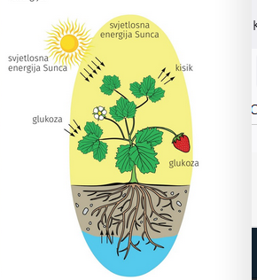
- odvija se u svim stanicama koje sadrže kloroplaste (zeleni dijelovi biljaka, alge, cijanobakterije, neki protoktisti ( euglena))
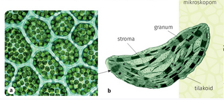
- Ključnu ulogu u fotosintezi imaju fotosintetski pigmenti nađeni u tilakoidnim membranama (klorofil a i b, karotenoidi (žuti i narančasti pigmenti) i ksantofili (žuti pigmenti).
- klorofil a jedini može neposredno sudjelovati u pretvorbi Sunčeve energije u kemijsku energiju (4.5. SL) budući da dobro apsorbira crveni i plavi dio spektra Sunčeve svjetlosti, a slabo apsorbira zeleni dio spektra (4.6. sl.).
- Ostali pigmenti apsorbiraju svjetlost i prenose energiju na klorofil a
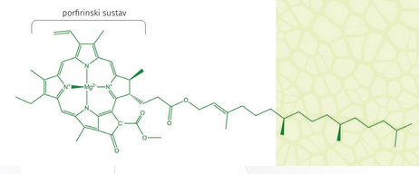
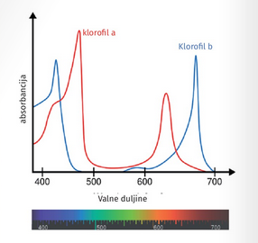
- prikazuje se (pojednostavljeno) 6CO 12H,O-->(svjetlosna energija,klorofil a) C6H12O6+6H20
- proces se dijeli na dvije skupine reakcija
- Primarna reakcija (svjetlosna reakcija)
- Sunčeva energija pretvara u kemijsku energiju te neophodna je svjetlost
- Sunčeva svjetlost određenih valnih duljina obasjava molekule klorofila te elektroni iz atoma magnezija apsorbiraju svjetlosnu energiju i prelaze u pobuđeno stanje (4.8. sl.)
- Pobuđeni elektroni iz molekule klorofila privremeno se pohranjuju u molekuli nikotidamin-adenin-dinukleotid-fosfata (NADP') čime se molekula klorofila oksidira, a molekula NADP-a se reducira u NADPH
- procesom fosforilacije nastaje ATP.
- kao izvor elektrona za skupljanje elektrona u klorofilu rabe se molekule vode (cijepanjem nastaju elektroni, vodikovi ioni i molekule kisika (fotoliza vode))
- Kisik je u ovome procesu produkt koji se ispušta u atmosferu
- kemijska energija nastala pretvorbom svjetlosne energije pohranjuje se u dva spoja (NADPH (koji u stanicama ima ulogu izvora visokoenergiziranih elektrona) i ATP (koji u stanicama služi kao izvor energije))
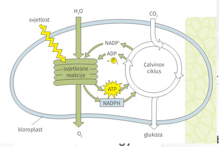
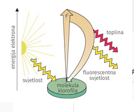
te se odvija u tilakoidima
- Sekundarna reakcija (Calvinov ciklus)
- događa se u stromi kloroplasta (4.9. sl.) te je neovisna o svjetlu
- reducira se ugljikov(IV) oksid i sintetiziraju ugljikohidrati (4.10. sl.).
- obuhvaća reakcije u kojima se uz prisutnost NADPH-a i ATP-a reducira ugljikov(IV) oksid i stvaraju ugljikohidrati.
- Ugljik u Calvinov ciklus ulazi u obliku ugljikova(IV) oksida, a izlazi u obliku gliceradehid-3-fosfata koji (ugljikohidrat koji sadrži tri atoma ugljika i služi za sintezu drugih ugljikohidrata)
- energija koja je sadržana u elektronima pohranit će se u kovalentnim vezama molekule glukoze.
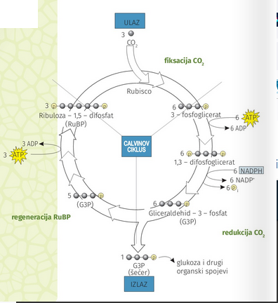
- Odvijanje Calvinova ciklusa
- ugljikov(IV) oksid veže se na molekulu ribuloza- difosfata koju katalizira enzim ribuloza-1,5-difosfat karboksilaza oksigenaza (RUBISCO) u kloroplastima.
- Zatim se reducira vezani ugljik kako bi započela sinteza heksoza,
- Na kraju trećemu se regenerira ribuloza-1,5- disfosfat.
- Za sintezu jedne molekule glukoze mora se fiksirati šest molekula ugljikova(IV) oksida i utrošiti 18 molekula ATP-a i 12 molekula NADPH-a.
ADP i NADP koji pritom nastaju opet se uključuju u svjetlosne reakcije i ponovno fosforiliraju, odnosno reduciraju.
Većina ugljikohidrata sintetiziranih u Calvinovu ciklusu upotrebljava se za sintezu saharoze (šećer sintetiziran u citosoli) i škroba (polimerna molekula u strom kloroplasta).
Za razliku od fotoautotrofa koji svoje potrebe za energijom u potpunosti podmiruju iz svjetlosne energije, kemoautotrofi podmiruju svoje energetske potrebe oksidacijom anorganskih tvari. Taj proces nazivamo kemosinteza. Sposobnost kemosinteze posjeduju samo određene vrste prokariota. Kemijsku energiju kemoautotrofni organizmi dobivaju oksidacijom amonijaka, različitih sumpornih spojeva (primjerice H,S), iona željeza, mangana i dr.
Na intenzitet fotosinteze mogu utjecati različiti čimbenici okoline. RUBISCO je enzim koji može vezati i CO, i O,. Kad su puči na listu otvorene, CO, difuzijom ulazi u list, a O, i H,O izlaze iz lista. U tim je uvjetima u međustaničnim prostorima lista koncentracija CO, viša u odnosu na koncentraciju 0, te se na RUBISCO veže ugljikov(IV) oksid i odvija se proces fotosinteze koji završava Calvinovim ciklusom i nastankom glukoze.
Za vrijeme vedrih, toplih i suhih dana, kad su puči na listovima zatvorene kako bi se smanjio gubitak vode iz listova, koncentracija O, u listu raste u odnosu na koncentraciju CO,. U takvim uvjetima RUBISCO na sebe veže kisik, a glikolat koji nastaje tijekom Calvinova ciklusa izlazi iz njega te se metabolizira kroz put koji nazivamo fotorespiracija. Tijekom fotorespiracije ne nastaju šećeri ni molekule
ATP-a, već se troši ATP i otpušta CO,. Fotorespiracija je zapravo energetski trošak za biljku jer se troši energija, a ne dolazi do sinteze šećera. A budući da dio metabolita izlazi iz Calvinova ciklusa, smanjuje se učinkovitost i stopa fotosinteze. Na stopu fotosinteze, odnosno na njezinu učinkovitost, utječu brojni unutrašnji i okolišni čimbenici: razvojno stanje biljke, opskrba vodom i mineralnim tvarima, otvorenost puči, kvaliteta i intenzitet osvjetljenja, temperatura i opskrba ugljikovim (IV) oksidom (4.10. SL).
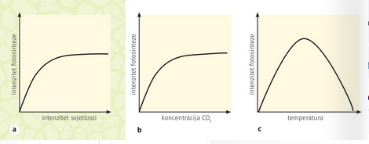
Povećanjem intenziteta svjetlosti do neke se mjere može postići i povećanje stope fotosinteze. U odredenome trenutku ipak dolazi do tzv. svjetlosnoga zasićenja te daljnje povećanje intenziteta svjetlosti ne izaziva porast stope fotosinteze. Izrazito jaka svjetlost pak može i oštetiti fotosintetski aparat, stoga stopa fotosinteze može i pasti. Dakle, održavanje optimalnoga intenziteta svjetlosti bitno je za proces fotosinteze. Stoga su biljke razvile mehanizme poput gibanja listova ili kloroplasta u stanicama kako bi osigurale optimalnu količinu svjetlosti. Budući da biljke žive u različitim klimatskim uvjetima, i fotosinteza se odvija u prilično širokome temperaturnom rasponu (od 0°C do 50 °C). S obzirom na to da je fotosinteza zapravo nizbiokemijskih reakcija koje su katalizirane enzimima, jasno je da će se i one odvijati brže pri višim temperaturama. To vrijedi samo do određene vrijednosti temperature kad se počinju narušavati drugi čimbenici tih reakcija, stoga konačni ishod nije više ukupno povećanje stope fotosinteze.
Količina vode koja se iskoristi u procesu fotosinteze u biljci jest neznatna. U uvjetima smanjene opskrbe vodom biljke zatvaraju puči te CO, ne može uči u list. Stoga količina vode u biljci posredno ipak utječe na stopu fotosinteze jer se u takvim uvjetima u biljci odvija i fototranspiracija.
Biljke preživljavaju i u uvjetima visokih temperatura i dugotrajnih sušnih razdoblja. One su razvile posebne prilagodbe, stoga se proces fotosinteze može odvijati optimalno i kad odnos CO, i O, nije najoptimalniji. U tih biljaka postoji razlika u sekundarnim reakcijama fotosinteze.
U većini biljaka (oko 95 %) sekundarne se reakcije fotosinteze odvijaju na prethodno opisani način u Calvinovu ciklusu u kojemu jedna od prvih stabilnih molekula koja nastaje ima tri atoma ugljika. Stoga se biljke u kojima se reakcije tame odvijaju po Calvinovu ciklusu nazivaju i C3 biljke.
Manji broj biljnih vrsta (oko 5 %) može se uz Calvinov ciklus u sekundarnim reakcijama koristiti i dodatnim metaboličkim putom u kojemu prva stabilna molekula koja nastaje sadrži četiri atoma ugljika. Takve biljke zovemo i C4 biljkama. Taj im put omogućuje da se i u uvjetima zatvorenih puči odvija fotosinteza, a ne fotorespiracija. Stoga C4 biljke imaju veću učinkovitost fotosinteze u odnosu na C3 biljke. U tih je biljaka
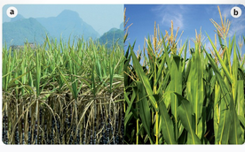
došlo do prostornoga odvajanja svjetlosnih reakcija koje se odvijaju u mezofilnim stanicama lista od reakcija Calvinova ciklusa koji se odvija u posebnim štapićastim stanicama koje se nalaze oko žila u listu i u kojima se nalazi sav RUBISCO. Mezofilne stanice lista pumpaju CO, kako bi napravile visoki omjer CO, prema O, u štapićastim stanicama. Tako se u štapićastim stanicama stvaraju uvjeti u kojima RUBISCO može provoditi učinkovitu fotosintezu, a ne fotorespiraciju. U C4 biljke spadaju kukuruz i šećerna trska te razne tropske biljke (4.11. sl.).
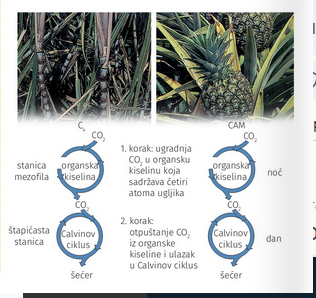
Mehanizam reakcija tame prisutan je u sukulentnim biljkama kao što je kaktus. To su biljke s dnevnim kiselinskim ritmom - CAM biljke (Crassulacean Acid Metabolism) koje su se prilagodile dnevnomu zatvaranju puči. One noću, kad su puči otvorene, CO, ugrađuju u organske kiseline koje se čuvaju u vakuolama (4.12. sl.). Danju, kad su puči zatvorene, događa se Calvinov ciklus pri čemu biljke koriste CO, koji dobivaju razgradnjom tih organskih kiselina. Time RUBISCO dobiva optimalnu količinu CO, te se smanjuje mogućnost fotorespiracije. Dakle, u tih je biljaka došlo do vremenskoga odvajanja reakcija svjetla i tame.
Stanično disanje
Stanično disanje (biološka oksidacija) jest niz metaboličkih procesa kojima se iz hranjivih tvari poput glukoze kemijska energija pohranjuje u molekule ATP-a koje se dalje mogu upotrijebiti za sve stanične procese. Tijekom razgradnje molekule glukoze dio pohranjene energije oslobada se kao toplina. U životinjskih stanica nastaje 38 molekula ATP-a, a u biljnih 36 molekula ATP-a. Stanično disanje pojednostavljeno se može prikazati sljedećom jednadžbom kemijske reakcije: enzimi
CH,O *60, "
6C06H,0% energija ATP-a
Stanično disanje i fotosinteza osnova su za prijenos energije iz okoliša u živi svijet, ali kemijski predstavljaju dva oprečna procesa (4.13. sl.).
Stanično disanje sastoji se od reakcija za čije odvijanje nije potreban kisik i od reakcija za koje je nužna prisutnost kisika. U eukariota se odvija u citoplazmi i mitohondriju u više koraka koji su prostorno i vremenski odijeljeni (4.14. sl.), a u prokariotskih stanica odvija se u citoplazmi i na mezosomu. Stanično disanje odvija se u tri stupnja:
1. glikoliza
2. ciklus limunske kiseline ili Krebsov ciklus
3. transportni lanac elektrona ili dišni lanac.
Glikoliza se događa u citosolu, a obuhvaća niz kemijskih reakcija u kojima se molekula glukoze razgrađuje na dvije molekule pirogrožđane kiseline (piruvat). Energija oslobodena procesom glikolize upotrebljava se za sintezu dviju molekula ATP-a i dviju molekula NADH-a (reducirani oblik nikotinamid-
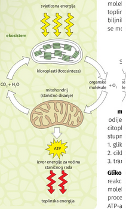
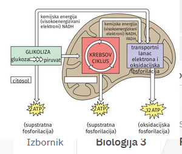
adenin-dinukleotida). Evolucijski gledano, glikoliza je najstariji od triju stadija disanja, a zbiva se u svim živim organizmima. Za odvijanje glikolize nije potrebna prisutnost kisika (anaeroban proces). U prisutnosti kisika (aerobni uvjeti) piruvat ulazi u mitohondrije gdje se nastavlja proces staničnoga disanja. U mitohondrijima se piruvat prvo dekarboksilira (odcjepljuje se molekula CO,), a zatim oksidira. Nastala acetilna skupina veže se na koenzim A (COA) pri čemu nastaje acetil-CoA koji sadržava vezu bogatu energijom. Ta reakcija čini vezu između glikolize i ciklusa limunske kiseline, a katalizira je kompleks enzima. Acetil-CoA je spoj koji ima bitno značenje u izmjeni tvari jer nije samo produkt razgradnje ugljikohidrata, već i masnih kiselina te aminokiselina.
Ciklus limunske kiseline ili Krebsov ciklus jest skup kemijskih reakcija u kojima se acetil-CoA potpuno oksidira do ugljikova(IV) oksida (4.15. sl.). Osim oksidacije acetilne skupine, u ciklusu se limunske kiseline reduciraju prenositelji visokoenergiziranih elektrona, NAD u NADH i FAD U FADH, (flavin-adenin-dinukleotid). U reduciranome obliku NADH i FADH, prenose elektrone do proteina na unutarnjoj strani mitohondrija. Biokemijskim reakcijama u Krebsovu ciklusu od jedne molekule pirogroždane kiseline nastaju dvije molekule
ATP-a.
Transportni lanac elektrona (dišni lanac) čini sustav prenositelja elektrona, a odvija se na unutarnjoj membrani mitohondrija. Prijenosom elektrona duž toga lanca u kojemu sudjeluje niz proteinskih prenositelja - citokroma, oslobađa
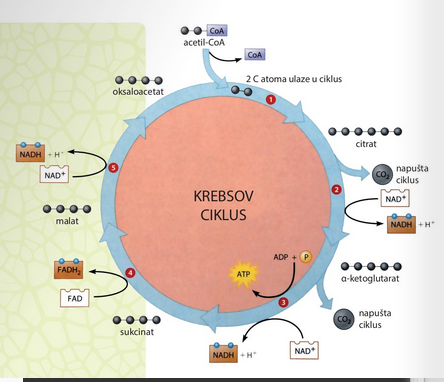
se golema količina energije koja se pohranjuje u molekulama ATP-a. Prijenos elektrona omogućuje ulaz vodikovih iona ili protona (H') iz matriksa u međumembranski prostor mitohondrija čime se stvara tzv. gradijent protona. Nastali gradijent omogućuje protok vodikovih iona niz koncentracijski gradijent kroz protein ATP-sintetazu. Potencijalna energija protona prolaskom kroz ATP sintetazu stvara kinetičku energiju koja omogućuje sintezu molekula ATP-a, tj. proces oksidacijske fosforilacije. Tim procesom dolazi do vezanja fosfatne skupine na ADP. Oksidacijom jedne molekule NADH-a nastaju tri molekule ATP-a, a oksidacijom jedne molekule FADH,ju dvije molekule AP- Elektroni koji su prenošeni citokromima na kraju se lanca vežu za krajnjega primatelja elektrona, a to je molekula kisika. Tako nakratko reduciran kisik veže se s protonima vodika pri čemu nastaje metabolička voda (4.16. sl.).
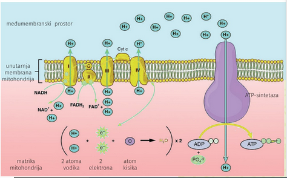
U odsutnosti kisika ciklus limunske kiseline i transportni lanac elektrona, za razliku od glikolize, ne mogu se događati. U tome slučaju počinje proces anaerobnoga disanja koji se naziva vrenje. Vrenje ili fermentacija jest proces nepotpune razgradnje hranjivih tvari bez prisutnosti kisika. Proces vrenja omogućuje dobivanje energije nekim mikroorganizmima (bakterije, gljivice). Piruvat nastao razgradnjom glukoze u anaerobnim uvjetima u citoplazmi stanice dalje se razgrađuje u procesu vrenja, ali je ta njegova razgradnja nepotpuna. Stoga se procesom vrenja dobiva znatno manje energije nego procesom staničnoga disanja. Ovisno o konačnome produktu piruvata, postoje dvije vrste vrenja: alkoholno i mliječno- kiselinsko vrenje.
Alkoholnim vrenjem iz glukoze nastaje etanol (alkohol), ugljikov(IV) oksid i dvije molekule ATP-a. Tim vrenjem energiju dobivaju kvaščeve gljivice. Upravo je ugljikov(IV)
oksid nastao pri tome vrenju uzrok dizanja tijesta kojemu su dodane kvaščeve gljivice (kvasac). To je vrenje odgovorno i za pretvaranje mošta u vino. Dakle, alkoholno vrenje značajno je u proizvodnji vina i pekarskih proizvoda, a možemo ga prikazati sljedećom jednadžbom kemijske reakcije:
C,H,O oil + 60 mimimiedovin, 2C,H,O loại + 2CO + 2 ATP-a
2glivica
Mliječno-kiselinsko vrenje glukozu u anaerobnim uvjetima izravno prevodi u mliječnu kiselinu (laktat) uz nastanak dviju molekula ATP-a. Tim vrenjem energiju dobivaju neke bakterije (primjerice rod Lactobacillus) koje se rabe u mljekarstvu za dobivanje sireva i jogurta. Mliječno-kiselo vrenje zbiva se i u mišićnim stanicama ljudi i životinja ako stanica ne raspolaže s dovoljno kisika.
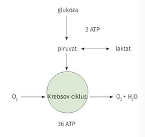
Višestaničnost u funkciji očuvanja energije
Homeostaza stanice
Homeostaza višestaničnog organizma
Narušavanje homeostaze
Životni ciklus stanice
Uloga dioba u životu stanice
- Omogućuje rast organizma staničnom diobom (mitoza)
- omogućuje njegovo razmnožavanje prijenosom nasljedne upute na generacije (mejoza)
- Dioba prokariotskih organizama
- Većina bakterija ima gensku informaciju pohranjenu u kružnoj molekuli DNA (bakterijski kromosom)
- Kromosom se nalazi u nukleoidu
- (dvojna dioba) (6.2. sl.)
- proces kojim se razmnožavaju praživotinje i bakterije
- Prvo dolazi do umnažanja bakterijskog kromosoma
- Zatim dvije novonastale molekule DNA odlaze na suprotne krajeve stanice te fizički dijele stanicu na dvije nove
- Nastale stanice su kopije originalnoj stanici
- Dioba eukariotske stanice
- Dolazi nakon oplodnje jajne stanice i razvoja višestaničnog organizma
- Stanice nastale diobom sadrže nasljednu uputu izvornih stanica te se kasnije specijaliziraju za određene uloge u organizmu.
- U odrasloj fazi višestanično tijelo eukariota većinom je građeno od tjelesnih (somatskih) specijaliziranih stanica koje su prošle proces diferencijacije
- Matične stanice
- posebne stanice koje se nalaze u tkivima gdje je potrebna stalna obnova stanica
- Iz njih diobom nastaju stanice koje će se specijalizirati za određene uloge u nekome tkivu
-Spolno razmnožavanje višestaničnih organizama (reducijska dioba)
- Prilikom spolnoga razmnožavanja dolazi do spajanja nasljednoga materijala Ženske i muške spolne stanice (6.4. sl.).
- Svaka od tih stanica nosi jednu polovinu nasljednoga materijala u novonastalu stanicu.
- Kromosomi
- kompaktno linearno pakirane molekule DNA unutar jezgri stanice
- otkrio ih je Walther Flemming 1879. godine prilikom proučavanja diobe stanica guštera.
- sastavljeni su od kromatina (6.6. sl.) (makromolekularni kompleks koji sadrži molekule DNA sadrži i histone (proteini za pakiranje molekula DNA u malom prostoru)
- Ovisno o fazi staničnoga ciklusa, kromosomi mogu biti pakirani u zgusnutijemu ili opuštenijemu obliku.
- Kad je kromatin u opuštenijemu obliku (stanica se ne dijeli,već obavlja svoju zadaću), regulatorni proteini lakše pristupaju pojedinim dijelovima molekule DNA te se vežu na sljedove nukleotida reguliraju rad pojedinih gena.
- Kad je se kromatin u zgusnjutom obliku (dioba stanice), kromosom se lakše raspodjeljuje u novonastalim stanicama (6.7. sl.).
- Povezivanje Histona i molekule DNA (nukleosom)
- Histoni za razliku od većine proteina imaju pozitivan ukupni naboj.
- molekula DNA s fosfatnim skupinama ima negativan naboj te se međusobno privlače
- Svakih 200 nukleotida dvolančana DNA namotava se oko proteinskoga kompleksa koji čini osam proteina histona (kuglica)
- Daljnjim namatanjem nukleotida nastaju strukture višega reda koje nalikuju zavojnicama.
- Kariotip
- Točno određeni broj kromosoma i njegova grada (primjerice duljina krakova, veličina i sl.) za određenu vrstu.
- kariogram.
- kromosomska sliku (fotografiju ili grafički linearni prikaz broja i veličine kromosoma) neke stanice (6.8. sl.).
Stvaranje kromosoma kod zigote
- postoji set kromosoma koji je dobiven od majke i set kromosoma dobiven od oca, čineći diploidnog organizma (2n)
- spolna stanica sadrži jedan set kromosoma (n)
- Kromosomi iz svakoga para međusobno su homologni.
- Čovjek ima 23 para (46 kromosoma) kao diploidni organizam
- Iz diploidne zigote mitozom će nastati sve tjelesne stanice
- Kad se definira broj kromosoma za neku vrstu, obično se iskazuje haploidni (n) broj kromosoma (6.1. tablica).
- Stanični ciklus
- Razdoblje u kojemu se stanica priprema za diobu i obavlja svoju ulogu (6.9. sl.).
- Životne faze eukariotska stanica
- Interfaza (Prije diobe stanice udvostručuju genski materijal (molekule DNA upakirane u kromosome) i povećavaju svoj volumen).
- M-faza (Kromosomi se raspoređuju na stanice kćeri i stvaraju se nove jezgre na polovima roditeljske stanice (kariokineza), a zatim se podijeli i sama roditeljska stanica dijeljenjem citoplazme i drugih organela (citokineza)).
- Podjela interfaze
- Faza G1, (engl. gap-praznina)
- stanica raste i u njoj se stanica zadržava najdulje vremena.
- sintetiziraju se proteini koji će sudjelovati u procesu umnažanja jedne molekule DNA u obliku kromatinskih niti.
- Budući da je stanica diploidna, svaki kromosom prisutan je u dva primjerka (homologa), po jedan od svakoga roditelja.
Razlici u trajanju staničnoga ciklusa najviše doprinosi varijabilnost u trajanju G1, faze.
G0, faza.
- stanica ulazi u fazu mirovanja ukoliko se u nekom tkivu popuni sav prostor ili postanu diferencirane.
- stanica može provesti danima i godinama te u njoj izvršava zadatke za koje se specijalizirala.
- Ukoliko se stanica ošteti, može prijeći iz G0 u G1 fazu
faza S (od engl. synthesis - sinteza)
- dolazi do umnažanja (sinteze) molekule DNA čime se ona udvostručuje/replicira.
- na početku S faze stanica sadrži kromosome koji se sastoje od jedne kromatide i jednog nukleosoma.
- Nakon umnažanja molekule DNA imamo jednak broj kromosoma, ali su oni dvostruki i sadrže dvije molekule DNA koje ostaju povezane u području centromere.
Kinetohore su proteinske strukture u području centromere na kromosomima na koje se vežu mikrotubuli diobenog vretena a sudjeluju u kretanju kromosoma prema suprotnim polovima stanice.
Budući da se kromosomi počinju sve više spiralizirati, tako te dvije niti postaju vidljive i nazivamo ih sestrinskim kromatidama.
Na kraju S faze nakon udvostručenja molekule DNA kromosomi su najmanje kondenzirani (6.10. sl.).
- fazi G2
- stanica ponovno raste i kromosomi se ponovno uvijaju u kompaktniji oblik te se odvija priprema za razdvajanje umnoženih kromosoma.
- dolazi do umnažanja staničnih organela kako bi novonastale stanice imale sve potrebne dijelove bitne za izvršavanje svojih uloga
Mitoza
Mitotičke faze (M-faza)
Mitoza (dioba jezgre u staničnoj diobi prilikom koje dolazi do raspodjele genskoga materijala na dvije nove jezgre budućih stanica kćeri).
- Citokineza (dioba citoplazme kojom dolazi do raspodjele staničnih organela na stanice kćeri te stvaranja stanične membrane kojom se razdvajaju)
- Faze mitoze
Na 6.11. slici prikazane su faze mitoze u stanicama korijena luka
- Profaza
- nastavlja se spiralizacija kromatina koji poprima oblik kromosoma (njihov je broj jednak kao u interfazi, ali su dvostruki te sadrže dvije spojene sestrinske kromatide kod centromera)
(6.11. a) sl.).
- Potom dolazi do reorganizacije proteina citoskeleta i u centrosomima životinjske stanice do nukleiranja mikrotubuli. .
- Svaki centrosom zatim odlazi na drugi pol stanice te mikrotubula stvara niti diobenoga vretena.
- U stanicama biljaka nastaje slična struktura mikrotubularnih vlakana, no biljne stanice nemaju centrosome.
- Tijekom stvaranja diobenog vretena, jezgrene ovojnice se razgrađuju te se kromosomi prihvaćaju na niti centromerima i kreću prema diobetnom vretenu.
- Metafaza
- kromosomi su potpuno spriralizirani te poredani u ekvatorijalnu ravninu sa svakom kromatidom usmjerenom prema suprotnom polu.
- To je faza u kojoj se osigurava i provjerava da su sestrinske kromatide kormosoma pravilno usmjerene tako da svaka stanica kći dobije potpuni set kromosoma (6.11. b) sl.).
- Anafaza
- najkraća faza mitoze u kojoj dolazi do diobe centromera i razdvajanja sestrinskih kromatida pojedinoga kromosoma.
- Razdijeljene Sestrinske kromatide kreću prema suprotnome polu stanice s pomoću mikrotubula diobenoga vretena (svaka kromatida predstavlja novi jednostruki kromosom (6.11. c) sl.)).
- telofaza
- dolazi do rastavljanja diobenoga vretena i stvaranja jezgrine ovojnice oko sestrinske kromatide na svakome kraju stanice (nastaje jezgra).
- Kromosomi se zatim despiraliziraju u oblik kromatina koji omogućuje lakšu ekspresiju gena (6.11, d) sl.).
U eukariotskoj stanici došlo je do razdvajanja prethodno udvostručenoga genoma u dvije nove jezgre koje se nalaze na suprotnim krajevima stance (kariokineza).
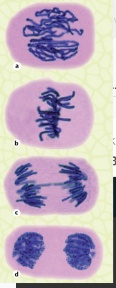
- Citokineza
- proces podjele ostalih organela stanice kćeri (6.12. sl.).
- proces započinje krajem mitoze (u anafazi ili telofazi), a završava nakon telofaze.
- Procesom dolazi do raspodjele sadržaja citoplazme u dvije nove stanice.
- Ne postoji kontrolni mehanizam koji bi osiguravao jednaku raspodjelu staničnih organela
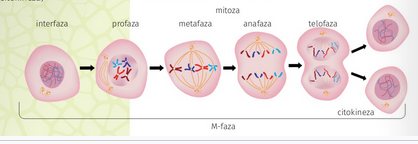
- Važnost mitoze
- Višestanični organizmi s pomoću mitoze rastu i razvijaju se od trenutka kada od oplođene jajne stanice mitozom nastaju tjelesne stanice koje tvore tijelo višestaničnoga organizma.
- Povremeno se neke stanice u tijelu moraju zamijeniti jer su se oštetile ili se mora regenerirati dio tijela (6.13. sl.).
- u prokariota i ne- kih eukariota tijekom nespol- noga razmnožavanja nastaju organizmi koji su identični onomu od kojega su nastali. To su u eukariotskih organi- zama, primjerice, vegetativno razmnožavanje biljaka i pu- panje hidre (6.14, sl.).
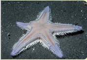
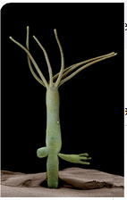
- Kako bi se spriječilo nastajanje previše stanica, u staničnome ciklusu postoje dvije točke od kojih se stanica više ne može vratiti natrag u prijašnju fazu
- umnažanje genskoga materijala
- razdvajanje sestrinskih kromatida.
- Stanični ciklus se može zaustaviti kod točaka provjere zbog provjere točnosti procesa i eliminiranja pogreške u genu.
- Tumori
- tvorbe koje nastaju neprestanom i nekontroliranom diobom stanica
- Do poremećaja dolazi zbog utjecaja okolišnih čimbenika (UV zračenje, pesticidi) i unutarnjih čimbenika na gene (mutacije) i regulacije signalnih putova u diobi stanice.
- Vrste tumora
- Dobroćudni (tumori ne ugrožavaju funkcioniranje i život organizma)
- Zloćudni (tumori se šire u svoju neposrednu okolinu, ali i u druge dijelove organizma (metastaza) krvlju i limfom)(6.15. sl.).
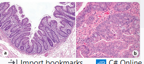
Proces nastanka tumora može biti prilično brz, no mnogi se tumori razvijaju i desetak godina prije nego što osoba može primijetiti neke promjene u svome zdravlju. Da bi se taj proces otkrio što je moguće ranije, dobro je odlaziti na tzv. preventivne preglede na kojima se s pomoću posebnih pretraga može utvrditi prisutnost ranih malignih promjena u organizmu.
Za neke vrste tumora, poput tumora pluća u pušača, nepušenje je najbolja prevencija.
Danas postoje cjepiva s pomoću kojih se možemo obraniti od virusnih uzročnika tumora kao što je humani papiloma virus (HPV) koji je uzročnik tumora vrata maternice u žena (6.16. sl.).
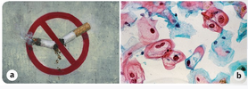
Liječenje tumora odvija se kirurški, kemoterapijom i radioterapijom, a u novije vrijeme i imunoterapijom. U posljednje vrijeme sve je više tzv. pametnih odnosno ciljanih protutumorskih lijekova. Ti lijekovi nastali su na temelju dugogodišnjih istraživanja u području molekularne biologije tumora. Znanstvenim se istraživanjima došlo do informacije o tome koji su geni bitni za kontrolu diobe stanice. Neki od njih potiču stanicu na diobu, a drugi sprječavaju da se ta dioba odvija nekontrolirano. U tumorima dolazi do poremećaja u njihovu radu te se stanica nekontrolirano dijeli. Pametni lijekovi ciljaju točno određene proteinske produkte tih gena koji sudjeluju u tim kontrolnim procesima, a koji su u tumorskim stanicama izmijenjeni i pokušavaju uspostaviti normalno stanje u stanici (6.17. sl.).
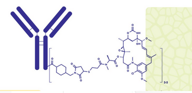
Mejoza
Većina biljaka i životinja razmnožava se spolnim putom. Pritom dolazi do oplodnje, odnosno spajanja spolnih stanica-gameta dvaju roditelja u jednu stanicu - zigotu koja sadrži po dva seta homolognih kromosoma, jedan od oca, a drugi od majke. Od te će stanice dalje procesom mitoze nastati cijeli organizam koji može sadržavati i na milijune tjelesnih stanica.
Spolne su stanice haploidne i nastaju posebnim oblikom diobe koju nazivamo mejoza (grč. meiosis - smanjenje). Proces nastanka spolnih stanica nazivamo gametogeneza. Proces kojim nastaju muške spolne stanice (spermiji) naziva se spermatogeneza, a proces kojim nastaju ženske spolne stanice (jajne stanice ili oocite) naziva se oogeneza. U spermatogenezi nastaju četiri spermija, no tijekom oogeneze od četiriju stanica nastalih mejozom tri će stanice propasti, a razvit će se samo jedna jajna stanica (6.18. sl.).
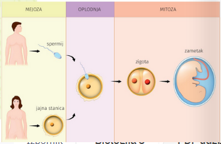
U evoluciji spolni način razmnožavanja pokazao se korisnim jer organizmu omogućuje određene prednosti. U spolnome razmnožavanju dolazi do spajanja spolnih stanica dvaju organizama te se nasljedni materijal iz dvaju različitih roditeljskih stanica sada nalazi u jednoj novonastaloj stanici. Nova diploidna stanica sadrži polovinu nasljednoga materijala od majke te polovinu od oca i nije genetički identična stanicama od kojih je nastala. Dakle, u svakoj diploidnoj stanici svaki je kromosom prisutan u dvjema kopijama podrijetlom od oca i majke te čini tzv. homologni par kromosoma
Mejoza
- sastoji od dva ciklusa diobe (mejoza 1, mejoza II)
- Svaki ciklus sadrži profazu, metafazu, anafazu i telofazu kojima se pridružuje rimski broj I ili II
- Prije mejoze I postoji faza u kojoj dolazi do udvostručenja nasljednoga materijala (stanica ima diploidni broj kromosoma građenih od dviju kromatida)
- Mejoza I (reducijska dioba) (slika 6.19)
- dolazi do smanjenja broja kromosoma na pola (2n na n) i nastanka haploidne stanice (svaki je kromosom dvostruk i neidentičan originalu)
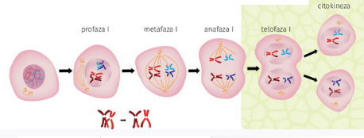
- profaza I
- nakon spiralizacije kromatina u kromosome te razgradnje jezgrine ovojnice dolazi do stvaranja centrosoma i diobenog vretena i međusobnog sparivanja homolognih kromosoma.
- Majčin i očev kromosom povezuju se po čitavoj svojoj dužini stvarajući kompleks od četiri kromatida i četiri molekule DNA (po dvije od oca te dvije od majke) koji nazivamo tetrada ili bivalent
- U bivalentu dolazi do fizičke razmjene dijelova molekule DNA izmedu kromatida majčina i očeva kromosoma i stvaranja novih sljedova nukleotida (rekombinacija, crossing over)
- Mjesta gdje se na kromatidama dogada crossing over nazvaju se hijazme i ostaju do anafaze I
metafaza I
- bivalenti se nalaze u ekvatorijalnoj ravnini diobenoga vretena
anafaza I
- dolazi do razdvajanja kromosoma u bivalentu te se haploidan broj kromosoma sada kreće prema različitim polovima stanice.
telofaza I
- dolazi do despiralizacije kromosoma u kromatin i nastanka jezgrine ovojnice čime se stvaraju nove jezgre.
- Kariokinezu slijedi proces citokineze.
- Na kraju mejoze I imamo dvije stanice kćeri u kojima se nalazi po jedan homolog iz nekadašnjega para kromosoma
- Mejoza II (ekvacijska dioba)
- proces u kojem se ne smanjuje broj kromosoma (6.20.)
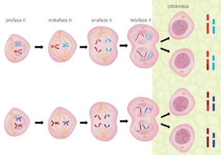
profaza II
- dolazi do ponovne spiralizacije kromatina u kromosome koji sadrže dvije sestrinske kromatide, ponovno se oblikuje diobeno vreteno te dolazi do razgradnje jezgrine ovojnice.
- Niti diobenoga vretena vežu se na centromere kromosoma te ih dovode u središte stanice.
- metafazi II
- kromosomi su u svome najkompaktnijemu obliku te svaki i dalje sadrži dvije sestrinske kromatide.
- anafaza II
- dolazi do razdvajanja sestrinskih kromatida koje odlaze k suprotnim polovima stanice te svaka postaje samostalni kromosom.
- telofaza Il
- dolazi do despiralizacije kromosoma u kromatin i nastanka jezgrine ovojnice i zatim slijedi citokineza
- konačan produkt mejoze su četiri nove haploidne stanice koje nisu genski istovjetne.
Za proces mitoze bitno je da nastaju dvije stanice kćeri identične stanici od koje su nastale jer je mitoza dioba kojom se broj tjelesnih stanica organizma umnaža i on raste. Za mitozu je presudno precizno kopiranje nasljednoga materijala kako bi nove stanice bile identične onima od kojih su nastale. U procesu mejoze nastaju četiri spolne stanice od kojih ni jedna nije identična međusobno, ali ni roditeljskim stanicama. Do toga dolazi zbog razmjene nasljednoga materijala u profazi I te nasumične orijentacije i raspodjele homolognih kromosoma u nove stanice u metafazi I. Zato se geni na različitim kromosomima nasljeđuju neovisno jedni o drugima. Tako dobivamo varijabilnost novonastalih organizama koja je bitna u procesu evolucije. Razmjena nasljednoga materijala u mejozi omogućuje nastanak novih kombinacija u sljedovima molekule DNA, što omogućuje i stvaranje raznolikosti živoga svijeta (6.21. sl.).
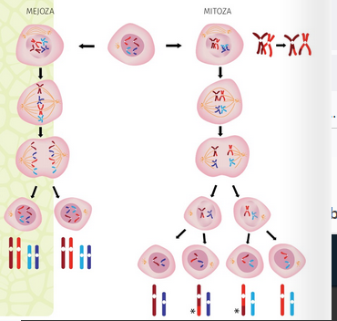
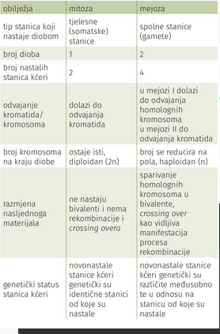
Bitna je točnost mejoze jer u slučaju nepravilnoga razdvajanja kromosoma u nekoj mejotičkoj diobi dobivamo gamete s manjim odnosno većim brojem kromosoma. Gamete s nepravilnim brojem kromosoma nazivamo aneuploidnim gametama, a pojavu aneuploidijom. Ako takve gamete sudjeluju u oplodnji, tada novonastala stanica nema pravilan broj kromosoma te je njezina daljnja dioba često onemogućena. U rijetkim slučajevima moguće je da se ipak razvije organizam koji će imati višak/manjak nekoga kromosoma. Takav je primjer prisutan u osoba oboljelih od Downova sindroma u čijim stanicama postoje tri kopije kromosoma 21 (6.22. SL).
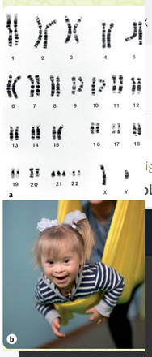
Neparan broj kromosoma u životinja
U životinjskome svijetu postoji više primjera križanja dviju vrsta. Primjerice, mula je križanac kobile i magarca, a mazga je potomak konja i magarice. Konj ima 64 kromosoma u svojim tjelesnim stanicama, a magarac ima 62 kromosoma. Mejozom u kobile nastaje jajna stanica koja ima 32 kromosoma, a magarac proizvodi spermije s 31 kromosomom. Mejozom u konja nastaju spermiji s 32 kromosoma, a mejzom u magarice nastaju spermiji s 31 kromosomom. Spajanjem takvih dviju spolnih stanica nastaje potomak (mula ili mazga) sa 63 kromosoma u svojim tjelesnim stanicama. Te su životinje nalik na konje, no imaju malo duže uške i snažnije su i izdržljivije. One ne mogu stvarati daljnje potomstvo jer mejozom stanice koja ima 63 kromosoma ne mogu nastati funkcionalne spolne stanice (6.23. sl.).
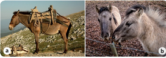
Medicinski potpomognuta oplodnja
Katkad osobe mogu imati zdravstvenih poteškoća koje im onemogućuju da ostvare roditeljstvo. U takvim slučajevima potrebno je obratiti se liječnicima ginekolozima koji će napraviti potrebne pretrage kako bi se utvrdilo što je uzrok neplodnosti.
Jedno od mogućih rješenja za te poteškoće jesti potpomognuta oplodnja. Raznoliki su postupci koji se podrazumijevaju pod tim pojmom. Jedan od najznačajnijih uspjeha u tome području dogodio se 1978. godine kad je prvi put izveden postupak tzv. in vitro (lat. in vitro - u staklu) oplodnje.
U tome su postupku najprije jajna stanica i spermij izdvojeni iz tijela majke i oca te je oplodnja izvedena izvan tijela majke
u bolničkome laboratoriju (6.24. sl.). Dobiveni je zametak nakon prvih dioba usađen u maternicu majke čija se trudnoća dalje odvijala uobičajenim tijekom i rođeno je zdravo dijete. Danas je u svijetu tim putom rođeno više od 8 milijuna djece. Spektar metoda potpomognute oplodnje sve je šarolikiji, a uspješnost postupaka sve je bolja.
U slučaju bolesti, primjerice raka, kad je potrebno primijeniti terapiju koja oštećuje spolne stanice, moguće ih je prije terapije izdvojiti te zamrznuti do korištenja u budućnosti. I u tim se slučajevima zatim provode metode potpomognute oplodnje.
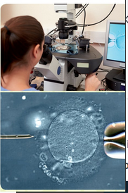
Homeostaza
U složenome višestaničnom organizmu, primjerice čovjeku, većina stanica u tijelu nije u izravnome doticaju s vanjskom okolinom. One se nalaze uronjene u izvanstaničnu tekućinu koja predstavlja unutarnji okoliš nekoga organizma. Za preživ- ljavanje i normalno funkcioniranje stanica uvjeti u izvanstanič- noj tekućini i čimbenici koji ih određuju moraju se održavati u okviru optimalnih vrijednosti. Homeostaza je pojam koji u biologiji označuje održavanje stanja unutarnje ravnoteže neprekidnim optimiziranjem fizikalnih i kemijskih čimbenika unutar samoga organizma kako bi se omogućilo njegovo pravilno funkcioniranje (5.1. sl.). Životni uvjeti stanice određeni su velikim brojem čimbenika kao što su tjelesna temperatura, razina kisika, CO, i šećera u krvi te općenito sastavom i pH-vrijednosti tjelesnih tekućina. Ti se čimbenici održavaju u stanju tzv. dinamičke ravnoteže. Dinamička ravnoteža znači da promjena vrijednosti jednoga čimbenika gotovo automatski izaziva promjene vrijednosti nekih drugih čimbenika jer se organizam nastoji vratiti u svoje najoptimalnije stanje, stanje homeostaze. Radi se, dakle, o dinamičkim procesima održavanja unutarnjih uvjeta unutar stanica stabilnima neovisno o promjenama čimbenika koji djeluju na stanicu. To omogućuje da se uvjeti unutar organizma, kao i u njegovim pojedinim dijelovima (organima, tkivima, organelima i stanicama) održavaju stabilnima, što je nužno za normalno odvijanje životnih procesa u tijelu (5.2. sl.). Vrijednosti se navedenih čimbenika u zdravome organizmu kreću unutar određenih raspona koje smatramo normalnim fiziološkim vrijednostima
Te se fiziološke vrijednosti nastoje održati tzv. homeostatskim mehanizmima. Dakle, iako uvjeti izvan organizma mogu značajno varirati, mehanizmi homeostaze nastoje održati unutarnje stanje organizma stabilnima i u okviru optimalnih. U tome procesu sudjeluje velik broj regulatornih mehanizama na razini stanice, ali i čitava organizma. Jedno od ključnih svojstava živoga jest sposobnost regulacije procesa koji se odvijaju na razini stanice i organizma, odnosno sposobnost autoregulacije. Na sva živa bića utječu promjene u uvjetima njihova okoliša kao što su to hrana koju neki organizam uzima, temperatura okoliša u kojemu obitava, trajanje dana i noći, zaraza mikroorganizmima i sl. Do promjena u uvjetima unutar organizma dolazi i zbog bioloških procesa koji se u njemu odvijaju. Primjerice, pH-vrijednost krvi mijenja se ovisno o disanju, odnosno pojačanoj ili smanjenoj izmjeni plinova kisika i ugljikova(IV) oksida
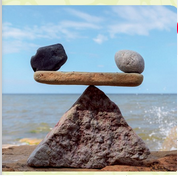
Intuitivno može biti prihvatljiva ideja da je za život stanica potrebno održavati unutarnje uvjete u nekome optimalnom rasponu. Zašto? Razlog tomu je održavanje pravilne strukture proteina koji su najbrojnije i funkcionalno vrlo bitne molekule u stanici. Pri različitim fizikalnim i kemijskim uvjetima bjelančevine poprimaju različite trodimenzionalne oblike (strukture), ali samo neki od njih mogu izvršavati zadaće koje su tomu proteinu namijenjene. Različite su strukture proteina prisutne u stanici u točno određenim usko definiranim uvjetima kao što su koncentracije nekih iona, pH-vrijednosti ili temperature. Ako se ti uvjeti poremete, dolazi do promjene trodimenzionalne strukture proteina, odnosno do njihove denaturacije (5.3. sl.)
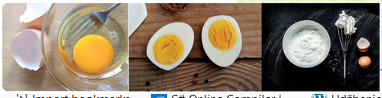
U uvjetima koji nisu optimalni, proteini nisu u obliku u kojemu mogu izvršavati svoje zadaće. Tada nastaju poremećaji u radu stanice. Poremećeni rad stanica odražava se i na čitav organizam. Ako dođe do pomaka u vrijednostima fizioloških čimbenika izvan normalnih granica, odnosno do poremećaja homeostaze koji homeostatski mehanizmi autoregulacije ne mogu vratiti na normalne vrijednosti, nastupa bolest (5.4. sl.). Stanična je membrana bitna za održanje homeostaze stanica Stanična membrana jest struktura jest struktura koja odvaja unutarnji okoliš stanice od vanjskoga te služi kao mjesto izmjene tvari između stanice i njezine okoline. Membrana je i mjesto razmjene informacija (5.5. sl.).
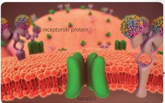
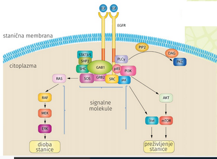
Homeostaza višestanicčnog organizma
Sve što se događa u okolini stanice odražava se i na samu stanicu. Stanice koje pravilno izvršavaju svoje zadaće dio su tkiva, organa i organizma koji pravilno funkcionira te je održavanje homeostaze stanice zapravo održavanje zdravoga stanja organizma. Stanice nekoga organizma u svakome trenutku znaju što moraju raditi iako se možda nalaze i na različitim dijelovima organizma. U evoluciji višestaničnih organizama došlo je do razvoja složene komunikacijske mreže različitih signalnih molekula unutar stanica i među stanicama. Ta mreža prenosi vitalne informacije čime se postiže usklađeno i pravilno funkcioniranje stanica, tkiva, organa i čitavoga organizma, odnosno homeostaza. Stanice razmjenjuju informacije sa stanicama u svojoj neposrednoj okolini izravnim kontaktom, ali i sa stanicama na udaljenim mjestima u organizmu putem kemijskih signala. Najjednostavniji oblik jest izravna komunikacija stanica koje su u neposrednome kontaktu s pomoću staničnih spojeva. Stanice na manjoj udaljenosti mogu komunicirati putem signalnih molekula koje djeluju u tome neposrednom mikrookolišu. Kad se stanice koje moraju komunicirati nalaze na većoj udaljenosti, tada luče druge vrste signalnih molekula koje krvotokom odlaze u bilo koji dio tijela
U regulaciji homeostaze u kralježnjaka, pa tako i u čovjeka, tijekom evolucije su razvijena dva posebna sustava: živčani i endokrini sustav čija je zadaća upravo održavanje optimalnoga rada organa koje kontroliraju. Oba sustava proizvode regulatorne molekule pomoću kojih to čine. Hormoni su regulatorne molekule koje se izlučuju u izvanstaničnu tekućinu te se prenose krvotokom na mjesta koja se nalaze na većim udaljenostima unutar organizma. Koje su endokrine žlijezde u tijelu čovjeka? Koje su njihove glavne funkcije? Neki organi uz druge zadaće koje obavljaju u organizmu mogu također proizvoditi i hormone. Jetra i bubrezi primjeri su takvih organa. Krv prenosi hormone do svih organa, tkiva i stanica u tijelu, no jedino ciljne stanice koje imaju receptore za određeni hormon mogu primiti signal te na njega odgovoriti svojim djelovanjem (5.6. sl.). Receptori za neke hormone, poput hormona rasta, prisutni su na svim stanicama organizma, a receptori za neke hormone prisutni su samo u nekim tkivima i organima. Proteini koji služe kao receptori vežu specifični hormon te unutar stanica aktiviraju specifične signalne putove kojima stanica reagira na dobiveni podražaj. Dakle, na mjestu
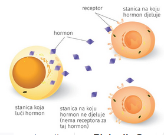
djelovanja hormoni stimuliraju aktiviranje različitih gena ili aktiviraju različite metaboličke reakcije odnosno prijenos tvari kroz membranu. Tako se usklađuje aktivnost različitih organa i organskih sustava. Po kemijskome sastavu hormoni mogu biti pojedinačne aminokiseline ili čitavi proteini koji se vežu na svoje receptore na površini ciljne stanice. Takvi hormoni nazivaju se proteinski ili nesteroidni hormoni. U živčanome sustavu aksoni živčanih stanica izlučuju kemijske glasnike koje nazivamo neurotransmiterima u sinaptičke pukotine. Oni zatim difuzijom prelaze obično kraću udaljenost do postsinaptičke membrane i tamo se vežu na receptor postsinaptičke stanice. Dakle, sinaptički prijenos signala uglavnom utječe na postsinaptičke stanice (5.7. sl.). Osim kemijskih glasnika kao što su neurotransmiterii hormoni, i druge molekule koje stanice, odnosno organi otpuštaju u svoju neposrednu okolinu mogu imati regulatornu ulogu.
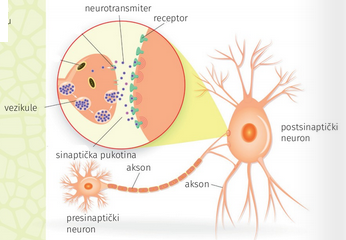
No te molekule za razliku od hormona ne putuju daleko, već djeluju na mjestu gdje se izlučuju i nazivamo ih parakrinim regulatorima. Stanice mogu ispuštati i signalne molekule kojima utječu na vlastito djelovanje. Tada govorimo o autokrinoj regulaciji. To je čest slučaj u imunosnome sustavu. I stanice tumora mogu izlučivati signalne molekule kojima će stimulirati vlastiti rast (5.8. sl.).
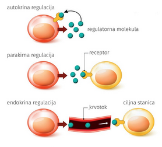
Živčani i endokrini sustav u funkciji održavanja homeostaze organizma Izlučivanje mnogih hormona neovisno je o živčanome sustavu, no aktivnost mnogih endokrinih žlijezda kontrolira živčani sustav. Dakle, u nekim mehanizmima homeostaze sudjeluje isključivo živčani sustav, a u nekima isključivo endokrini sustav, no u većini slučaja oba sustava rade zajedno na očuvanju homeostaze. Proces održavanja homeostaze možemo usporediti s održavanjem temperature u nekome prostoru. Kad temperatura u prostoriji padne, senzori u sustavu grijanja (termostat) dobiju informaciju o tome te se te se grijanje uključuje. kada se postigne zadana temperatura u prostoriji, senzor opet dobiva tu informaciju te zaustavlja daljnje grijanje. Na sličan način ljudsko tijelo održava čitav niz bitnih čimbenika okoliša u nekome točno određenome optimalnom rasponu. Tako se održava tjelesna temperatura, koncentracija glukoze u krvi, koncentracija iona u tjelesnim tekućinama itd. Mnogo je primjera usklađenoga djelovanja tih dvaju sustava u održanju homeostaze organizma, stoga ćemo se osvrnuti samo na neke.
Kako organizam održava tjelesnu temperaturu? Normalna tjelesna temperatura u čovjeka kreće se u rasponu između 36 °C i 37 °C. U dijelu mozga koji se zove hipotalamus nalaze se receptori koji prate temperaturu krvi koja prolazi kroz mozak. Kad temperatura krvi padne ispod normalnoga raspona vrijednosti, aktiviraju se homeostatski mehanizmi kojima se smanjuje prolaz krvi kroz kožu čime se nastoji smanjiti gubitak topline. Time se toplina zadržava i temperatura krvi raste. Ako nam je jako hladno, živčani sustav aktivira i drhtanje kojim se iz mišića oslobada dodatna toplina. Dakle, aktiviranjem mehanizama kojima se nastoji pričuvati toplina te onih kojima se oslobada dodatna toplina, tjelesna temperatura raste na 37 °C. Kad temperatura krvi poraste iznad te vrijednosti, potrebno je aktivirati mehanizme kojima ćemo se riješiti viška topline. Stoga se protok krvi kroz kožu pojačava i aktiviraju se žlijezde znojnice. Tako se organizam hladi i temperatura se vraća natrag na normalni raspon vrijednosti (5.9. sl.)
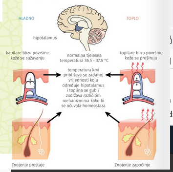
Osim živčanoga sustava, i endokrini je sustav bitan za održavanje homeostaze organizma. Razmotrimo to na primjeru održavanja razine optimalne glukoze u krvi. Optimalna koncentracija glukoze u krvi ujutro prije obroka iznosi od 3,5 - 5,5 mmol/L. Posebne stanice u gušterači i hipotalamusu prate tu koncentraciju. Ako je razina glukoze u krvi viša od optimalne (primjerice nakon obroka), u gušterači dolazi do lučenja hormona inzulina. Time se potiče unos glukoze u stanice te pretvorba glukoze u pričuvni polimer u jetri - glikogen. Djelovanjem inzulina razina glukoze u krvi vraća se na normalne vrijednosti. Kad je postignuta normalna razina glukoze u krvi, daljnje se lučenje inzulina prekida. Suprotno, kad je razina glukoze u krvi niska, dolazi do lučenja hormona koji podižu njegovu razinu u krvi poput glukagona. Glukagon potiče razgradnju glikogena u jetri te se glukoza otpušta u krvotok čime se uspostavlja normalna razina glukoze u krvi. Glukagon istovremeno inhibira svoje daljnje izlučivanje kad je ta razina postignuta (5.10. sl.).
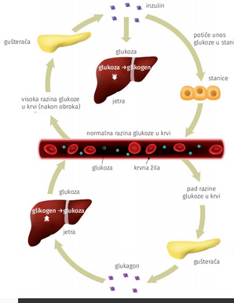
Stanje povišene razine glukoze u krvi naziva se hiperglikemija, a stanje niske razine glukoze u krvi naziva se hipoglikemijom. Šećerna bolest ili dijabetes jest bolest u kojoj dolazi do povišenih razina glukoze u krvi koje osoba više ne uspijeva regulirati prije opisanim mehanizmima (5.11. sl.). Neki su od simptoma te bolesti sljedeći: učestalo mokrenje, pojačana žed, osjećaj gladi te smetnje vida i opći umor. Razlikujemo nekoliko tipova šećerne bolesti, a najčešći su dijabetes tipa 1 i 2. U oboljelih od dijabetesa tipa 1 stanice gušterače ne proizvode više inzulin, a u oboljelih od dijabetesa
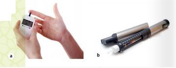
tipa 2 tjelesne stanice nisu više dovoljno osjetljive na inzulin. U osoba s dijabetesom tipa 1 imunosni sustav prepoznaje vlastite stanice gušterače kao strane te ih uništava, stoga se tako smanjuje proizvodnja inzulina. Do takvih poremećaja može doći već u vrlo ranoj životnoj dobi, stoga se naziva još i juvenilnim tipom dijabetesa. U osoba s dijabetesom tipa 2, koji je mnogo češći oblik dijabetesa, a razvija se većinom zbog prekomjerne tjelesne težine, postojeći inzulin nije dovoljan za unos glukoze u stanice ili stanice postaju na njega neosjetljive. Gušterača
nastoji popraviti tu homeostatsku neravnotežu tako da proizvodi još više inzulina. Budući da su stanice na njega neosjetljive, razina glukoze u krvi i dalje ostaje povišena. Zahvaljujući napretku kemije i molekularne biologije danas je moguće sintetizirati mnoge hormone koji se koriste u liječenju različitih hormonalnih poremećaja. Primjerice inzulin koje ranije bio izoliran iz tkiva gušterače goveda danas se dobiva iz genetički modificirane bakterije Echerichie coli u koju je ugrađen gen za proizvodnju ljudskog inzulina. Na sličan način danas se dobiva i hormon rasta (5.12. SL).
Na primjerima regulacije temperature organizma i razine glukoze u krvi opisan je zapravo homeostatski regulatorni mehanizam koji nazivamo povratna sprega. Prethodni slučajevi bili su primjeri negativne povratne sprege koja je ujedno i najčešći oblik regulacije homeostaze u kojemu sudjeluju živčani i endokrini sustav. Na temelju tih primjera možeš zaključiti da u regulatornim homeostatskim sklopovima u organizmu sudjeluju specifični senzori koji mogu osjetiti promjene u vanjskim ili unutarnjim uvjetima. Na razini organizma radi se o posebno specijaliziranim stanicama, a na razini stanice radi se o posebnim proteinima na membrani samih stanica koje nazivamo receptori. Kad dođe do promjene uvjeta u okolišu pa se vrijednosti nekoga čimbenika nađu izvan raspona koji je optimalan za odvijanje procesa u stanici odnosno organizmu, receptori šalju signale kojima se potiče niz biokemijskih reakcija kojima se uvjeti nastoje vratiti natrag u granice koje su optimalne. Mjesto gdje se informacija o razini pojedinih čimbenika obrađuje nalazi se najčešće u mozgu, leđnoj moždini te u nekim slučajevima u žlijezdama s unutarnjim (endokrinim) izlučivanjem. Kad ta središta zaprime informaciju da je došlo do odstupanja u nekim od bitnih uvjeta u okolišu, iz njih se šalje informacija u točno određene ciljne organe. Njihovom pojačanom ili smanjenom aktivnošću dolazi do vraćanja razine čimbenika na optimalnu razinu. U slučaju negativne povratne sprege stanica na koju djeluje signalna molekula vlastitim će djelovanjem dovesti do smanjenja ili prestanka stvaranja signalne molekule bilo u
samoj stanici bilo negdje drugdje u organizmu gdje se ta signalna molekula (primjerice hormon) stvara. Princip pozitivne povratne sprege rijedak je mehanizam regulacije homeostaze. U tome bi slučaju, primjerice, neki čimbenik svojim djelovanjem još više poticao vlastito lučenje. Time bi se signal pojačavao umjesto da utihne nakon što su se uvjeti u okolišu vratili unutar granica koje su optimalne. Stoga pozitivna povratna sprega nije toliko korisna u slučajevima održavanja homeostaze (5.13. sl.)
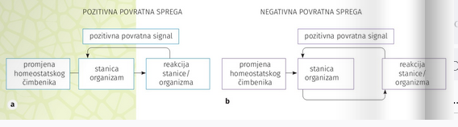
Mehanizam negativne povratne sprege na primjeru regulacije homeostaze tjelesnih tekućina putem antidiuretskoga hormona Živčane stanice izlučuju i specifičnu vrstu hormona koje nazivamo neurohormonima koji se dalje prenose krvotokom po organizmu. Primjer neurohormona jest antidiuretski hormon (ADH) kojega izlučuju neuroni u mozgu. U organizmu čovjeka, sisavaca i ptica postoji neprekidna regulacija sastava tjelesnih tekućina. Stoga neovisno o tome koliko vode pijemo, regulatorni mehanizmi osiguravaju da se održi homeostaza tjelesnih tekućina. Bitnu ulogu u tome održanju imaju bubrezi. Ako u organizmu postoji potreba da se očuva količina vode, tada se u bubrezima izlučuje hipertonični urin (tamnija boja). Ako pak popijemo mnogo vode, tada bubrezi izlučuju hipotonični urin (svjetlija boja). Homeostatska uloga bubrega koordinirana je putem hormona. Ako osoba ne pije dovoljno vode ili pojede slanu hranu, količina molekula u krvnoj plazmi raste. Receptori u hipotalamusu na to povišenje reagiraju tako da stimuliraju osjećaj žeđi te
izlučivanje antidiuretskoga hormona u stražnjemu režnju hipofize. ADH stimulira bubrege na reapsorpciju vode u krvotok i tako se smanjuje količina vode u urinu. Ako je prisutan višak vode u organizmu i krvna je plazma hipotonična, dolazi do prestanka izlučivanja ADH-a, te se višak vode izlučuje urinom (5.14. sl.).
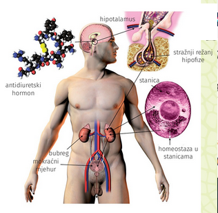
Većina homeostatskih mehanizama na razini stanice temelji se na istim principima i u biljnoj i u životinjskoj stanici. Budući da su biljke i životinje prilično različiti organizmi, jasno je da se mehanizmi homeostaze na razini čitavih organizama razlikuju. O detaljima grade i odvijanja životnih procesa u biljkama već si se imao prilike upoznati tijekom školovanja. U ovome poglavlju obratit ćemo pažnju samo na neke primjere homeostatskih mehanizama koji su prisutni isključivo u biljaka
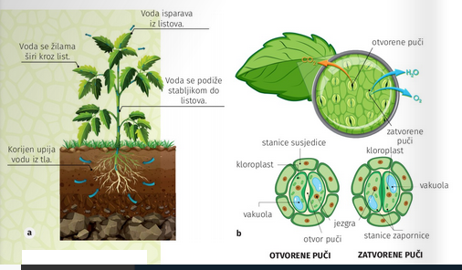
Većina isparavanja vode iz biljaka odvija se putem lista procesom koji nazivamo transpiracija. Prilikom transpiracije dolazi do gubitka znatnih količina vode iz biljke koje ona mora nadoknaditi primanjem vode iz tla (5.15. a) sl.). Zato biljke mogu regulirati proces transpiracije otvaranjem i zatvaranjem puči. Time se osigurava da biljka smanji gubitak vode i preživi u uvjetima kad je opskrba vodom nedovoljna ili je temperatura u okolini visoka. Kad su puči otvorene, dolazi do porasta turgora u stanicama zapornicama koje se nalaze sa svake strane otvora puči u odnosu na susjedne stanice (stanice susjedice). Do toga dolazi zbog ulaska iona u te stanice, a i zbog šećera koji u njima nastaju fotosintezom. Zato voda osmozom ulazi u te stanice i tako raste turgor u stanicama zapornicama i puči se otvaraju (5.15. b) sl.). Na otvaranje puči može utjecati niz čimbenika iz okoliša poput svjetlosti, temperature, količine vode u samoj biljci ili koncentracije CO, u listu. U uvjetima velike vlage u okolišu niska je razina transpiracije, stoga u tim uvjetima biljke izlučuju vodu u obliku kapljica uglavnom na listovima, a taj se proces naziva gutacija. Time
se omogućuje da se održi strujanje vode u biljci i pri niskoj transpiraciji
Komunikacija među stanicama, tkivima i organima na različitim dijelovima biljke odvija se i putem hormona. Životinjski su hormoni prilično specifičnoga i ciljanoga djelovanja, a biljni hormoni imaju općenitiji učinak, stoga uglavnom kontroliraju rast i diferencijaciju stanica te rast pojedinih organa i cijele biljke. Zato biljne hormone nazivamo još i regulatorima rasta (5.17. sl.).
Čimbenici okoliša poput temperature te intenziteta i trajanja svjetlosti najviše utječu na održavanje homeostaze u biljkama. Samo najjednostavnije biljke imaju mogućnost kretanja u smjeru čimbenika okoliša ili od njegova smjera. Takvu vrstu slobodnoga gibanja nazivamo taksijama. Najčešći oblici takva slobodnog gibanja jesu kemotaksije (kemijski podražaj), fototaksije (svjetlosni podražaj), geotaksije (gravitacijska sila) itd. Za razliku od životinja, većina biljaka ipak nema mogućnost slobodnoga gibanja i ne može pobjeći od nepovoljnih uvjeta u kojima rastu. Stoga su razvile mnoge prilagodbe kako bi sačuvale unutarnje uvjete koji su najoptimalniji za pravilno odvijanje životnih procesa. Biljke su tako razvile različite prilagodbe kako bi smanjile taj gubitak vode poput uvučenoga smještaja puči odnosno dlačica na listovima. lako se ne mogu kretati, ipak imaju mogućnost pokretanja organela kao što su kloroplasti kako bi, što je moguće bolje, iskoristile svjetlost te se ujedno i zaštitile ako bi njezin intenzitet bio prejak. Biljke mogu pokretati organe u istome ili suprotnome smjeru od podražaja čimbenika iz okoline (svjetlo, voda, gravitacija). Takva gibanja nazivamo tropizmima (5.18. SL.). Biljke su okolišnim uvjetima prilagodile i ulazak u fazu cvjetanja, zriobu plodova te ulazak u fazu mirovanja.
Narušavanje homeostaze
Do poremećaja u koncentraciji pojedinih tvari u organizmu dolazi ili zbog njihova povećanog/smanjenog unosa, ili zbog povećanoga/smanjenoga iskorištenja unutar organizma ili zbog njihova povećanog/smanjenog izlučivanja. Uzmimo, primjerice, koncentraciju elektrolita (tvari, tj. soli koje se otapanjem u tekućini pretvaraju u sljedeće ione: pozitivne (Na, K, Ca, Mg itd.) i negativne (Cl; HCO3: itd.) u tjelesnim tekućinama. Ako prehranom unosimo previše soli u organizam, taj se višak nekako mora ukloniti. Kad je vani vruće, znojimo se i tako gubimo elektrolite (5.19. sl.). Kad smo bolesni i povraćamo ili imamo proljev ili pojačano mokrimo, također dolazi do poremećaja u odnosu elektrolita. To su situacije kad je potrebno elektrolite nadoknaditi. Razina pH-vrijednosti tjelesnih tekućina održava se na optimalnim vrijednostima. Ona za stanične tekućine iznosi oko 7.0, a pH-vrijednost izvanstaničnih tekućina održava se na 7.4. Do promjene pH-vrijednosti tjelesnih tekućina dolazi, primjerice, u procesu disanja. Ako je frekvencija disanja
smanjena ili je metabolička aktivnost organizma povišena, dolazi do porasta razine CO, u tijelu. U vodenoj sredini kakva je prisutna u tjelesnim tekućinama, odnosno u krvnoj plazmi ugljikov(IV) oksid u reakciji s vodom daje karbonatnu kiselinu. Disocijacijom te kiseline nastaju ioni vodika i hidrogenkarbonata. CO,+H,OH,CO, H' + HCO, Dakle, dolazi do oslobađanja viška vodikovih iona, što rezultira sniženom pH-vrijednosti tjelesnih tekućina (primjerice sa 7.4 na 7.3). To se stanje naziva acidoza. Ako pak dublje i brže dišemo, dolazi do oslobađanja veće količine ugljikova(IV) oksida u okoliš te se ta reakcija odvija u suprotnome smjeru i količina vodikovih iona u krvnoj plazmi pada, odnosno pH-vrijednost tjelesnih tekućina raste (primjerice sa 7.4 na 7.5). To stanje nazivamo alkaloza. Hi + HCO, → H_CO,+ HẠO + CO, Raspon odstupanja pH-vrijednosti od optimalne (7.4) za pravilno funkcioniranje organizma jest od 7,2 do 7,6. Otkloni veći od toga raspona vode u stanja koja mogu završiti smrtnim ishodom. Bubrezi su ključni organi koji reguliraju pH-vrijednosti tjelesnih tekućina jer se u njima odvija izlučivanje iona Hi HCO,. To rezultira različitom pH-vrijednosti urina koji se kreće u rasponu od 5.0 do 6.5. U krvnoj plazmi postoji i niz drugih iona koji mogu djelovati poput pufera tako da na sebe vežu višak odnosno da otpuštaju ione H' ovisno o tome u kojemu smjeru treba održavati pH- vrijednost
Homeostaza organizma može biti narušena i djelovanjem biotičkih čimbenika okoline. Infekcije nekim bakterijama, virusima, gljivicama ili parazitskim životinjama narušavaju unutarnje uvjete u organizmu do te mjere da izazivaju bolest, a katkad čak i smrt. Do toga dolazi jer se prilikom infekcije patogeni mikroorganizmi koriste hranom i drugim resursima organizma koji inficiraju (5.20. sl.)
Istovremeno patogeni mikroorganizmi mogu ispuštati tvari koje nepovoljno djeluju na organizam poput otrovnih metabolita - toksina (5.21. sl.). U prethodnome poglavlju objasnili smo kako organizam regulira tjelesnu temperaturu u normalnim uvjetima. U ovome poglavlju objasnit ćemo zašto dolazi do povišene tjelesne temperature u slučaju infekcija patogenim mikroorganizmima. Mikroorganizmi mogu otpuštati tzv. pirogene tvari kojima utječu na osjetljivost termoregulacijskih središta te izazivaju povišenje tjelesne temperature organizma. Zato temperatura tijela raste i javlja se vrućica. Tjelesnu temperaturu tada snižavamo posebnom skupinom lijekova - antipireticima 5.22. sl.). Do pada temperature dolazi i spontano kad organizam svlada uzročnika bolesti.
U višestaničnim organizmima, i to posebno u onima na višemu stupnju evolucijskoga razvoja, uključujući i čovjeka, došlo je do specijalizacije pojedinih stanica i tkiva radi odbrane od zaraze. Oni tvore imunosni sustav. Imunosni sustav provodi mjere imunosnoga odgovora organizma. Ne radi se o sustavu koji je smješten na jednome mjestu u organizmu, već su tkiva i organi koji mu pripadaju (timus, koštana moždina, slezena i limfni čvorovi) smješteni na različitim mjestima u organizmu koji zajedno sa specijaliziranim stanicama brane organizam od infekcija (5.23. sl.).
Osim borbe protiv mikroorganizama, imunosni sustav nadzire i vlastita tkiva i stanice te uklanja one koje su promijenjene, poput tumorskih stanica. Ključni trenutak u imunosnoj obrani jest prepoznavanje vlastitoga u odnosu na strano (mikroorganizmi, izmijenjene stanice poput tumorskih stanica). Razlikovanje stranoga od vlastitoga odvija se na temelju prepoznavanja specifičnih biljega tzv. antigena koji se nalaze na površini stanice. Stanice na svojim vanjskim membranama imaju biljege koje imunosni sustav prepoznaje kao svoje, a mikroorganizmi na površini imaju biljege s kojima se imunosni sustav nije prethodno susreo, stoga ih prepoznaje kao strane. Antigeni su proteini koji često na sebi imaju i lipidne ili šećerne modifikacije, stoga ih nazivamo lipoproteinima odnosno glikoproteinima, no antigeni mogu biti i polisaharidi (5.24. sl.). Kad imunosni sustav prepozna strani antigen, tada se pokreće imunosna reakcija kojom se nositelj stranoga antigena (primjerice neka bakterija ili virus) nastoji uništiti (5.25. sl.).
Imunost Imunost je sposobnost organizma da se obrani od štetnoga djelovanja čimbenika koje prepoznaje kao strane na temelju njihovih antigena. Patogeni mikroorganizam ulazi u naše tijelo najčešće kroz dišni ili probavni sustav. Može ući i kroz druge sustave, primjerice kroz spolni sustav ili kroz sluznicu ili rane na koži. Stoga su fizičke, mehaničke ili kemijske prepreke ulasku mikroorganizama, kao što su koža, dlačice u nosu, trepetljike u dišnome sustavu, niska pH-vrijednost u želudcu, enzimi poput lizozima u suzama ili cerumen u uhu, prva crta obrane od infekcije mikroorganizmima. Kad mikroorganizmi uđu u tijelo, organizam može reagirati nespecifičnim mehanizmima koji nisu ciljano nastali za obranu od točno specifičnoga antigena, već su prisutni od rođenja, stoga ih još nazivamo prirođena imunost. Oni čine drugu crtu obrane od infekcija (5.26. sl.). U nespecifični prirođeni imunosni odgovor spadaju fagocitoza, specijalizirane stanice imunosnoga sustava i postojeća nespecifična protutijela. Fagocitozom dolazi do proždiranja i enzimatske razgradnje mikroorganizma. Nakon što fagocit okruži mikroorganizam svojom membranom, nastaje mjehurić - fagosom. Zatim dolazi do njegova spajanja s lizosomima, u kojima se nalaze enzimi i vodikov peroksid, u tzv. fagolizosom. Tako dolazi i
do uništenja svega što se u tim mjehurićima nalazi i ostatak razgradnje zatim se izbacuje iz stanice. Fagociti se nalaze tamo gdje su prve točke dodira mikroorganizama s unutrašnjošću organizma. Velik ih je broj u vezivnome tkivu probavnoga i dišnoga sustava, zatim u krvi te jetri i slezeni. Primjer fagocita jesu neutrofilni, bazofilni i eozinofilni leukociti te monociti - makrofagi. Specijalizirane stanice imunosnoga sustava, NK stanice (engl. NK - natural killer) ubijaju mikroorganizme. Postojeća nespecifična protutijela dobili smo kroz posteljicu iz krvotoka majke tijekom trudnoće te nakon rođenja u prvome majčinu mlijeku (kolostrumu). Dakle, dijete pasivno stječe svoju početnu imunost od majke. I konačno, treća crta obrane organizma jest specifična imunost. Nju nemamo pri rođenju, već ju stječemo tijekom života prilikom kontakta organizma sa stranim nositeljima antigena, stoga se ta imunost naziva i stečenom imunosti. Budući da se radi o specifičnim antitijelima i stanicama koje nastaju tek nakon kontakta s antigenom, potrebno je duže vrijeme da se ostvari imunosni odgovor u odnosu na nespecifičnu prirodenu imunost.
U specifični stečeni imunosni odgovor spadaju humoralna (serumska) imunost i stanična (celularna) imunost. Humoralna (serumska) imunost podrazumijeva nastanak specifičnih protutijela na točno određeni antigen. Za nju su odgovorni aktivirani B-limfociti. Stanična (celularna) imunost podrazumijeva aktivaciju stanica imunosnoga sustava koje uništavaju točno određene nositelje antigena. Ta se imunost odvija putem aktiviranih T-limfocita. Nakon prvoga susreta s antigenom razvija se tzv. imunosna memorija te se pri sljedećemu susretu s istim antigenom specifična reakcija dogada brže i učinkovitije. Različita protutijela u tijelu ostaju i nekoliko tjedana, mjeseci pa čak i godina čime se osigurava da je organizam tijekom toga vremena zaštićen od te specifične vrste nositelja antigena. Nespecifična imunost nije ciljana na određeni antigen, stoga je brža, ali ne stvara imunosnu memoriju."
Kad nositelj stranoga antigena uđe u tijelo i susretne se s B-limfocitima, posebnom vrstom bijelih krvnih stanica, dolazi do njegova vezanja na površinu tih stanica. To stimulira B-limfocite da se dijele i sazriju u skupinu istovjetnih stanica (klon). Zrele B-limfocite nazivamo plazma-stanicama, a njihova je glavna uloga da proizvedu protutijela na točno određeni antigen koji je izazvao njihovo sazrijevanje. Protutijela su složene molekule koje sadrže četiri lanca proteina koji su međusobno povezani bisulfidnim vezama (S-S). Dva su lanca duža, a dva su kraća, no svim je lancima zajedničko da imaju dio koji je nepromjenjiv i karakterističan za sva protutijela toga organizma. Drugi je dio lanca promjenjiv te se sintetizira tek nakon kontakta organizma sa specifičnim antigenom. Upravo tim dijelom protutijelo prepoznaje antigen, veže ga i onesposobljava (5.27. sl.). Protutijela se zatim otpuštaju u krvotok i limfotok gdje prepoznaju, vežu i neutraliziraju antigene koji su izazvali njihovu proizvodnju. Neutralizacija katkad može biti samo
vezanje na antigen, čime dolazi do izmjene njegova izgleda, stoga on više ne može činiti štetu u organizmu. Također, vezanjem protutijela na neki mikroorganizam može ga se onemogućiti da uđe u ciljne stanice te ga se tako i označuje kao nepoželjnoga. Organizam ga tada može ukloniti izravno kemijskom razgradnjom ili fagocitozom
Aktivna imunost - prebolijevanje bolesti i cijepljenje Ako se imunost stekne tako da se preboli neka zarazna bolest, govorimo o aktivno stečenoj imunosti za koju još kažemo da nastaje prirodnim putom imunizacije. Upravno na svojstvu imunosne memorije temelji se i cijepljenje kojim se ljudi i životinje aktivno štite od infektivnih mikroorganizma koji su uzročnici bolesti (5.28. sl.). Takvu vrstu imunosti nazivamo aktivno stečenom imunosti koja nastaje umjetnim putom imunizacije. Otkriće tih mehanizama imunosti omogućilo je stvaranje cjepiva za čitav niz za život opasnih bolesti kao što su tetanus, difterija, tuberkuloza ili bolesti koje izazivaju trajna oštećenja poput dječje paralize. Cijepljenje je namjerni i kontrolirani prvi susret s nekim antigenom mikroorganizma koji uzrokuje bolest opasnu za život ili bolest koja može izazvati trajna oštećenja. Budući da se radi o prilično kontroliranome procesu u kojemu se zapravo organizam ne susreće s aktivnim, već umrtvljenim mikroorganizmom, odnosno u novije vrijeme većinom i samo s nekim njegovim dijelom koji je nositelj antigena, opasnost od nastanka bolesti ne postoji. Prilikom toga prvog susreta našega organizma s antigenima patogena mi stvaramo imunosnu memoriju kojom se u slučaju kasnijega susreta s pravim mikroorganizmom možemo brže i jače obraniti jer nam je već poznat i imamo potrebna protutijela. Imunosna memorija koja nastaje prilikom cijepljenja ili u slučaju da prebolimo neku zaraznu različitog je trajanja. Cijepljenjem protiv hripavca zaštićeni smo gotovo doživotno, cjepivo za gripu mora se ponavljati svake godine. Zašto se svake godine cjepivo protiv uzročnika gripe mora obnavljati?
U svim državama postoje cjepiva koja su obvezna i kojima se stanovništvo mora procijepiti. Odluku o tome koja su cjepiva obvezna donose liječnici koji su specijalizirani za zarazne bolesti i njihovu pojavnost u populaciji. Cijepljenje se većinom provodi u dječjoj dobi kako bismo što je moguće prije bili zaštićeni od najopasnijih zaraznih bolesti. Primjerice, u Republici Hrvatskoj djeca se cijepe protiv difterije, tetanusa, hripavca, dječje paralize, ospica, zaušnjaka, rubeole, tuberkuloze, hepatitisa B i bolesti izazvanih Haemophilus influenzae tipa B te protiv Streptococcus pneumoniae (skraćeno pneumokoka). Dodatno se moramo cijepiti i prilikom putovanja u zemlje u kojima vladaju zarazne bolesti koje nisu prisutne među našim stanovništvom (5.29. sl.).
Dodatno se cijepe i starije osobe te osobe narušenoga zdravlja zbog čega se teže mogu obraniti od zaraznih bolesti. Primjer takvih cjepiva jesu cjepivo protiv gripe i pneumokoka. Izuzetak od obveze cijepljenja imaju samo djeca čije je zdravlje zbog nekoga razloga već narušeno. U populaciji koja je u velikoj mjeri procijepljena mala je vjerojatnost epidemije, nekontroliranoga ili brzoga širenja zaraznih bolesti, stoga su i necijepljene osobe posredno zaštićene od mogućnosti zaraze. Ako razina procijepljenosti stanovništva padne, postoji mogućnost širenja bolesti u populaciji među osobama koje nisu bile cijepljene te će one ujedno biti i među prvim žrtvama tih bolesti.
Pasivna imunost Postupak u kojemu organizam dobiva gotova protutijela jest pasivna imunost. Razlikujemo prirodno i umjetno izazvanu pasivnu imunost. Prirodna pasivna imunost nastupa kad organizam dobiva protutijela preko majčine posteljice ili dojenjem majčina mlijeka. Do umjetno izazvane pasivne imunosti dolazi davanjem protutijela koja su dobivena imunizacijom drugoga organizma (primjerice protutijela koja se upotrebljavaju protiv zmijskoga otrova dobivaju se imunizacijom konja) (5.30. sl.).
Da bi se neka zarazna bolest mogla pojaviti i proširiti u populaciji, moraju biti zadovoljeni određeni uvjeti. Mora postojati izvor zaraze te putovi kojima se zaraza prenosi i širi populacijom. Da bi patogeni mikroorganizam mogao izazvati bolest u nekome organizmu, mora postojati ulazno mjesto zaraze, a on mora biti prisutan u dovoljnoj količini te mora biti dovoljno zarazan. Konačno, bitan je imunosni status i osjetljivost organizma koja će doprinijeti razvoju neke zarazne bolesti. Ako se uspije onemogućiti bilo koja od karika u tome epidemiološkom lancu, tada se može onemogućiti i širenje neke zarazne bolesti u populaciji (4.39. sl.).
Najučinkovitija prevencija zaraznih bolesti jest rano otkrivanje i izoliranje izvora zaraze. Katkad se može djelovati i na putove prijenosa zaraze. Primjerice, za bolesti koje se prenose vodom bitno je osigurati zdravstvenu ispravnost vode. Mikroorganizmi u tijelo ulaze najčešće kroz probavni i dišni sustav te kožu i sluznicu. Mogu se prenositi neposrednim kontaktom (poljupcem, spolnim odnosom, krvlju te kapljičnim kihanjem i kašljanjem). Zaraziti se možemo i posredno korištenjem predmeta, hrane i vode koja je bila u kontaktu s oboljelim. Konačno, mikroorganizmi se mogu proširiti i zrakom zajedno s česticama prašine ili putem kukaca.
Presađivanje ili transplantacija tkiva i organa jest postupak kojim se tkivo ili organ iz tijela dobrovoljnoga darivatelja presađuje u tijelo primatelja. Primatelji (recipijenti) jesu osobe čija su tkiva ili organi oštećeni te više ne izvršavaju svoje zadaće. Dobrovoljni davatelj (donor) može biti živa osoba ili osoba koja je za života izrazila želju da nakon svoje smrti njezini organi budu donirani osobama kojima je to potrebno. Katkad se neka tkiva oboljeloga mogu izdvojiti te istoj osobi i vratiti u nekome kasnijem trenutku, primjerice zamrzavanje spolnih stanica mladih osoba koje su oboljele od raka, a još nisu zasnovale obitelj, a moraju primiti agresivnu kemoterapiju ili zračenje. Danas se uspješno provode transplantacije bubrega, jetre, srca, pluća, gušterače i nekih drugih organa. Tkiva koja se mogu presaditi jesu kosti, rožnica, koža, srčani zalistci itd. (5.32. sl.). Hrvatska je među vodećim državama svijeta po uspješnosti provođenja programa dobrovoljnoga darivanja organa i njihove transplantacije. Prilikom presađivanja organa potrebno je što je moguće više smanjiti vrijeme u kojemu se organ nalazi izvan tijela donora, stoga se ono mjeri u satima. Tkiva se pak mogu posebnim postupcima zamrznuti i čuvati i duže vrijeme, do nekoliko godina (5.33. sl.). Imunosni nas sustav štiti od svega stranoga što je ušlo u naš organizam. To je mehanizam koji je od velikoga značaja za naš opstanak, no u slučaju presađivanja tkiva i organa imunosna reakcija može izazvati njihovo odbacivanje i propadanje.
Stoga se organi i tkiva ne transplantiraju nasumce od bilo kojega donora bilo kojemu primatelju, već se prethodno ispituje status poznatih antigena koji su vidljivi u tkivima obiju osoba. To ispitivanje naziva se još i tipizacija tkiva. Cilj je da darivatelj i primatelj budu što je moguće sličniji, tj. kompatibilniji s obzirom na ispitivane antigene jer se time nastoji smanjiti mogućnost imunosne reakcije odbacivanja. Stoga su često mogući donori u transplantacijama koje se mogu provesti sa živim donorima (bubreg, jetra, koštana srž) bliski srodnici oboljeloga. Ne moraju uvijek srodnici biti najkompatibilniji s oboljelim. U tome se slučaju donori traže putem mreže zdravstvenih ustanova koje provode transplantacije na razini cijele države ili, primjerice, Europe. Nakon kirurškoga presađivanja tkiva/organa u tijelu primatelja stanice imunosnoga sustava prepoznaju ta tkiva/organe kao strane na temelju njima novih i nepoznatih antigena donora. Ako stanice imunosnog sustava ipak prepoznaju ta tkiva/ organe kao strane, dolazi do njihovog uništenja i oni više ne mogu obavljati zadaće zbog kojih su presađeni. Time je zapravo transplantirano tkivo ili organ odbačeno. Ipak je moguće suzbiti takve imunosne reakcije i danas transplantirane osobe mogu dugi niz godina živjeti s transplantiranim organima a da ne dolazi do njihova odbacivanja. To je moguće zbog već prije spomenute što veće kompatibilnosti s obzirom na antigene donora i primatelja i jer osobe primatelji trajno uzimaju lijekove kojima se suzbija reakcija odbacivanja. Te lijekove nazivamo imunosupresivnim lijekovima. Oni imaju utjecaj na cijeli imunosni sustav i na sve njegove druge reakcije. Stoga su osobe koje su na terapiji tim lijekovima podložne obolijevanju od zaraznih bolesti jer im je imunosni sustav oslabljen
Tumorske stanice su stanice našega organizma koje su zbog mutacija dobile sposobnosti koje nisu karakteristične za normalne stanice. Zbog poremećaja u ispoljenosti gena u tumorskim stanicama na njihovoj membrani pojavljuju antigene bjelančevine koje naš imunosni sustav prepoznaje kao strane.
Tumorske se stanice u tijelu pojavljuju mnogo češće od razvoja same tumorske bolesti jer ih imunosni sustav aktivno prepoznaje i uklanja (5.34. sl.). Obilježje tumorskih stanica jest da mogu zaobići mehanizme kojima ih imunosni sustav prepoznaje i tako mogu stvoriti tumor. Tumor se može proširiti u okolno tkivo, a zatim i u druge dijelove organizma (metastazirati). Najnoviji pristup u protutumorskoj terapiji temelji se na izdvajanju stanica imunosnoga sustava oboljeloga i na njihovoj pripremi u laboratoriju tako da mogu ciljano prepoznavati tumorske antigene upravo toga oboljelog kojemu se te stanice zatim i vraćaju. Tako pripremljena protutijela prepoznaju tumorske stanice gdje god se nalazile u organizmu i uklanjaju ih.
Katkad imunosni sustav može kao strane i opasne prepoznati tvari koje to zapravo nisu. Najčešće se radi o tvarima koje se nalaze u okolišu, najčešće u zraku poput peludi biljaka ili grinje koje se nalaze u prašini. Osjetljivost se može razviti i na tvari koje su prisutne u hrani poput kikirikija ili jagoda, zatim na pojedine tvari koje se nalaze u sredstvima za osobnu higijenu te na neke lijekove poput penicilina i sl. Kukci poput pčela ili stršljena ubodom otpuštaju svoj otrov koji može izazvati imunosnu reakciju koja u nekih osoba može biti izrazito burna. Takve tvari nazivamo alergenima, a imunosnu reakciju u tome slučaju nazivamo alergijskom reakcijom (5.35. sl.). Simptomi alergija mogu biti različiti ovisno o tome koje je tkivo bilo najizloženije ili najosjetljivije na određeni alergen. U pravilu to mogu biti različite promjene na koži u obliku
crvenila ili svrbeža, smetnje dišnoga sustava od curenja, začepljenosti ili svrbeža nosa, kihanja, kašljanja, promuklosti pa sve do otežanog disanja. Prilikom prvoga susreta s alergenom u svega nekoliko minuta može se javiti preosjetljivost (hipersenzitivnost) na taj alergen, a kod ponovnoga susreta nastaje prava alergijska reakcija. Pritom dolazi do otpuštanja protutijela koja se vežu na alergen te se okida kaskada aktivacije različitih stanica imunosnoga sustava kojom se alergen nastoji neutralizirati. Reakcije mogu obuhvatiti samo tkivo koje je bilo u kontaktu s antigenom, no mogu se proširiti i na cijeli organizam. Katkad alergijska reakcija može biti izrazito burna te dovesti do nagloga pada tlaka te oticanja i sužavanja dišnih putova, što izaziva gušenje i može dovesti do smrti. Tada govorimo o anafilaktičkome šoku. Da bi se utvrdilo na koje je tvari osoba alergična, provodi se alergološko testiranje. Tijekom toga testiranja osobu se izlaže različitim antigenima i zatim se prati hoće li se pojaviti alergijska reakcija (5.36. sl.). Ključna molekula koja se luči tijekom alergijske reakcije jest histamin (5.37. sl.). On ima širok raspon djelovanja u organizmu. Primjerice, izaziva stezanje glatkih mišića dišnih putova, stoga je disanje u alergijskoj reakciji često otežano, a može doći i do gušenja. Uključen je i u izazivanje kožnih reakcija na alergene. Stoga se pri suzbijanju alergijske reakcije upotrebljavaju lijekovi tzv. antihistaminici. Osim tih lijekova danas postoje i drugi lijekovi koji blokiraju različite procese tijekom nastanka alergijske reakcije. Organizam katkad može i bjelančevine vlastitih tkiva i organa prepoznati kao strane te na njih stvarati protutijela ili na njih usmjeriti stanice imunosnoga sustava. Bolesti u kojima je imunosna reakcija usmjerena na vlastite bjelančevine
nekoga organizma nazivamo autoimunim bolestima. Primjer autoimune bolesti jest sistemski eritemski lupus, bolest u kojoj dolazi do upale zglobova i tetiva, no upala može zahvatiti različita tkiva i organe, stoga je i spektar simptoma različit. U toj se bolesti proizvode raznolika protutijela na različite vlastite bjelančevine te o tome ovisi i kako će se u pojedinoga oboljelog bolest razvijati. I kožne su promjene obilježje te bolesti pa se javljaju osip i crvenilo te je koža oboljelih izrazito osjetljiva na izlaganje Sunčevim zrakama.
Zdravlje nije samo odsutnost bolesti, već pod zdravljem podrazumijevamo stanje potpunoga tjelesnog, duševnog i društvenog blagostanja. Homeostaza je ključna za održavanje tjelesnoga zdravlja organizma, a na nju utječu brojni čimbenici u samome organizmu i izvan njega. Mnogi čimbenici koji su ključni za pravilno funkcioniranje određeni su našim nasljeđem, odnosno genima i na njih ne možemo utjecati. Na naše zdravlje utječu i mnogi abiotički čimbenici iz okoliša kao što su temperatura, buka, zagađenje okoliša i sl.te mikroorganizmi kao biotički čimbenici okoliša (5.38. sl.).
Mnogi su čimbenici određeni našim životnim stilom: prehrana, tjelesne aktivnosti, pušenje i druge ovisnosti ili oblici rizičnoga ponašanja. Stoga brigom o vlastitome zdravlju možemo doprinijeti da se različite bolesti izbjegnu ili otkriju u što ranijemu stadiju. Pravilna prehrana i održavanje optimalne tjelesne težine ključno je za prevenciju velikoga broja bolesti Pod pravilnom prehranom podrazumijevamo uzimanje obroka koji su količinom i sastavom primjereni dobi, spolu i tjelesnoj aktivnosti pojedinca
dovesti i bolesti kao što su anoreksija i bulimija. Do njih dolazi kad osobe same sebi nameću ograničenja u prehrani da bi postigle idealnu težinu koja nije u skladu sa stvarnim potrebama organizma. Takva su nastojanja izrazito opasna jer mogu izazvati trajna oštećenja zdravlja, pa čak i smrt (5.42. sl.). Stoga oboljeli trebaju potražiti stručnu liječničku pomoć.
Osim uravnoteženoga uzimanja makronutrijenata u koje ubrajamo ugljikohidrate, bjelančevine i masti, bitan je i optimalan unos tzv.mikronutrijenata, tvari koje su u organizmu prisutne u manjim količinama u odnosu na makronutrijente, no bitne su za njegovo pravilno funkcioniranje. Pod mikronutrijentima podrazumijevamo različite vitamine i minerale. Ponovit ćemo osnovno o vitaminima i mineralima, ali ćeš i doznati kakve posljedice za zdravlje može imati njihov višak ili manjak u organizmu. Vitamini su organske molekule koje djeluju kao pomoćnici u aktiviranju niza metaboličkih reakcija u organizmu. Ljudski organizam u pravilu ne sintetizira sve vitamine (osim djelomice vitamin K i D), stoga ih moramo uzimati hranom. Vitamine možemo podijeliti prema njihovoj topivosti u vodi ili u mastima. Vitamini topivi u vodi jesu vitamin C te vitamini B kompleksa (tiamin (B1), riboflavin (B2), niacin (B3), pantotenska kiselina (B5), piridoksin (B6), folna kiselina (B9), kobalamin (B12) i biotin). Vitamini topivi u mastima jesu vitamin A, D, E i K. Promotri 5.43. sliku. Koje su namirnice osobito bogate pojedinim mineralima ili vitaminima?
U slučaju da organizmu nedostaje neki vitamin, govorimo o hipovitaminozi, a u slučaju povišenih razina nekoga vitamina, govorimo o hipervitaminozi. Višak vitamina topivih u vodi izlučuje se iz organizma mokraćom, a višak vitamina topivih u mastima može se pohraniti u masnome tkivu. Stoga je mogućnost hipervitaminoze veća u slučaju kad se radi o vitaminu koji je topiv u mastima. Neki od primjera nedostatka vitamina su sljedeći: 1. Bolest skorbut uzrokovana je nedostatkom vitamina C. Koje su namirnice bogate vitaminom C? Prisjeti se što si učio na satima povijesti o tome kakva je bila prehrana moreplovaca na dugotrajnim prekooceanskim plovidbama prilikom otkrića novih kontinenata (5.44, sl.). 2. Noćna sljepoća uzrokovana je nedostatkom vitamina A. 3. Beri-beri je bolest živčanoga sustava koja nastaje zbog nedostatka vitamina B1 (tiamina). Česta je i u Aziji u populaciji čija se prehrana temelji na bijeloj riži (5.45. sl.). Zašto je trudnicama u trudnoći preporučeno uzimanje vitamina iz skupine B (folna kiselina)? 4. Rahitis je povezan s nedostatkom vitamina D. Minerali su anorganske tvari koje imaju bitne uloge u nizu metaboličkih procesa te pridonose sintezi molekula kao što su glikogen, bjelančevine i masti. Koliko su bitne, govori činjenica da nedostatak željeza uzrokuje slabokrvnost (anemiju), nedostatak joda izaziva gušavost, a nedostatak kalcija izaziva poremećaje u razvoju kosti i zuba (5.46. sl.). Vitamini utječu i na apsorpciju minerala. Primjerice, vitamin C utječe na apsorpciju željeza u organizmu, a vitamin D utječe na apsorpciju kalcija u probavnome sustavu.
Izbjegavanje rizičnoga ponašanja i ovisnosti bitno je za očuvanje zdravlja. Kako takvi oblici ponašanja štete tvomu zdravlju? Odgovorno spolno ponašanje bitno je za izbjegavanje neže- ljene trudnoće i različitih spolno prenosivih zaraznih bolesti. Pod odgovornim spolnim ponašanjem podrazumijevamo ap- stinenciju ili promišljeno stupanje u spolne odnose uz upo- rabu kondoma. Kondom je jedino zaštitno sredstvo koje ima i kontracepcijsku ulogu, ali štiti i od spolnih bolesti. Spolno prenosive bolesti mogu biti bakterijske (sifilis, gonoreja), gljivične (kandidijaza) i virusne (herpes, hepatitis, infekcija virusima HIV i HPV). Ako se ne liječe, te bolesti mogu izazvati sterilnost, nepovratna oštećenja organa, zatim i čitavoga organizma, tumorske bolesti, pa čak i smrt (5.47. sl.). Rak vrata maternice uzrokovan je u najvećemu broju slučajeva infekcijom humanim papiloma virusom (HPV). Taj se tumor razvija relativno sporo, stoga ga je moguće otkriti u ranoj fazi odlaskom na preventivni ginekološki pregled. Tijekom pregleda liječnik uzima bris vrata maternice, zatim se stanice brisa analiziraju pod mikroskopom u citološkome laboratoriju. Moguće je ispitati i prisutnost virusa HPV-a u uzorku metodama molekularne biologije. Danas postoji cjepivo protiv HPV-a kojim je preporučeno cijepljenje djevojčica i dječaka prije stupanja u spolne odnose. Cijepljenje se može obaviti i kasnije u životu. Pušenje je povezano s povećanom sklonosti obolijevanju od najčešćih bolesti današnjice kao što su bolesti krvožilnoga sustava te tumorske bolesti. Gotovo da i ne postoji bolest kod koje pušenje nije jedan od značajnih rizičnih čimbenika (4.48. sl.). Ovisnost o alkoholu i drogama izazivaju različite bolesti i trajna oštećenja niza organa, povezane su s većom učestalošću zaraznih bolesti te u konačnici vode u smrt. No, ovisnosti također predstavljaju i društveni problem jer utječu odnos oboljelog s obitelji kao i na njegovu radnu sposobnost (5.49. sl.).


 >
>


 slinu. Slina vlaži i podmazuje hranu te pomaže pri stvaranju zalogaja. Najveći dio sline jest voda. U slini se nalazi bitan probavni enzim ptijalin (a-amilaza) koji razgrađuje škrob na jednostavnije i manje molekule glukoze.
Gutanjem se hrana potiskuje iz usta u ždrijelo, a zatim u jednjak. Jednjak je mišićni cjevasti organ dug oko 25 cm. Žlijezde u stijenci jednjaka izlučuju sluz koja olakšava prolazak hrane. Kad je jednjak prazan, njegova šupljina gotovo i ne postoji jer je stisnut i stijenke su mu priljubljene. Hranu kroz jednjak potiskuje kružno stezanje i širenje mišića jednjaka (peristaltika), čime hrana dospijeva u želudac (8.12. sl.).
Želudac je rastezljiv organ graden od glatkih mišića. Može odjednom primiti do 2 L hrane. Na početku želudca nalazi se prstenasti mišić (sfinkter) koji se opušta kako bi propustio hranu u želudac, odnosno steže kako bi spriječio povrat hrane iz želudca u jednjak (8.13. sl.). Čim hrana dospije u želudac, žlijezde želudca počinju izlučivati želučani sok. Želučani sok sadrži enzim pepsini klorovodičnu kiselinu. Pepsin započinje kemijsku razgradnju bjelančevina na kraće molekule, a klorovodična kiselina osigurava kiselu sredinu u kojoj djeluje enzim pepsin (pH = 2,0) te uništava mikroorganizme koji se mogu nalaziti u hrani. Kako bi se sam želudac zaštito od klorovodične kiseline, njegova je stijenka obložena sluzi. Na izlazu iz želudca također se nalazi prstenasti mišić koji zadržava hranu u želudcu dok se ne ostvari dovoljan stupanj probave.
slinu. Slina vlaži i podmazuje hranu te pomaže pri stvaranju zalogaja. Najveći dio sline jest voda. U slini se nalazi bitan probavni enzim ptijalin (a-amilaza) koji razgrađuje škrob na jednostavnije i manje molekule glukoze.
Gutanjem se hrana potiskuje iz usta u ždrijelo, a zatim u jednjak. Jednjak je mišićni cjevasti organ dug oko 25 cm. Žlijezde u stijenci jednjaka izlučuju sluz koja olakšava prolazak hrane. Kad je jednjak prazan, njegova šupljina gotovo i ne postoji jer je stisnut i stijenke su mu priljubljene. Hranu kroz jednjak potiskuje kružno stezanje i širenje mišića jednjaka (peristaltika), čime hrana dospijeva u želudac (8.12. sl.).
Želudac je rastezljiv organ graden od glatkih mišića. Može odjednom primiti do 2 L hrane. Na početku želudca nalazi se prstenasti mišić (sfinkter) koji se opušta kako bi propustio hranu u želudac, odnosno steže kako bi spriječio povrat hrane iz želudca u jednjak (8.13. sl.). Čim hrana dospije u želudac, žlijezde želudca počinju izlučivati želučani sok. Želučani sok sadrži enzim pepsini klorovodičnu kiselinu. Pepsin započinje kemijsku razgradnju bjelančevina na kraće molekule, a klorovodična kiselina osigurava kiselu sredinu u kojoj djeluje enzim pepsin (pH = 2,0) te uništava mikroorganizme koji se mogu nalaziti u hrani. Kako bi se sam želudac zaštito od klorovodične kiseline, njegova je stijenka obložena sluzi. Na izlazu iz želudca također se nalazi prstenasti mišić koji zadržava hranu u želudcu dok se ne ostvari dovoljan stupanj probave.